העמוד הזה טוען את התצלומים ואת המסמכים ישירות מתיקיית docs/ שלצדו — לחיצה על כל ראיה פותחת את קובץ המקור המלא. אם פתחתם אותו מחוץ לתיקייה, התמונות לא ייטענו.
אברהם צדוק נולד ב-16 בספטמבר 1925 בבית הספר החקלאי מקווה ישראל, ומת ב-1 בינואר 2017 בן תשעים ואחת. הוא היה לוחם פלמ״ח מ-1942, לחם במלחמת העצמאות בחטיבת קרייתי, ומ-1950 ועד 1981 היה שותף בקואופרטיב «דר» לייצור כפתורי צדף.
במקווה ישראל נפגשו שתי משפחות משני קצותיו של העולם היהודי. משפחת אמו, פריינטה, נמנתה עם ותיקי המוסד, וקו ארואס שבתוכה מוליך ליפו העות'מאנית ומשם לגיברלטר: המשפחה עלתה ב-1833, ובמפקד מונטיפיורי של 1855 היא רשומה ביפו במלואה — שלמה בן השלושים ושתיים, «סוחר ובאנקיר», אשתו שמחה ושלושת בניהם. משפחת אביו, צדוק (צאלח), יצאה מצנעא: אהרון צדוק התייתם מאביו, איבד את אמו ואת אחיו ברעב הגדול של 1904, הלך כילד ברגל חמישה-עשר יום מצנעא לעדן, וירד מן האנייה בחוף יפו בתשרי תרע"ה, 1914. הוא נעשה האופה של מקווה ישראל, מזכיר הפועלים שם, ואיש ציבור בתנועת יוצאי תימן.
הדוח הזה משחזר את שתי השושלות מן הרשומות עצמן — מפקדי מונטיפיורי, פנקס נתיני בריטניה ביפו, ארכיון המדינה, העיתונות בת-הזמן, הארכיון הלאומי הבריטי ורשת ארכיוני ישראל — ומדרג כל טענה שבו באחת מארבע דרגות. כל מקור מופיע פעמיים: קישור אל הרשומה בארכיון שממנו נלקחה, וקישור אל עותק שמור בתוך התיקייה הזאת. מה שלא אומת מסומן ככזה, וגם ממצא שלילי נרשם.
מאיפה להתחיל
- מי היה אברהם צדוק — הגרעין הביוגרפי, בטבלה אחת ובפרק אחד.
- שתי שושלות המוצא — פריינטה-ארואס מצד האם, צדוק (צאלח) מצד האב.
- הצלילה הארכיונית מגיברלטר ליפו — הפרק הארוך והצפוף ביותר; שם יושבות הרשומות.
- מה מאומת ומה עדיין פתוח — מאזן הראיות, הפערים, והצעד הבא בכל אחד מהם.
- אינדקס המקורות — שמונים ושניים ערכים, כל אחד עם המסמך שמאחוריו.
אברהם צדוק (16 בספטמבר 1925, מקווה ישראל — 1 בינואר 2017) היה לוחם פלמ״ח ולוחם במלחמת העצמאות בחטיבת קרייתי, ולימים חבר בקואופרטיב "דר" לייצור כפתורי צדף. הוא נולד בבית הספר החקלאי מקווה ישראל, שבו נפגשו שתי משפחות שיצאו משני קצותיו של העולם היהודי: משפחת אמו, פריינטה, מוותיקות המוסד, שקו ארואס שלה מוליך ליפו העות'מאנית ולגיברלטר של ראשית המאה התשע-עשרה; ומשפחת אביו, צדוק (צאלח), מצנעא שבתימן.
הקו האחד יצא מגיברלטר: בשנת 1833 עלתה משפחת ארואס לארץ; היא מתועדת ביפו לכל המאוחר מ-1855, ולצדה זיקה ירושלמית מתועדת. במפקד מונטיפיורי של 1855 היא מופיעה במלואה — שלמה בן ה-32, "סוחר ובאנקיר", אשתו שמחה ושלושת בניהם. מנכדתו של שלמה, מרים ארואס, ומבעלה יצחק פפו פריינטה מדור מייסדי מקווה ישראל, נולדה בליל 31 בדצמבר 1902 שושנה רוזה.
הקו השני יצא מצנעא שבתימן. אהרון צדוק, ממשפחת צאלח — צורפים, רבנים ודיינים — התייתם מאביו שנפטר בעדן, איבד את אמו ואת אחיו ברעב הגדול של 1904, וכילד הלך ברגל חמישה-עשר יום מצנעא לעדן. בתשרי תרע"ה, 1914, ירד מן האנייה בחוף יפו. הוא נעשה האופה של מקווה ישראל, מזכיר הפועלים שם, ואיש ציבור בתנועת יוצאי תימן.
רוזה ואהרון הקימו את ביתם במקווה ישראל, וב-16 בספטמבר 1925 נולד שם בנם אברהם. הוא התגייס לפלמ״ח ב-1942, נלחם במלחמת העצמאות בשורות חטיבת קרייתי, נשא ב-1950 את רחל — ניצולת שואה — והיה שותף בקואופרטיב "דר" לייצור כפתורים עד 1981. הוא נפטר ב-1 בינואר 2017 ונטמן בבית העלמין ירקון, בן 91.
טבלה 1 — נתוני יסוד.
הטבלה מרכזת את הגרעין המדורג; הדירוג המלא של כל פריט מופיע בפרק שבו הוא נדון, והמאזן — בפרק 9. תאריך פטירתו של אברהם מדורג "כמעט ודאי"; היום והחודש המדויקים של לידתו (16 בספטמבר) מקורם בעץ MyHeritage בלבד ומדורגים "טעון אימות" — שנת 1925 עצמה מאומתת, ועץ כהן המשפחתי (2005) נוקב מצדו 19 בספטמבר — פער בן שלושה ימים בין שני מקורות משפחתיים, שאיש מהם אינו רשומה (ראו סעיף 3.1.6); פטירתו של אהרון — 18.11.1981 — מאומתת במודעת האבל ("דבר", 19.11.1981; מהדורה 36), והיום המדויק נקבע במהדורה 38 מרשומת הקבורה בחולון (כ"א בחשוון תשמ"ב); פטירתה של רוזה נסגרה במהדורה 38: 3.4.1979 (ו' בניסן תשל"ט), בת 76 — רשומת קבורה בחולון, לצד אהרן (אינדקס מצבה מצולמת — כמעט ודאי): "אפריל 1979" של עץ כהן אושש, מועמד תיק העיזבון (25.6.1979) נדחה, וצילומי המצבות הם היעד המשלים (ראו פרק 9).
| שדה | ערך |
|---|---|
| לידה | 16 בספטמבר 1925, מקווה ישראל |
| הורים | אהרון צדוק (יליד צנעא ~1895-1898 — המקורות חלוקים; עלה 1914; נפטר 18.11.1981 — השנה מאומתת (מודעת האבל); היום — כמעט ודאי (רשומת הקבורה); נטמן בחולון לצד רוזה) · שושנה רוזה לבית פריינטה (ילידת 31.12.1902, מקווה ישראל — דף רישום בכתב יד אביה; נפטרה 3.4.1979 — כמעט ודאי, רשומת הקבורה בחולון (מהדורה 38); נטמנה לצד אהרון) |
| אחים | יעל (1923) · מרים ("קיקה", חוקוק) · איציק · יוסי |
| שירות | פלמ״ח מ-1942, פלוגה ד׳ · מלחמת העצמאות בחטיבת קרייתי · שוחרר 1949 |
| משפחה | נישא ב-1950 לרחל לבית רפפורט/פרקש, ניצולת שואה · שני בנים |
| פרנסה | קואופרטיב "דר" לייצור כפתורים, 1950-1981 |
| פטירה | 1 בינואר 2017 · בית העלמין ירקון |
| שורשי המשפחה | צנעא, תימן (צד האב) · גיברלטר ויפו (צד האם) |
1. נושא המחקר: אברהם צדוק
אברהם צדוק (בלועזית בכרטיס: Zadok Avraham — "צדוק אברהם") נולד ב16 בספטמבר 1925 במקווה ישראל (היום והחודש — לפי עץ MyHeritage המשפחתי בלבד[[1א]], דירוג: טעון אימות; שנת 1925 מאומתת גם בכרטיס הפלמ״ח)[1][[1א]], בן לאהרון ולשושנה רוזה (לבית פריינטה). הוא היה לוחם בפלמ״ח (פלוגות המחץ), נלחם במלחמת העצמאות בשורות חטיבת קרייתי, ולאחר קום המדינה בנה חיים אזרחיים כחבר קואופרטיב לייצור כפתורים. נפטר ב-1 בינואר 2017 ונטמן בבית העלמין ירקון.[1] (דירוג: שנת הפטירה והקבורה — מאומת; היום המדויק — כמעט ודאי, ראו סעיף 7.1. המקור: כרטיס החבר בעמותת דור הפלמ״ח, פרטים שמסרו בניו.)
הזהות מבוססת על התאמה מלאה בין הפרטים שמסרו הבנים לבין הרשום בכרטיס החבר: שנת הלידה 1925, מקום הלידה מקווה ישראל, שמות ההורים רוזה ואהרון, מערך האחים, שני הבנים, שנת הפטירה 2017 ומקום הקבורה בירקון. חשוב להבהיר: זהו מקור משפחתי אחד (עשיר ואמין, אך לא רשומה ממשלתית), ולכן ההתאמה היא בין הפרטים לבין העדות המשפחתית — לא הצלבה מול מקור עצמאי. עם זאת, סביב המקור הזה נבנתה מאז שכבה של תיעוד עצמאי — רשומות מדינה שמאששות את שמות האבות של אהרון, רוזה, יעל ומרים ואת שנות הלידה של שלושת הראשונים (פנקס הבוגרים תש"ד 1944 ופנקסי הבוחרים תש"ט 1949), עיתונות בת-הזמן (מודעת הנישואין ב"דבר" 1943), וספר הספרייה הלאומית לשורש פריינטה (ראו סעיף 10.1, סעיף 3.2.3 ופרק 4). מה שנותר ללא אישוש עצמאי הוא בעיקר הפרטים הביוגרפיים של אברהם עצמו — פרקים 5-7. הסתברות לזיהוי שגוי של האיש עצמו נמוכה מאוד, אך אימות מסמכי של הפרטים הביוגרפיים נותר משימה פתוחה (ראו פרק 9).
2. ההקשר המקומי: מקווה ישראל
מקווה ישראל הוא בית הספר החקלאי הראשון בארץ ישראל, שנוסד בשנת 1870 בידי קרל נטר מטעם חברת "כל ישראל חברים" (אליאנס).[5] (דירוג: מאומת — אתר מקווה ישראל.) המוסד הוקם סמוך לחולון כדי להקנות ליהודי הארץ עצמאות כלכלית והשכלה חקלאית ומקצועית מודרנית, והיה למרכז יישובי שסביבו התגוררו משפחות עובדים ובעלי־מלאכה — מורים, נוטרים, פועלי חקלאות ובעלי מקצוע ששירתו את בית הספר ותושביו.
בתוך העולם הזה נולד אברהם וגדל. אביו אהרון היה, על פי העדות המשפחתית, האופה של בית הספר — כלומר בן לאחת ממשפחות בעלי־המלאכה שהחזיקו את שגרת החיים של המוסד. אמו רוזה נולדה אף היא במקווה ישראל, בת למשפחת פריינטה הוותיקה.[1][6] (דירוג: מאומת — כרטיס החבר; מקום לידתה של רוזה מאושש עצמאית בהמשך.)
3. שתי שושלות המוצא
סיפורו של אברהם הוא מפגש של שתי משפחות ושתי מסורות — מזרח ומערב שנפגשו במקווה ישראל.
3.1 שושלת האם — פריינטה
3.1.1 השם והמוצא הספרדי
רוזה, אמו של אברהם, נולדה במקווה ישראל למשפחת פריינטה[1][6] (Frainte; מופיע גם ככתיב "פרינטה"). זוהי אחת המשפחות הוותיקות של מקווה ישראל, ולה ספר משפחה ייעודי שמור בספרייה הלאומית: "משפחת פריינטה: מקוה ישראל" (תשפ״א, 2021; ברשומת הקטלוג — 111 עמודים, ובגרסת ההדפסה שנמסרה למחקר — כ-215 עמ'; ראו ערך 2). (דירוג: מאומת — רשומת הספרייה הלאומית, מס׳ מערכת 997010400325605171.)
הכריכה האחורית של הספר מתארת את המשפחה במילים אלו[2]:
"זהו הסיפור המשפחתי שלנו, סיפורה של משפחת פריינטה ממקוה ישראל. משפחה ששורשיה נטועים בארץ ישראל ובמפעל ההתיישבות החקלאי המודרני הראשון בארץ — בית הספר החקלאי מקוה ישראל. משפחה שמקורה ביהדות ספרד ושמיזגה לתוכה מזרח ומערב, אשכנז, תימן ומגרב, קיבוץ גלויות נפלא."
שני דברים עולים מכאן ומאששים את העדות המשפחתית באופן עצמאי: ראשית, שמשפחת פריינטה אכן שייכת לגרעין הוותיק של מקווה ישראל — כפי שנמסר על רוזה; ושנית, שהמשפחה מיזגה לתוכה תימן — התיאור המדויק של נישואי בת פריינטה (רוזה) לבן למשפחה תימנית (אהרון צדוק). (דירוג: מאומת — הכריכה האחורית של הספר.)
עריכת הצילומים והעיצוב של הספר נעשו בידי דפנה סרוסי (צדוק)[2] — ייתכן שבת לענף צדוק המשותף (השם "צדוק" בספר משפחת פריינטה מרמז לכך, אך "צדוק" הוא שם נפוץ ואין בקורפוס ראיה ישירה לקשר; דירוג: טעון אימות). עצם קיומו של ספר משפחה מתועד מעיד על שורשים עמוקים ומודעות היסטורית במשפחה זו.
השם פריינטה = Pariente — שורש ספרדי מן המגרב. השם "פריינטה" הוא צורתו העברית של שם המשפחה הספרדי Pariente (נהגה פַּרְיֶינְטֶה). מאגר הגנאלוגיה Geni ממפה את "פריינטה" באופן עקבי ל-Pariente/Paryente[9], ומציג ענפי משפחה ששורשם בטנג'יר וטטואן שבמרוקו (Tangier / Tetouan) — כלומר יהדות ספרד במגרב. (דירוג: שקילות השם ומוצאו הספרדי־מגרבי — כמעט ודאי, נתמך גם בתיאור "ספרד... מגרב" שבספר.) מעניין שבלאדינו (הספרדית־היהודית) פירוש המילה pariente/parienta הוא "קרוב משפחה" — שם נושא משמעות של קרבה ושייכות. הזיהוי הזה נותן פשר ל"מזרח ומערב" שבתיאור המשפחה: שורש ספרדי־מערבי (Pariente, מרוקו) מצד האם, שנפגש בשורש תימני־מזרחי (צדוק) מצד האב.
יש לסייג לגבי המוצא הגאוגרפי: שם המשפחה Pariente נפוץ בערי מרוקו הספרדיות (טנג'יר, טטואן, מקנס), אך המשפחה שממנה באה רוזה הייתה כבר מושרשת בארץ ישראל העות'מאנית מדור המייסדים של מקווה ישראל (ראו להלן). כלומר: השם ספרדי־מגרבי במקורו הרחב, אך הענף הספציפי הוא ענף ארץ־ישראלי ותיק. (דירוג: מוצא השם — ספרדי, כמעט ודאי; עיר/ארץ המוצא המדויקת של אבות הענף — טעון אימות.)
3.1.2 דור המייסדים: יצחק פריינטה ומרים ארואס
דור המייסדים: יצחק פריינטה ומרים ארואס — סבו וסבתו של אברהם מצד אם. כתבת עומק ב"למרחב" (20.4.1970), שהוקדשה לנשים הראשונות של מקווה ישראל במלאת מאה שנה למוסד, מגוללת את סיפורה של משפחת פריינטה — משפחת אמו של אברהם — ומאפשרת להרחיב את השורש המשפחתי שני דורות אחורה. (דירוג הפרק: מאומת ברמת המקור — כתבת "למרחב" 1970 (מקור עיתונאי יחיד, אך מפורט ובן־זמן); זהות רוזה מאוששת בהצטלבות, ראו למטה.)
- יצחק פריינטה — אבי המשפחה, סבו של אברהם מצד אם, היה מן התלמידים הראשונים במקווה ישראל, עוד בזמנו של קרל נטר (מייסד בית הספר, 1870). הוא בא כאחד מן היתומים והעניים שאותם התקשה נטר לגייס בראשית הדרך, עבד בצביעת עורות בבית־מלאכה סמוך לשער הכניסה, ולימים היה מנהל המטבח של המוסד.
- מרים ארואס — סבתו של אברהם מצד אם, ילידת יפו[6][[9א]]; נישאה ליצחק פריינטה בהיותה בת חמש־עשרה ועברה לגור במקווה ישראל. היא מתה צעירה במגֵפת החולירע; לאחר מותה נשא יצחק את אחותה לאישה.
- למשפחת פריינטה היו תשעה ילדים לפי הכתבה; ספר המשפחה (2021) מונה שמונה — ארבע בנות וארבעה בנים — והפער לא הוכרע (ייתכן שהכתבה מנתה גם את סמוחה, או שילד שנפטר בינקות נספר פעם אחת בלבד). כולם התגוררו בזמנו בחדר אחד במעונות עובדי מקווה ישראל — עדות לחיי הדוחק של משפחות העובדים במוסד.
האחיות פריינטה — דור אמו של אברהם. בין ילדי יצחק ומרים היו כמה אחיות שסיפורן נשמר: פלורין (לימים בלומברג), הבת הבכורה, שהכתבה מתארת כ"הבת הראשונה שנולדה במקווה ישראל" (הכתבה גוזרת ~1890; ספר המשפחה: 1893/4 — ראו 3.1.5); ויקטוריה (לימים בכר); ורוזה — אמו של אברהם. שלוש האחיות ובעליהן התגוררו יחד במקווה ישראל עשרות שנים; בעלה של פלורין היה אחראי לבניין ולאספקה, בעלה של ויקטוריה ריכז את הפלחה והמספוא, ובעלה של רוזה — כלשון הכתבה, "הבעל של רוזה היה האופה" — הוא אהרון צדוק.
מדוע הזיהוי כמעט ודאי. ארבעה סימנים מתלכדים ומאמתים שרוזה שבכתבה היא אמו של אברהם:
- השם — רוזה.
- המשפחה — בת למשפחת פריינטה של מקווה ישראל.
- בעלה — האופה של מקווה ישראל, בדיוק כתיאורו של אהרון צדוק בכרטיס הפלמ״ח.
- בתה מרים — חברת קיבוץ חוקוק[14]; היא "קיקה", אחותו של אברהם.[6][1]
הסימן הרביעי לבדו אינו מכריע, משום שהכתבה מציינת שתי נכדות של יצחק פריינטה בשם מרים — בת לרוזה ובת לוויקטוריה; מה שמבסס את הזיהוי הוא צירוף ארבעת הסימנים. (דירוג: זהות רוזה כבת יצחק פריינטה — כמעט ודאי; זהות אמהּ — ראו למטה.)
מי אמהּ של רוזה — מרים או אחותה? נסגר. הכתבה מספרת שיצחק נשא את אחות מרים לאישה אחרי מותה, ולכן השאלה הייתה תלויה בתאריכים. במהדורה 35 נסגרה משלושה כיוונים בבת אחת, כולם מתוך ספר המשפחה (2021) והמסמכים המשובצים בו[2]: דף רישום הלידות שנמצא בעיזבון יצחק רושם את לידת רוזה — 31 בדצמבר 1902 — ונוקב במרים ארואס, בשמה המפורש, כאם בנו הבכור אברמינו (1891); מצבת מרים בבית העלמין טרומפלדור, שצילומה בספר, נושאת את תאריך הפטירה ז' בתמוז תרע"ו (8.7.1916) — רוזה נולדה אפוא שלוש-עשרה וחצי שנים לפני מות מרים; והספר מפרש: אחרי מות מרים באה אחותה סמוחה מיפו לגדל את הילדים — היא ויצחק ערכו קידושין "אך מעולם, לפי המסופר, לא חיו כבני זוג". אמהּ של רוזה היא מרים ארואס עצמה; סמוחה הייתה המטפלת-החורגת מ-1916. במהדורה 37 נוספה לכך עדותה של ויקטוריה עצמה (1991): "השוחט שהיה במקווה לא הסכים בשום אופן שתחיה עם איש ללא נישואין. הם ערכו קידושין אבל מעולם לא חיו כבני זוג... היא טיפלה וגידלה אותנו אך בשום אופן לא רצתה להינשא לאבי"[33], ובצדה נקיבת שמה — "דודה שמחה שמויחה" — המזהה את "סמוחה" עם השם שמחה, ועץ כהן רושם את סמוחה — "Simha Aruas" — כאשתו השנייה של יצחק[32]; המקורות משפחתיים ואינם בלתי-תלויים בספר, אך העדות קודמת לו בשלושים שנה. (דירוג: מאומת — דף הרישום והמצבה נקראו בעיניים; אופי הקשר יצחק-סמוחה — עלה לכמעט ודאי: מסורת אחת בשלושה רישומים, ובהם עדות בגוף ראשון של בת הבית.)
קשר המשפחה לקיבוץ חוקוק מסביר גם את מקורו של תצלום המשפחה הארכיוני ואת ערב "חיים שכאלה" שבמסגרתו הוצג[7] (ראו גלריית הראיות).
הכתבה שומרת גם פרט אישי נדיר על רוזה עצמה: בילדותן נסעו האחיות ללמוד בבית ספר ביפו, ולא אחת יידו בהן הערבים אבנים בדרך — "ואירע מקרה שרוזה נפצעה". זהו אחד הפרטים המעטים על אמו של אברהם כילדה, מתקופת המתיחות והפרעות שקדמו למלחמת העולם הראשונה.
מכאן ואילך — אחורה בזמן. שושלת ארואס, משפחת אמה של רוזה, נחקרה לעומק עד גיברלטר של ראשית המאה התשע-עשרה. המסע הארכיוני הזה — רישומי הקונסוליה הבריטית, מפקד מונטיפיורי והלקסיקון של גאון — מרוכז בפרק 8, כדי לא לקטוע כאן את קו הסיפור.
3.1.3 לפני מקווה ישראל: המילייה היפואי של שם פריינטה
הכתבה מספרת שיצחק פפו בא למקווה ישראל "כאחד מן היתומים והעניים" שאותם התקשה קרל נטר לגייס בראשית הדרך (1870). האמירה הזאת נותרה עד כה עדות יחידה. בדיקה שיטתית של מפקדי מונטיפיורי (1839-1875) במאגר IGRA מעמידה מאחוריה רובד מתועד[21].
התמונה הכמותית. במפקדים נמצאות שבעים רשומות פריינטה: ירושלים 58, יפו 7, שכם 4, טבריה 1; לפי שנה — 1839: חמש, 1849: שלוש-עשרה, 1855: תשע-עשרה, 1866: תשע, 1875: עשרים וארבע. כלומר השם מתועד בארץ ישראל לכל המאוחר מ-1839, שלושה עשורים לפני ייסוד מקווה ישראל — אך ביפו הוא מופיע רק מ-1866.
שני זרמי מוצא תחת שם אחד. כבר במפקד הראשון (1839) יושבות בירושלים שתי נשים בשם פריינטה שמוצאן משני עולמות: מסעודה פריינטי, ילידת צפון אפריקה, ומירקאדה פאריינטי, ילידת אדירנה שבטורקיה[21]. פירוט שדות מקום-הלידה מחדד את התמונה, בסייג חשוב: תשע בלבד מתוך 58 רשומות ירושלים נושאות שדה מקום-לידה, וכל היתר ריקות. בקרב התשע — חמש מסלוניקי (חיים ושלמה, 1866; בכור, אברהם ואנג'יל, 1875), שלוש מגרביות (אלג'יר; צפון אפריקה) ואחת מאדירנה[21]. כלומר בקרב הרשומות שניתן לסווג, הגרעין הירושלמי הוא ספרדי-עות'מאני מסלוניקה. (דירוג: תוכן תשע הרשומות — מאומת; אפיון הגרעין הירושלמי כסלוניקאי — ככל הנראה, שכן הוא נשען על תשע מתוך 58.)
ושתי הסתייגויות שיש להשאיר גלויות. ראשית, שלוש מתוך תשע הרשומות הירושלמיות הן מגרביות (אלג'יר; צפון אפריקה ×2) — כלומר נוכחות מגרבית בירושלים מתועדת, ומי שירצה להמשיך בכיוון הזה בעתיד צריך לפנות אל שלוש המשפחות הללו ולא אל 58 הרשומות כולן. ושנית, "שמחה פארינטי, ילידת צפון אפריקה" מופיעה במפקד 1875 פעמיים — בירושלים (פריט 1992.05) וביפו (פריט 8341.05, אלמנה שעלתה 1868). שני פריטים נפרדים: ייתכנו שתי נשים, וייתכן רישום כפול של אישה אחת שנמנתה בשתי רשימות. לא הוכרע — ואם מדובר באותה אישה, הרי שיש חוליה מתועדת בין שני היישובים דווקא בענף המגרבי. (דירוג: קיום שתי הרשומות — מאומת; זהות בין השתיים — טעונה אימות.) הממצא הזה מסביר בדיעבד את הפיזור הרחב של השם: היו בארץ ענף מגרבי וענף עות'מאני-בלקני, ואין להסיק קרבה משפחתית משם בלבד. הענף שלפנינו הוא המגרבי — כפי שקובעים גם ספר המשפחה ("ספרד... מגרב") וגם מיפוי Geni אל טנג'יר וטטואן. (דירוג: קיום שני הזרמים — מאומת ברמת הרשומה; שיוך הענף שלנו למגרבי — כמעט ודאי.)
יפו 1866 ו-1875. שבע רשומות יפו מתעדות לפחות שני משקי בית נפרדים ועוד קבוצת ילדים נזקקים:
טבלה 2 — רשומות פריינטה ביפו במפקדי מונטיפיורי.
| שם | מפקד | פרטים |
|---|---|---|
| שלמה פריינטי | 1866 | ראש משק הבית; שנת עלייה 1858; "ידוע בקהילה"; מצב כלכלי 3,000 |
| אסתר פריינטי | 1866 | אשתו |
| שמחה פארינטי | 1875 | אלמנה, בת 50+, ילידת צפון אפריקה, שנת עלייה 1868, "ענייה מאוד" |
| שלאם פארינטי | 1875 | בן 18, "עני מאוד" |
| סוליכא פארינטי | 1875 | בת 10 |
| סולטנה פארינטי | 1875 | בת 6 |
| חנדא פארינטי | 1875 | בת 6 |
הערות הפוקד לארבעת הצעירים חוזרות על עצמן — "עני מאוד", ולבנות "בת גיל נישואין ואין לה אמצעים" — כלומר רשומות של נזקקים ויתומים ולא של משק בית עצמאי[21].
מה זה מבסס ומה לא. בשנים שבהן נטר חיפש יתומים ועניים למוסדו החדש, מתעד מפקד עצמאי לחלוטין קיומם של ילדי פריינטה עניים ויתומים ביפו — עיר הנמל שממנה הגיעו תלמידיו הראשונים. שנות העלייה השונות (1858 מול 1868) מלמדות ששני משקי הבית אינם אחד. אך אף רשומה אינה נוקבת בשם יצחק או פפו, ואין בהן שם-אב שיקשור אותן לשושלת; יתר על כן, יצחק נכנס למקווה ישראל בימי קרל נטר (שניהל את המוסד מ-1870), ולכן ממילא לא היה נמנה עם משק בית יפואי ב-1875. (דירוג: שנת הכניסה המדויקת — טעונה אימות; הכתבה נוקבת ב"ימי נטר" ולא בשנה.) הרשומות מבססות מילייה, לא שושלת. (דירוג: תוכן הרשומות — מאומת; ההתלכדות עם עדות "למרחב" ברמת המילייה — ככל הנראה; כל שיוך משפחתי אישי — טעון אימות.)
נספח לתמונה: הפינוי של 1914. ברשימות הנוסעים של אניית הצי האמריקני USS Tennessee, שפינתה מיפו נתיני מדינות האויב בראשית מלחמת העולם הראשונה, רשומה בשורה 37: "Esther Pariente and one child — French, no papers"; הפלגה 28.12.1914 ליעד אלכסנדריה[23]. הנתינות הצרפתית עולה בקנה אחד עם משפחה מגרבית מחוסה-צרפת. (דירוג: תוכן השורה — מאומת, אומת בעיניים על הסריקה; זיהוי אישה זו עם השושלת — טעון אימות.)
3.1.4 רשומות מדינה לדור של רוזה
רשומות מדינה למשפחת פריינטה (IGRA). מאגר IGRA העלה גם רשומות מדינתיות לבני הדור של רוזה: פלורין בלומברג בת יצחק מופיעה ברשימת בעלי זכות הבחירה תש"ט (1949) במקוה ישראל — אישוש מדינתי לכך שאחות רוזה הבכורה, אשת בלומברג, אכן חיתה במקווה ישראל, כמתואר בכתבת "למרחב"; שנת לידתה ברשומה: 1883 (רשומת IGRA מס' 85614). ומשה פרינטה בן יצחק — אחיה של רוזה — מופיע בפנקס הבוגרים של כנסת ישראל תש"ד (1944) בתל אביב, בן 35 (יליד ~1909), בכתובת השוק 27[16] (רשומת IGRA מס' 80953) (הערת מתח: דף רישום הלידות של האב נוקב 20.4.1905 — הגיל המוצהר בפנקס גוזר ~1909, סטייה של כארבע שנים שלא הוכרעה; דוגמה נוספת לגמישות גילאים מוצהרים); בשורה העוקבת בסריקת המקור (שורה 81410) רשומה רבקה פרינטה בת דניאל באותה כתובת — ככל הנראה אשתו (נקראה מן הסריקה של רשומת משה; אין לה מספר רשומה עצמאי בידינו). (דירוג: זיהוי פלורין ומשה כבני יצחק פפו — כמעט ודאי, על סמך שם המשפחה הנדיר + הפטרונים יצחק + ההקשר.)
מתח כרונולוגי — נסגר במהדורה 35. לפלורין היו שלושה נתוני לידה שלא התיישבו יחדיו — ~1890 (כתבת "למרחב": "הבת הראשונה שנולדה במקווה ישראל", בת ~80 ב-1970), 1883 (פנקס הבוחרים 1949), ומולם 1875 כשנת לידת אמהּ מרים (Geni). ספר המשפחה (מהדורה 35) הכריע: פלורין ילידת 1893/4, והצהרת "1883" שבפנקס מתבררת ככל הנראה כשגיאת עשור; לוח הזמנים המשפחתי (מרים ~1875, נישואין ~1890, בכור 1891) מתיישב במלואו, ואין צורך בהשערת "אם אחרת" (ראו סעיף 3.1.5).
יש לסייג: הכתבה אינה נוקבת בשמות בעלי האחיות (אלא בתפקידיהם), ולכן החוליה "האופה = אהרון צדוק" נשענת על הצטלבות עם כרטיס הפלמ״ח; ושאלת "מרים או אחותה", שהוכרעה תחילה בהיסק כרונולוגי בלבד, נסגרה מאז במסמכים ראשוניים — דף רישום הלידות והמצבה (ראו סעיף 3.1.2). (דירוג: חוליית "האופה" — כמעט ודאי; אמהּ של רוזה — מרים ארואס, מאומת.)
3.1.5 ספר המשפחה (2021): הרובד שנוסף במהדורה 35
במהדורה 35 נמסר לידי המחקר העותק המלא של ספר המשפחה — "משפחת פריינטה: מקוה ישראל" (גיל שחם, 2021, 215 עמ')[2] — שעד כה היה מיוצג בקורפוס ברשומת קטלוג ובכריכה האחורית בלבד. הספר הוא מקור משני משפחתי, אך משובצים בו צילומי מסמכים ראשוניים, וקריאתו המלאה (סיכום לפי עמודים) סגרה בבת אחת כמה מן הפערים הוותיקים של הפרק הזה.
סלוניקי — הצלבה מלאה. מסקנת מחקר הספר על מוצא יצחק: "המחשבה הרווחת הייתה שמשפחתו של יצחק הגיעה מצפון אפריקה, אך בעבודה על ספר זה נאספו עדויות ומקורות המצביעים על סלוניקי (יוון) כמקום ממנו הגיעה המשפחה... כנראה בחצי הראשון של המאה ה-19, והתיישבה בירושלים" — וראיותיו: לאדינו כשפת בית הפאפו, תנ"ך לאדינו (קונסטנטינופול 1873) בעיזבונו, ושירי החגים. זו בדיוק המסקנה שאליה הגיע הקורפוס הזה במהדורה 29 בדרך עצמאית לגמרי — משדות מקום-הלידה של רשומות פריינטה הירושלמיות במפקדי מונטיפיורי — בלי שהספר היה בידינו. שתי דרכי הוכחה בלתי-תלויות שנפגשות באותה נקודה. (דירוג: מוצאו הסלוניקאי-ירושלמי של ענף האב פריינטה — עולה מ"ככל הנראה" לכמעט ודאי.)
יצחק (הפאפו) פריינטה — הביוגרפיה מתמלאת. נולד כנראה בירושלים, ~1860-1862; התייתם בילדותו; הגיע למקווה ישראל כנער באחת מקבוצות היתומים שאסף קרל נטר בירושלים בשנים 1872-1877 (הספר מפנה לפרוטוקול "אליאנס" מ-1875 על קליטת יתומים ספרדים מירושלים); אח בירושלים — שמואל פריינטה. עובד קבוע במקווה ישראל מ-1880 לערך; ב-16 באפריל 1930 קיבל מן המנהל אליהו קראוזה קופסת כסף חרוטה "במלאת חמישים שנה לעבודתו" — מסמך ראשוני המצולם בספר. נפטר ביום האחרון של שנת 1944 ונטמן בבית העלמין נחלת יצחק. (דירוג: המסמכים המצולמים — קופסת 1930, דף התנ"ך — מאומת; קביעות הפרוזה, ובכללן הפטירה ביום האחרון של 1944 והקבורה בנחלת יצחק — כמעט ודאי; שנות הלידה — הערכת הספר, ככל הנראה.)
מרים ארואס — תאריך פטירה ראשוני, וקבר. צילום מצבתה בספר: "מ' מרים די פאריינטי, נע' ביום שב"ק ז' לח' תמוז התרע"ו" — 8 ביולי 1916, במגפת הכולירה; נקברה בבית העלמין טרומפלדור בתל אביב, והמצבה — לוח שיש סדוק שנטל יצחק ממטבח בית הספר — ניצבת שם עד היום. אביה, יוסף ארואס, מזוהה בספר כ"סוחר מיפו" שהיה סוכן הקניות של מקווה ישראל — כך הכיר את יצחק ושידך לו את בתו בהיותה כבת חמש-עשרה (~1890) — והוא מופיע, לצד חתנו, בתצלום קבוצתי של סגל מקווה ישראל מ-1892 המובא בספר. אחותה סמוחה הייתה בצעירותה "חלפנית כספים ממולחת" ביפו, שכונתה בפי הערבים "חוואג'ה ארוואץ" — המשך מתועד-משפחתית של ענף החלפנות הארואסי, בלתי-תלוי בפנקסי הקונסוליה (ראו פרק 8); נפטרה באוגוסט 1941 ונטמנה בנחלת יצחק. (דירוג: תאריך פטירת מרים ומקום הקבורה — מאומת, המצבה נקראה בעיניים; תפקיד יוסף כסוכן הקניות — כמעט ודאי, ספר + השתלבות בנסיבות ההיכרות; זיהויו בתצלום 1892 — ככל הנראה, על אחריות כיתוב הספר.)
ילדי יצחק ומרים — תאריכים מדף רישום בכתב יד האב. בעיזבון יצחק נמצא דף ובו רשם, בצרפתית, את לידות ילדיו — ובהם "31 Décembre 1902 — Rosa Parente". השוואת הדף ללוחות הספר נותנת: אברהם-אברמינו (14.3.1891; ירד לארגנטינה והקשר נותק), פלורין (1893/4 - 11.7.1974), גרציה (ספטמבר 1894 - 1965), יוסף-ג'וזף (~1896; יצא ללבנון ועקבותיו נעלמו), רפאל-רחמים (30.7.1899; נפטר בגיל רך), ויקטוריה (13.3.1901 - 25.11.1995), רוזה (31.12.1902 - 3.4.1979) ומשה (20.4.1905 - 23.11.1983) (תאריכי הפטירה המלאים — רשומות הקבורה, מהדורות 38-39[34]; על מצבת משה נקובה אמו — מרים — אישוש-אבן נוסף לשאלת האם). בכך נסגר גם "מתח פלורין": מול "ילידת 1883" של פנקס תש"ט עומדים עתה הספר (1893/4) ולוח הזמנים המשפחתי השלם — אם ילידת ~1875, נישואין ~1890, בכור 1891 — והצהרת הפנקס מתבררת ככל הנראה כשגיאת עשור; אין עוד צורך בהשערת "אם אחרת". (דירוג: תאריכי הדף — מאומת, נקראו בעיניים; לידת רוזה 31.12.1902 — מאומת, ומיישבת את "1903" של פנקס תש"ט כעיגול לשנה הסמוכה.)
3.1.6 אוסף "האלבום של ישראל", עדות ויקטוריה ועץ כהן: הרובד שנוסף במהדורה 37
במהדורה 37 נמסרו לידי המחקר שלושה מקורות משפחתיים כרוכים זה בזה, שמקורם באוסף פריינטה שבאתר "האלבום של ישראל" (ישראל נגלית לעין), אוסף 9700.0004[31]: שבעה פריטים מצולמים; תמליל עדותה של "סבתא ויקטוריה" — ויקטוריה בכר לבית פריינטה (13.3.1901 - 25.11.1995), אחותה של רוזה — שנרשם ב-11 במרס 1991, יומיים לפני יום הולדתה התשעים[33]; ועץ צאצאים גנאלוגי שערך בנובמבר 2005 חנן כהן, בן המשפחה המורחבת (בעלה של נכדת פלורין)[32]. הניתוח המלא, פריט-פריט וסתירה-סתירה — בקובץ הממצאים.
מה מאשש האוסף במסמכים ראשוניים. דף רישום הלידות שבכתב יד יצחק נמסר עתה בסריקה נקייה, והקריאה ממהדורה 35 אושרה שורה-שורה — ובכלל זה "31 Décembre 1902 — Rosa Parente"; מצבת מרים בטרומפלדור צולמה ישירות — "מ' מרים די פאריינטי נ"ע יום שב"ק ז' לח' תמוז התרע"ו" — ובדיקת לוח השנה מאשרת שז' בתמוז תרע"ו אכן חל בשבת, 8.7.1916; כתובה שנייה של המשפחה — ויקטוריה וניסים בכר, יפו תרפ"ד (1924) — באותו דפוס יפואי של כתובת אהרון ורוזה (תרפ"ג); ותעודת הגמר של ניסים בכר (Certificat, 1917, חותם עות'מאני וחותם כי"ח) קובעת שנולד באיזמיר (Smyrne) ולמד במקווה ישראל מ-26.8.1913 ועד ראשית 1917. (דירוג: המסמכים — מאומת, נקראו בעיניים.)
גורל יוסף — גרסה מלאה יותר. עד כה ידענו: "יצא ללבנון מחשש גיוס ועקבותיו נעלמו". ויקטוריה (1991) מוסרת תמונה שלמה: במלחמת העולם הראשונה הרחיק האב את שני הבנים מזרוע הגיוס העות'מאנית — "אחד שלח ללבנון, את יוסף, ושני לארגנטינה"; יוסף עבד בלבנון כמנהל עבודה חקלאית, "שם נלקח לצבא התורכי — הלך ולא חזר"; ובהערות אלבום התמונות שלה: "יום אחד באה אשה צעירה מהגליל חיפשה את אחי שהבטיח לה נישואין... אבי חיפש את אחי בארצות שכנות אך עקבותיו נעלמו"[33]. כלומר: לא "בריחה שנעלמה" סתם אלא גיוס כפוי בלבנון — נתון המכוון את החיפוש העתידי (רשומות מגויסים עות'מאניות; תיקי הנעדרים של הצלב האדום ממלחמת העולם הראשונה). (עדות יחידה בעל-פה — ככל הנראה.)
אלברט בארגנטינה. "בארגנטינה התחתן עם גויה ונולדו להם ארבעה ילדים. אבי רצה שיחזור לארץ אבל הם לא רצו"[33]. ובאוסף — גלויה שכתב "אברמינו" עצמו, בלאדינו באותיות לטיניות: "מזכרת לדודתי היקרה מאוד סמוחה, שתראה שאברמינו לא שכח אותה ותמיד זוכר — Albert Pariente" (תיארוך האתר: 1913-1915)[31] — חתימה אישית המגשרת בין "אברהם/אברמינו" של דף הרישום ובין "אלברט" של ארגנטינה, ומתעדת את הקשר החם לדודה סמוחה. (מסמכי ארגנטינה שבידי המשפחה — רישומי נישואין, לידות ילדים ותעודת פטירה — ממתינים למסירה, ויעמדו במרכז חוט-החקירה הארגנטינאי.)
ויקטוריה בגוף ראשון — עדות בת הבית. על המוצא: "ההורים שלי, מרים ארואיס ואבי — משפחה ידועה ועשירה ביפו, שבאו ארצה ממרוקו נדמה לי, לכן דיברנו ערבית בבית. אבי יליד ירושלים". בעדות שני מופעים לזיכרון צפון-אפריקאי: הראשון מוסב תחבירית על "ההורים שלי" בכללם, אך השני קושר אותו במפורש לענף ארואס — "משפחת ארואס, משפחה עשירה מאד שבאה ארצה מצפון אפריקה" — וזה מתלכד עם הממצא הארכיוני העצמאי של הקורפוס: ארואס הם יוצאי גיברלטר, שקהילתה היהודית מוצאה ממרוקו, ומשפחת דהאן שעלתה עמם מתועדת כילידת טטואן שבמרוקו (פרק 8). עדות 1991 מתיישבת אפוא עם רשומות 1833-1855 בלי לגרוע מסלוניקי של ענף פריינטה — ולידת האב בירושלים מאוששת גם בעץ כהן. על מות האם: "כשהייתי כבת 7-8 נפטרה אמי מחולירע. כל מי שנכנס לבית החולים לא יצא משם" — סיבת המוות (כולירה) מאששת את הספר, אך הגיל הנקוב סותר את המצבה: ויקטוריה הייתה בת חמש-עשרה ב-1916 — תזכורת לגמישות הזיכרון גם בעדות חיה, והמצבה גוברת. על מאורעות 1921: "חיפשו הערבים את פרינטה... אבל הם אהבו אותו... והם באו להגן עליו", ובניסוח אחר בעדות: "וכשהתנפלו ערבים באזור על מקווה הכריזו אל תגעו בחווג'ה פריינטה. ואכן לא נגעו במשפחתנו" — מקבילה מדויקת ללשון "חוואג'ה" שתיעד הספר אצל ענף ארואס. על מות האב: "כשחלה אבי טיפלתי בו עד יום מותו... אבא נקבר בתל אביב" — עולה בקנה אחד עם נחלת יצחק. ועל וינה: באמצע שנות העשרים שהתה שנים אחדות בווינה, לשם נסעה עם גיסהּ שנזקק לטיפול עיניים — "עבדתי שם בתור עוזרת לאחות, ובכר בעלי נשאר במקווה" — וגלוית 1925 מווינה שבאוסף, הפותחת "Cher Béhar", נכתבה אפוא אחרי נישואיה (הכתובה: 1924): "מזכרת טובה מהאחיות הטובות שלי ומרופא בית החולים... שבוע אחרי ההתקף. בכר יקר, אנא אל תתעצב; עוד יבוא יום ונהיה מאושרים אם ירצה השם"[31][33] (כותרת האתר לפריט — "בית החולים לחולי צרעת" — אינה מתיישבת עם עדות הטרכומה; טעון אימות).
עץ כהן (2005) — תרומה ומגבלה. העץ מוסיף תאריכים משפחתיים שאין להם מקור אחר — ובראשם שנתוני הלידה של אחי אברהם (ראו פרק 4) ופטירת רוזה ("04/1979" — ראו פרק 9) — אך בדיקתו חשפה שתי שגיאות מוכחות מול מסמכים ראשוניים — רוזה "b. 1905" מול דף הרישום (31.12.1902; כנראה בלבול עם משה יליד 1905) ומרים "d. 1918" מול המצבה (1916) — ולצדן שני מתחים פתוחים מול מקורות משפחתיים (שאיש מהם אינו רשומה): יצחק "d. 1942" מול הספר (31.12.1944) ואברהם "b. 19/09/1925" מול "16 בספטמבר" של עץ MyHeritage; ורשימת ילדי יצחק ומרים אצלו חסרה את אברהם-אלברט ואת רפאל-רחמים. העץ משמש אפוא מקור משלים מדורג-בזהירות, לא פוסק; פרטי החיים הרבים שבו אינם מצוטטים כאן, בהתאם לכלל צמצום המידע על אנשים חיים. (דירוג גורף לנתוני כהן: ככל הנראה, אלא אם צוין אחרת.)
3.2 שושלת האב — צדוק (צאלח), צנעא
3.2.1 מצנעא ליפו: עדות בגוף ראשון
לצד האב יש כעת את המקור החזק ביותר בקורפוס: זיכרונות שכתב אהרון צדוק עצמו, ומכתב אוטוביוגרפי ששלח ב-1971/72 לנכדו גיל שחם[[1ב]] (מחבר ספר "משפחת פריינטה") למשימת בר-המצווה "דור לדור יביע אומר" בקיבוץ חוקוק — תעתיקי כתב-יד שנשמרו במשפחה והועלו למחקר. (דירוג הפרק: מאומת — מקור ראשוני, עדותו של אהרון בגוף ראשון — ותאריך הפטירה 1981, שמקורו בכותרת שהוסיפה המשפחה לתעתיק, אומת במהדורה 36 במודעת האבל של המשפחה ("דבר", 19.11.1981) — והיום המדויק, 18.11.1981, נקבע במהדורה 38 מרשומת הקבורה בחולון (ראו פרק 9); ראו אינדקס המקורות.)
אהרון צדוק (נולד בין ~1895 ל-1898 — המקורות חלוקים; נפטר בנובמבר 1981) נולד בצנעא, בירת תימן, למשפחת צאלח — וכלשונו: "משפחות צאלח ידועות ומפורסמות כמשפחות מיוחדות, ממשפחות אלו יצאו רבנים ולמדנים, דיינים ושוחטים ומחברי ספרים תורניים מכל הסוגים. כאן בארץ ישראל הפכנו את הכינוי צאלח לצדוק." מקצוע המשפחה מדורי דורות היה צורפות — "עשיית תכשיטים שונים מכסף ומזהב".
הקשר: משפחת צאלח של צנעא. תיאורו של אהרון — "ממשפחות אלו יצאו רבנים ולמדנים, דיינים ושוחטים ומחברי ספרים"[[1ב]] — תואם את דמותה המתועדת של משפחת צאלח המפורסמת של צנעא, משפחת רבנים ודיינים רב-דורית שהדמות הנודעת בה הוא מהרי"ץ — רבי יחיא צאלח (המאה ה-18, נפטר 1805), גדול פוסקי תימן, שסבו היה "הדיין רבי צאלח בן יחיא". (דירוג: קיומה ומעמדה של משפחת צאלח הרבנית — ידע רקע מקובל בספרות יהדות תימן, שלא נבדק כאן במקור מן הרשימה ולכן אינו נושא דירוג מן הסולם; קשר גנאלוגי ישיר בין ענפו של אהרון לשושלת מהרי"ץ — לא מתועד, טעון אימות; ראו תור המחקר. ליד שנבדק ונסגר: "רבי אברהם צדוק (צאלח)" שבאתרי מורשת תימן הוא אדם אחר — רבה של קריית בנימין, נפטר ט' אלול תשנ"ח (1998) — ולא אבי-אהרון; נרשם כממצא שלילי.)
אישוש חיצוני לשינוי השם: צאלח ← צדוק. המשפט "כאן בארץ ישראל הפכנו את הכינוי צאלח לצדוק" היה עד כה עדות יחידה, ללא תיעוד חיצוני. סבב חיפוש ב-IGRA סגר את הפער בשני מישורים[26]. ראשית, פנקס הבוחרים תש"ט (1949) של ירושלים מדפיס את שם המשפחה בשתי צורותיו יחד — "צדוק (צאלח)" — בשתי שורות עוקבות (שושנה בת סלמה, ילידת תרמ"ח, ושלמה בן יוסף, יליד 1903, שניהם ברח' דוד 17). שנית, במאגר שינויי השמות שלאחר 1948 (ילקוט הפרסומים) יש 184 רשומות הנושאות את השם צאלח, ובהן קבוצות משפחתיות שהחליפו במפורש צאלח ← צדוק: ירושלים 1954, תל אביב-יפו 1967, פתח תקווה 1970, רחובות 1972 (ארבע נפשות בפרסום אחד) ותל אביב-יפו 1977 (חמש נפשות). באותו מאגר הוחלף צאלח גם בבדולח, אמיר, סלע, שחר, צחי, צור ועוד — כלומר "צדוק" הוא אחת מכמה עבריותים מקובלים של אותו שם. לאלה נוסף כעת סוג מקור שלישי, עצמאי משניהם — תעודות נישואין וגירושין מארכיון המדינה, שבהן שדה "שם משפחה נוסף" נושא במפורש את הצורה השנייה: דבורה צדוק (צאלח), ירושלים 1945, עדה תימנית, ולצדה ברכה צדוק (צאלח), תל אביב 1949[28].
אלה אינם בני משפחתו של אהרון אלא אנשים אחרים, והם אינם מזהים אותו. מה שהם עושים הוא להעביר את המעבר צאלח ← צדוק ממעמד של זיכרון משפחתי למעמד של דפוס מתועד ברשומות מדינה. יתר על כן, היעדרו של אהרון עצמו ממאגר שינויי השמות מתיישב היטב עם עדותו: הוא מופיע כ"אהרן צדוק" כבר בעיתונות של 1934[11] ובפנקס הבוחרים של 1949[13] — כלומר החלפת השם אצלו קדמה לתחילת המאגר ב-1948. (דירוג: קיום הדפוס ברשומות מדינה — מאומת; שכך אירע גם במשפחת אהרון — כמעט ודאי, נשען על עדותו בגוף ראשון ומתחזק בתיעוד הדפוס.)
ילדותו הייתה שרשרת של אבדן והישרדות. את אביו לא הכיר: האב נסע מצנעא לעדן לחפש פרנסה ומת שם בנכר כשאהרון היה פעוט (~1899-1901). אמו פרנסה לבדה את שני בניה — "ביום הייתה תופרת ובלילה טוחנת". ברעב הגדול של 1904, בצל הבצורת ומלחמת התורכים בערבים, נספו רוב יהודי צנעא — ובהם, במילותיו: "כל משפחת אמי, הגברים הנשים והטף, ואמי ואחי ביניהם. כולם מתו ברעב, ורק אני לבד נצלתי בנס, ואני כבן 6-7 שנים." דודו, אחי אביו, אספו לביתו ולימדו את מלאכת הצורפות. כילד אף הלך ברגל חמישה-עשר יום מצנעא לעדן, שירת שם ובעיירה תווהי כמשרת, ושב לצנעא. הוא למד תורה, משנה, תלמוד וזוהר, ורכש לבדו ידיעות באסטרונומיה ובחשבון מספרי הקודש.
העלייה — תשרי תרע"ה (1914). בעקבות שליחותו של שמואל יבנאלי לתימן ורוח העלייה שעוררה, עזב אהרון את תימן: "אחרי תלאות וטלטולי דרכים ביבשה ובים, באניות רעועות מאוד, הגעתי לארץ חמדת אבות וירדנו בחוף יפו בחודש תשרי שנת התרע"ה, 1914 — חודשים אחרי פרוץ המלחמה העולמית הראשונה."[[1ב]] ספר המשפחה מדייק את הרצף שאחרי הנחיתה: ההגעה לנמל יפו הייתה בערב ראש השנה תרע"ה; "עם הגעתו עבד בפרדסים ולאחר זמן מה התיישב במקוה ישראל"; ב-1916 החל לעבוד כעוזר לאופה, ובשנת 1920 היה לאופה הראשי ומנהל המאפייה של בית הספר[2] (ומהדורה 60 העמידה לצדם את המספרים שמסר אהרון עצמו בראיון ל"למרחב" מ-17.4.1960: 44 שנים במקווה נכון ל-1960 — כלומר הגעה ב-1916; תחילת עבודה במאפייה ב-1917; ואופה ראשי מ-1920. הראיון והספר נחלקים בשנה אחת על תחילת העבודה במאפייה: הספר נוקב 1916 והראיון 1917. ההסבר הסביר הוא ש-1916 שבספר מציינת את ההגעה למקווה — שעליה כתב הספר רק "לאחר זמן מה" — ולא את תחילת העבודה; אך זו פרשנות ולא לשון הספר, והפער נותר נראה. דירוג היישוב: ככל הנראה)[68] — תפקיד שבו שימש עד סגירת המאפייה בתחילת שנות השישים ופרישתו; במקביל היה מזכיר מועצת פועלי מקווה ישראל. (וכמה גדלה המאפייה בארבעים ושלוש שנותיו בה: "ב-70 כיכרות החל, וכיום אופה הוא 500 ככרות ליום", כלשון הכתבה מ-1960; ובאותה כתבה הוא מספר על ימי הרעב של מלחמת העולם הראשונה, כשאנשי אחוזת-בית גורשו מעירם ואילו בני מקווה הורשו להישאר, והלחם — מקמח דורה — חולק במנות קצובות, "וצדוק מספר בגאווה כיצד עלה אז בידו להאכיל את העם הרעב"; ומזכיר בסיפוק את אחד מעוזריו במאפייה, השחקן רפאל קלצ'קין מ"הבימה", שעבד שנתיים תחת פיקוחו)[68] "כל חייו היה איש הספר" — שומר מסורת ולמדן; בשנותיו האחרונות, בחולון, כונה בפי באי בית הכנסת "שבות עם" — "מורי אהרון". נפטר ב-18 בנובמבר 1981 (כ"א בחשוון תשמ"ב) — יום לפני מודעת האבל של המשפחה ("דבר", 19.11.1981; היום דויק במהדורה 38 מרשומת הקבורה), הנוקבת בחמשת ילדיו בשמם ומזהה אותו "מוותיקי מקווה ישראל"[30] (ולצדה, ב-22.11.1981, מודעת השתתפות מטעם המועצה לשווק פרי הדר אל "מר ב. צ. פרחי" — בן ציון (ביטו) פרחי, חתנו ובעלה של יעל, שהיה בה מנהל סוכנות — "על פטירתו ללא עת של אב המשפחה אהרן צדוק ז"ל"; נקראה במהדורה 41) — בבית הכנסת הסמוך לביתו לפי הספר, ונטמן בבית העלמין בחולון ליד רוזה[2] (חידת מודעת 1980, שנסגרה בעקבות זאת — פרק 9).
החוליה החסרה: יפו, 1918-1919 — הרשומה נקראה בעיניים. בין הנחיתה בחוף יפו (1914) ובין האזכור העיתונאי הראשון שלו (5.3.1929 — ראו סעיף 3.2.2) השתרע פער של חמש-עשרה שנה שאין בו ולו רשומה אחת שאינה עדותו שלו. קצהו המוקדם של הפער נסגר בפנקס התושבים של ועד העיר ליהודי יפו לשנים 1918-1919 (ארכיון תל אביב-יפו, מספר מערכת 08-1178), דף 144, משק בית 685/2 — שורה שנקראה במהדורה 59 אות-אות מן הסריקה עצמה, ולא עוד מן האינדקס בלבד: «צאלח | אהרן | רוק | 23», ולצדן שתי עמודות שלא פוענחו בסבבים הקודמים — העדה: «תימני» והמקצוע: «פועל»[28]. משק הבית שמעליו, 685, אינו קרוב משפחה אלא בעל הבית: שלמה, בן 35, נגר, עדה «ספרדי», ובעמודת ההערות משפט שנקרא חלקית — «אשתו ... בכפר סבא». כלומר אהרון היה דייר בבית משפחה ספרדית ביפו, בעוד אשת בעל-הבית וילדיו שהו בכפר סבא — ככל הנראה בעקבות גירוש תל אביב-יפו של 1917. חמישה סמנים עולים כאן בקנה אחד עם אהרון של הזיכרונות: המקום (יפו), התקופה (ארבע-חמש שנים אחרי הנחיתה), העדה (תימני), המקצוע (פועל — "עם הגעתו עבד בפרדסים"[2]) והמצב המשפחתי (רווק, בהלימה לנישואיו לרוזה ב-1922: מקווה ישראל לפי ספר המשפחה; "mariage 1922 Juillet" בדף הרישום של יצחק פריינטה; הכתובה מתויגת תרפ"ג[2]) — ולצדם העובדה ששם המשפחה היה עדיין צאלח, המצמצמת את חלון החלפת השם ל-1918-1929 (עד מהדורה 59 נאמר "1918-1934", לפי "דבר" 1934; מהדורה 60 הקדימה את הקצה השני ל"דבר" 5.3.1929, שבו הוא כבר "אהרון צדוק"). (דירוג: קריאת הרשומה — מאומת, ארבע העמודות אושרו אות-אות בהגדלה מן הסריקה; קריאת עמודת העדה «תימני» — כמעט ודאי, כתב היד שם גס יותר, ואילו «ספרדי» שבשורה שמעליה נקרא בבירור ומקבע את פשר העמודה. זיהוי הנרשם עם אהרון — כמעט ודאי, ולא מאומת: הרשומה אינה נוקבת שם אב ואינה נוקבת מקום לידה, ולכן אין בה מחבר ישיר אליו. השיקול הנגדי נותר ונרשם: הגיל 23 גוזר לידה ב-1895/96 מול 1898 שבפנקס הבוחרים תש"ט — אף שגיל הקבורה, "כבן שמונים ושש" ב-1981, וספר המשפחה גוזרים ~1895 ותומכים דווקא ברשומה[2]; והמועמד החלופי היחיד באינדקס, אהרן צאלח מירושלים 1926 בן 28, יושב בירושלים ולא ביפו. מתח נוסף שלא הוסר: ציר הזמן שבספר מציב את אהרון במקווה ישראל כבר מ-1916, בעוד הפנקס רושם תושב יפו — מקווה ישראל סמוכה ליפו, ותחום הרישום של ועד העיר לא נבדק. ראו ההערה הארכיונית.)
3.2.2 פעילות ציבורית בתנועת יוצאי תימן
העוגן: מי היה "אהרון צדוק" של העיתונות. שלושים ואחת שנים של עיתונות בת-זמן נושאות את השם הזה — ועד מהדורה 59 נשען כל פריט בהן על התכנסות הקשרים בלבד, בלי מקור אחד שיאמר במפורש מיהו. הצוואה של יהושע מרגולין, שנדפסה ב"דבר" ב-10 באוקטובר 1947, אומרת זאת[66]: («בתור אפוטרופסים למילוי הצוואה הזאת אני ממנה את הח' מאיר לבבי, חבר קיבוץ מרחביה, ואת הח' אהרון צדוק התימני, האופה אשר במקוה-ישראל.») ארבעה מזהים במשפט אחד — השם, העדה, המקצוע והמקום — בידי אדם שהכיר אותו אישית, במסמך שנדפס בעיתון יומי. ולצדה, שלוש-עשרה שנים אחר כך, ראיון עיתונאי שבו הוא מדבר בעצמו: "למרחב", 17.4.1960, לרגל תשעים שנה למקווה ישראל, מצאה את הכתבת את "אהרון צדוק, הנמצא במקווה 44 שנים" — («את צדוק מצאנו במאפייה המקומית. בשנת 1917 התחיל כעוזר לאופה והחל ב-1920 משמש הוא כאופה ראשי בביה"ס. ב-70 כיכרות החל, וכיום אופה הוא 500 ככרות ליום.»)[68] שני המקורות האלה מכריעים את הזיהוי בפריטים שיש בהם מקום או מקצוע — ורק בהם; פריט שאין בו אלא שם, ואפילו חתום, אינו מוכיח בעצמו מי מבין נושאי השם כתב אותו, והקורפוס מונה לפחות ארבעה אנשים אחרים בשם אהרן צדוק (וראו להלן: במועצת "עזרת אחים" שנבחרה ב-1932 יושבים שני צדוקים נוספים). הכלל שננקט להלן, ושייבדק בכל ערך מקור: תוכן הפריט וזהות מחברו הנקוב — מאומת; זהות אותו "אהרן צדוק" עם אבי אברהם — מאומת כשנקובים בו מקווה ישראל, המאפייה או העדה התימנית לצד שמו (1929, 1943, 1947, 1960), וכמעט ודאי בכל השאר, על סמך התכנסות ההקשר בלבד.
האזכור העיתונאי המוקדם ביותר: מקווה ישראל, מארס 1929. בטור "מקוה ישראל" של "דבר", 5.3.1929, תחת הכותרת "עונג שבת": («גם במקוה ישראל נוסדה מסיבה של "עונג שבת", להרצאות ולזמרה, המתכנסת בכל ליל ש[בת] בבית הפועלים. המורה לטבע החי מרגולין הרצה על מהות השבת. הח' מלכין הרצה על תנועת הציונות ברוסיה. אהרון צדוק — על "ההווי התימני".»)[59] הידיעה הזאת מקדימה בחמש שנים את "דבר" 1934 שהיה עד כה האזכור העיתונאי הראשון (הרשומה החיצונית המוקדמת ביותר בקורפוס נותרת פנקס תושבי יפו 1918-1919 — רשומה ולא עיתונות), ממקמת אותו במקווה ישראל בשמו, ומציבה אותו באותה שורה עם יהושע מרגולין — האיש שבצוואתו, שמונה-עשרה שנים אחר כך, ימנה אותו לאפוטרופוס. ובהספד שכתב אהרון על מרגולין ב-1947 הוא חוזר בדיוק לרגע הזה: («רבים מבין אלה שהיו אז במקוה ישראל... זוכרים יפה "עונג שבת" שערך, וברוב שנות היותו במקוה ישראל היה הוא עצמו רוח החיה במסיבות אלו, עד שנעשו השמות "עונג שבת" ו"מרגולין" כרוכים זה בזה.»)[66] המקור בן-הזמן והזיכרון שנכתב שמונה-עשרה שנים אחריו מאשרים זה את זה.
"עזרת אחים", תל אביב 1931-1932: מרצה, מספיד, ויושב ראש. ארבעה פריטים משנתיים אלה מציבים את אהרון בלב החיים הציבוריים של העדה התימנית בתל אביב[60]. ב"הארץ", 1.5.1931: («מחר בשלוש ירצה ה' אהרן צדוק באולם בית הכנסת "עזרת אחים" על הנושא: ל"ג בעומר.») ב"דבר", 14.12.1931, אזכרה בצריף "עזרת אחים" שברחוב הים לר' יחיא קאפח, גאון תימן, שנפטר בצנעא — («הספידו שלמה הררי ורפאל אל[...] ותלמידיו: אהרון צדוק[...] הצריף היה מלא מפה לפה: זקנים ונוער... רוב הנאספים היו תלמידיו של המנוח.») ב"דאר היום", 19.2.1932: («בת"ת ברחוב זרובבל — הרצאתו של מר אהרן צדוק על הנביאים.») ולבסוף ב"הארץ", 7.7.1932, האספה הכללית השנתית של אגודת "עזרת אחים", קרוב לחמש מאות משתתפים, בנשיאותו של אהרן צדוק — שנבחר בה גם ליושב ראש המועצה; האספה כיבדה בקימה במיוחד את זכר "גאון תימן הרה"ג יחיא קאפח ז"ל", והתקנות שהתקבלה בה קבעו שהחברה "תדאג ליסוד עתון לעניני התימנים", "תילחם נגד כל קיפוח הזכויות של העדה התימנית" ו"תטפל בשאלת העליה התימנית וסידורה". (דירוג: השתתפותו בארבעת האירועים — כמעט ודאי, ומתחזק מן העוגן של 1947; היותו תלמידו של מארי יחיא קאפח — ככל הנראה בלבד: ה-OCR של אותה פסקה משורג בשורות משתי פסקאות שכנות, והקריאה טעונה אישור מן הסריקה. אם היא נכונה, היא מסבירה שלושה דברים שעמדו עד כה בנפרד — ייחוד מקום לזכר קאפח באספה שבראשה עמד, כתיבת המאמר על קאפח ב"שבות תימן" שלוש-עשרה שנים אחר כך, ומקור לימודו בתורה ובתלמוד שעליו העיד.)
קולו שלו, בדפוס, 1933: "בחדר בתימן". ב"דבר" מ-15.12.1933 (ובמקביל ב"דבר לילדים" של אותו יום) התפרסם מאמר ארוך החתום בסופו "אהרן צדוק" — תיאור בגוף ראשון של החדר שבו למד בצנעא[61]. הוא נפתח («אם ברצונכם לדעת כיצד למדתי תורה — הנני ואספרה. כשהגעתי לגיל חמש שנים הכניסוני לחדר המלמד»), מתאר את המרתף שאין בו אלא פתח אחד, את "רהיטי החדר" — («שוט מעור בעל שלש רצועות, שמזמן לזמן מושחים אותן בשמן כדי שלא יתייבשו; מקל, ודוקא מעץ הרמון; שני פלפלים אדומים; וחבל») — את ארבעים-חמישים הילדים היושבים על הקרקע («על צוארם חישוק ברזל, ועל כתפיהם טלית עבה, הארוגה מצמר רחלים»), ואת סדר הלימוד: הפסוק, תרגום אונקלוס, ואחריו התרגום הערבי של רבינו סעדיה גאון — («אוול מא כלק אללה»). הוא נחתם בסיפור ילדות על המילה "מקפוטקיא" שלשונו לא הצליחה לבטא ועל המכות שספג בגללה, עד ששבת אחת הצליח — («כשגמרתי לתרגם את הפסוק כהלכה צהלו פניו ובת צחוק ריחפה על שפתיו כאילו לכד עיר גדולה. ככה לומדים תורה בחדר בתימן!») זהו הטקסט הפומבי המוקדם ביותר של אהרון, והוא מאשש באופן עצמאי — ארבעים שנה לפני שנכתבו — את זיכרונותיו המשפחתיים על ילדותו בצנעא[[1ב]]. (דירוג: קיום המאמר וחתימתו — מאומת; זהות החותם עם אהרון — כמעט ודאי: אין בפריט מקום ולא מקצוע, ומה שתומך הוא הנושא, התקופה והרצף עם 1929 ו-1938.)
"מתימן לציון" (1938): לא עורך אלא מחבר, ושם החיבור נודע. מדור "בספרות ובאמנות" של "דבר", 6.5.1938, מביא את תוכן הקובץ במלואו — "בעריכתם של ישראל ישעיהו ושמעון גרידי", הוצאת "מסדה" — ובמדור "רשמי מסע וספרות": («ש. יבנאלי (בתימן, רשימות ממסעו לתימן בתרע"א-תרע"ב); סיפורים של אהרן צדוק (חבלי עליה); ישראל ישעיהו (סעדיה היתום); מחזה של שלמה דורי (חיים חדשים).»)[62] שני דיוקים לקורפוס: עורכי 1938 היו ישעיהו וגרידי, ואהרון היה בו משתתף ולא עורך (העריכה המשותפת שלו היא של 1945 בלבד); ושם תרומתו נודע לראשונה — "חבלי עליה", סיפורים — ומקומה בקובץ, מיד אחרי רשימות המסע של יבנאלי, השליח שבעקבות שליחותו עלה הוא עצמו ב-1914. ומהמודעה המפורטת ב"העולם" מ-19.5.1938, שנאספה במהדורה 62, נודעת רשימת שנים-עשר המשתתפים במלואה, לפי סדר א"ב: («ד"ר א. בראואר, ד"ר ש. גויטין, שמעון גרידי, ש. צורי, ש. יבנאלי, ישראל ישעיהו, אברהם יערי, מאיר לוי, ד"ר יו"ט לוינסקי, אהרן צדוק, ר' יחיא קאפח ז"ל, מנשה רבינא») — ובה גם תיאור הקובץ: 310 עמודים, ובהם 16 עמודי תווים ו-10 עמודי תמונות, במחיר 150 מא"י בהוצאת "מסדה"[62]. והשם הסמוך לשמו הוא הממצא: מארי יחיא קאפח, שנפטר בצנעא ב-1931, נמנה עם מחברי הקובץ — חיבור משלו נדפס בו לאחר מותו, ואהרון ניצב בו לצדו שבע שנים לפני שיכתוב עליו את "תקופתו ומפעלו". זהו הקשר השלישי בין השניים, אחרי אזכרת 1931 והאספה של 1932. (דירוג: קיום החיבור ושם מחברו — מאומת; זהות המחבר עם אהרון — כמעט ודאי, כמו ב-1933.)
"שבות תימן" (תש"ה, 1945): העריכה, המאמר, והשנה. ביקורת מפורטת בת שני חלקים, מאת א. בן-יעקב, ב"הד המזרח" מ-24.8.1945, נותנת את הפרטים הביבליוגרפיים המלאים[65]: («קובץ "שבות תימן", הוכן והובא לדפוס ע"י ישראל ישעיהו ואהרן צדוק, הוצאת "מתימן לציון", תל אביב, תש"ה, דפוס "ספרי", 325+2 ע'.») — תש"ה, כרשומת הקטלוג של הספרייה הלאומית[[1ג]]. ומהדורה 62 הכריעה את שאלת השנה — אחרת ממה שנרשם במהדורה 60. שתי מודעות בנות-זמן, שגיליונותיהן נאספו לקורפוס, מראות שהקובץ כבר היה בחנויות באוקטובר 1944: "הבקר", 11.10.1944, מפרסמת אותו עם מחירו («מחיר הקובץ — 1 לא"י») ועם רשימת משתתפיו, ו"דבר", 16.10.1944, מכריזה "יצא לאור ונמצא למכירה"[65]. ושנת תש"ה נפתחה ב-18 בספטמבר 1944. כלומר "1944" של ספר המשפחה ו"תש"ה" שעל השער הם אותו דבר, ומעולם לא הייתה כאן סתירה; מה שאינו מדויק הוא דווקא "1945" כשנה לועזית, שהיא המרה קטלוגית מקובלת של תש"ה. (דירוג: מאומת. הקביעה של מהדורה 60, שלפיה הספר טעה, נסוגה — וזה הרווח הישיר מכך שהגיליונות עצמם נאספו ולא רק הקישורים אליהם.) הביקורת מוסיפה את רקע המפעל — («בשנת תרצ"ח התעוררו מספר צעירים תימנים בארץ והדפיסו קובץ בשם "מתימן לציון"... עברו שבע שנים, וצעירים אלה הגישו לנו השנה קובץ שני») — ומונה את המשתתפים, ובהם אהרון לצד ישעיהו, טביב, רצהבי, דמתי, ר' שלום קרח מצנעא ושרעבי, ולצדם גויטין, יערי, אלמאליח, שפרינצק ויבנאלי. ובחלק השני היא מפרטת את המדור השלישי, "דור דעה", המוקדש כולו לר' יחיא קאפח: («כתבו עליו: אהרן צדוק — "תקופתו ומפעלו"; ישראל ישעיהו — "לדמותו"; ר' שלום קרח (צנעא) — "הולך תמים ופועל צדק"; חיים שרעבי — "פרקים מפרשת דור דעה בתימן".») בכך נסגר פער שעמד מאז מהדורה 35: ספר המשפחה מסר שאהרון "גם כתב את אחד המאמרים" ולא ידע איזה; עתה ידועים שם המאמר, נושאו ומקומו — והמסירה עולה מכמעט ודאי למאומת. (ושים לב לקשת: המאמר על קאפח נכתב בידי מי שהספיד אותו באזכרת 1931 ועמד בראש האספה שכיבדה את זכרו ב-1932.)
ומאמר משותף עם ישעיהו, "דבר" 22.6.1945. תגובה לשאלה "כיצד תחוסל השבטיות בתוכנו?" שנשאלה אגב קריאה ב"שבות תימן", חתומה "אהרון צדוק · ישראל ישעיהו"[64]. עמדתם: הספרות ה"שבטית" היא כלי חינוכי להתמזגות ולא מכשול לה — («הצעירים המתהלכים בהרגשה של עֲרִירוּת, של חוסר ספרות יוחסין, נתפשים להרגשת נחיתות מזה ולִיהירות ובִּטול הזולת מזה; "הספרות התימנית" באה לתת בידי הצעיר התימני תאור נאמן של צור מחצבתו»), («וזוהי המגמה העיקרית של הקבצים "מתימן לציון" ו"שבות תימן" ודומיהם»). זהו הטקסט העיוני היחיד שבידינו מפי אהרון. (דירוג: קיום המאמר וחתימתו — מאומת; זהות החותם עם אהרון — כמעט ודאי, ומתחזקת מן השותפות המתועדת עם ישעיהו.)
המשך התנועתי, 1934-1959. ביום שלישי, א' דחול-המועד סוכות תרצ"ה (25.9.1934; דווח ב"דבר", 1.10.1934) נערכה בתל אביב המועצה הארצית של העובדים התימנים, ובה נבחר מרכז ארצי בן תשעה חברים — ובהם "אהרן צדוק" — לצד הקמת מזכירות ומערכת עיתון, בהשתתפות י. שפרינצק מטעם הוועד הפועל של ההסתדרות[11]; הדבר תואם את עדותו על היותו "מזכיר הפועלים". ב-1945 הוא מועמד מטעם מפא"י לוועידה השישית של הסתדרות הפועלים החקלאיים, בטור ה"סגנים" ובמספר 46[58] — ובוועידה עצמה, באפריל של אותה שנה, הוא יושב בראש: («ישיבת אחר-הצהרים התחילה בשעה 4. ישב ראש אהרן צדוק. בישיבה נמשך הויכוח על בעיות ההתישבות») — "על המשמר", 20.4.1945, שנקרא בעיניים מן הדף המצולם; וחמישה ימים אחר כך נדפסת ב"דבר" רשימת הנציגים לפי יישוב, ובה («מקוה ישראל — אהרון צדוק, יוסף שפירא») — שאושרה אף היא בעיניים[69]. ב-1950 מופיע שמו בתוכן "שלוחות", ביטאון המחלקה ליוצאי תימן במרכז מפא"י — («כיצד נרים קרננו — אהרון צדוק») — ובנובמבר של אותה שנה, במסיבה שנערכה בביתו של שמואל יבנאלי במלאות ארבעים שנה לשליחותו לתימן, הוא בין המברכים לצד ישראל ישעיהו, חיים שרעבי ושלמה דורי[67]; הנער שעלה ב-1914 בעקבות אותה שליחות בירך את שולחהּ ארבעים שנה אחריה. ובשנים 1955 ו1959 הוא שב ומופיע ברשימות המועמדים למועצת החקלאים מטעם מפא"י, מקוה ישראל (רשומות IGRA 130, 515, 192)[17]. (דירוג: תוכן כל אחד מן הפריטים — מאומת; זיהוי הנקוב בהם עם אהרון — כמעט ודאי, שכן אין בהם מקום ולא מקצוע, והם נשענים על התכנסות ההקשר ועל העוגן של 1947.)
ומה שאי אפשר לצפות מן הצד התימני — נאמר במפורש. ליהודי תימן לא היה רישום אוכלוסין: לא פנקסי לידה, לא נישואין ולא פטירה, לא באימאמות ולא לפניה. מה שתועד נוצר ונשמר בידי הקהילה עצמה, והקהילה יצאה ולקחה אותו איתה — ולכן אין ארכיון בתימן שאפשר לפנות אליו, וגם אילו היה, החומר אינו שם אלא בירושלים, בלונדון ובניו-יורק. מכאן שהצד התימני של השושלת ייבנה אחרת מן הצד הספרדי: בעומק ולא בגובה. שני מקורות עשויים לשנות זאת — חיבוריו של אהרון עצמו, «חבלי עליה» (1938) על העלייה מתימן ו«תקופתו ומפעלו» (תש"ה) על צנעא של רבו, ששניהם נמצאים בידי המשפחה ומדוגטים כעת (מהדורה 65; והמשפחה היא גם בעלת העיזבון, ולכן אין מגבלת זכויות על ציטוט מהם או על פרסומם); וקולופונים של כתבי יד וכתובות תימניות, שהם הדרך הקלאסית והכמעט-יחידה לעלות מעל הדור המתועד. שני ערוצים נוספים נבדקו והורדו בדרגה: פנקסי הנפוס העות'מאניים המסורקים מכסים את ארץ ישראל בלבד ולא את וילאייט תימן, והסקירות על יהדות עדן אינן מתעדות את שיטות הרישום של הקהילה סביב 1900 — השנה שבה נפטר שם אביו. הפירוט המלא: תכנית המחקר של הצד התימני. (ואזהרה שנרשמת מראש: צאלח היא אמנם משפחת רבנים ידועה מצנעא, ובראשה מהרי"ץ, ר' יחיא צאלח — אך היא גם אחד השמות הנפוצים בתימן, 682 רשומות ב-IGRA לבדו. ייחוס לשושלת הזאת הוא השערה לבדיקה ולא מסקנה משם, וכל עוד אין רשומה לא נטען דבר.)
תיקון למסורת המשפחתית. הידיעה שנמסרה בתחילת המחקר — "עלה לארץ בגיל 4" — מופרכת מן המקור הראשוני: אהרון עלה ב-1914, כבן 17. ככל הנראה התערבבה במסורת עובדה אחרת מילדותו — התייתמותו מאביו בהיותו כבן שנתיים-ארבע. (דירוג העלייה ב-1914 — מאומת.) סתירה קטנה נוספת — נסגרה במהדורה 35: עץ MyHeritage מציין "יוסף צדוק" כאחיו של אהרון, ואילו לפי מכתבו אחיו היחיד נספה ברעב 1904. ספר המשפחה מיישב: אהרון היה "בכור לאביו אברהם ולאמו סעדה ואח ליוסף שהיה צעיר ממנו במעט", והאם והאח נספו יחד במצור על צנעא[2] — כלומר האח שנספה הוא-הוא יוסף, ושני המקורות צדקו.
וארבעה פריטים שהתגלו במהדורה 72, ושניים מהם מותחים את הקו עשרים שנה קדימה. סבב חיפוש חוזר ב-JPress, אחרי שהחסימה שמנעה גישה נפתרה, החזיר 84 תוצאות לכתיב «אהרן צדוק» — שמונה-עשרה יותר מששים ושש שנסרקו במהדורה 60. רובן התנגשויות שם מוכרות (שמונה-עשרה בעיתונות הלאדינו של ניו-יורק, וכשלושים של הזמר אהרן צדוק ולהקת «הצדוקים» משנות החמישים והשישים), וכחמש-עשרה כבר היו בקורפוס. ארבע היו חדשות, וכל אחת מהן מוסיפה משהו שלא היה.
ראשית, מקווה ישראל חוגגת תשעים — ואהרון נרשם בספר הזהב. ב«דבר» מ-8 ביולי 1960, בנאומו של אשר טלכין, מנהל מקוה ישראל, בעצרת מלאת 90 שנה לבית הספר: («כאות הוקרה למר אליהו קראוזה, ללוי ריפ ולעובדים הממשיכים בעבודתם במקוה-ישראל זה למעלה מ-35 שנה, מר מאיר ויניק, מר בנימין כפולר, מר נתנאל הוכברג, מר מנחם שגב, מר אהרן צדוק, מר נסים בבר, מר יצחק בלומברג, מר אהרן ארצי וכן לרופא הותיק של המוסד, ד"ר יעקב יתום, החליט ועד המנהלים של מקוה-ישראל לרשום אותם בספר הזהב של הקרן הקיימת לישראל.»)[75] שני דברים כאן: ותק של למעלה משלושים וחמש שנה ביולי 1960, הגוזר תחילת עבודה ב-1925 לכל המאוחר — אישוש מוסדי בן-זמן לוותק שנשען עד כה על האזכור העיתונאי מ-1929 ועל עדותו שלו; ואות הוקרה רשמי שלא היה בקורפוס. (ליד שנרשם ואינו נטען: באותה רשימה מופיע גם «מר יצחק בלומברג» — לבדוק מול פלורין פריינטה-בלומברג, אחותה של רוזה.)
שנית, ההסתדרות הכללית, 1959. מודעת ועדת הבחירות המרכזית ב«על המשמר» מ-12 במאי 1959, «רשימות ארציות של מועמדים לועידה התשיעית», ברשימת מפא"י, בין «514 סיילם קורץ, תל אביב» ל«516 יעקב מובשוביץ, עתלית»: «515 אהרן צדוק, מקוה ישראל»[76]. השם והיישוב באותה שורה — התקן שבו הקורפוס מדרג זיהוי כמאומת. הקורפוס תיעד את פעילותו בוועידה השישית של הסתדרות הפועלים החקלאים באפריל 1945; הפריט הזה מותח את הקו ארבע-עשרה שנים קדימה, ומעלה אותו להסתדרות הכללית. ובאותה רשימה, בראשה: ישראל ישעיהו (21), שותפו לעריכת «שבות תימן», ושמואל יבניאלי (22), השליח שבעקבות שליחותו עלה אהרון ב-1914.
שלישית — וזהו תפקיד חדש לגמרי: קולו, שנרשם לארכיון. ב«מחניים» מ-16 באפריל 1965 פרסם פרופ' דב נוי, מייסד ארכיון הסיפור העממי בישראל (אסע"י), מאמר על גלגולי הפסוק «שלח לחמך על פני המים». בסקירת נוסחאות הארכיון: («נוסח תימני א' (אסע"י 57; רשמה אלישבע שינפלד מפי אהרן צדוק): "אם יש לך לחם מיותר, תן אותו נדבה או זרקהו לים".»)[77] ונוי אינו מסתפק בציטוט — הוא מדפיס את הנוסח בשלמותו, מחולק לסעיפים, ומנתח אותו מול האבטיפוס הסיפורי. עד כה הכיר הקורפוס את אהרון ככותב; כאן הוא מוסר מסורת שבעל-פה, וסיפורו נשמר בארכיון מדעי. והמספר אומר דבר: אסע"י נוסד ב-1955, ועד סוף 1964 נרשמו בו 6,300 סיפורים — כלומר סיפור מס' 57 הוא מן הרשומות המוקדמות ביותר של הארכיון. (ומכאן יעד T35: לפנות לאסע"י ולבקש את כל הרשומות שנרשמו מפיו.)
ורביעית, האזכור המאוחר ביותר שיש לקורפוס — 1976. רשימה של החוקר משה צדוק (אדם אחר) ב«דבר» מ-27 בפברואר 1976, לרגל השלמת הוצאת «מדרש הגדול» בידי מוסד הרב קוק: («"מוסד הרב קוק" שהחל להוציא לאור את מדרש הגדול היסס תחילה בשאלה זו עד שקם יהודה נחום, בעל הארכיון הנודע בחולון, יחד עם אהרן צדוק והביאו הוכחות ששיכנעו את עולם המדע.»)[78] — שמחברו של המדרש התימני הגדול הוא עדני, ולא ר' אברהם הנגיד בן הרמב"ם. (תיקון מהדורה 73: «דבר» נוקב «ר' שלמה עדני»; קטלוג הספרייה הלאומית מייחס את מדרש הגדול, בכל רשומותיו — דפוסים וכתבי יד — לר' דוד בן עמרם העדני, ואף רשומה אינה נוקבת «שלמה עדני». הציטוט נשמר כלשונו מפני שהוא המקור המתעד את חלקו של אהרון, אך הקורפוס אינו מאמץ את הייחוס שבו: «שלמה עדני» הוא ככל הנראה שגיאת העיתון, ור' שלמה עדני הוא דמות אחרת בת המאות ה-16-17.) זו תרומה מסוג שלא היה בקורפוס: הכרעת שאלה פילולוגית, לצד בעל אוסף כתבי היד התימניים הנודע — בפברואר 1976, בהיותו כבן שמונים ואחת, חמש שנים לפני מותו. (דיוק מהדורה 73, והוא מחזק: שמו המדויק של הספר שהמאמר מפנה אליו הוא «מצפונות יהודי תימן», ומחברו קטלוגי כלוי נחום, יהודה, 1915-1998. שני תימנים בני אותו דור, שניהם בחולון, שניהם עוסקים בכתבי יד תימניים — הצירוף מהודק יותר משהיה.)
(דירוג ארבעת הפריטים: תוכנם — מאומת, נקראו מן התמלילים המלאים; הזיהוי בשניים הראשונים — מאומת, «מקוה ישראל» נדפס לצד השם; הזיהוי בשניים האחרונים — כמעט ודאי: הם נוקבים בשם בלי יישוב, אך «מספר סיפורים תימני» ב-1965 ו«שותפו של יהודה נחום מחולון» ב-1976 מתיישבים עם אהרון, ואיש אחר קשה למצוא. שני הפריטים האחרונים ימתינו לאישוש — מרשומת אסע"י ומספרו של יהודה נחום.)
3.2.3 אישוש ברשומת מדינה: פנקס הבוחרים תש"ט
רשומת המדינה המכריעה — פנקס הבוחרים תש"ט (1949), אזור קלפי מקוה ישראל. במאגר IGRA נמצא פנקס הבוחרים תש"ט (1949) — רשימת בעלי זכות הבחירה לכנסת הראשונה של מקוה ישראל (ארכיון המדינה, תיק גל-45494/6), ובה — בשורות עוקבות — בני הזוג:
- שורה 141: צדוק אהרן, שם האב: אברהם, שנת לידה: 1898 (רשומת IGRA מס' 85742)
- שורה 140: צדוק שושנה, שם האב: יצחק, שנת לידה: 1903[13] (רשומת IGRA מס' 85741)
רשומה זו סוגרת בעת ובעונה אחת שלושה פערים: שם אביו של אהרון — אברהם — מאושש ברשומה מדינתית (עד מהדורה 35 נשען על MyHeritage בלבד; כעת הוא נקוב גם במסמך ראשוני בן-הזמן — כתובת אהרן ורוזה, שבה קריאים בבירור "אהרן... אברהם צדוק" ו"רוזא... יצחק פאריינטי"[2]; מכאן סביר — כפרשנות, שכן הרשומות מוכיחות את שם האב בלבד — שאברהם נושא המחקר נקרא על שם סבו); שם אביה של רוזה-שושנה — יצחק (פפו פריינטה) מאושש אף הוא ברשומה מדינתית; ומתקבלת לראשונה שנת לידתה של רוזה: 1903 (שדויקה במהדורה 35 ל-31.12.1902 — ראו סעיף 3.1.5; הצהרת הפנקס היא עיגול לשנה הסמוכה). שנת הלידה של אהרון ברשומה (1898) תואמת את זיכרונותיו (~1897) בטווח שנה — סטייה רגילה בפנקסים הצהרתיים. (דירוג: תוכן הרשומה — מאומת; זיהוי בני הזוג — מאומת, בזכות הצירוף אהרון + אברהם + שושנה + יצחק + מקווה ישראל בשורות עוקבות.)
פעילותו הציבורית — שרשרת מתועדת מ-1934 עד 1959 (IGRA). כבר ב-1945 נמנה אהרון עם המועמדים לועידה השישית של הסתדרות הפועלים החקלאים מטעם מפא"י, בטור ה"סגנים" ובמספר 46: «צדוק אהרן» (ארכיון המדינה, פ-4932/3; רשומת IGRA מס' 124 — הסריקה נקראה בעיניים)[58]. עשר שנים אחר כך הוא מופיע ברשימת המועמדים לבחירות למועצת החקלאים ה-8 (1955) מטעם מפא"י (מפלגת פועלי ארץ-ישראל ובלתי מפלגתיים), מקוה ישראל (רשומת IGRA מס' 130), וברשימות שפורסמו ב"דבר" ב-11 במאי 1959 (מפא"י, מקוה ישראל; רשומות IGRA מס' 515, 192) — המשך ישיר לקו הציבורי המתועד מ-1934. (דירוג: כמעט ודאי — השם + ההקשר המפלגתי-חקלאי[17]; ברשומת 1945 לא נדפס יישוב, והיא נשענת על ההקשר ועל רצף הרשימות מ-1955 ומ-1959.)
שמות ההורים. את שמות הוריו של אהרון המכתב אינו נוקב; לפי עץ MyHeritage הם היו אברהם צדוק (צאלח) — האב שנפטר בעדן — וסעדה — האם שנספתה ברעב 1904. שם האב אברהם מאושש בפנקס הבוחרים 1949 ובכתובה (מסמך ראשוני — ראו איור הכתובה בגלריית הראיות וערך מקור 2); שם האם סעדה מופיע בעץ MyHeritage ובספר המשפחה. (דירוג: אברהם — מאומת (מסמך ראשוני + רשומה מדינתית + עץ); סעדה — ככל הנראה: שני המקורות משפחתיים ואינם בלתי-תלויים, ואין רשומה; גורלם — מאומת מהמכתב, ללא נקיבת שם.)
חיבור זה — אב תימני (צאלח/צדוק) שעלה מצנעא כנער ב-1914, ואם ילידת ארץ ישראל ממשפחת פריינטה — הוא בדיוק אותו "מיזוג מזרח ומערב" שהספר מתאר, והוא שנתן לאברהם את זהותו הכפולה.
4. דור ההורים והאחים
ההורים: אהרון צדוק (אופה בית הספר, ממשפחת צאלח/צדוק התימנית) ושושנה רוזה לבית פריינטה (ילידת מקווה ישראל, בת ליצחק "פפו" פריינטה ולמרים ארואס — ראו פרק 3). (דירוג: זהות ההורים אהרון ורוזה — מאומת; השם המלא "שושנה רוזה" — לפי עץ MyHeritage; ייחוסה של רוזה ליצחק ולמרים ארואס — כמעט ודאי.)
האחים. אברהם היה אחד מחמישה אחים לפחות. על פי כרטיס החבר, אחיו ואחיותיו היו: (דירוג: מאומת — כרטיס החבר.)
- יעל (ילידת 1923) — אחותו הבכורה; נישאה לבן-ציון (ביטו) פרחי — יליד סופיה שבבולגריה, 1919, שעלה ב-1935 ללמוד במקווה ישראל; לפי ספר המשפחה נפטרה יעל ב-1996 וביטו ב-1992, ושניהם נטמנו בקריית שאול[2][10] (מתח מול עץ כהן — "08/1997"[32] — הוכרע במהדורה 38: רשומת הקבורה בקריית שאול נוקבת 9.8.1996, כ"ד באב תשנ"ו, ועל האבן שמות ההורים — אהרן ושושנה[34]; הספר צדק בשנה, כהן צדק בחודש בלבד). נישואיהם מתועדים במקור ראשוני בן-הזמן: מודעת נישואין ב"דבר" (נובמבר 1943), שבה משפחת פרחי (תל אביב) ו"אהרן צדוק ורעיתו" (מקווה ישראל) מזמינים לחתונת בניהם "בן-ציון עם בת-חיל יעל", ביום ראשון כ"ג חשון תש"ד (21.11.1943) בבית הכנסת "שלום וצדקה" (אנומליה מתועדת: תאריך הגיליון במאגר JPress הוא 28.11.1943 — שבוע אחרי מועד החופה; ככל הנראה פרסום חוזר של המודעה או אי-דיוק בתיארוך הגיליון במאגר — טעון אימות); כתובת המברקים: "פרחי-צדוק, גרוזנברג 29". רשומות IGRA משלימות את התמונה: בפנקס הבוגרים תש"ד (1944) רשום בן-ציון פרחי בן חיים, בן 24 (יליד ~1920), בכתובת גרוזנברג 29 — כתובת המברקים שבהזמנה עצמה (IGRA מס' 79898. הערה: במודעה נדפס "א. פרחי" ואילו אבי החתן לפי הפנקס הוא חיים. הפער מתיישב מעץ MyHeritage, הרושם את אבי החתן בשם כפול — חיים אהרון פרחי — ובמהדורה 35 אושש השם הכפול גם בספר המשפחה: "ביטו (בן ציון) פרחי, בן הזקונים של חיים אהרון ובוקה פרחי, נולד בסופיה שבבולגריה בשנת 1919"[2]. דירוג: עלה למאומת במהדורה 60 — ראו להלן. הערת תיארוך: הספר כותב "ב-1944 הם נישאו", ואילו ההזמנה בת-הזמן נוקבת כ"ג חשון תש"ד = 21.11.1943 — שנת תש"ד משתרעת על 1943-44, וההזמנה, המקור בן-הזמן, גוברת); בפנקס בוחרי עיריית ת״א 1947 רשומה יעל פרחי בכתובת אליוט 13 (IGRA מס' 52098); וברשימת תש"ט (1949) — יעל פרחי בת אהרון, ילידת 1923, תל אביב (IGRA מס' 212170). בעלה עסק בשיווק פרי הדר, ואצלו עבד אברהם בשנות הפנסיה שלו. ומהדורה 60 הוסיפה רשומה רבנית בת-הזמן שסוגרת את שתי השאלות בבת אחת: ברשימה שפורסמה ב"הצפה" מ-11.11.1943, עשרה ימים לפני החופה, נדפסים זה לצד זה "בן ציון בן חיים פרחי — תל אביב" ו"יעל בת אהרן צדוק — מקוה ישראל"[63]. כלומר שם אבי החתן — חיים — עומד עתה ברשומה בת-זמנה ולא רק בפנקס הבוגרים ובעץ, ו"א. פרחי" שבמודעה הוא אכן ראשי-תיבות של השם השני; ויעל מזוהה בשמה כבת אהרן צדוק ממקוה ישראל — הרשומה החיצונית הראשונה הקושרת אב ובת בשמותיהם. (דירוג: מאומת.) (דירוג: הנישואין — מאומת; זהות אבי החתן כחיים — מאומת במהדורה 60, מרשימת הרבנות שב"הצפה" 11.11.1943 (ערך 63), לאחר שהייתה ככל הנראה ואז כמעט ודאי; שנת לידת יעל 1923 — כמעט ודאי, על סמך הצטלבות הכתובת והפטרונים.)
- מרים — המכונה בפי המשפחה "קיקה"; ילידת 1927 לפי עץ כהן[32]; חברת קיבוץ חוקוק. חברותה מתועדת גם ברשומה מדינתית: מרים צדוק בת אהרון, רשימת בעלי זכות בחירה תש"ט (1949), חוקוק[14] (IGRA מס' 21561) — בהלימה מלאה לכתבת "למרחב" (1970) ולזיקת מכתבי אהרון לקיבוץ.
- איציק (יצחק) — יליד 1933 במקווה ישראל לפי עץ כהן[32].
- יוסי (יוסף) — יליד 1948 לפי עץ כהן[32]. (שנתוני שלושת האחים — מקור משפחתי משני יחיד; ככל הנראה. מעבר לשנתונים לא נכללים כאן פרטים, בהתאם לכלל צמצום המידע על אנשים חיים.)
מהניסוח בכרטיס אין לשלול אחים נוספים, אך אלה הם השמות המתועדים. (פער פתוח: ייתכנו אחים/אחיות נוספים — טעון אימות.)
5. קורות חיים: נעורים (1925-1942)
הכרונולוגיה שלהלן מבוססת על תולדות החיים שבכרטיס החבר, כפי שנמסרו בידי בניו. (דירוג הפרק: מאומת — עדות משפחתית; פרטי הרקע ההיסטורי נתמכים במקורות חיצוניים כמצוין.)[1]
- 1925 — נולד וגדל במקווה ישראל[1].
- 1936 — בגיל עשר, בפרוץ מאורעות תרצ״ו (פרעות הערבים בתל אביב וביפו), נקטעה נסיעתו לבית הספר "תחכמוני" בתל אביב. בלשונו כפי שנמסרה: "במאורעות 1936 לא ניתן היה לנסוע לבית הספר ועברנו ללמוד בבית האריזה במקווה ישראל לחצי שנה." מאותה שנה שרד גם צילומו המוקדם ביותר של אברהם שבידי המחקר: "יצחק פריינטה עם נכדיו במקוה ישראל" (1936, אוסף האלבום של ישראל) — הסב במרכז, ולפי רישום האתר עומדים מימין מיקו בכר, אברהם בן העשר-אחת-עשרה ואחותו יעל, ובשורה אחרת אחותו מרים (קיקה)[31] (ראו סעיף 3.1.6).
- 1937-1938 — למד בבית החינוך בחולון (לימים בית הספר ע״ש ביאליק)[1].
- 1940 — לימודי חקלאות תיכונית במקווה ישראל[1].
תמונת הנעורים הזאת — ילד ממקווה ישראל שהמאורעות מכתיבים את מסלול לימודיו, ושב ללמוד "בבית האריזה" של בית הספר — היא עדות אישית קטנה ומדויקת לחיים בארץ ישראל של שלהי התקופה המנדטורית.
6. קורות חיים: שירות צבאי (1942-1949)
דירוג הפרק: כל פריטי השירות שלהלן מאומתים בכרטיס החבר (פרטים שמסרו בניו), אלא אם צוין אחרת בגוף השורה.
1942 — גיוס לפלמ״ח. אברהם התגייס לפלמ״ח והתאמן במסגרת פלוגה ד׳ "נטעים", באימונים בבן שמן ובמשמר העמק[1]. במקביל עבד במפעל מתכת ("שיינזון", בשכונת מזרחי ב׳ בתל אביב) והתמחה בחריטה — שילוב אופייני של "פלוגות המחץ", שחבריהן שילבו אימון צבאי בעבודה אזרחית.
1946 — "ההגנה". סיים קורס מפקדי כיתות (מ״כ) ברעננה, ולאחריו הדריך מורים ותלמידים במקווה ישראל ושימש אחראי השמירה והנוטרות במקום[1].
1948 — מלחמת העצמאות, חטיבת קרייתי. עם פרוץ המלחמה שירת בשורות חטיבת קרייתי ולחם במרחבי לוד ורמלה. לאחר הקרבות עבר קורס נשקים והוסמך לנַשָּׁק — בעל תפקיד החימוש ביחידה[1].
1949 — שוחרר משירותו[1].
הרקע ההיסטורי תומך במדויק בעדות זו: חטיבת קרייתי (חטיבה 4) הוקמה בתל אביב בפברואר 1948 על בסיס פלוגות החי״ש (חיל השדה) של העיר[3], וגזרתה השתרעה על המרחב העירוני של תל אביב. בין תפקידיה, כלשון התיעוד, "אבטחה את הדרכים מחולון וממקוה ישראל אל העיר" — בדיוק סביבת מגוריו של אברהם — והיא השתתפה במבצע דני לכיבוש לוד ורמלה ביולי 1948. (דירוג: מאומת — ערך "חטיבת קרייתי", המכלול/ויקיפדיה.) מוצאו המקומי בכפר הולדתו והשתייכותו לחטיבה המרחבית של תל אביב מתלכדים אפוא לתמונה עקבית אחת.
7. קורות חיים: התקופה האזרחית (1950-2017)
דירוג הפרק: כל פריטי הביוגרפיה שלהלן מאומתים בכרטיס החבר, אלא אם צוין אחרת בגוף השורה.
1950 — נישואין לרחל. אברהם נשא לאישה את רחל, לבית רפפורט/פרקש (Rappaport / Farkash) — ניצולת שואה ובוגרת לימודי חקלאות במקווה ישראל[1]. גם רחל, אם כן, נקשרה למקווה ישראל דרך לימודיה, והמפגש בין בן המקום לבין הבוגרת ניצולת השואה סוגר מעגל של דור שהקים בית אחרי המלחמה.
1950-1981 — קואופרטיב "דר". באותה שנה הצטרף כחבר לקואופרטיב "דר" לייצור כפתורים, ובו עבד עד מכירת המפעל ב-1981[1]. הקואופרטיב פעל בענף כפתורי הצדף (אם הפנינה) שהתקיים בארץ מאותן שנים[4] — ענף שייצר כפתורים מקונכיות ועבר בהמשך העשורים אל כפתורי הפלסטיק. (דירוג ההקשר הענפי: מאומת — כתבת רקע ב"עונג שבת".)
1981-1990 — לאחר מכירת המפעל, ולצד קצבת הפנסיה מן הקואופרטיב, המשיך לעבוד במועצה לשיווק פרי הדר, בשוק הסיטונאי בתל אביב, אצל בעלה של אחותו יעל ("פרחי")[1].
1990 — חדל לעבוד לגמרי[1].
המשפחה שהקים. אברהם היה נשוי לרחל, ואב לשני בנים — עדו וזיו[1]. (פרטי הדור החי מובאים במידה מזערית מטעמי פרטיות.)
7.1 פטירה וקבורה
אברהם צדוק הלך לעולמו ב-1 בינואר 2017, בגיל תשעים ואחד, ונטמן בבית העלמין ירקון (המופעל בידי חברה קדישא תל אביב–יפו). ספר המשפחה (2021) מאשש את השנה, את הגיל ואת מקום הקבורה — אישוש משפחתי נוסף, שאינו בלתי-תלוי בכרטיס החבר (שניהם מאותה משפחה) — ומוסיף: רעייתו רחל לבית רפפורט-פרקש (ילידת 1929) הלכה לעולמה ב-2021, אף היא בת תשעים ואחת, ונטמנה בירקון[2]. (דירוג: שנת הפטירה ומקום הקבורה — מאומת בכרטיס החבר, כהגדרת הסולם בפרק 10.2, ומאושש בספר המשפחה — אף שהשניים אינם בלתי-תלויים; תאריך היום המדויק (1.1.2017) — כמעט ודאי, טעון אימות מול רשומת הקבורה, ראו פרק 9.)
בכך נסגר מעגל של תשעים ואחת שנים שנפתח בבית הספר החקלאי במקווה ישראל — בן למשפחה שהגיעה לשם משני קצות העולם היהודי, שנטמן במרחק נסיעה קצרה ממקום הולדתו.
8. הצלילה הארכיונית: שושלת ארואס מגיברלטר ליפו
הפרק הזה הוא המסע הארכיוני עצמו — הצלילה מדורה של סבתו של אברהם מצד אם, מרים ארואס, אחורה אל יפו של המאה התשע-עשרה ואל גיברלטר שממנה הגיעה המשפחה. הוא נכתב בנפרד משום שקצב הקריאה שלו אחר: כאן נשקלת רשומה מול רשומה, והדירוג מלווה כל חוליה.
דורות נוספים אחורה — עץ MyHeritage המשפחתי. עץ משפחה ב-MyHeritage (שהעלה המשתמש) מאשש את הגרעין ומרחיב אותו כמה דורות נוספים לאחור. הוא נוקב בכינויו של הסב — יצחק "פפו" פריינטה — ומוסיף את אביו, אברהם פריינטה (סב-רבא של אברהם מצד אם). את שם הסבתא הוא רושם מרים לבית ארואס (Arwas; בעץ נכתב "ארוואץ"), והוריה יוסף ארואס וגרסיה ארואס. כן מפורטים בו אחיה ואחיותיה של רוזה (דודיו ודודותיו של אברהם): האחיות פלורין (בלומברג), ויקטוריה (בכר) וחנה (גרסיה ביטרן), והאחים משה, יוסף (ג׳וזף), רפאל רחמים ואברהם (אלברט) פריינטה.
אישוש נוסף ב-Geni. דף החיפוש הפומבי במאגר Geni מאשש את החוליה האימהית מעץ נוסף (בניהול Ron Rabinovitch): מרים פריינטה לבית ארואס, ילידת 1875 ונפטרה 1916, "ממקוה ישראל", בת ליוסף ארואס ולגרסיה ארואס, אשת יצחק פריינטה, ואם לילדים ובהם פלורין בלומברג, גרסיה חנה ביטרן ורפאל רחמים פריינטה — בדיוק כרשום בעץ המשפחה. (יש לסייג: הפרופיל ב-Geni עצמו מסומן כמותאם ל"עצי MyHeritage", ולכן מדובר בעץ משפחה שני ולא בהכרח במקור בלתי-תלוי לגמרי; עדיין — עץ נפרד המחזק את הזיהוי ומוסיף תאריכים.) בכך מתחזק הזיהוי של מרים, יוסף וגרסיה ארואס לכמעט ודאי — בסייג המפורש שבסעיף 10.6: שני העצים אינם בלתי-תלויים לחלוטין, ולכן החיזוק הוא בעיקר בעקביות ובתאריכים ולא באישוש עצמאי מלא, ומתקבל תאריך פטירתה של מרים (1916, בגיל ~41 — תואם ל"מתה צעירה" שבכתבת 1970). למשפחת ארואס יש נוכחות מתועדת רחבה ביפו ובתל אביב (למשל אסתר ארואס, קבורה בבית העלמין היהודי הישן ביפו, נפטרה 1894) — כלומר משפחה ספרדית ותיקה של יפו. (עותק: דף החיפוש · פרופיל מרים.)
{kind=link}
משפחת ארואס ברישומי הקונסוליה הבריטית ביפו (1839-1903). במאגר IGRA (בגישת מנוי) נחשף אשכול רשומות של משפחת ארואס בפנקסי הרישום של הקונסוליה הבריטית בארץ ישראל (ארכיון המדינה) — המשפחה הייתה בחסות בריטית ביפו לאורך המאה ה-19. הרשומה המרכזית: יוסף ארואס בן סולומון (שלמה), נרשם ב-1 בינואר 1869 ביפו, בן 24 (כלומר יליד ~1845), מקצועו "Saraff" — צראף (חלפן כספים), ועיר מוצאו: ירושלים (רשומת IGRA מס' 10384[15]; רשומה מקבילה נוספת מ-1870). הגיל מתיישב עם אבהותו על מרים (ילידת 1875, כשהיה כבן 30). (הערה: מפקד 1855 רושם את יוסף כבן 12 — כלומר יליד ~1843 — ורשומת 1869 כבן 24, יליד ~1845. פער שנתיים בין גיל מוצהר במפקד לגיל מוצהר ברישום קונסולרי הוא סטייה מקובלת בשני סוגי המקורות; הוא מסומן כאן ואינו מוכרע.)
סביבו משתרע אילן שלם ברישומי הקונסוליה: סלומו ארואס (1839), "סולומון ארואס יפו 1873" (שהתברר כרשומת גיליון הפתיחה עצמו באינדוקס שני — ראו למטה — ולא רישום חדש משנת 1873), סולומון (שלמה) ארואס בן יוסף (1902-1903 — הוא שלמה אחי-מרים המוכר מ-Geni; לפי גילו המוצהר נולד ~1875 — שנת לידתה של מרים: תאומים, או סטיית-גיל באחד המקורות — לא הוכרע), מיכל בן סלומון (1900-1903), וכן ענף מקביל (אלעזר/עזר). בפנקס הבוגרים של כנסת ישראל תש"ד נמצא גם יוסף ארואס בן שלמה, יליד ~1910 — הנכד, בנו של שלמה אחי-מרים, הקרוי ככל הנראה על שם סבו (פרשנות על סמך השם בלבד). דפוס השמות החוזרים מתועד אפוא בשלושה מחזורים: שלמה ← יוסף (1869) ← שלמה (1902) ← יוסף (~1910).
הצלבה עצמאית מספר המשפחה (מהדורה 35). פרק ארואס בספר "משפחת פריינטה"[2] — שנכתב מזיכרונות הענף (שלמה ארוואץ, יליד 1936, נינו של יוסף) בלי היכרות עם פנקסי הקונסוליה — מוסר את אותו מבנה בדיוק: ההתיישבות ביפו החלה בחצי הראשון של המאה ה-19 עם שלושה אחים ילידי גיברלטר, בניו של סולומון (שלמה) ארוואץ: יוסף, מיכאל ואליהו ("ייתכן שאביהם שלמה הוא שעלה... וחלקם או כולם כבר נולדו בארץ ישראל"). שלושת השמות מקבילים אחד-לאחד לרשומות: יוסף בן סולומון (1869), Eliaho (1873) ומיכל בן סלומון (1900-1903). הספר עצמו מציין שנדרש "מחקר נוסף לשחזר את הקשר המשפחתי" אל רשומות מונטיפיורי — כלומר הקורפוס הזה משלים בדיוק את החוליה שהספר סימן כחסרה, והספר משלים לקורפוס את עדות-הזיכרון. עוד מן הפרק: במלחמת העולם הראשונה גורשו בני ארואס מיפו כנתינים בריטים — לקפריסין וממנה למצרים, וחלקם שבו אחרי 1917 (הרקע שבו נמצאה גם אסתר פריינטה בפינוי ה-USS Tennessee); שלמה בן יוסף (1875/6-1933) אף שירת בצבא הבריטי ולחם בגליפולי; קיים ענף עזתי של המשפחה, ובו הרב משה ארוואץ, רבה של עזה, שלפי הספר "שימש שם כקונסול הבריטי" ואף הוא יוצא גיברלטר; והשערת הספר למקור השם — מגורשי ספרד מפרובינציית אורנסה שבגליסיה — נרשמת כהשערה ללא מקור. (דירוג: ההקבלה שלושת-האחים ← שלוש הרשומות — כמעט ודאי, שתי מסורות תיעוד בלתי-תלויות; פרטי הגירוש, גליפולי וענף עזה — ככל הנראה, ספר בלבד; אורנסה — לא נטען.)
מוצא המשפחה: גיברלטר. בראש האשכול עומדת הרשומה הקדומה ביותר: «10 · Apr. 8 · Salomo Aruas · Gibraltar», שורה 10 בעמוד הפתיחה של פנקס נתיני בריטניה של הקונסוליה הבריטית בירושלים, 1838-1908[15] (רשומת IGRA מס' 10). עד מהדורה 34 נשענה הרשומה על כרטיס האינדקס בלבד — קובצי הסריקה של הסדרה החזירו שגיאת 403 מכל נתיב. פנייה לוועדת הוובמאסטר של IGRA העלתה שמדובר בבאג במאגר, והסריקה נמסרה במישרין[29]; היא נקראה בעיניים, והיא מוסיפה שלושה דברים שלא היו באינדקס.
ראשית, מיקומה בפנקס. כותרת הטור הרטרוספקטיבי נוקבת 1838 כשנת הקמת הקונסוליה הסגנית; מתי החלה לפעול בפועל אינו עולה מן העמוד. שמונה השורות הראשונות רושמות רטרוספקטיבית את מי שכבר היו בתחום השיפוט של הקונסוליה — ולאו דווקא בארץ ישראל: שורה 1 יושבת בצידון ושורה 3 בעכו. תחת כותרת השנה 1839, שורה 9 היא William Tanner Young ורעייתו, ובעמודת המקצוע "Vice Consul afterwards Consul"; בעמודת ה-Date of arrival שלו נרשם 4 בפברואר. שורה 10 — סאלומו ארואס — היא השורה הבאה. (ידע חיצוני, לא מן העמוד: יאנג מוכר בספרות כסגן-הקונסול הבריטי הראשון בירושלים — טענה שאינה נשענת על מסמך זה ואינה נושאת דירוג ממנו. וכן: אין להסיק מכאן שארואס הוא "הראשון שנרשם" — העמוד אינו נושא תאריכי רישום כלל, והמספור אינו כרונולוגי: תחת כותרת 1840 רצף החודשים הוא יולי, יוני, 7 ביולי, 13 ביולי, מרץ.)
שנית, עמודות המגורים, המקצוע וההערות שלו ריקות שלושתן. בעשר מתוך חמש-עשרה השורות בעמוד מולאה עמודת המגורים — שמונה מהן "Jerusalem", אחת "Saida" ואחת "Acre" — ובחמש היא ריקה, ובהן שורתו של ארואס. הפנקס אפוא אינו מציב את ארואס בשום מקום; הוא מקים זיקה לקונסוליה ולא למקום מגורים. זהו תיקון לניסוח מוקדם יותר בקורפוס, שממנו השתמע שהרישום עצמו קושר את ארואס לעיר. (מחוץ למסמך: היקף השיפוט של אותה קונסוליה ב-1839, ובכלל זה אם כיסתה את יפו, לא נבדק במקור ראשוני ואינו נטען כאן; מגורי צידון ועכו שבעמוד, ושם הסדרה BritHebNabJer, מלמדים שהפנקס רחב מירושלים.)
שלישית, כותרת העמודה היא "Date of arrival", לא תאריך רישום, והשורות הרטרוספקטיביות (1831, 1835, 1837) מאשרות שכך שימשה. מכאן ש-8.4.1839 הוא, לפי פשט הפנקס, תאריך הגעה — ובכך הוא מתנגש במפקד מונטיפיורי של יפו 1855, הרושם את שלמה ארואץ כמי שעלה ב-1833. ארבע אפשרויות פתוחות: שהפקיד מילא בעמודת ההגעה את תאריך הרישום; שזו הגעה נפרדת (חזרה מנסיעה, או מעבר לתחום הקונסוליה); ש-1833 היא הצהרה מאוחרת ובלתי-מדויקת במפקד; ושמדובר בשני אנשים. (דירוג: תוכן העמוד — מאומת, נקרא בעיניים על הסריקה; יישוב 1833 מול 1839 — טעון אימות, ושתי השנים נמסרות כאן זו לצד זו במכוון; הזיהוי של סאלומו-1839 כשלמה אבי-יוסף — ככל הנראה.)
הקבוצה הגיברלטרית — תיעוד מסוג אחר, ובעיר אחרת. באותו עמוד ממש שני רישומי גיברלטר נוספים, שניהם ממשפחת אמזלג: Joseph Amzalag, גיברלטר, ירושלים, הגיע 1837, ובהערות "Died leaving 3 sons"; וMoses Amzalag and Lady, גיברלטר, ירושלים, הגיע 13.7.1840, נפטר 19.10.1858[29]. עם ארואס — שלוש שורות גיברלטריות בעמוד אחד ובתוך שלוש שנים, ושתיים מהן בני משפחה אחת. ההגירה הגיברלטרית לארץ ישראל בשנות השלושים והארבעים תועדה עד כה ביפו בלבד, במפקדי מונטיפיורי; כאן היא מתועדת בירושלים ובסוג מקור אחר — פנקס קונסולרי בריטי. זו הרחבה גיאוגרפית של התופעה ולא אישוש של "הגל ליפו", ויש להוסיף סייג: שדה Country בפנקס קונסולרי מציין ארץ נתינוּת, ואילו ממצא מהדורה 33 נשען על שדה מקום הלידה במפקדי מונטיפיורי — שני שדות שונים. (דירוג: קיומן של שלוש השורות — מאומת; קשר משפחתי בין ארואס לאמזלג — לא נטען ולא נבדק.)
הרשומה מסבירה גם את הנתינות או החסות הבריטית של כל השושלת, ומתלכדת עם ציר הזמן (בכפוף לסתירה 1833 מול 1839 שלא הוכרעה): סאלומו ברישום 1839 ← בנו (ככל הנראה) יוסף, ששלוש הצהרות גילו נותנות ~1845 / ~1849 / ~1852 (ראו להלן) ← המשפחה מתועדת ביפו לכל המאוחר מ-1855 (מפקד מונטיפיורי) ← ויוסף עצמו מנהל משק בית בירושלים ב-1866 (ראו להלן). רישום נוסף מעגן את הנוכחות הירושלמית: אברהם ארואס, ירושלים 1887 (IGRA 5886). יש בכך הקבלה מרהיבה לצד השני של משפחת האם: גם השם פריינטה (Pariente) הוא שם ספרדי-גיברלטרי/מגרבי מובהק — שני השורשים האימהיים של אברהם יוצאים מאותו מרחב ספרדי-בריטי של גיברלטר והמגרב, זה דרך ירושלים ויפו וזה דרך מקווה ישראל.
"Register of British Subjects" — שלמה ארואס הוא רשומה מס' 1. בהמשך אותו אוסף ארכיוני נמצא עמוד הפתיחה של פנקס נתיני בריטניה ביפו, ובו, בשורה הראשונה ממש: Solomon Arruas · Gibraltar · Jaffa · Money Changer; ובשורה 10: Azar Arruas · Gibraltar · Matress Maker[22]. שתי הסריקות הורדו ונקראו במלואן.
הערת תיארוך — חשובה. IGRA מאנדקס את אותו עמוד פתיחה פעמיים, בשני אוספים ובשתי שנים: אחת תחת "1860-1914 British Subjects Jaffa" (שנת רשומה 1860) ואחת תחת "1838-1919 Register of British Consulate" (שנת רשומה 1873, "Date of Document: before 1873"). השוואת שתי הסריקות מראה בבירור שמדובר באותו עמוד פיזי — אותם שמות, אותם מקצועות, אותם מספרי שורה, ואף אותן הערות "Died". בעמוד עצמו עמודת ה"Date" ריקה לכל השורות. המסקנה המתודית: אין לתארך את הרשומה ל-1860 או ל-1873 על סמך אינדוקס IGRA; זהו גיליון הפתיחה של הפנקס, שנפתח לפני ששת העשורים המתועדים בו, ושלמה ארואס עומד בראשו כנרשם הראשון. (דירוג: תוכן העמוד — מאומת; זהות שתי הרשומות כאותו עמוד — מאומת בהשוואת סריקות; שנת הרישום — טעונה אימות ואינה נקבעת כאן.) מכאן ואילך מכונה עמוד זה במאמר "גיליון הפתיחה" ולא "פנקס 1860".
טבלה 3 — תשע-עשרה השורות הראשונות בגיליון הפתיחה של פנקס נתיני בריטניה ביפו.
| # | שם | ארץ | מקצוע |
|---|---|---|---|
| 1 | Solomon Arruas | גיברלטר | Money Changer |
| 2 | Isaac Benelus | גיברלטר | Pedlar |
| 3-4 | Calerghi, Lasperanza | צ'ריגו, מלטה | Tradesman, פקיד ההסגר |
| 5 | David Hervong | גיברלטר | Merchant (נפטר) |
| 6-7 | Baruch Ben Zalman, Nydrman | דוברה, רוסיה | צורף (נפטר), חייט — דרכון מהקונסול פין מירושלים |
| 8 | Juda M. Levy | רגוזה | רבם של יהודי יפו |
| 9 | Isaac Wakanin Ben Yakub | תלמסן | Pedlar |
| 10 | Azar Arruas | גיברלטר | Matress Maker |
| 11-16 | Caplouw, Meletios, Petrochilo, Mifsud | רוסיה, צ'ריגו, מלטה | סוחרים, סנדלר |
| 17 | Masood Ben Moses Cohen | תלמסן | Saraff |
| 18 | Makhlouf Cohen | גיברלטר | Saraff |
| 19 | Menahem Cohen | גיברלטר | Saraff |
הרשומה הזאת עושה שלושה דברים. ראשית, היא מאששת עצמאית את מוצא גיברלטר — כעת בכתב ידה של הקונסוליה עצמה ולא רק באינדקס המפקד, כלומר שני מקורות בלתי-תלויים. שנית, היא סוגרת את שרשרת המקצוע בחוליה שהייתה חסרה: "סוחר ובאנקיר" (מפקד 1855) ← Money Changer (גיליון הפתיחה) ← "Saraff" אצל הבן יוסף (1869) ← "סגן מנהל בנק ביפו" אצל משה יוסף ארואץ (גאון). "Money Changer" הוא בדיוק תרגומו האנגלי של "צראף", ובאותו עמוד עצמו נרשמים שלושה אחרים כ-Saraff — כלומר הפנקס עצמו מבחין בין המונחים ומאשר את שקילותם.
ושלישית — וזה ההקשר החדש: מתוך תשע-עשרה השורות הראשונות של הפנקס, שש הן של יוצאי גיברלטר (ארואס ×2, בנוליאל(?), הרוונג, ומכלוף ומנחם כהן), וארבע עוסקות בחלפנות כספים (שלמה ארואס ושלושת הצראפים). משפחת ארואס לא הייתה יוצאת-דופן בודדת אלא חלק מרשת גיברלטרית-מגרבית של חלפנים וסוחרים תחת חסות בריטית בנמל יפו. זה מסביר בבת אחת את הנתינות הבריטית, את המקצוע, ואת המשך הופעתם של בני המשפחה בפנקסי הקונסוליה לאורך שבעים שנה. (דירוג: תוכן העמוד — מאומת; זיהוי Solomon עם שלמה ארואץ של מפקד 1855 — כמעט ודאי, בהתאמת שם, מקום, ארץ מוצא ומקצוע; Azar עם אלעזר — ככל הנראה; שנת הרישום — טעונה אימות (ראו הערת התיארוך למעלה), והפנקס תוחזק לאורך זמן — חלק מן השורות נושאות עדכוני "נפטר".)
מפקד מונטיפיורי 1855 — רשומת המשפחה המלאה. בעקבות ממצא גיברלטר נבדקו מפקדי מונטיפיורי (1839-1875). חיפוש לפי ארץ-לידה=גיברלטר העלה בפנקס מפקד 1855 של יפו את רשומת המשפחה במלואה:
- שלמה ארואץ (Aruets) — בן 32 (יליד 1823 לערך), יליד גיברלטר, עלה בשנת תקצ"ג (1833) כילד כבן עשר. מקצועו "סוחר ובאנקיר", ובהערת הפוקד: "היה לו מקודם... חי עתה בדוחק".
- אשתו — שמחה.
- ילדיהם — יוסף (בן 12, יליד 1843 לערך), משה (6) ואליהו (3).[18]
(מפקד 1855, יפו, ID 3914, סריקה 11800003 שורה 18; ממצאי מונטיפיורי.)
הרשומה סוגרת ארבעה עניינים בעת ובעונה אחת: נסגר פער "אם יוסף" — שמה שמחה; גיל יוסף עולה בקנה אחד עם רשומת הקונסוליה מ-1869 (בפער מקובל של כשנתיים, ראו למעלה); מקצוע האב, בנקאות, מסביר את מקצוע הבן, צראף (חלפן); והכתיב "ארואץ" תואם את זה שבעץ MyHeritage.
באותו מפקד נמצא גם הענף המקביל: אלעזר ארואץ, בן 24, יליד גיברלטר, שעלה אף הוא ב-1833 — ככל הנראה אחיו של שלמה; אשתו מסודה ובניו יוסף ואברהם.[18] זו התאמה אחת-לאחת ל"ענף אלעזר" שברישומי הקונסוליה, והיא מסבירה את כפילות היוספים באינדקסים. (דירוג: תוכן המפקד — מאומת; זיהוי משפחת-המפקד עם יוסף-בן-שלמה של רשומת 1869 — כמעט ודאי; שמחה כאם-יוסף — כמעט ודאי; אלעזר כאח — ככל הנראה.)
המשמעות לשאלת הורי יוסף: הטענה מעץ MyHeritage ש"שלמה ארואס" הוא אבי יוסף — שהודחה במהדורה 8 כבלבול עם האח — שבה ומתאששת חלקית: רשומת 1869 מציינת במפורש שאביו של יוסף נקרא סולומון (שלמה), ושלמה-האח הוא הנכד הקרוי על שמו. (דירוג: זיהוי יוסף-בן-סולומון מרשומת 1869 עם אביה של מרים — ככל הנראה; ההצטלבות גיל/מקום/שם-אב חזקה, אך ביפו פעלו ענפי ארואס מקבילים ואין ברשומה קישור מפורש למרים. מקצועו וייחוסו הירושלמי של יוסף — מאומתים ברמת הרשומה, בכפוף לאותו זיהוי.) מכאן נפתח כיוון חדש: זיקה ירושלמית של הענף — יוסף מתועד בירושלים ב-1866 (ראו להלן). (רישומו של סאלומו ב-1839 הוא בפנקס קונסולרי שכותרתו ירושלים, אך עמודת המגורים שלו ריקה והפנקס אינו מציב אותו בעיר; והשנה 1839 עצמה עומדת שם בעמודת "Date of arrival" ומתנגשת ב"עלה 1833" של מפקד 1855 — ראו פרק 8. לכן אין הוא נמנה כאן.) החסות הבריטית מתיישבת עם מוצא ספרדי-מערבי (משפחות יוצאות גיברלטר/מרוקו נהנו מחסות בריטית). (דירוג: הזיקה הירושלמית של יוסף — כמעט ודאי ברמת הרשומות; פרשנותה כמקום מגורים ולא כמקום לידה — ככל הנראה.)
מפקד 1866, ירושלים — הפער הירושלמי מוסבר. רשומת הקונסוליה של 1869 רשמה את עיר מוצאו של יוסף: ירושלים, בעוד המשפחה מתועדת ביפו כבר במפקד 1855 ובגיליון הפתיחה של פנקס הקונסוליה — סתירה לכאורה שנותרה פתוחה. באותו מאגר מפקדים נמצאה כעת התשובה: במפקד 1866 של ירושלים, פריט 269, רשום יוסף ארואץ ועוד שתי נפשות באותו משק בית[24]. מתקבל רצף עקבי אחד: המשפחה עלתה ב-1833 ← נוכחות ביפו במפקד 1855 ובגיליון הפתיחה ← יוסף מנהל משק בית משלו בירושלים ב-1866, כבן 21 ← וב-1.1.1869 הוא נרשם בקונסוליה ביפו כבן 24 שעיר מוצאו ירושלים. כלומר "ירושלים" ברשומת 1869 היא ככל הנראה עיר מגוריו הקודמת ולא מקום הולדתו, והיא מתועדת עצמאית שלוש שנים קודם לכן. (דירוג: תוכן רשומת 1866 — מאומת; זיהויה עם יוסף בן שלמה של 1869 — ככל הנראה.) באותו מאגר מופיעה גם רשומת "אליעזר אשכנזי/ארואץ", יפו 1849 — אך האינדקס עצמו רושם את שם המשפחה הלועזי כ-Ashkenazi ואת העברי כ"ארואץ", והתעתיק שנוי במחלוקת; היא טעונה אימות ואינה נושאת משקל.
1 בינואר 1873 — אליהו ארואס, יליד הארץ, חלפן. בגיליון של שנת 1873 באותו פנקס (עמוד 5, "In the Year 1873", תאריך: 1 בינואר) נרשם בשורה 12: Eliaho Arruas — Country of Origin: Palestine — Jaffa — Money Changer[22]. זהו ככל הנראה אליהו, בנו השלישי של שלמה, שבמפקד 1855 היה בן שלוש (כלומר יליד ~1852 — וממילא יליד הארץ, בניגוד לאביו). שתי מסקנות: (א) שרשרת החלפנות אינה קו יחיד אלא ענף — שני בניו של שלמה, יוסף (Saraff, 1869) ואליהו (Money Changer, 1873), עסקו שניהם באותו מקצוע, ושניהם נרשמו ב-1 בינואר, ארבע שנים זה מזה; (ב) שדה ארץ המוצא מתעד את המעבר הבין-דורי: האב "Gibraltar", הבן "Palestine". (דירוג: תוכן הרשומה — מאומת (אומת בעיניים על הסריקה); זיהוי Eliaho עם אליהו בן שלמה — ככל הנראה, על סמך השם, המקום, המקצוע המשפחתי והגיל.)
נגזרת: המתח סביב "אליעזר, נפ' 1865" נחלש. ההחרגה של המועמד הזה מן העץ נשענה על ההנחה ש"Azar Arruas" נרשם בקונסוליה ב-1873 — ואדם שנפטר ב-1865 אינו נרשם ב-1873. אלא שרשומת Azar נמצאת בגיליון הפתיחה חסר-התאריכים (שורה 10), ולא בגיליון 1873; "1873" הוא תיארוך האינדוקס, לא תאריך הרישום. כלומר הסתירה לא הוכחה — אך גם לא הוסרה, שכן שנת הרישום של גיליון הפתיחה אינה ידועה. ההחרגה נשמרת בעץ מטעמי זהירות, וטעמה מנוסח כאן מחדש. (דירוג: הסתירה — לא מוכרעת.)
המושבה הגיברלטרית של יפו — עדות המפקד עצמו. עד כה נשען אפיון "הרשת הגיברלטרית ביפו" על גיליון הפתיחה של פנקס נתיני בריטניה. חיפוש שיטתי במפקדי מונטיפיורי לפי שדה מקום הלידה מאשש אותו ממקור אחר לגמרי: בכל ששת המפקדים גם יחד מופיעות שלוש-עשרה נפשות ילידות גיברלטר — ושמונה מהן ביפו[27]. זהו ריכוז חריג בעיירת נמל קטנה.
טבלה 4 — יוצאי גיברלטר ביפו במפקדי מונטיפיורי, לפי שנת עלייה.
| שם | מפקד | שנת עלייה | מקצוע |
|---|---|---|---|
| יצחק אילוז | 1855 | 1832 | רוכל, כשיש לו סחורה |
| שלמה ארואץ | 1855 | 1833 | בנקאי וסוחר |
| אלעזר ארואץ | 1855 | 1833 | בתעשיית הכותנה |
| יעקב בן שימול | 1866 | 1840 | סנדלר |
| ג'מול דהאן (אלמנה) | 1855 | 1844 | מתפרנסת מצדקה |
| דוד ארואימי | 1855 | 1844 | זקן, עני, ללא תעסוקה |
| שלמה בומל | 1866 | 1862 | סוחר |
| יצחק אל באב | 1866 | 1866 | סוחר |
שני האחים ארואץ אינם חריג בודד אפוא, אלא עלו באמצעו של גל הגירה גיברלטרי ליפו שנמשך מ-1832 ועד 1866 לפחות — כשלושה עשורים וחצי. (העלייה המוקדמת ביותר בכלל הנתונים היא 1829, אך היא של יוצא גיברלטר שהתיישב בחיפה ולא ביפו.) (דירוג: תוכן הרשומות — מאומת; אפיון הגל — כמעט ודאי.)
משפחת דהאן: גיברלטר וטטואן באותו משק בית. הזיקה בין קהילת גיברלטר לטטואן שבמרוקו נשענה עד כה על ספרות משנית בלבד[25]. במפקד יפו של 1855, פריט 3924, יש לה עדות בת-זמן ישירה — ובכיוון שראוי לשים לב אליו: ג'מול דהאן, אלמנה בת 41, ילידת גיברלטר, ולצדה שני ילדיה — רפאל (17) וחביבה (13), שניהם ילידי טטואן שבמרוקו — ושלושתם עלו יחד בשנת 1844[27]. שימו לב לכיוון: האם ילידת גיברלטר וילדיה ילידי טטואן — כלומר המשפחה נעה מגיברלטר לטטואן ומשם ליפו, ולא להפך. הרשומה אינה מוכיחה אפוא שקהילת גיברלטר "מקורה" בטטואן; היא מוכיחה תנועה דו-כיוונית בין שתי גדות המצר בתוך דור אחד — וזאת באותה עיר ובאותו מפקד שבהם יושבת משפחת ארואץ. באותו מפקד יש עוד דהאנים ילידי טטואן ביפו — חמולה שהתפצלה בין המקומות. (דירוג: תוכן הרשומה — מאומת; קיומה של סירקולציה גיברלטר-טטואן — כמעט ודאי, כעת על בסיס רשומה בת-זמן ולא רק ספרות; שמשפחת ארואץ עצמה באה מטטואן — טעון אימות, אין לכך רשומה.)
חלפנות כספים כנישה של הקבוצה. לצד שלמה ארואץ, "בנקאי וסוחר" (1855), מופיע ביפו משה סרויה, יליד טטואן, שנרשם במפקד 1875 כ"חלפן כספים"[27] (ובמפקד 1866 מופיע משה סרויה יליד טטואן כסוחר; שנות העלייה בשתי הרשומות סותרות — 1856 מול 1859 — ולכן זהותם כאדם אחד טעונה אימות); ובגיליון הפתיחה של פנקס נתיני בריטניה נרשמים שלושה צראפים נוספים מאותו מרחב. המקצוע אינו רק שרשרת משפחתית של ארואץ אלא נישה כלכלית של הקבוצה המגרבית-גיברלטרית בנמל יפו. (דירוג: הרשומות — מאומת; אפיון הנישה — ככל הנראה.)
פרטים חדשים על שני האחים. הרשומה המובנית של המפקד מוסיפה שדות שלא היו בקורפוס: מצבו הכלכלי של שלמה נרשם "עני", ולצדו הערת הפוקד "בעבר התפרנס, וכעת חי בדוחק"; ואילו אלעזר נרשם כמי שעוסק "בתעשיית הכותנה" ומצבו "בקושי רב" — תיאור שמשלים את "Matress Maker" שבפנקס נתיני בריטניה (מילוי מזרנים בכותנה) ואינו סותר אותו. הכולל של שניהם — "ספרדים ואשכנזים", הכולל המשותף של יפו, שקהילתה הייתה קטנה מכדי להתפצל[27].
גאון 1938: קברי המשפחה בבית העלמין הישן ביפו. בלקסיקון היסודי של משה דוד גאון, "יהודי המזרח בארץ ישראל" (ירושלים 1938), נמצא גוש של 14 ערכי ארואץ (עמ' 119-120, דרך האינדקס האנגלי שבאתר sephardicstudies.org). באחד מהם הערה מפורשת: "קברי חלק מבני המשפחה נמצאים בבית העלמין הישן של יפו"[19] — האישור החיצוני הראשון לקיומם, ויעד איתור פיזי חדש.
גאון נוקב בתאריכי פטירה עבריים מדויקים, ככל הנראה מן המצבות עצמן. אלה המועמדים לשושלת שלפנינו:
טבלה 5 — מועמדי זיהוי בערכי ארואץ אצל גאון (1938).
| שם אצל גאון | פטירה | הזיהוי המשוער | דירוג |
|---|---|---|---|
| שלמה ארואץ | יפו, ז' אב תרכ"ח (26.7.1868) | שלמה, אבי יוסף, בן 45 לערך | ככל הנראה |
| יוסף ארואץ | יפו, 18.12.1894 | יוסף, אבי מרים | טעון אימות |
| אליהו ברוך | יפו, 14.12.1906 | אליהו, אחי יוסף | טעון אימות |
| אברהם | יפו, 29.11.1912 | אברהם בן אלעזר | טעון אימות |
| אליעזר | יפו, 10.8.1865 | אלעזר עצמו. הסתירה שיוחסה לו (רישום אלעזר "ב-1873") נחלשה — רשומת Azar נמצאת בגיליון הפתיחה חסר-התאריכים; ההחרגה מן העץ נשמרת מזהירות בלבד | טעון אימות |
תאריך פטירתו של שלמה מדורג גבוה מהשאר משום שהוא מתיישב עם היעדרו מרשומת הקונסוליה של 1869, שבה נרשם יוסף לבדו. באותו גוש ערכים מופיע גם "משה יוסף ארואץ — סגן מנהל בנק ביפו לפני מלחמת העולם הראשונה", המשך של שרשרת הבנקאות המשפחתית (שלמה הבנקאי, יוסף הצראף); דורו — שני או שלישי — טעון אימות.
עזה, 1904 — מופע עיתונאי של השם, ואזהרה בצדו. ב"השקפה" מ-15.4.1904 מופיעה ידיעה מעדת עזה ובה תלונות האשכנזים המקומיים על "האדון אליהו ארואץ": לדבריהם בידיו החלוקה של ארבעים הפרנק לחודש שנתן "הנדיב" לעדת עזה, הוא הביא שוחט ספרדי משלו וקרא בחוצות ש"שחיטת אשכנז היא נבלה", מנע מן העניים לקבל את המצה שהעביר ענתבי (אלברט ענתבי, מנהל כי"ח בירושלים) דרך רוקח מיפו, והטיל חרם על מתנגדיו; העורך מסיים בהסתייגות — "קשה לי להאמין... ואקווה כי ימהר הא' ארואץ לברר הדבר". בין שמונת החתומים על מכתב התלונה: יוסף אליהו ארואץ[40]. הידיעה מעניינת פעמיים — היא מוסיפה נקודה גאוגרפית שלישית לשם (עזה, לצד יפו וירושלים) ומציגה פרופיל של פרנס בפועל, התואם את הקו התעסוקתי המתועד של הענף ("Money Changer", "סוחר ובאנקיר") ואת רשת כי"ח-יפו שבתוכה פעלה גם משפחת פריינטה. ותיקון מהדורה 45 — ההקשר היה כאן כל הזמן: ספר המשפחה עצמו מתעד ענף עזתי של ארואס, ובראשו הרב משה ארוואץ, רבה של עזה, שלפי הספר אף "שימש שם כקונסול הבריטי" — ואף הוא יוצא גיברלטר[2]. שתי מסורות תיעוד בלתי-תלויות נפגשות אפוא באותה נקודה: הספר יודע על ארואס גיברלטרי בעזה, והעיתון מ-1904 מראה ארואס שולט בעדת עזה — ובדיוק בסמכות שמסביר אותה תפקיד קונסולרי בריטי: חלוקת כספי "הנדיב", מינוי שוחט, הטלת חרם. הצירוף גם מיישב את הסתירה-לכאורה מול משפחת ארואץ המרוקאית שביפו (ראו מיד להלן): המרוקאים היו בחסות צרפת, ואילו הענף הגיברלטרי היה נתין בריטניה — וזו בדיוק עמדת הכוח שהידיעה מתארת. ומהדורה 46 מצאה את הפטרונים. במאגר IGRA אותרו ארבעה-עשר רישומים של בני ארואס שמקום מגוריהם עזה, ושלושת הטפסים המרכזיים הורדו ונקראו בעיניים. תעודת רישום מס' 24, קונסוליית הוד מלכותה ביפו, 10 באפריל 1893: "Eliyaho Arrwas · Country: Palestine · Village or Town: Gazza · Father's Name and Residence: Shalom Arrwas (dead) · Occupation: merchant · Age: 40"[42]. "Shalom Arrwas" הוא שלמה (Salomo) ארואס — כפי שנכתב שמו בגיליון הפתיחה של 1839 — שנפטר ביפו ב-1868, ומכאן "(dead)"; וגיל 40 ב-1893 גוזר לידה ~1853, בעוד מפקד יפו של 1855 רושם בבית שלמה בן בשם אליהו, בן 3. אותו אדם. מכאן שאליהו, בנו השלישי של שלמה מגיברלטר, שנרשם ביפו ב-1.1.1873 כ"Money Changer" יליד הארץ, עבר לעזה — והוא-הוא "האדון אליהו ארואץ" שבידיעת 1904. בעמוד הנגדי נרשמו בני ביתו: הרעיה פרו (36) והילדים משה (17), רחל (14), מרים (12), סולטנה (10), יעקב (4) ושלמה (2) — האחרון נקרא על שם סבו. ותעודה 25, מאותו יום ממש: "Joseph Eliaho Arrwas · Jaffa · Father's Name: Eliazar Arrwas (dead) · Residence: Gazza · Trader · Age: 37" — כלומר יוסף אליהו החתום על מכתב התלונה שבעיתון הוא בן-דודו של אליהו הנילון, מן הענף המקביל של אלעזר. הידיעה מ-1904 אינה אפוא רק מופע של השם: היא מתעדת סכסוך בתוך משפחת ארואס של עזה עצמה. (דירוג: תוכן שלושת הטפסים — מאומת, נקראו בעיניים על הסריקות; זיהוי אליהו שבעזה עם אליהו בן שלמה — כמעט ודאי; זיהויו עם האיש שבידיעת 1904 — כמעט ודאי; הקשר בין אלעזר אבי-יוסף לשלמה — טעון אימות. אזהרה: מרים ארואס ילידת ~1881, בתו של אליהו מעזה, אינה מרים ארואס ילידת 1875, בתו של יוסף ואשתו של יצחק פריינטה.)
ירושלים 1948 — ואולי הסמן שיבחין בין שתי המשפחות. אוסף חדש נפתח במהדורה 42: טופסי מפקד "משמר העם" ירושלים תש"ח, שנערכו בית אחר בית באפריל-ספטמבר 1948 ושמורים בארכיון המדינה. אין אלה רשימות שמות אלא רשומות מלאות — שם האב, שנת לידה, מקום וארץ הלידה, עדה, שנת עלייה ונתינות. בטופס שנחתם ב-3.5.1948 ב"בית מדג'וק" שבמחנה יהודה רשום משק בית ארואץ: אליהו, ראש המשפחה, יליד 1913, עדה ספרדית, עלה ב-1924, נתינות בריטית; רעייתו סול בת בכור, ילידת 1922 בתורקיה, עלתה ב-1936; ובנם יואל, יליד 1945 בירושלים[41]. הנתינות היא העיקר: ענף ארואס שלנו מתועד כנתין בריטניה ביפו — שלמה בגיליון הפתיחה ואליהו ברישום 1.1.1873 — ואילו ארואץ המרוקאית של הרב יוסף בן משה ממוגדור הייתה בחסות צרפתית; הנתינות היא אפוא סמן שעשוי להבחין בין השתיים. ועם זאת אין כאן חוליה: אליהו יליד 1913 אינו אליהו בן שלמה, שם אביו לא פוענח על הסריקה, ובלעדיו אין חיבור לעץ. באותו אוסף תועדו גם משק בית ארואס בצפניה 43 (מרקו, שפרה, נתנאל, דניאלה — "מרקו" הוא שם לאדינו בלקני, ככל הנראה משפחה שלישית) ומשק בית פריינטה בנחלת שבעה. טופס פריינטה אותר במהדורה 43 ונקרא — בתיק מספטמבר 1948, שבו המשפחה ראשונה ברשימת הבניין: אברהם פריינטה, בעל הבית, בן 58 — כלומר יליד ~1890 — ואשתו בוקס, בת 45 (~1903)[41]. זהו הדור שאחרי יצחק (פפו) פריינטה: שם אביו של יצחק היה אברהם, ואחיו שמואל נותר בירושלים, ואברהם יליד ~1890 בעיר מתאים לתבנית הקרייה הספרדית שבה הנכד נושא את שם הסב — ככל הנראה בן-דודו של רוזה. הטופס שנמצא הוא הגרסה הקצרה ("האם עדיין גר בכתובת הנ'ל"), ולכן אין בו שם אב ומקום לידה, והשיוך נותר השערה. וטופס ארוואס שבצפניה 43 נקרא במהדורה 44 — והוא המעניין מכולם: מרקו ארוואס בן שלמה, ראש משפחה, יליד 1916 במצרים, עדה ספרדית, עלה ארצה 1931; אשתו שפרה בת משולם, ילידת 1914 ברוסיה[41]. ארבעה סמנים מתכנסים כאן לענף הגיברלטרי: שם האב שלמה — שמו של מייסד הענף שעלה מגיברלטר ב-1833, בתבנית הקרייה הספרדית שבה הנכד נושא את שם הסב; העדה הספרדית; לידה במצרים ב-1916 — בדיוק גורלן של משפחות יפואיות בעלות נתינות זרה, שגורשו או פונו לאלכסנדריה במלחמת העולם הראשונה, כפי שמתעדת בקורפוס הזה שורת "Esther Pariente and one child — French, no papers" באניית ה-USS Tennessee שהפליגה מיפו לאלכסנדריה ב-28.12.1914[23]; ושיבה ארצה ב-1931. ותיקון מהדורה 45 — שוב, ההקשר היה בפרק הזה עצמו: ספר המשפחה מוסר שבני ארואס גורשו מיפו כנתינים בריטים במלחמת העולם הראשונה — לקפריסין וממנה למצרים — ושחלקם שבו אחרי 1917[2]. לידה במצרים ב-1916 אינה אפוא צירוף מקרים אלא בדיוק התוצאה הצפויה של הגירוש הזה. יתרה מזו: הספר נוקב בשם אדם מסוים מאותו דור — שלמה ארוואס בן יוסף (1875/6-1933), אחיה של מרים — שאף שירת בצבא הבריטי ולחם בגליפולי, כלומר בגדוד נהגי הפרדות שהוקם באלכסנדריה ב-1915 מקרב מגורשי יפו. שלמה זה היה בן ארבעים ב-1916, במצרים, נתין בריטי. אלא שמהדורה 46 הוסיפה מועמד שני, ואולי טוב יותר: לאליהו ארואס שבעזה — אף הוא נתין בריטי, אף הוא מן האוכלוסייה שגורשה — בן בשם שלמה, יליד ~1891[42], שהיה בן 25 ב-1916, גיל טבעי יותר לאבהות על בן ראשון. שני המועמדים נרשמים אפוא זה לצד זה ואיש מהם לא הוכרע; מה שיכריע הוא רשומה הנוקבת בשם הסב, והיעד הוא רשומות הקהילה היהודית של אלכסנדריה וקהיר 1914-1931, רשימות המגורשים מיפו ומעזה, ורשומות גדוד נהגי הפרדות. (דירוג: נתוני הטופס — מאומת; שיוך משק הבית לענף הגיברלטרי — כמעט ודאי; זהות אביו של מרקו — טעון אימות, שני מועמדים.) (דירוג: נתוני הטופס — מאומת; השיוך לשושלת — טעון אימות.) (דירוג: תוכן טופס ארואץ — מאומת; שיוכו לענף הגיברלטרי — טעון אימות.)
ינואר 1904, יפו — האח השלישי, והמוצא בפי הקונסול. במהדורה 47 נמצא שהמשפחה נרשמה בקונסוליה ביפו ברצף — 1860, 1873, ואז כמעט מדי שנה מ-1896 עד 1914 — ושני טפסים עוקבים, שנחתמו שניהם ב-12 בינואר 1904, מוסיפים שכבה שלמה. תעודה 11: "Michel Arruas · Jaffa · Father's Name: Solomon — deceased · Trader · Age 40"[43] — כלומר מיכאל, אף הוא בנו של שלמה. ספר המשפחה מונה שלושה אחים ילידי גיברלטר, בניו של סולומון — יוסף, מיכאל ואליהו — ועתה עומדים שלושתם ברשומות מדינה בנות-זמנן: יוסף ברישום 1869, אליהו בתעודת עזה 1893, ומיכאל כאן. ותעודה 12, מאותו יום: "Joseph Eliaho Arruas · Jaffa · Father's Name: Eliazar Arruas · Trader · Age 54", ובהערות הפקיד, בכתב ידו: «Orig. from Gibraltar»[43]. עד כה נשען המוצא הגיברלטרי על שורת "Salomo Aruas · Gibraltar" מ-1839 ועל שדה מקום הלידה במפקד 1855; זהו מקור שלישי, עצמאי ומפורש — פקיד בריטי הרושם ב-1904, על טופס של אדם מסוים, שמוצא משפחתו בגיברלטר. באותו טופס נמנים גם בני ביתו, ובראשם אזר, בן 21 — הוא שנרשם חודש לאחר מכן, ב-12.2.1904, בעזה בזכות עצמו: שלושה דורות בטופס אחד, אלעזר ← יוסף אליהו ← אזר. ולצדם ברצף היפואי שני שמות חדשים: יעקב ארואס, שנרשם ב-1896 כבן 31 ומקצועו "Matress Maker" — ואלעזר ארואץ עסק אף הוא במזרנים ביפו לפי מפקד 1855, אותו מקצוע ואותה עיר — ורחמים ארואס, סוחר, שנרשם ב-1905 כבן 41. (דירוג: תוכן הטפסים — מאומת; מיכאל כאחיהם — כמעט ודאי; המוצא הגיברלטרי — מאומת ברמת הרשומה; יעקב כבן אלעזר — ככל הנראה; רחמים — טעון אימות. אנומליות מסומנות: בתעודה 11 הרעיה בת 21 והבן בן 15, ובגילו של יוסף אליהו פער של שש שנים בין 1893 ל-1904.)
והקו הישיר עצמו — יפו, 1893. כל מה שקדם נגע לענפים: עזה, אלעזר, מיכאל. במהדורה 53 הגיע הסבב אל הקו של המחקר. עד כה נשען יוסף ארואס — אביה של מרים, סבה של רוזה — על כרטיס אינדקס מרישום 1869 ועל צילום סגל מקווה ישראל 1892. עתה נקראו בעיניים שלושה טפסים. טופס 30, יפו, 24 באפריל 1893: «Name: Youssef Arrwas · Country: Palestine · Village or Town: Jaffa · Father's Name and Residence: Solomon Arwas · Occupation: Servant · Age: 41»[52] — הפטרונים של סבה של רוזה, לראשונה על טופס. ובעמוד הנגדי, טופס 31 מ-27 באפריל, משק הבית כולו: «Sarah his wife — Aged 29 · Shelomo — Son — 19 · Moshe — 14 · Refael — 3 · Reyna — daughter — 10»[52]. ספר המשפחה מסר למרים אח אחד, שלמה; כאן עומדים ארבעה אחים ואחות — שלמה (~1874), משה (~1879), ריינה (~1883) ורפאל (~1890). מרים עצמה נעדרת מן הרשימה, וזה בדיוק הצפוי: היא כבר הייתה נשואה ליצחק פריינטה, ובנם אברהם-אברמינו נולד ב-14.3.1891. וטופס 43, מ-26 במרץ 1902, מעמיד את האח הבכור בזכות עצמו: «Solomon Arruas · Jaffa · Father's Name and Residence: Yousef Arruas (dead) · Occupation: Farmer · Age: 27», ובהערות הפקיד — «In virtue of a Passport issued by Mr. Consul Dickson No. 6 dated at Jerusalem July 7th 1900»[52]. שלוש תוצאות: שלמה בן יוסף — אחיה של מרים, והמועמד הראשון לאבהות על מרקו — יליד ~1874/5, בהתאמה כמעט מלאה ל-1875/6 שבספר המשפחה, ומקצועו חקלאי, ההולם את סביבת מקווה ישראל שבה פעל אביו; פטירת יוסף נתחמת בין 27.4.1893 ל-26.3.1902, לצד «1894?» של גאון שבעץ; והשושלת הישירה עומדת עתה ברשומות מדינה בנות-זמנן לכל אורכה — שלמה (1839) ← יוסף בן שלמה (1893) ← מרים (1875-1916) ← רוזה. (דירוג: תוכן שלושת הטפסים — מאומת; זיהוי «Solomon Arruas» עם שלמה אחי-מרים — כמעט ודאי; זהות יוסף שבטופס 1893 עם יוסף בן סולומון שברישום 1869 — ככל הנראה, ולא מאומת: 1869 נוקב בן 24 (⇒ ~1845) ומקצוע «Saraff», והטופס בן 41 (⇒ ~1852) ומקצוע «Servant» — פער של שבע שנים ושני מקצועות, שנרשם ואינו מוסבר; ושרה בת 29 אינה יכולה להיות אמם של בן בן 19 ושל מרים ילידת 1875 — ככל הנראה אישה שנייה.)
ולצדו האח השלישי, ובני ביתו. טפסיו של מיכאל נקראו אף הם. טופס 16, יפו, 25 בינואר 1895: «Michel Arrwas · Jaffa · Father's Name: Shalom Arrwas (dead) · Trader · Age 31»[53] — הפטרונים שלו עומד עתה תשע שנים לפני טופס 1904, ובכתיב Shalom ולא Solomon, בדיוק כפי שאצל אליהו נכתב Shlomo ב-1885 ו-Shalom ב-1893: אותו אב, שני כתיבים באותה קונסוליה. גיל 31 גוזר לידה ~1864 ביפו, ומכאן שמיכאל הוא הצעיר שבבני שלמה שאותרו — אליהו ~1851/53, יוסף ~1852, מיכאל ~1864. ובני ביתו נקובים בשמותיהם: ב-1895 «Rahel his wife — 30 · Ben Zion — Son — 7 · Farideh — daughter — 4», וב-טופס 32 מ-20 במרץ 1903 «Wife Eta — 20 · Son Bension — 14 · Daughter Fareedeh — 11 · d. Rebecca — 6 · d. Rachel — 3 · Son Joseph — 1»[53] — חמישה מנכדיו של שלמה מגיברלטר, בני-דודיה של מרים. ותבנית רישום שנרשמת: בשני הבתים גיל הרעיה נמוך מכדי שתהיה אמם של הבכורים — אטה (20) מול בן ציון (14) כאן, ושרה (29) מול שלמה (19) אצל יוסף — כלומר הקונסוליה רשמה את הרעיה הנוכחית ואת כל ילדי האיש; אצל מיכאל הדבר מפורש, שכן ב-1895 רשומה רחל וב-1903 אטה. (דירוג: תוכן הטפסים — מאומת; אטה ושרה כנשים שניות — ככל הנראה.)
ומצרים — הקצה שנמצא. יעד T18 חיפש מאז מהדורה 41 את עקבות ארואס במצרים: הענף שגורש מיפו כנתין בריטי במלחמת העולם הראשונה, לקפריסין ולמצרים, ושחלקו שב אחרי 1917[2]. טופס 33 מיפו, 31 בינואר 1906, חוזר על הפטרונים של מיכאל («Father's Name: Solomon Arwas (deceased)» · Trader · Age 42) ומוסיף שני דברים: הפקיד כתב ליד שם הרעיה «Eta age 23 — Wife 2nd» — ובכך התבנית שנרשמה במהדורה 54 כהשערה הופכת מאומתת; ונוסף ילד שישי, רפאל, בן 2 ⇒ יליד ~1904[54]. וארבעים וארבע שנים אחר כך, בחיפה, נחתמו שני שאלוני רישום לעולה: «ארואס · ARWAS · JOSEPH · שם האב: RAPHAËL · מקום הלידה CAIRO · 17.7.1935 · אזרחות מצרית · תלמיד», ושבעה שבועות אחריו «ארואס · שמעון · שם האב: רפאל · שנת הלידה 1934 · אזרחות מצרית»[54] (שדה התאריך בטופס השני נכתב «31/6» — תאריך שאינו קיים; הוא נרשם כפי שהוא ואינו מתוקן, והשם «שמעון» אושר במהדורה 71 מן המקור הארכיוני). שני אחים, בני רפאל, ילידי קהיר, שעלו ארצה ב-1950. ורפאל בן מיכאל היה כבן עשר בגירוש של 1914 — הגיל, השם, הארץ ומסלול הגירוש מתכנסים כולם. אם הזיהוי נכון, זהו הענף שנשאר במצרים, שילדיו נולדו שם ושנכדיו שבו ארצה שלושים ושש שנים אחרי הגירוש: שלמה (גיברלטר, 1833) ← מיכאל בן שלמה (יפו ~1864) ← רפאל (יפו ~1904) ← שמעון ויוסף (קהיר 1934, 1935). (דירוג: תוכן טופס 1906 ותוכן שני השאלונים — מאומת; השרשרת שלמה ← מיכאל ← רפאל — מאומת, שלושה טפסים עם פטרונים; זיהוי «רפאל» שבשאלונים עם רפאל בן מיכאל — ככל הנראה: אין רשומה הנוקבת בשם הסב, ורפאל היה שם חוזר בענף — גם רפאל בן יוסף (~1890) וגם רפאל אברהם ארואץ שבעזה 1904.)
יעקב, ומה שהגיע בדואר. שני יעדים נסגרו יחד. הראשון: במהדורה 47 שויך יעקב ארואס לענף אלעזר על סמך המקצוע בלבד — «Matress Maker» ביפו 1896, ואלעזר ארואץ עסק במזרנים ביפו לפי מפקד 1855 — ודורג ככל הנראה. שני טפסיו נקראו עתה: טופס 27 מ-22.4.1896 נוקב «Father's Name and Residence: Azor Arrwas (dead)», גיל 31; וטופס 47 מ-11.7.1902 נוקב «Father's Name: Azar», גיל 37, והמקצוע כבר «Merchant»[55]. שם האב עומד עתה ברשומה, והכתיב Azor/Azar הוא אותו גלגול שמות המתועד בענף — אלעזר · עזר · אזר — החוזר גם בדור הבא (אזר בן יוסף אליהו, שנרשם בעזה ב-12.2.1904). והשני: הפנייה לוועדת הוובמאסטר של IGRA, על האוסף שתמונותיו חסומות, נענתה באותו יום — הבאג אושר וטרם תוקן, בקשת עשרים העמודים נדחתה («we can not do it to the full collection»), והדרך לשאר הופנתה לארכיון המדינה עצמו; אך שלושה קבצים נשלחו, ובהם שני עמודי אינדקס של פנקסי ההרשמה השנתיים. ובאינדקס 1898, שורה שלישית מלמעלה: «Arrwas — Moshie, son of Eliaho — B.S. — 96»[56]. האינדקס מוסיף פטרונים רק כשהוא נחוץ להבחנה — כמו בשורה הסמוכה, «Amzalak David, son of Solomon» — ומכאן שמשה בן אליהו ארואס נרשם בקונסוליה בזכות עצמו ב-1898. ולנו יש בדיוק אדם כזה: משה, בן 17, הבכור ברשימת בני ביתו של אליהו בן שלמה בעזה ב-10.4.1893[42] — יליד ~1876, ובן ~22 כאן. ואברהם — עדיין בלי אב: בשני האינדקסים הוא רשום בלי פטרונים, ושמו של אביו נותר תלוי בטופס החסום. (דירוג: תוכן שני טפסי יעקב ושורות שני האינדקסים — מאומת; זיהוי אזר עם אלעזר של 1855 — כמעט ודאי, עלייה מככל הנראה; זיהוי «Moshie son of Eliaho» עם משה בן אליהו שבעזה — כמעט ודאי; שם אביו של אברהם — בלתי ידוע.)
ואח שלישי לענף אלעזר, עם גיברלטר בכתב הפקיד. רחמים ארואס נוסף במהדורה 47 כשם בלבד — «נרשם ב-1905 כבן 41» — ודורג טעון אימות. התברר שהוא הנרשם המתמיד ביותר במשפחה: הוא מופיע בפנקסי הקונסוליה ביפו כמעט מדי שנה מ-1904 עד 1914. שני טפסיו נקראו, ובשניהם אותו פטרונים: «Father's Name: Azar (deceased)» (1905, בן 41) ו-«Azar Arwas (deceased)» (1912, בן 48)[57] — אותו אב שבטופסי יעקב. ומכאן שרחמים ויעקב אחים, ולענף אלעזר שלושה בנים מתועדים בשם אביהם: יוסף אליהו (~1856), רחמים (~1864) ויעקב (~1865). ובהערות הפקיד בטופס 1912: «British Subject (Gibraltar) · Previous Certificate N° 28 of January 10. 1911 · Esther — wife — Age 26»[57]. זהו האזכור המפורש הרביעי של גיברלטר בקורפוס — לצד שורת «Salomo Aruas · Gibraltar» מ-1839, שדה מקום הלידה במפקד 1855 ו«Orig. from Gibraltar» שבטופס ינואר 1904 — והוא השני מהם הנוגע לענף אלעזר דווקא; כלומר לא רק ענף שלמה מתועד כגיברלטרי. (הערת שדה: באינדקס IGRA נכתב אצל רחמים «Country of Origin: Gibraltar» ב-1912 בלבד מכל אחת-עשרה שנות רישומו, ובכל השאר Palestine — עדות לכך שהשדה מילא לעתים נתינות ולעתים מקום לידה.) ובמקביל, ממצא שלילי ליעד T22: טופס שלמה בן יוסף מ-20.3.1903 חוזר על «Father's Name: Yousef Arruas (dead)», גיל 28 — בקרה פנימית נקייה מול גיל 27 שנה קודם — ובשני טפסיו אין רשימת בני בית, בעוד באותו פנקס עצמו רשם הפקיד בני בית בעקביות. כלומר שלמה היה עדיין רווק בגיל 28, ואם הוא אביו של מרקו יליד מצרים 1916 — נישואיו חלו בין 1903 ל-1915[57]. (דירוג: תוכן שלושת הטפסים — מאומת; רחמים כבן אזר — מאומת; רחמים ויעקב כאחים — כמעט ודאי; «Gibraltar» כמוצא ולא רק כנתינות — ככל הנראה; היעדר בני בית כעדות לרווקות — ככל הנראה.)
דצמבר 1885 — הרשומה שמעמידה את האב במקומו. סבב נוסף בפנקסי הקונסוליה, במהדורה 50, החזיר טופס מוקדם בשמונה שנים מכל מה שהיה בידינו: טופס רישום מס' 24, קונסוליית הוד מלכותה ביפו, 4 בדצמבר 1885 (מספרי הטפסים מתחילים מחדש בכל פנקס: "טופס 24" הזה, מפנקס 1885, אינו "תעודה 24" מפנקס 1893 שנקראה במהדורה 46). שבעת שדותיו מולאו בכתב יד: «Name: Eliaho Arrwas · Country: Palestine · Village or Town: Jerusalem · Father's Name and Residence: Jaffa · Shlomo Arrwas — dead · Residence of Applicant: Gazza · Occupation: Merchant · Age: 34» — שם, ארץ, כפר או עיר, שם האב ומקום מגוריו, מקום מגורי המבקש, משלח יד (סוחר) וגיל[45]. עד כה נשען הפטרונים על תעודת 1893, שרשמה «Father's Name: Shalom Arrwas (dead)» ותו לא; כאן נוסף לו מקום מושבו של האב — יפו — והצירוף "שלמה ארואס, יפו, נפטר" הוא הקישור ההדוק ביותר שיש בידינו בין הענף העזתי לבין שלמה ארואס יליד גיברלטר, שעלה ב-1833 ונפטר ביפו (1868 לפי גאון — ככל הנראה, אינו מאומת ברשומה). הטופס עצמו אינו קובע יותר מכך: שהאב נקרא שלמה, ישב ביפו ומת לפני דצמבר 1885 — הוא מתאים לשלמה הגיברלטרי, ואינו מזהה אותו לבדו. הטופס גם מקדים את הישיבה בעזה ל-1885 לפחות, ומוסיף נתון שלא היה בשום מקור אחר: עירו של אליהו עצמו נרשמת ירושלים. הדבר מתיישב עם מקבץ ארואס ירושלמי שבפנקסי הנתינים הבריטים (יוסף 1866, אברהם ואליהו 1887, משה 1897, מיכאל 1911), אך אינו מתיישב בפשטות עם מפקד יפו 1855, שרושם בבית שלמה בן בשם אליהו בן 3 — והפער נרשם ואינו מוחלק. באותו סבב נקרא גם טופס 48 מ-12 בפברואר 1904: «Azar Arrwas · Village or Town: Jaffa · Father's Name and Residence: Joseph Eliaho Arrwas · Gaza · Age 21»[45] — חודש בדיוק אחרי שאביו נרשם ביפו ובהערות הפקיד «Orig. from Gibraltar», נרשם הבן בזכות עצמו, ושלושת הדורות אלעזר ← יוסף אליהו ← אזר עומדים במסמך אחד. (דירוג: תוכן הטפסים — מאומת; זהות האב עם שלמה הגיברלטרי — כמעט ודאי; משמעות "Jerusalem" — טעון אימות.)
ומכאן קדימה — שלושה בני שלמה בדור המנדט. אותו סבב פתח שני מסמכים מנדטוריים שלא נקראו כאן קודם. הראשון: תעודת נישואין H-67719, ירושלים, 2 באפריל 1944 — «ELIE ARWAS · אלי ארוואץ», בן 30, פקיד, עדה יהודית (מערבית), ובעמודת שם האב והאם: שלמה ארוואץ ושמחה; הכלה «SULUCE AVIGDOR · סול אביגדור», בת 24, בת בכור חיים אביגדור[46]. זהו אותו זוג שבטופס "משמר העם" מ-3.5.1948 — "אליהו" ורעייתו "סול בת בכור" מבית מדג'וק שבמחנה יהודה[41] — ובכך נמצא שם האב שלא פוענח על הסריקה: שלמה. ואישוש שני, בלתי תלוי, מגיע ממפקד ירושלים תש"ז (טופס 9079, 9.3.1947): אותו משק בית באותו בית מדג'וק, ובטופס ההוא יש עמודת "שם האב" — «ארווס · אליהו · שלמה», בן 31, ארץ לידה ארץ ישראל, חמש שנים בירושלים; ולצדו «ארווס · סול · בכור», בת 24, ילידת תורכיה[48]. וארבע סתירות נרשמות ואינן מוחלקות: שנת לידתו (~1913/14 בתעודת 1944 · 1913 בטופס תש"ח · ~1916 במפקד תש"ז), מקום לידתו (ארץ ישראל במפקד תש"ז מול שנת עלייה 1924 בטופס תש"ח — ואדם יליד הארץ אינו עולה), העדה (מערבית ב-1944 מול ספרדית ב-1948 — ואין בכך הכרעה: יהדות גיברלטר עצמה מוצאה מטטואן וממרוקו, אך "מערבית" מתאימה באותה מידה לענף ארואץ המרוקאי ממוגדור) וגיל הכלה (בת 24 ב-1944 ⇒ ~1919/20, מול "ילידת 1922" בטופס תש"ח). השני: מרשם הלידות של נתיני בריטניה במחוז הדרומי, 4 ביולי 1933 — שתי שורות עוקבות: רוחמה, ילידת 6.4.1929 בתל אביב, ושלמה, יליד 23.10.1931 בתל אביב; האב Moshe Arwas, חייט, «British Subject by birth» — נתין בריטי מלידה; האם Miriam Arwas formerly Sasson — מרים ארוואס לבית ששון; והמודיע הוא האב, מנווה שלום, רחוב זרח ברנט 4[47]. הרישום הזה עושה שני דברים. האחד: במהדורה 47 נרשם כפספוס משק בית שבמפקד תל אביב-יפו 1928, בשכונת נווה שלום, ששמו מודפס ארוץ ובו עזר בן יוסף בן 45 — ההסתייגות הייתה הכתיב, אך ההנחה השקטה שמאחוריה הייתה שאין למשפחתנו עסק בשכונה ההיא. מסמך ממשלתי בריטי מעמיד עתה ארואס נתיני בריטניה מלידה בנווה שלום עצמה, וההסתייגות מצטמצמת לכתיב בלבד. והשני: בנו של משה, יליד 1931, נקרא שלמה — ולפי מנהג הקרייה הספרדי, שבו הבן הראשון נושא את שם אבי-האב — בחייו או לאחר מותו, בשונה מן המנהג האשכנזי — שמו של אביו של משה הוא ככל הנראה שלמה. ואם כך עומדים לפנינו שלושה גברים בני אותו דור, כולם בני איש בשם שלמה ארואס: משה החייט מנווה שלום (ילדיו נולדים 1929 ו-1931), אלי הפקיד מירושלים (יליד ~1913/14) ומרקו יליד מצרים 1916 מצפניה 43[41]. שלושתם ישבו במרחק שעה זה מזה, ושלושתם בני איש בשם שלמה — אצל אלי ומרקו מרשומה מפורשת, ואצל משה מתבנית הקרייה בלבד. (דירוג: תוכן שני המסמכים — מאומת; זהות הזוג שבתעודת 1944 עם משק הבית שבמפקד תש"ח — כמעט ודאי; שאביו של משה נקרא שלמה — ככל הנראה, תבנית קרייה ולא רשומה; ששלושתם אחים — טעון אימות, אין רשומה המעמידה שניים מהם יחד; ושאביהם הוא שלמה ארוואס בן יוסף (1875/6-1933) — טעון אימות: הוא מתאים בגיל ובמסלול, ואם יתברר ששם אשתו שמחה — לא די בכך, שכן השם חוזר בענף מאז מפקד 1855, שבו אשתו של שלמה מייסד הענף נקראת שמחה, ולכן הוא ראיה תומכת חלשה בלבד.)
והפרשה עצמה — ארבעה סבבים, ושני צדדים. עד מהדורה 51 עמדה ידיעת עזה על גיליון אחד, מ-15.4.1904[40]. סריקת שאר אזכורי "ארואץ" בעיתונות התקופה מצאה שהיא נמשכה על פני ארבעה גיליונות לפחות, ושהיא מתועדת משני צדדיה. העורך צירף לידיעה הראשונה הערה משלו — «קשה לי להאמין כי כטענות שבאו למעלה עשה האדון אליהו ארווץ באמת לאחיו, ואקוה כי ימהר הא' ארואץ ולברר הדבר» — ושבוע לאחר מכן, ב-22.4.1904, פורסמה תשובת המתלוננים: עדים בשמם, ובהם ר' ישראל גרזובסקי, מוכתר גדרה וקאסטינה; מצב הקהילה — «אנחנו מוכרחים להתפלל במנין עשרה בלא ס"ת… כי מפחדים מהגזרה»; והמשפט שבגללו נכתב המכתב כולו: «וגם שאלו אנשי עזה, איך אתה מגרש האנשים אשר באו להתפלל לפני ה', אין זה כי אם בית אלהים? ויאמר א' ארוואץ: זה בית אליהו ארוואץ ולא בית אלהים»[50]. ועל המכתב חתום יוסף אליהו ארואץ — בן-דודו[42] — מה שמאשש את מה שנקבע במהדורה 46: זהו סכסוך בתוך המשפחה. ב-6.5.1904 בא מכתב הנגד מעזה, ועליו עשרים חתימות ובהן אברהם ארואץ ורפאל אברהם ארואץ — שני שמות חדשים לענף, ו"אברהם ארואס" מוכר כבר מפנקסי ההרשמה השנתיים בקונסוליה (1890, 1896, 1897, 1898, 1905). המכתב טוען שהמצה מיפו נפסלה כחמץ ושהגבאים קנו כשרה מכיסם; וב-27.5.1904 משיבים הירש שטרנבלט ויעקב כהן כל אחד בשמו ומכחישים[50]. אין בקורפוס הזה הכרעה מי צדק — מה שמאומת הוא קיום הסכסוך, זהות הצדדים, ותפקידו של אליהו. ואת התפקיד נותנת רשומה מוקדמת בהרבה: ב-«הצבי» מ-17.1.1896, שמונה שנים קודם, חתום מכתב מעזה «פעה"ק עזה תיכב"ץ. אליהו ארואץ. (מנהל עדת ישראל בעזה).»[49] — כלומר לא יחיד תקיף אלא נושא המשרה הקהילתית. ודבר אחד במכתב ההגנה שווה יותר מן הפולמוס כולו: בית גבאי הקהילה בעזה, נכתב שם, פתוח «למהגרים אשכנזים הבאים דרך אל-עריש», שמצוידים ונשלחים ליפו — «ולולא הם לא היה ישוב בעזה»[50]. זהו מסדרון מצרים-עזה-יפו פעיל ב-1904, עשר שנים לפני שבני ארואס עצמם נעו בו כמגורשים. (דירוג: תוכן ארבע הידיעות והחתימות — מאומת; העובדות שבמחלוקת בין הצדדים — אינן מדורגות; יחסם המשפחתי של אברהם ורפאל אברהם — טעון אימות.)
ושני עקבות במצרים — ואזהרה שאסור להפריד ממנה. «השקפה» מ-7.7.1903 רושמת בין תורמי «צעירי הספרדים» בירושלים שלושה ארואץ — משה חי ארואץ, יעקב אליהו ארואץ, ובכור בן משה ארואץ, היחיד מהם עם פטרונים מפורש; מקבץ ירושלמי המצטרף לפנקס נתיני בריטניה של ירושלים ולשדה «Village or Town: Jerusalem» שבטופס 1885 — ו«היהודי» שבלונדון מדווח ב-14.11.1907 מאלכסנדריה כי «לפני ששה חדשים בערך נוסדה בעירנו ע"י הצעירים האדונים משה אביכזיר ומשה ארואץ חברה בשם האחוה היהודית»[51] — נוכחות ארואס באלכסנדריה שבע שנים לפני הגירוש. אלא שבאותה עיר ובאותן שנים פעל גם ארואץ אחר: «השקפה» מ-6.6.1906 מדווחת מאלכסנדריה על «הרב המופלא מהר"י ארואץ, ממלא מקום החכם באשי ביפו», שאסף שם 160 לי"ש ובקהיר כ-300 לטובת «משגב לדך»[51]. זהו כמעט בוודאי הרב יוסף בן משה ארואץ ממוגדור — המשפחה המרוקאית שהפרק הזה מזהיר מפניה — והידיעה מתארכת את מעורבותו בהנהגת יפו ל-1906, שבע שנים לפני 1913 שבספרות. ומכאן: אין לייחס את "משה ארואץ" שבאלכסנדריה לענף הגיברלטרי בלא ראיה נוספת. (דירוג: קיום שלושת הפריטים ותוכנם — מאומת; זהות משה 1903 עם משה 1907 — טעון אימות; שיוך מי מהם לענף — טעון אימות; זיהוי מהר"י ארואץ עם הרב יוסף ממוגדור — ככל הנראה.)
אזהרת כפילות: ביפו פעלה גם משפחת ארואץ מרוקאית — הרב יוסף בן משה ארואץ ממוגדור ורבאט, רבה של יפו מ-1913[19]. אין לערבב בין שתי המשפחות (תמלול וניתוח מלא; עותק הראיה).
האוסף שנרשם «חסום» — נמצא פתוח, ובו שמונה שורות ארואס. מאז מהדורה 55 נשען הקורפוס על ההנחה שאוסף פנקסי הקונסוליה הבריטית סגור בפניו: תמונותיו במאגר IGRA מוחזרות בשגיאת 403, ועדת הוובמאסטר אישרה שהבאג טרם תוקן ודחתה בקשה לעמודים, והדרך שנותרה הופנתה לפנייה מוסדית לארכיון המדינה (יעד T21). במהדורה 68 נבדק הארכיון עצמו ולא המראה שלו: הרשומה סל-1544/1 — «Indexes and Registers of the British consulates in Palestine», 1855-1919 מסווגת גלוי, נגישה מקוונת, והקובץ — 1,032 עמודים — הורד במלואו[70]. אין לו שכבת OCR (סריקת מיקרופילם של כתב יד), ולכן מבנה הכרך מופה ידנית, אותר בו האינדקס האלפביתי, ועמודי האות A נקראו בעיניים. (הלקח נרשם ככלל עבודה: כשמאגר מגיש מראה של אוסף ארכיוני ומחזיר שגיאה, יש לבדוק את הארכיון המקורי לפני שמניחים חסימה.)
האינדקס בנוי בעמודות «Name · First registered: Year, No. · Remarks» — כלומר לכל נרשם שנת הרישום הראשון ומספרו. שמונה שורות ארואס נקראו בו:
טבלה 6 — שורות ארואס באינדקס האלפביתי של פנקסי הקונסוליה (סל-1544/1, עמודים 22-24).
| שם המשפחה כפי שנכתב | שם פרטי | נרשם לראשונה | מס' | הערות בפנקס |
|---|---|---|---|---|
| Arwas | Yusef | 1866 | 7 | — |
| Arruas | Abraham | 1887 | 14 | Arrwa[s]… |
| Arwas | Eliyaho | 1887 | 133 | Arrowas 9[?] |
| Arwas (Arruas) | Abram (Abraham) | 1887 | 134 | See Raw… |
| Arrowas | Michel | 1891 | 95 | — |
| Arrowas | Joseph Eliaho | 1891 | 96 | Arrwas 104/99 |
| Arrowas | Jacob | 1894 | 81 | — |
| Arrwas | Moshé | 1897 | 107 | — |
שלוש התוצאות. ראשית, «Arwas · Yusef · 1866 · 7» היא הרשומה הקונסולרית המוקדמת ביותר בקורפוס — מקדימה בשלוש שנים את רישום 1869 שממנו נלקח עד כה גילו של יוסף. ויש לה תוצאה אנליטית: הקורפוס רשם מתח בן שבע שנים בשנת לידתו — רישום 1869 נותן בן 24 (יליד ~1845) וטופס 1893 נותן בן 41 (יליד ~1852). רישום עצמאי ב-1866 מטה את הכף ל-~1845, שכן לפי הקריאה המאוחרת היה אז בן ארבע-עשרה בלבד, ונער בגיל זה אינו נרשם בקונסוליה בזכות עצמו. (ובמהדורה 69 נוספה נקודה שלישית — בן 37 בפנקס 1886, כלומר יליד ~1849 — ולכן ההטיה הזאת אינה מכריעה: שלוש הצהרות גיל נותנות ~1845, ~1849 ו~1852, והמתח נותר פתוח ומדורג טעון אימות.) שנית, אברהם ארואס נרשם לראשונה ב-1887 ולא ב-1890, כפי שנרשם בקורפוס עד כה; ולצדו שורה שנייה באותה שנה, מס' 134, ולא הוכרע אם זהו אותו אדם שנרשם פעמיים או שניים בשם אברהם. שלישית — וזו ההשלכה על T21 — שתי צמדות של מספרים עוקבים: אליהו 133 ואברם (אברהם) 134 ב-1887, ומיכאל 95 ויוסף אליהו 96 ב-1891. הצמד של 1891 מוכר לקורפוס כשני בני-דודים, ומכאן שרישום עוקב מציין ככל הנראה בני משפחה שבאו יחדיו ונרשמו באותו מעמד. (דירוג: תוכן שמונה השורות — מאומת, נקרא בעיניים מן הסריקה; זיהוי «Yusef Arwas» מ-1866 עם יוסף שלנו, וההטיה לטובת ~1845 — ככל הנראה; «רישום עוקב = קרבת משפחה» — ככל הנראה; ומכאן שאברהם הוא בנו או אחיו של אליהו בן שלמה — טעון אימות, ואינו נטען כאן.)
וההמשך, שבדק את ההסקה עצמה — ופסל אותה. מהדורה 68 הסיקה שהמספרים שבאינדקס הם מספרי טופסי ההרשמה («Foils»), ושהמשימה היא לאתר בכרך את טופסי 14, 133 ו-134 של 1887. במהדורה 69 נבדקה ההסקה: טופס מס' 14 של 1887 בסדרת יפו אותר (עמוד 925 בקובץ) ונקרא — «No. 14 · 11th of June 1887 · Miss Ina Bradley · England · London · Father's Name: Thomas Bradley (dead) · Occupation: Missionary · Age 29»[71] — בתרגום: מיס אינה ברדלי, אנגלייה מלונדון, בת 29, מיסיונרית; שם אביה תומס ברדלי (נפטר). כלומר מספרי האינדקס אינם מספרי הטפסים אלא מספרי הרישום בפנקס נתיני בריטניה — מסמך אחר, טבלה שנתית שבה כל שנה ממוספרת מ-1 ואילך. הבדיקה השלילית נרשמת כממצא, שכן היא מונעת חיפוש שווא של מאות עמודים.
ואז נמצא הפנקס — ובו חור. עמוד 132 בקובץ הוא שער «Register of British Subjects in the Consular District of Jaffa» (J22/7), והפנקס נסרק בעמודים 133-158. סריקת כותרות השנים של כל חצאי-העמודים נותנת רצף שקופץ מ-1886 ישירות ל-1899: שתים-עשרה השנים 1887-1898 אינן בכרך. זהו בדיוק החלון שבו נופלות ארבע משורות האינדקס — ומכאן שהיעד שנותר אינו «לאתר טופס» אלא לאתר את עמודי 1887-1898 של הפנקס, בסל אחר או אצל הארכיון הלאומי הבריטי. (דירוג: מבנה הפנקס ורצף השנים — מאומת, נסרק עמוד-עמוד; ההבחנה בין «העמודים אינם קיימים» ל«אינם בכרך הזה» נשמרת, ורק השנייה נטענת.)
ומה שכן היה בפנקס: 10 בפברואר 1886, ושבע-עשרה שורות ארואס. באותו יום נערך ביפו רישום המוני, ובתוכו — שלושה משקי בית ארואס ברצף אחד, רישומים 48-64[71]. זהו האשכול המשפחתי הגדול ביותר של ארואס שנקרא עד כה בקורפוס.
טבלה 7 — אשכול ארואס בפנקס נתיני בריטניה של יפו, 10.2.1886 (רישומים 48-64).
| מס' | שם | ארץ | מגורים | גיל | מקצוע |
|---|---|---|---|---|---|
| 48 | Eliaho Arowas | Palestine | Jaffa | 30 | Moneychanger |
| 49 | Oro (ארואס) | " | " | 25 | — |
| 50 | Moses " | " | " | 12 | — |
| 51 | Rachel " | " | " | 10 | — |
| 52 | Mariam " | " | " | 7 | — |
| 53 | Sultana Arowas | " | " | 5 | — |
| 54 | Samha " | " | " | 50 | — |
| 55 | Joseph Arowas | " | " | 37 | Servant |
| 56 | Zahra " | " | " | 25 | — |
| 57 | Samka " | " | " | 18 | — |
| 58 | Mariam " | " | " | 17 | — |
| 59 | Shlomo " | " | " | 13 | — |
| 60 | Bokor " | " | " | 5 | — |
| 61 | Rosa " | " | " | 2 | — |
| 62 | Michel Arowas | " | " | 20 | Moneychanger |
| 63 | Rachel " | " | " | 19 | — |
| 64 | Shlomo " | " | " | 1 | — |
ארבעה דברים שהאשכול מוסיף — ואחד שהוא מסבך. ראשית, אליהו ומיכאל רשומים שניהם Moneychanger — אותו מקצוע שרשומת 1869 נוקבת ליוסף («Saraff»); המקצוע עובר במשפחה. שנית, יוסף רשום בן 37, כלומר יליד ~1849 — הצהרת גיל שלישית, היושבת בדיוק בין 1869 (בן 24 ⇒ ~1845) לבין 1893 (בן 41 ⇒ ~1852). שלישית, מיכאל בן 20 ⇒ יליד ~1866, ובפנקס 1899 הוא חוזר — רישום מס' 17 מ-13 בפברואר, «Michel Arwas · Palestine · Jaffa · 35 · Trader» ⇒ יליד ~1864, סטייה של שנתיים בין שתי הצהרות[71]. רביעית, זהו התיעוד המוקדם ביותר בקורפוס של נשות המשפחה וילדיה בשמותיהן — אורו, זהרה, סמחה, סולטנה, בוכור, רוזה — שבע שנים לפני משקי הבית של 1893 שכבר היו בקורפוס (ערכים 42, 52, 53), ובאשכול גדול מכולם. והסיבוך: בבית יוסף רשומה «Mariam Arowas» בת 17, כלומר ילידת ~1868/9 — ואין זו מרים ארואס-פריינטה של הקורפוס, שילידת 1875. או שיש שתי מרים במשפחה, או שהגילים בשורות ההמשך נרשמו בגסות, או ש«Joseph» זה אינו יוסף שלנו. הסתירה נרשמת ואינה מיושבת. (דירוג: שבע-עשרה השורות — מאומת, נקראו בעיניים; חלוקתן לשלושה בתים — ככל הנראה, על סמך שלוש השורות שבהן נכתב שם המשפחה במלואו; זיהוי «Joseph Arowas» עם יוסף אבי-מרים — ככל הנראה בלבד, שכן «Servant» אינו מתיישב עם «Saraff»; זיהוי מיכאל — כמעט ודאי; «Mariam» בת ה-17 — טעון אימות, ובמפורש לא נטען שמרים של הקורפוס נמצאה כאן.)
ובאותו סל, מסמך מסוג אחר לגמרי: ירושלים, 11 במאי 1895. בתוך תיק עיזבונו של מואיז כהן עדד יושבת הצהרה בצרפתית בפני הקונסול הבריטי: «Par devant Nous John Dickson, Consul de Sa Majesté Britannique à Jérusalem, ont comparu: 1° le Sieur Samuel Karcos, 2° " Moïse Rawas, 3° " Abraham Rawas, 4° " Haym Lasry — tous les quatre sujets anglais demeurant à Jérusalem…» — «בפנינו, ג'ון דיקסון, קונסול הוד מלכותה הבריטית בירושלים, התייצבו: 1. מר סמואל קרקוס, 2. מר מואיז ראוואס, 3. מר אברהם ראוואס, 4. מר חיים לסרי — ארבעתם נתינים אנגלים המתגוררים בירושלים» — המצהירים כי מואיז כהן עדד נפטר ב-15 ביולי 1894 בירושלים; ובעמוד שאחריו אישור הקונסול לחתימותיהם[72]. הכתיב הוא Rawas ולא Arwas — ובדיוק לכך מפנה ההערה «See Raw…» שנקראה באינדקס בשורת «Arwas (Arruas) · Abram (Abraham) · 1887 · 134»: האינדקס עצמו מקשר בין שתי צורות הכתיב. אם הקישור נכון, לפנינו אברהם ארואס נתין בריטי המתגורר בירושלים, בחתימת ידו, במאי 1895, לצד משה. ושלושת השמות הנלווים — קרקוס, לסרי וכהן-עדד — הם שמות ספרדיים-מגרביים של הקהילה המערבית בירושלים, אותו מרחב גיברלטרי-מגרבי שממנו יצאה משפחת ארואס. (דירוג: המסמך ותוכנו — מאומת; הקישור Arwas↔Rawas — ככל הנראה, על סמך הפניית האינדקס; זהות «Abraham Rawas» עם אברהם ארואס שברשומות הקונסוליה — טעון אימות, ואינה נטענת.)
והאוסף השני נפתח אף הוא. ההפניה «המשך בסל 1545» נבדקה: סל-1545/1 — «Registry Forms of British Nationals registered at the Vice Consulate in Jaffa», 1865-1914 (J22/28) — סיווג גלוי, גישה מקוונת, 1,267 עמודים שהורדו ומופו[73]. זוהי המשכה של סדרת טופסי ההרשמה, הנפתחת בטופס מס' 1 של 1892 ורצה עד 1914. אין בו שכבת OCR, ואין בו אינדקס; טפסיהם של בני ארואס פזורים בו, וקצירתם תלויה במספרי רישום שיימצאו תחילה. (הפירוט המלא — קריאת האינדקס · אשכול 1886 והשאר.)
והענף המצרי מקבל מסמך מדינה — 1950. מהדורה 70 הוסיפה לקורפוס מנוע חיפוש חדש: Google Pinpoint מעל אוסף ארכיון המדינה «רשימות עולים ומסמכי הגירה» — 7,849 מסמכים, כ-135,000 עמודים, 1919-1975, עם שכבת OCR הניתנת לחיפוש. מסקנתו המבנית נאמרת תחילה, והיא בעיקרה שלילית: האוסף נפתח ב-1919, ואילו אהרון צדוק ירד בחוף יפו ב1914 ובני ארואס ופריינטה ישבו בארץ מן המאה ה-19 — ולכן אין ואין יכולה להיות בו רשומת עלייה של אף אחד מהם. זו תשובה סופית, ולא פער פתוח.
נקודת המגע היחידה — והיא הענף המצרי, שכבר היה בקורפוס. הענף שגורש מיפו למצרים ב-1915, נשאר שם ושב ב-1950 (יעד T18) יושב בדיוק בטווח האוסף — וכאן צריך לומר במפורש מה חדש ומה לא. שני שאלוני הרישום לעולה של 1950 כבר נקראו במהדורה 55, מסריקות IGRA, והם ערך מקור 54; מהדורה 70 הגיעה אליהם שוב דרך המנוע החדש בלי לזהות שהם מוכרים, והצהירה עליהם כעל ממצא ראשון. הטעות נרשמת כאן ולא נמחקת. מה שנוסף בפועל: המקור הארכיוני עצמו — בתיק גל-14825/6 — «שאלוני רישום לעולה, לפי סדר א'-ב' שמות המשפחה — ארא-ארי», 1950, 597 עמודים, גלוי ומקוון — שממנו נקראו שני הטפסים ב-300dpi ולא מכרטיס אינדקס, וההכרעה בשם שיוצגה להלן[74]:
הראשון, עמוד 181, ד' 246661, בחותמת «כניסה · 1.V.1950 · ENTRÉE · HAIFA»: שם המשפחה ארואס / ARWAS · השם הפרטי JOSEPH · שם האב: RAPHAEL · מקום הלידה: CAIRO · תאריך הלידה 17.7.1935 · אזרחות מצרי · «איפה גר רב ימי חייו» — מצרים. כלומר יוסף ארואס בן רפאל, יליד קהיר, כבן ארבע-עשרה, שחי כל ימיו במצרים ונכנס לחיפה ב-1 במאי 1950.
והשני, עמוד 182, ד' 272550, בחותמת «כניסה · 26 JUN 1950 · ENTRÉE · HAIFA»: שם המשפחה ארואס / ARWAS · השם הפרטי, בכתב יד עברי — שמעון · שם האב: רפאיל · שנת הלידה 1934 · אזרחות מצרית · הלאום והדת יהודי · «איפה גר רב ימי חייו» — מצרים. כלומר שמעון ארואס, אחיו של יוסף, שנכנס לחיפה שבעה שבועות אחריו. (שדה תאריך הלידה נכתב «31/6» — תאריך שאינו קיים; הוא נרשם כפי שהוא ואינו מתוקן.)
וכאן תיקון שני, והוא של מהדורה 70 עצמה. מהדורה 70 קראה את שדה השם הזה כשם לועזי בלתי־מפוענח, ואת שדה «הלאום והדת» כ«יהודיה» — ומכאן הסיקה שהנרשמת היא אחות. במהדורה 71 נקרא הטופס מן המקור הארכיוני בהגדלה של 900dpi, ובשדה השם ניכרות בבירור חמש אותיות בכתב יד רהוט — ש · מ · ע · ו · ן — ובשדה הדת «יהודי» בצורת זכר. קריאת מהדורה 55, מסריקת IGRA, הייתה הנכונה. שתי הקריאות סתרו זו את זו בגוף אותו מסמך פומבי, שתיהן מדורגות «מאומת», עד שסבב הביקורת החיצוני השנים-עשר תפס את הסתירה. (דירוג: השם «שמעון» ותוכן הטופס — מאומת, נקרא מן המקור הארכיוני; ששני הנרשמים אחים — כמעט ודאי, על סמך שם המשפחה, שם האב, ארץ המוצא וסמיכות התאריכים.)
מה נוסף בפועל, אחרי הניכוי. שלושה דברים, ואף אחד מהם אינו «הענף המצרי התגלה»: (א) שני הטפסים נקראו מן המקור הארכיוני ולא מסריקת מאגר, ובהגדלה שהכריעה את שם הנרשם השני; (ב) חיפוש «ARWAS» בכל האוסף — כ-135,000 עמודים — החזיר את שני אלה בלבד, כלומר אין באוסף רשומות ארואס נוספות שהמנוע יכול למצוא (ככל הנראה ממצה: 31 מסמכים באוסף אינם מאונדקסים, וה-OCR של כתב יד רועש); (ג) המסקנה המבנית שלהלן, שהיא שלילית. הפטרונים רפאל ארואס מקהיר אינו חדש — הוא נמצא במהדורה 55 (ערך 54), והזיהוי שלו עם רפאל בן מיכאל, יליד ~1904 לפי טופס 1906, מדורג שם ככל הנראה — וכך הוא מדורג גם כאן, ולא בדרגה אחרת.
ולבסוף, כלל עבודה שנרשם. OCR של טבלאות בכתב יד עברי רועש מאוד, ותוצאת חיפוש עלולה לחבר אסימונים משתי עמודות שונות לכדי שם שאינו בעמוד: החיפוש «אהרן צדוק» באוסף החזיר שני מסמכים, ובבדיקת העמודים עצמם אין בהם שורה כזאת. Pinpoint היא כלי איתור, לא מקור — הקריאה נעשית תמיד מן הקובץ המקורי שבארכיון המדינה. (הסקירה המלאה, ובה גם חמשת הממצאים השליליים.)
והארכיון הבריטי, שנפתח במהדורה 73 — חמישה-עשר פריטי ארואס. מסמך סריקה חיצוני שנמסר למחקר הצביע על שלושה תיקי ארואס בארכיון הלאומי הבריטי; החיפוש החי החזיר חמישה-עשר, ובהם שלושת החזקים ביותר, שלא היו ברשימתו[79]. הפריט המרכזי, שנשלף במלואו ואומת שדה-בשדה: FO 847/52/29 — «Estate of Michel Arwas», 1914, בסדרה Foreign Office: Consulate, Alexandria, Egypt: Court Records, תיק פתוח בקיו, שאינו דיגיטלי. הקורפוס מתעד את מיכאל ארואס בן שלמה ברצף מ-1886 ועד 1906 — ואין לו תאריך פטירה; תיק עיזבון באלכסנדריה בשנת 1914, שנת גירוש נתיני בריטניה מיפו למצרים, הוא בדיוק החוליה החסרה. לצדו: צוואת «Moise Eliahon Arwas», קהיר 1923, עיזבון Jacob Arwas 1949, תביעות בבתי הדין הקונסולריים 1920 ו-1922, ותעודת התאזרחות של Henriette Arwas, ילידת 1.6.1910.
ושלושה כרטיסי מדליות ממלחמת העולם הראשונה — שניים מהם נשלפו במהדורה 74 ונקראו שדה-בשדה. מהדורה 73 רשמה אותם מתיאור הקטלוג בלבד: Salomon Arwas · Jewish Labour Corps · מספר 14 · Ganger, Raphael Arwas · אותה יחידה · מספר 38, ו«Arruas, Isaac» · Hampshire Regiment ו-Royal Fusiliers. שני הראשונים הורדו כסריקה מלאה ונקראו[82]. ומה שהקריאה מוסיפה, ותיאור הקטלוג לא מסר: שני הכרטיסים נושאים את אותה רשימת מדליות ואת אותו עמוד — Roll R/1880, page 2 — כלומר שלמה ורפאל ארואס אינם שני שמות מקריים באותה יחידה אלא רשומים זה לצד זה ברשימה עצמה; המדליה היחידה שסומנה בשניהם היא British War Medal בברונזה, הגרסה שהונפקה לאנשי גופי העבודה הלא-אירופיים ולא ללוחמים; ושדות VICTORY, STAR ו-«Theatre of War first served in» ריקים בשני הכרטיסים. ספר המשפחה מוסר ששלמה בן יוסף «שירת בצבא הבריטי ולחם בגליפולי», והקורפוס מדרג זאת ככל הנראה, ספר בלבד. שירות בגליפולי ב-1915 היה מזכה ב-1914-15 Star, והשדה ריק. כלומר הסייג שהקורפוס רשם מתחזק עכשיו ברמת השדות ולא רק ברמת שם היחידה: «Jewish Labour Corps» אינו «גדוד נהגי הפרדות מציון», והכרטיסים אינם מאששים את סיפור גליפולי. (דירוג: כל שדות שני הכרטיסים — מאומת, נקראו מן הסריקה; «R/1880» — כמעט ודאי, התו הראשון עשוי להיות R או RE; ששני האנשים קרובי משפחה — ככל הנראה, על סמך שם נדיר, אותה יחידה ורישום סמוך; זיהוים עם בני המשפחה שבקורפוס — טעון אימות, ואינו נטען: אין על הכרטיס גיל, מקום לידה או פטרונים.)
וכלל עבודה שנולד מן הגיליון. שני הכרטיסים אינם מתויקים תחת A אלא בריצות האלפביתיות של S ושל R: שלמה יושב בין SALOMON, Edgar William ל-SALOMONS, Archibald C., ורפאל בין RAPHAEL, Walter D. ל-RAPHAEL, William E. הפקיד הבריטי רשם את השם כפי שנאמר לו — «Salomon Arwas» — והתייק לפי המילה הראשונה, בהנחה שהיא שם המשפחה. מכאן שמי שמחפש בני ארואס בכרטיסי המדליות לא ימצא אותם תחת ארואס; בקורפוסים בריטיים מן המזרח התיכון יש לחפש גם את השם הפרטי כאילו היה שם משפחה. (דירוג: מיקום הכרטיסים בריצה האלפביתית — מאומת, נראה בגיליון; ההסבר להיפוך — ככל הנראה.)
וגיברלטר — ממצא שלילי שמשנה את השאלה. נבדק מרשם התושבים של 1817, המפקד הקרוב ביותר לשנת העזיבה הנטענת: אין «Arwas» ואין «Arouas», מתוך 582 שמות משפחה מאונדקסים[80]. אין בכך הפרכה של מוצא גיברלטר — אבל הקורפוס כבר סייג, מאז מהדורה 33, ששדה Country בפנקס קונסולרי מציין ארץ נתינוּת ולא מקום לידה, והיעדרות ממרשם תושבים מחזקת בדיוק את הקריאה הזאת: משפחה שהחזיקה נתינות בריטית גיברלטרית בלי לשבת בגיברלטר — דפוס מוכר אצל יהודי המגרב, המסביר גם מדוע השובל הקונסולרי שלה כה עשיר ומדוע הוא נמשך לקהיר ולאלכסנדריה. השאלה משתנה מ«מתי עזבו את גיברלטר» ל«האם ישבו בה אי פעם, או שהחזיקו את נתינותה מן המגרב».
ואחת-עשרה התמונות — הורדו במהדורה 74, נצפו, ותיקנו את רשומתן שלהן. ברשת ארכיוני ישראל אותר אשכול בן אחת-עשרה רשומות תצלום נפרדות, שכותרתו «פריינטה — תמונות להצגה בערב "חיים שכאלה": משפחת פריינטה ושחם, בית הספר במקווה, נעורים»[81]. במהדורה 73 היה האשכול מתועד ברמת הקטלוג בלבד ותוכנו לא נראה; כאן הורדו כל אחת-עשרה התמונות דרך ממשק ה-IIIF של הספרייה, ברזולוציית האחסון המלאה. ושלוש עובדות שלא היו בקורפוס עלו מיד מעמוד הפריט: הגוף המחזיק אינו הספרייה הלאומית אלא ארכיון קיבוץ חוקוק, מתוך «אוסף הצילומים» שלו; לפריטים סימול רץ, IL-HKUK-001-1415967 עד …1415979; והתאריך הרשום בעמוד הפריט הוא טווח — 1935-1940 — ולא התאריך הנקודתי 28.5.1937 שנרשם במהדורה 73. הסתירה נרשמת ואינה מוחלקת: ממשק ה-API של הספרייה מחזיר לכל אחת-עשרה הרשומות שדה date יחיד, 19370528, ואילו עמוד הפריט הפומבי מציג את הטווח. הטווח הוא הרישום הארכיוני, והתאריך הנקודתי הוא נורמליזציה שלו — ומהדורה 73 נשענה על ה-API בלבד.
ומה יש בהן. תשעה מן הפריטים נשמרו בגובה 2052 פיקסלים ושניים בלבד ב-800. יש בהן שתי התכנסויות משפחתיות גדולות שהן שני פריימים של אותו מעמד — כעשרים וארבע נפש, ובמרכזן גבר קשיש בחליפה בהירה ובכובע לבד; שלושה תצלומי סטודיו מוקדמים, שסגנון הלבוש והרהיטים בהם הוא של סוף העשור השני של המאה העשרים; תצלומי ילדוּת; תצלומי נעורים בסגנון שנות הארבעים; וקבוצת גן בתחפושות פורים עם מטפלת צעירה. לאף מצולם אין שם — כותרת האשכול אינה נוקבת באיש — ולכן שום זיהוי אישי אינו נטען כאן. (דירוג: התוכן הוויזואלי — מאומת; ששני הפריימים הם אותו מעמד — כמעט ודאי; התיארוך הסגנוני — ככל הנראה; כל זיהוי אישי — טעון אימות, ואינו נטען.)
ושני דברים שהאשכול פותח. ראשית, ארכיון קיבוץ חוקוק עמד כבר ברשימת היעדים של הקורפוס כמקום שבו עשויות להימצא הרשומות הראשוניות של הדורות העמוקים של פריינטה — ועכשיו ידוע שהוא מחזיק בפועל אוסף צילומים משפחתי, עם סימול, ושאחת-עשרה מנות ממנו כבר פורסמו. זו אינה השערה עוד אלא כתובת. ושנית, על אחד התצלומים מוטבע חותם עיוור של צלם בעברית, בשלוש שורות; בהגדלה נקראת השורה הראשונה — «פוטוגרפיה» — ואילו שם הצלם ומקום הסטודיו אינם נקראים ברזולוציה שהספרייה מוסרת. חותם צלם מזוהה מתארך וממקם את התצלום, ומכאן גם את שאר הסדרה. (דירוג: קיום החותם — מאומת; המילה «פוטוגרפיה» — ככל הנראה; שם הצלם — לא נקרא.)
(דירוג מעודכן: יצחק פפו, מרים ארואס, יוסף וגרסיה ארואס, פלורין וויקטוריה — כמעט ודאי; שלמה ושמחה כהורי יוסף-של-המפקד (1855) — כמעט ודאי; זיהוי יוסף זה כאביה של מרים — ככל הנראה, ולכן השרשור המלא של השושלת אל שלמה ושמחה — ככל הנראה; אברהם פריינטה (אבי יצחק) — ככל הנראה, מ-MyHeritage בלבד; הדורות שמעל שלמה ואלעזר — טעון אימות.)
8.1 לפני 1833: מה ידוע על גיברלטר, ומה עדיין לא
שנת העלייה 1833 היא הקיר הנוכחי של השושלת. מעבר לה יושבת קהילה שלמה שאינה מתועדת באף מאגר ישראלי, ויש להיות מפורשים בשאלה מה ידוע ומה לא.
הצד הישראלי מוצה. חיפוש שיטתי במאגר AID העלה שאין בו ולו אוסף גיברלטרי אחד — כלומר אין בו רשומות שמקורן בארכיון או בפנקס שנוהל בגיברלטר. (יש בו כמובן רשומות ארץ-ישראליות הנוקבות ב"גיברלטר" כארץ מוצא — הן-הן ממצאי הליבה של הפרק הזה.) (דירוג: מאומת — ממצא שלילי ברמת המאגר, נכון לאוגוסט 2026): כל 845 הרשומות הפונטיות לשם Arruas מקורן ברשומות ארץ-ישראליות מ-1839 ואילך; באינדקס מפקדי מונטיפיורי שב-AID מופיע השם רק בכתיב העברי "ארואץ" — ארבע רשומות בלבד, מ-1849 ומ-1866 (רשומות מפקד 1855, שאותרו במנוע החיפוש של קרן מונטיפיורי עצמה, אינן מאונדקסות שם באותו כתיב); ומסנן ארץ = Gibraltar אינו מחזיר דבר, משום ששדה ה"ארץ" במאגר מציין אזרחות או מגורים ולא ארץ מוצא היסטורית. הרובד הישראלי של השושלת מתועד כעת ברצף — 1833 (שנת העלייה לפי מפקד 1855), 1839 (שורת סאלומו בפנקס הקונסוליה הירושלמית — רישום קונסולרי שאינו מעיד על מקום שהייה, ושעמודתו נושאת את הכותרת "Date of arrival"; הסתירה בין שתי השנים לא הוכרעה), 1855 (מפקד מונטיפיורי), גיליון הפתיחה של פנקס נתיני בריטניה (שנתו אינה ידועה), 1866 (מפקד ירושלים), 1869 ו1873 (רישומי הקונסוליה) ואילך — ואין בו יותר מה לחפש. (רשומת "אליעזר אשכנזי/ארואץ" מ-1849 אינה נמנית ברצף: התעתיק שנוי במחלוקת והיא טעונה אימות.)
הצד הגיברלטרי קיים — ולא נבדק. הקהילה היהודית של גיברלטר קמה מחדש לאחר כיבוש הסלע בידי בריטניה (1704), ומקורה בעיקר בטטואן שבמרוקו[25]. היא הייתה גדולה ומתועדת: 575 נפש ב-1753 מתוך כ-1,800 תושבים אזרחיים, 863 ב-1777, כ-1,900 ב-1830 (1,300 ילידים ועוד 600 מהגרים חדשים), 1,533 ב-1878. בקהילה פעלו ארבעה בתי כנסת — שער השמים (Sha'ar HaShamayim), עץ חיים ("בית הכנסת הקטן"), נפוצות יהודה ואבודרהם — שנוסדו במהלך המאה ה-18 ובראשית ה-19. שנות הייסוד המדויקות שנויות במחלוקת בין המקורות ולכן אינן ננקבות כאן: לשער השמים מיוחסות 1724 ו-1749, לנפוצות יהודה 1781 ו-1799/1800[25]. (דירוג: נתוני האוכלוסייה והמוצא מטטואן — כמעט ודאי, מקורם בספרות משנית מהימנה; שנות ייסוד בתי הכנסת — טעונות אימות, המקורות סותרים.) כלומר: שלמה נולד שם בסביבות 1823 ואלעזר בסביבות 1831 — שנות לידה שנגזרות מגילם המוצהר במפקד 1855 (דירוג: ככל הנראה) — בקהילה שניהלה פנקסים.
טבלה 8 — מקורות גיברלטר הרלוונטיים לתקופה שלפני 1833.
| מקור | שנים | מה יש בו |
|---|---|---|
| מפקדי אוכלוסין נומינטיביים | 1753, 1777, 1791 | מפקד 1791 מאונדקס ב-JewishGen (680 יהודים): שם משפחה, שם פרטי, גיל, מקצוע, ארץ מוצא, שנות מגורים בגיברלטר |
| פנקסי קהילת שער השמים | מייסוד הקהילה (1724 או 1749 — ראו הסייג למעלה) | לידות ונישואין; בידי הקהילה בגיברלטר |
| רישומי נישואין של בית הכנסת | מ-1820 | חופף חלקית לתקופת נישואי הורי שלמה ואלעזר — אם נישאו לפני 1820, אינו מכסה אותם |
| רישיונות נישואין מטעם המושל | 1820-1830 | ארכיון ממשלת גיברלטר |
| מרשם נישואין אזרחי | מ-1869 | מאוחר מדי לענייננו |
| בית העלמין Jews' Gate | עד 1848 | מצבות; אתר מורשת מוכרז |
ממצא שלילי מפורש. חיפוש השם בשלושת כתיביו — Arwas, Arruas, Arouas — בשילוב גיברלטר, מפקד 1830, בית העלמין Jews' Gate והמחקר האקדמי על דפוסי הנישואין הספרדיים בגיברלטר (1704-1939) לא החזיר אף אזכור; ומאגר מפקד 1791 אינו ניתן לחיפוש ללא חשבון JewishGen, ודף התיאור שלו אינו מפרט שמות[25]. יש להיות מדויקים בניסוח: הקשר לא נשלל ולא אושש — הוא טרם נבדק במקור עצמו. היעדר אזכור בחיפוש רשת אינו ראיה להיעדרו של השם בפנקסים.
מה ייסגור את השאלה. שלושה צעדים קונקרטיים, לפי סדר הסיכוי: (א) מפקד גיברלטר 1791 — בשל שדות "ארץ מוצא" ו"שנות מגורים", אזכור אחד שם ייתן בבת אחת גם דור נוסף וגם את עיר המוצא המרוקאית (עדכון מהדורה 38: המפקד נגיש דרך JewishGen, וחיפוש פונטי בשם ארואס החזיר אפס — ראו 9.4); (ב) פנקסי שער השמים ורישומי הנישואין מ-1820 — שם אמורות להיות רשומות הלידה של שלמה ואלעזר ורישום נישואי הוריהם, וזהו המקור בעל הסיכוי הגבוה ביותר לשם האב, כלומר לדור השביעי; (ג) מצבות Jews' Gate, אם ההורים נותרו בגיברלטר ולא עלו.
יש בכך סימטריה שראוי לציין: שני קצות ההגירה הזאת מובילים לשני בתי עלמין — בית העלמין הישן של יפו, שגאון מעיד כי בו קבורים בני המשפחה, ובית העלמין Jews' Gate שבגיברלטר. שניהם קיימים; אף אחד מהם טרם נבדק בשטח.
9. דיון ומאזן ראיות
9.1 מה מבססים הממצאים
שלוש מסקנות עולות מן הממצאים, ושלושתן חורגות מגבולות המשפחה הבודדת.
ראשית, מפגש שתי תפוצות בנקודה יישובית אחת. אברהם צדוק הוא תוצר של מפגש בין שני זרמי הגירה יהודיים שאין ביניהם קשר היסטורי מוקדם: הזרם הספרדי-מגרבי, שעלה מגיברלטר ב-1833 ומתועד ביפו לכל המאוחר מ-1855, שם השתלב במסחר ובחלפנות של עיר הנמל העות'מאנית; והזרם התימני, שהגיע ליפו ב-1914 בעקבות שליחות יבנאלי, מתוך עוני ואבדן. מקווה ישראל — מוסד חינוכי שהקימה חברת "כל ישראל חברים" ב-1870 — הוא שסיפק את המרחב שבו נפגשו. סיפורה של המשפחה הזאת ממחיש כיצד תפקדו מוסדות היישוב כמרחבי מיזוג בפועל, ולא רק ברטוריקה.
שנית, רציפות תעסוקתית חוצת-דורות בשושלת ארואס. רשומת מפקד 1855 מציגה את שלמה ארואס כ"סוחר ובאנקיר" ביפו; גיליון הפתיחה של פנקס נתיני בריטניה רושם אותו עצמו כ"Money Changer" — התרגום האנגלי המדויק של "צראף"; רשומת הקונסוליה מ-1.1.1869 מציגה את בנו יוסף כ"Saraff"; רשומת 1.1.1873 מציגה את בנו הצעיר אליהו כ"Money Changer"; והלקסיקון של גאון מ-1938 מציין "משה יוסף ארואץ — סגן מנהל בנק ביפו לפני מלחמת העולם הראשונה". חמש רשומות בלתי-תלויות, שלושה דורות אפשריים, מקצוע אחד — ובדור השני שני אחים באותו עיסוק, כלומר לא שרשרת אלא ענף — ובאותו גיליון פתיחה נרשמים עוד שלושה יוצאי גיברלטר וצפון אפריקה כצראפים, כלומר לא רק שרשרת משפחתית אלא ענף כלכלי של קהילת מהגרים. זהו דפוס מוכר בקהילות הסוחרים הספרדיות של ערי הנמל, וכאן הוא מתועד בשרשרת מקורות רצופה.
שלישית, ערכן המכריע של רשומות המדינה כנקודת עיגון. פנקס הבוחרים תש"ט (1949) הכריע בשורה אחת שלוש שאלות שהמסורת המשפחתית לא יכלה להכריע: שם אביו של אהרון (אברהם), שם אביה של רוזה (יצחק) ושנת לידתה (1903 — שדויקה במהדורה 35 ל-31.12.1902, והצהרת הפנקס התבררה כעיגול לשנה הסמוכה). המתודולוגיה שהתבררה כיעילה ביותר הייתה לא חיפוש שמות אלא הצלבת צירופים — שם, שם אב, שנת לידה ומקום מגורים יחד — משום ששמות פרטיים במשפחות אלה חוזרים על עצמם באופן שיטתי.
9.2 גרעין מאומת
מה מאומת (גרעין מוצק): זהותו של אברהם, שנת ומקום לידתו (1925, מקווה ישראל), שמות הוריו (אהרון האופה; רוזה לבית פריינטה, ילידת מקווה ישראל), מערך אחיו (יעל, מרים/"קיקה", איציק, יוסי), נישואיו לרחל (1950), שני בניו, שירותו בפלמ״ח ובחטיבת קרייתי, פרנסתו בקואופרטיב "דר", ופטירתו וקבורתו (2017, ירקון). שיוך משפחת פריינטה למקווה ישראל מאושש עצמאית בספר הספרייה הלאומית, וביתר פירוט בכתבת "למרחב" (1970): הסב מצד אם, יצחק פריינטה, נמנה עם התלמידים הראשונים של מקווה ישראל בימי קרל נטר, ובעלה של רוזה — האופה — הוא אהרון. כך משתרע השורש המתועד של הענף הארץ־ישראלי מן הדור המייסד של מקווה ישראל (1870) ועד ימינו.
9.3 פערים פתוחים וכיווני המשך
מה כדאי לעשות קודם. הטבלה שלהלן מתעדפת את היעדים הפתוחים לפי מה שהם עשויים להזיז, ולא לפי סדר פתיחתם. המספור אינו משתנה — יעד שנפתח במהדורה 41 שומר את מספרו גם אם הוא ראשון בטבלה. הרשימה המלאה של כל היעדים הממוספרים, הפניות המוסדיות והשאלות הפתוחות — בקובץ היעדים הפתוחים.
טבלה 9 — היעדים הפתוחים, לפי סדר עדיפות.
| עדיפות | יעד | מה נדרש | מה זה עשוי להכריע |
|---|---|---|---|
| 1 | T34 | מעבר מסודר על עיזבונו של אהרון צדוק, שנמצא בבית המשפחה | ניירת של אדם שערך קובץ, פרסם בעיתונות שני עשורים והיה אפוטרופוס לעיזבון — טיוטות, התכתבות עריכה, תעודות אישיות וצילומים מזוהים. הכי הרבה חומר לא-קרוא, והכי נגיש |
| 2 | T29 | לקרוא ולתמלל את «חבלי עליה» (1938) ואת «תקופתו ומפעלו» (תש"ה) — שני הכרכים בידי המשפחה | אהרון כותב בגוף ראשון על העלייה שלו מתימן ועל צנעא של רבו. המקורות הצפופים ביותר שידוע בוודאות שקיימים ולא נקראו |
| 3 | T21 | עמודי 1887-1898 של פנקס נתיני בריטניה ביפו — שאינם בכרך סל-1544/1 | שם אביו של אברהם ארואס, החוליה החסרה היחידה שנותרה בענף היפואי |
| 4 | T35 | פנייה לאסע"י באוניברסיטת חיפה: רשומה מס' 57 במלואה, וכל הרשומות שנרשמו מפיו | הערוץ היחיד שעשוי להחזיר את קולו של אהרון ברישום בן-זמן, מעבר לכתביו |
| 5 | T37 | הזמנת FO 847/52/29 בקיו — «Estate of Michel Arwas», אלכסנדריה 1914 |
תיק עיזבון נוקב בשמות יורשים; מיכאל בן שלמה הוא היחיד בענף שאין לו תאריך פטירה, ו-1914 היא שנת הגירוש מיפו |
| 6 | T39 | להגדיר מפתח ל-FamilySearch ולהריץ סבב | המאגר הגדול ביותר שטרם נשאל בפרויקט, ובו גם חיפוש טקסט מלא בתוך תמונות מסמכים |
| 7 | T9 | תשעה צילומי מצבה ב-BillionGraves, ברזולוציה שמעבר ל-180 פיקסל | העלאת תשע רשומות קבורה מ«כמעט ודאי» ל«מאומת» |
| 8 | T24 | עיון פיזי בארכיון המדינה: סד-2106/1 וסד-2107/1, אוסף ישראל ישעיהו | התכתבות עריכה עם שותפו לשני הקבצים — ואולי מכתב בכתב ידו של אהרון, מסמך שיש לקורפוס שניים ממנו בסך הכול |
| 9 | T41 | רשימת המדליות R/1880, עמוד 2, בסדרה WO 329 — אינה דיגיטלית |
שאר האנשים הרשומים באותו עמוד עם שלמה ורפאל ארואס; שם, ולא בכרטיס, יופיע ארואס שלישי אם יש כזה |
| 10 | T40 | שני לידים אנושיים: דפנה סרוסי (צדוק), עורכת ספר פריינטה 2021; ותיקי יק"א ב-CAHJP | איש קשר חי בענף, וארכיון הגוף שניהל את מקווה ישראל |
(יעדים שנסגרו ואינם בטבלה: T13, T15, T16, T20, T23, T26, T27, T28 ו-T38. יעדים פתוחים בעדיפות נמוכה יותר — T12, T14, T17, T18, T19, T22, T25, T30, T31, T32, T33, T36 — מפורטים בקובץ היעדים.)
והפערים עצמם, אחד-אחד:
- רשומת קבורה עצמאית — אישור תאריך הפטירה המדויק (1 בינואר 2017) וחלקת הקבר. הצעד המומלץ: פנייה ישירה לחברה קדישא תל אביב–יפו לאיתור החלקה בבית העלמין ירקון (ראו הערת השיטה למטה — מנועי החיפוש המקוונים לא סיפקו כיסוי לבית עלמין זה).
- אהרון צדוק — נסגר כמעט כולו: לידה בצנעא (~1895-1898, המקורות חלוקים), עלייה בערב ראש השנה תרע"ה (1914) דרך נמל יפו — מאומת מזיכרונותיו ומהספר; שם אביו אברהם — מאומת (הכתובה + פנקס הבוחרים 1949). נותר פתוח: שם אמו (סעדה — MyHeritage + ספר המשפחה, שני מקורות משפחתיים לא בלתי-תלויים, ללא רשומה) ורשומת עלייה 1914. רשומת קבורתו נסגרה במהדורה 38: אינדקס מצבתו בחולון (JOWBR/BillionGraves) נוקב כ"א בחשוון תשמ"ב — 18.11.1981 — בן 86 (גוזר לידה ~1895, חיזוק לצד "1895" במחלוקת), אביו אברהם, קבור לצד רוזה[34]; קריאת צילום המצבה — יעד T9. שאלת "יוסף צדוק" האח נסגרה במהדורה 35: הספר קובע "אח ליוסף שהיה צעיר ממנו במעט", שנספה עם האם — MyHeritage והזיכרונות צדקו שניהם, והמועמד שנדחה (יוסף בן אברהם, חולון 1949) נותר דחוי בצדק.
- הורי יוסף ארואס — נפתחו חלקית: רשומת הקונסוליה הבריטית (1869) מציינת שאבי יוסף נקרא שלמה (סולומון) ארואס — בהלימה לעץ MyHeritage (הקביעה ממהדורה 8 שמדובר רק בשם-חוזר של האח תוקנה: האח שלמה קרוי על שם הסב). דירוג: ככל הנראה. זהות אם-יוסף נסגרה בכפוף לזיהוי יוסף — שמחה ארואץ (מפקד מונטיפיורי 1855; כמעט ודאי ברמת המפקד, ככל הנראה ברמת השרשור לשושלת). הפער הירושלמי מוסבר (בכפוף לזיהוי): יוסף ארואץ מתועד כראש משק בית במפקד 1866 של ירושלים (פריט 269), ומכאן ש"ירושלים" ברשומת 1869 היא ככל הנראה עיר מגוריו הקודמת ולא מקום לידתו. הזיהוי בין השניים מדורג ככל הנראה, ולכן ההסבר עומד בכפוף לו. נותרו פתוחים: הורי שלמה ואלעזר — הדור השביעי, שנולדו וחיו בגיברלטר לפני העלייה ב-1833; פנקסי הקהילה הספרדית בירושלים וביפו; ובית העלמין הישן ביפו.
- הדור השביעי — הצד הגיברלטרי (חדש): הרובד הישראלי של השושלת מוצה (מ-1833 ועד רישומי הקונסוליה של 1902-03, ברצף מתועד), והצעד הבא אינו חיפוש ישראלי נוסף אלא פנייה למקורות גיברלטר: מפקד 1791 (מאונדקס ב-JewishGen, ובו שדות "ארץ מוצא" ו"שנות מגורים"), פנקסי קהילת שער השמים ורישומי הנישואין מ-1820 — המקור בעל הסיכוי הגבוה ביותר לשם האב — ומצבות Jews' Gate. חיפושי רשת בשלושת כתיבי השם לא החזירו אזכור, אך המאגרים עצמם לא נבדקו (ראו סעיף 8.1).
- ענף פריינטה לפני מקווה ישראל (חדש): מפקדי מונטיפיורי מתעדים פריינטה בארץ מ-1839 ומשקי בית ביפו מ-1866, לרבות ילדים יתומים ונזקקים ב-1875 — המילייה שממנו יצא יצחק פפו, אך ללא חוליה שמית מוכחת. הצעדים שנותרו: קריאת כתב-היד בסריקות מפקדי מונטיפיורי (הפריטים 5122, 8341, 8360, 8375, 8376 — עשויות לכלול שמות-אב שאינם באינדקס) ופרוטוקול "אליאנס" 1875 על קליטת יתומים ספרדים מירושלים (ארכיון כי"ח, פריז), שאליו מפנה ספר המשפחה — הספר עצמו נקרא במלואו במהדורה 35 ומוצה. (58 רשומות פריינטה בירושלים — הורדו בעדיפות במהדורה 29: בקרב הרשומות שניתן לסווג, הגרעין הירושלמי סלוניקאי ולא מגרבי.)
- תאריך פטירתה של מרים ארואס — נסגר (ז' בתמוז תרע"ו, 8.7.1916): מה שנשען תחילה על עץ Geni בלבד אומת במהדורה 35 מקריאת צילום המצבה שבספר, ובמהדורה 37 נוסף צילום ישיר של המצבה בטרומפלדור מאוסף האלבום של ישראל, ואומת שהתאריך אכן חל בשבת — כלשון האבן "יום שב"ק"[31]. (עץ כהן, הרושם "d. 1918", מדגים כאן את מגבלת המקור המשני[32].) נותר רק אישוש רשומתי: פנקס חברה קדישא/טרומפלדור.
- שמות שמקורם ב-MyHeritage בלבד — אברהם פריינטה (אבי יצחק פפו) וסעדה צדוק (צאלח) — טעונים אימות ברשומה ראשונית. (השם "צאלח" אושש במכתב אהרון; השם אברהם צדוק אושש בפנקס 1949.)
- פרטים שנסגרו במהדורה 35 (ספר המשפחה): יצחק פפו — נולד כנראה בירושלים ~1860-1862, ממשפחה סלוניקאית, נפטר ביום האחרון של 1944 ונטמן בנחלת יצחק; רוזה — נולדה 31.12.1902 ונפטרה 1979, נטמנה בחולון (רשומת הקבורה נמצאה במהדורה 38 — 3.4.1979); "מתח פלורין" יושב — הספר נוקב 1893/4, והצהרת "1883" שבפנקס תש"ט מתבררת ככל הנראה כשגיאת עשור, ללא צורך בהשערת "אם אחרת". במהדורה 36 נוספו: פטירת אהרון — 18/19.11.1981, מאומתת; וליד לתאריך המלא של רוזה — תיק עיזבון 6274/80 (מחוזי ת"א, פורסם במעריב 31.12.1980). הליד הזה נסגר סופית במהדורה 48: הגיליון המלא הורד, וכותרות הטבלה נקראו — «מס' התיק · שם המנוח · תאריך הפטירה · שם המבקש» — והשורה היא «6274/80 · שרה צדוק · 25.6.79 · שושנה צדוק»[44]. כלומר המנוחה היא שרה צדוק ("שדה" היה שיבוש OCR), ושושנה צדוק היא המבקשת — ומכאן שהייתה בחיים ביוני 1979 ואילך, בעוד שושנה רוזה שלנו נפטרה ב-3.4.1979. התיק אינו של המשפחה הזאת, והמועמד השלישי לתאריך פטירתה של רוזה יורד מסדר היום. במהדורה 37 נוספו שלושה מתחים בין מקורות משפחתיים: עץ כהן (2005) נוקב אפריל 1979 לפטירת רוזה — מועמד שלישי לצד "1979" של הספר ו"25.6.1979" של תיק העיזבון (יעד T6 והרשומה בחולון יכריעו); לפטירת יעל — 08/1997 מול "1996" של הספר; ולפטירת יצחק פפו — 1942 מול "31.12.1944" של הספר (רשומת נחלת יצחק תכריע). במהדורה 38 נסגרו שלוש מרשומות הקבורה, במרשם הקבורה העולמי (JOWBR): רוזה — 3.4.1979, חולון, בת 76, אביה יצחק, לצד אהרן; אהרן — 18.11.1981, חולון, בן 86, אביו אברהם; יעל — 9.8.1996, קריית שאול, בת אהרן ושושנה[34]. מתח 1996/97 הוכרע (הספר צדק), מתח שלושת מועמדי רוזה הוכרע (כהן דייק; מועמד תיק העיזבון 25.6.1979 נדחה, ויעד T6 ירד מסדר היום כליד לרוזה). ובמהדורה 39 נוספו שבע רשומות של דור האחיות ובני זוגן: ויקטוריה בכר — 25.11.1995, חולון, אביה יצחק פריינטה על האבן, לצד ניסים (נפ' 2.2.1974); משה — 23.11.1983, קריית שאול, אמו מרים על האבן, לצד רעייתו רבקה (נפ' 27.3.1979); בן ציון (ביטו) פרחי — 7.1.1992, קריית שאול, הכינוי "ביטו" ברשומה; פלורין בלומברג — 11.7.1974, חולון, לצד יצחק בלומברג (נפ' 12.1.1987)[34] — כל שנות הספר דויקו ליום מלא. הרשומות שנותרו: נחלת יצחק (יצחק 1944 או 1942, סמוחה 1941 — לא אותרו, בית העלמין אינו מכוסה), טרומפלדור (מרים תרע"ו — צילום ישיר בידינו), גרסיה ביטרן (1965 — לא אותרה), ירקון (אברהם 2017 — אינו ב-JOWBR, פער כיסוי; הצעד: חברה קדישא ת"א), וצילומי המצבות (יעד T9).
- תאריכי לידה/פטירה של האחים (יעל, מרים, איציק, יוסי). זהות "פרחי", בעלה של יעל, נסגרה — בן-ציון פרחי, לפי מודעת הנישואין ב"דבר" (החופה 21.11.1943, הגיליון 28.11; ראו פרק 4).
- רחל (רפפורט/פרקש) — ארץ המוצא וסיפור ההצלה בשואה; שם נעורים בכתיב אחיד (רפפורט או פרקש).
- אחים נוספים — אימות שאין אחים/אחיות מעבר לארבעה המתועדים. מסירה בעל-פה מן המשפחה (אוגוסט 2026) שואלת על "משפחת אחיו יהודה" של אהרון — בעוד הזיכרונות וספר המשפחה נוקבים באח אחד, יוסף, שנספה עם האם ב-1904; ייתכנו אח נוסף, בלבול שמות או קרוב אחר המכונה "אח" — ממתין להבהרת המוסר, ותועד ביומן המסירות.
- מועמדות "בנות אהרן" שנבדקו ב-IGRA: ברשימות הבוחרים מופיעות שרה צדוק בת אהרן (חולון; ילידת 1899 לפי רשומת 1949 ו-1901 לפי רשומת 1942, שכ' עם) — נדחתה כזיהוי לבת אהרון צדוק שנדון כאן (יליד ~1895-1898 — בן ארבע עד שבע ב-1899/1901; לא ייתכן שנולדה לו בת אז); וברכה צדוק בת אהרן (תל אביב, ילידת 1930, רשומת 1949) — לא זוהתה ואינה נתמכת בשום מקור משפחתי; שתיהן ככל הנראה ממשפחות צדוק אחרות. פער "אחים נוספים" נותר פתוח.
- מודעת מעריב 22.1.1980 — נסגרה במהדורה 36: לא על המשפחה הזאת. החידה — "למשפחת אהרן צדוק... במות ראש המשפחה", מטעם המכון למחקרי נפט וגיאופיסיקה שבחולון[20] — ליוותה את הקורפוס דרך שלוש תפניות: תחילה נראתה כראיה נגד "1981" של המסורת; במהדורה 35 סגר ספר המשפחה את "חוליית חולון" (המשפחה אכן גרה שם משנות ה-70) והעלה את סבירות השיוך, אך קבע בעצמו 1981; ובמהדורה 36, עם פתיחת JPress, אותרה מודעת האבל של המשפחה עצמה — "דבר", 19.11.1981: "אבינו סבנו ז"ל אהרון צדוק (מוותיקי מקווה ישראל)... האבלים: בניו, בנותיו, יעל, אברהם, מרים (קיקה), יצחק, יוסף וב"ב"[30]. חמשת הילדים בשמם — זיהוי מוחלט; אהרון נפטר ב-18 בנובמבר 1981 (היום דויק במהדורה 38), ומודעת ינואר 1980 שייכת למשפחת אהרן צדוק אחרת. שלושה לקחים נרשמים: המסורת המשפחתית צדקה לכל אורך הדרך; צירוף מקרים (מכון בחולון + מגורים בחולון) יכול להיראות כראיה מצטברת דווקא כשהמחקר מתקדם; וההיעדרות הקודמת של המודעה מן החיפושים נבעה מכתיב — "אהרן" (חסר) הופיע רק במודעת 1980 הזרה, "אהרון" (מלא) רק במודעות 1981 האמיתיות. כן נמצאו אזכורי "אהרן צדוק" בהקשר קהילתי/חינוכי ב"הארץ" (1.5.1931) וב"דאר היום" (19.2.1932) — ייתכן שקשורים, אך ללא סמן מזהה ייחודי לא נכללו כטענה.
9.4 ממצאים שליליים מתועדים
הערת שיטה. (עדכון מהדורה 38: הערוץ החמישי צלח — מרשם הקבורה העולמי JOWBR, שסגר את רוזה, אהרן ויעל; ראו סעיף 9.3 וערך 34. ירקון נותר מחוץ לכל המאגרים.) אישוש עצמאי של הקבורה נוסה תחילה בארבעה ערוצים ולא צלח: מנוע הקברים bezikaron.co.il פעיל אך מכסה רק את בתי העלמין קריית שאול, אשדוד ונתניה — בית העלמין ירקון אינו כלול בו כלל; ואילו kadisha.biz (חברה קדישא ת״א) ו־gravez.co.il החזירו שגיאת טעינה; ובמהדורה 29 נבדקו גם מאגרי הקבורה של IGRA (Burials and Cemeteries, BillionGraves, בתי העלמין של צפת ושל סלוניקי) — אין בהם רשומה התואמת את אברהם, את אהרון או את רוזה, ובית העלמין ירקון אינו מכוסה בהם כלל. משום כך פרטי הקבורה נשענים לעת עתה על שני מקורות משפחתיים — כרטיס החבר וספר המשפחה (מהדורה 35) — שאינם בלתי-תלויים זה בזה, וממתינים לאישוש ברשומת קבורה. עובדה זו רשומה כאן כדי שלא תיקרא כאילו אומתה ממקור קבורה נפרד.
ממצאים שליליים מסבב החיפוש האחרון. שלוש בדיקות שהושלמו והחזירו אפס, ונרשמות כאן כדי שלא ייבדקו שוב: (א) באינדקס מפקד הנפוס העות'מאני (1886-1918) יש 19 רשומות בשם צאלח — כולן בירושלים ובעיר העתיקה, רובן בגדאדיות (יחזקאל/דוד יליד 1861 בגדאד ובניו, ששון יליד 1869 בגדאד, רחל ילידת 1850 בגדאד; מרד יליד 1853 ירושלים), ואין ולו משק בית צאלח אחד ביפו או במקווה ישראל. (לא נבדק אם מרשמי הנפוס אכן קלטו עולים שהגיעו ב-1914.) (ב) במאגר תעודות הנישואין והגירושין 1921-1948 (114,058 רשומות, ארכיון המדינה) יש 38 רשומות "צדוק" ושתי רשומות "פריינטה" — לא נמצאה ביניהן רשומה התואמת את אהרון ורוזה. במהדורה 34 פורש ההיעדר כרמז לנישואין שלפני 1921; הפירוש הזה הופרך במהדורה 35 — ספר המשפחה מתעד את נישואיהם במקווה ישראל ב-1922, בתוך חלון הכיסוי של המאגר. ההיעדר הוא אפוא פער כיסוי של המאגר (114 אלף רשומות אינן כלל הנישואין של התקופה), והוא תזכורת לכלל: היעדר ממאגר חלקי אינו ראיית תיארוך. (ג) במאגרי JewishGen נחשב תחילה שאין כלל מאגר גיברלטרי — רשימת הארצות והאוספים של הטופס אינה כוללת את גיברלטר (אך ראו את תיקון מהדורה 38 בהמשך הסעיף: מאגרים גיברלטריים קיימים). חיפוש פונטי בשם ארואס מחזיר 488 התאמות שרובן המכריע אשכנזיות (וינה, צ'כיה, הונגריה, מינסק), והן לא נסקרו פרטנית; חיפוש נפרד, מוגבל לאוספים הספרדיים, החזיר שש התאמות בלבד — ואף לא אחת מהן במרוקו, בטטואן או בגיברלטר. מפקד גיברלטר 1791, שנרשם בתור המחקר כיעד, נחשב תחילה לא-נגיש דרך JewishGen; במהדורה 38 התברר שהוא דווקא נגיש — קיים מאגר ייעודי, לצד מאגרי לידות, פטירות, נישואין ומפקדים גיברלטריים שאינם מופיעים ברשימת ה"ארצות" של הטופס — וחיפוש פונטי בשם ארואס החזיר אפס בכולם: המשפחה, שעלתה ב-1833, קודמת לרוב הרישום המאונדקס[34]. הפנייה לקהילת גיברלטר נותרה היעד.
מפקד גיברלטר 1791 — סריקה ישירה (מהדורה 40). הבדיקה שהומלצה בקובץ הרקע בוצעה במקור עצמו: המאגר הייעודי JMCGIBRCEN1791 נסרק לפי תחילית שם משפחה (ולא לפי שם מלא, כדי לא ליפול על תעתיק) — ARU, ARW, ARO, ARA וגם חיפוש פונטי בשם המלא: אפס בכולם. בקרות באותה שאילתה מוכיחות שהיא פועלת (PARI → 10 רשומות, BEN → 186, ABE → 13), ולכן זהו ממצא שלילי אמיתי ולא כשל טכני: במפקד 1791 אין ולו שם משפחה אחד הפותח ב-AR. שלמה ארואס נולד ~1823, שלושים ושתיים שנה אחרי המפקד, ואפשר שהמשפחה הגיעה לגיברלטר רק אחריו; שני הערוצים שנותרו — פנקסי שער השמים (מ-1749) ומצבות Jews' Gate — אינם מקוונים ודורשים פנייה לקהילה. ובאותה סריקה נסגר גם יעד T11: עשר נפשות בשם Pariente רשומות במפקד 1791, ועמודת "ארץ המוצא" מכריעה את שיוכן — המבוגרים כולם "Barbary" (מרוקו/אלג'יריה) והילדים ילידי גיברלטר. זהו אפוא אשכול פריינטה מגרבי, ואילו יצחק (פפו) פריינטה שבמסמך זה הוא יליד ירושלים ממשפחה סלוניקאית. אין קשר מתועד בין השניים, והמסקנה המתודית חורגת מן המקרה: השם "פריינטה" מתועד בשתי תפוצות ספרדיות נפרדות, ולכן התאמת שם משפחה לבדה אינה ראיית שיוך בענף הזה (תיעוד הסריקה, השאילתות והבקרות).
אין תיק התאזרחות לאהרון (מהדורה 42). תור המחקר נקב שנים ב"תיקי ההתאזרחות שבארכיון המדינה" כערוץ שצפוי לתת לאהרון שנת לידה ועיר לידה. הערוץ נבדק עתה ונסגר: אוסף "מחלקת ההגירה — ממשלת ארץ ישראל — בקשות לאזרחות" נסרק בחיפוש מתקדם לפי שם ומפקיד — 80 תיקים שבשמם Zadok או Aharon, ואף לא אחד "Zadok Aharon" או צורה כלשהי של צאלח/Saleh/Salah; וחיפוש "צאלח אהרן" בעברית העלה שמונה פריטים, כולם משפחות אחרות. ההסבר הסביר: אהרון, שעלה ב-1914, נחשב תושב ותיק ולא נדרש להתאזרח. שנת לידתו תוכרע אפוא מיעד T5 ומארכיון מקווה ישראל — לא מכאן.
הערת בלבול שמות. קיים ברשומות "סמל אברהם צדוק" ז"ל, חלל צה"ל המונצח באתר יזכור — אדם אחר, שאינו נושא המסמך הזה (אברהם שבמסמך זה נפטר ב-2017 בשיבה טובה). הובא כאן כדי למנוע ערבוב בין שני נושאי אותו שם.
9.5 מסקנה
המחקר החל ממקור משפחתי יחיד וממסורת בעל-פה, וסיים בשבע שורות דורות מתועדות שרובן נשענות על רשומות בנות-זמנן. הגרעין הביוגרפי של אברהם צדוק מבוסס היטב; שושלת האם מתועדת אחורה עד גיברלטר של שנות העשרים של המאה התשע-עשרה ברמת "כמעט ודאי" ברמת הרשומה ו"ככל הנראה" ברמת השרשור המלא; ושושלת האב מתועדת במקור ראשוני בגוף ראשון עד צנעא של סוף המאה התשע-עשרה, אך שמות הדור שמעליו טרם אוששו ברשומה. היעדים שיכולים להזיז את המחקר קדימה הם רשומות הקבורה שנותרו (ירקון, נחלת יצחק — שלוש נסגרו מקוונות במהדורה 38), מצבות בית העלמין הישן ביפו, ארכיון מקווה ישראל, ופנקסי קהילת גיברלטר שמעבר לשנת 1833 — ורובם דורשים גישה פיזית או פנייה מוסדית.
10. על המחקר — שיטה, מקורות ומגבלות
הפרק הזה הוא "מאחורי הקלעים" של המסמך: על מה הוא נשען, איך מדורגת כל טענה, ומה הוא אינו יודע. הוא מובא בסופו ולא בפתיחתו, כדי שהקורא יגיע קודם אל הממצאים. סך המקורות שעליהם נשען המסמך: 82 — רשומות מדינה מארכיון המדינה, מפקדים ארכיוניים בני-הזמן, רישומי קונסוליה, עיתונות בת-הזמן, ספרות עיון, מקור ראשוני בגוף ראשון ומסירה משפחתית בעל-פה.
מה הוסיף המחקר לסיפור המשפחתי: את מוצא משפחת ארואס בגיברלטר ואת רשומת המפקד המלאה מ-1855 (ובה שם אמו של יוסף, שמחה — פער שהיה פתוח); את גיליון הפתיחה של פנקס נתיני בריטניה ביפו, שבשורתו הראשונה ממש נרשם שלמה ארואס כ"Money Changer" מגיברלטר — הרשומה שסוגרת את שרשרת המקצוע — ואת רישומו של בנו אליהו ב-1.1.1873 כ"Money Changer" יליד הארץ; את מפקד 1866 של ירושלים, המסביר — בכפוף לזיהוי — את פער "עיר המוצא הירושלמית" של יוסף; את הרובד המתועד של שם פריינטה במפקדי מונטיפיורי — בארץ מ-1839 וביפו מ-1866 — ובו ילדים יתומים ונזקקים ביפו של 1875 — המילייה שממנו יצא יצחק פפו למקווה ישראל; את אישושן של שנות הלידה של רוזה ויעל ואת שמות אבותיהם ברשומת מדינה; את פעילותו הציבורית המתועדת של אהרון מ-1934 ואילך; את ההערה של גאון משנת 1938, שלפיה קברי חלק מבני משפחת ארואס נמצאים בבית העלמין הישן ביפו — יעד לאיתור; ואישוש חיצוני ראשון לשינוי השם צאלח ← צדוק, שנשען עד כה על עדותו של אהרון בלבד: פנקס הבוחרים תש"ט של ירושלים מדפיס את שם המשפחה בשתי צורותיו יחד, ובילקוט הפרסומים תועדו משפחות שהחליפו כך את שמן.
10.1 בסיס הראיות
על מה נשען המסמך. בתחילת המחקר עמד במרכזו מקור משפחתי אחד — כרטיס החבר של אברהם באתר עמותת דור הפלמ״ח, שאת פרטיו מסרו שני בניו. הוא עדיין המקור המפורט ביותר לקורות חייו האישיים (פרקים 5-7), ועדיין אינו רשומה ממשלתית. אבל מאז נבנתה סביבו שכבה שלמה של תיעוד עצמאי: רשומות מדינה מארכיון המדינה דרך מאגר IGRA (Israel Genealogy Research Association — האגודה הישראלית לחקר גנאלוגיה; מאגר All Israel Database, בגישת מנוי) — פנקס הבוחרים תש"ט (1949) שאישש את שמות האבות ואת שנות הלידה, פנקס הבוגרים תש"ד (1944) ורישומי הקונסוליה הבריטית ביפו; מקור ראשוני בגוף ראשון — זיכרונותיו ומכתבו של אהרון צדוק; רשומות ארכיוניות בנות-הזמן — מפקדי מונטיפיורי (1839-1875), ובהם פנקס יפו של 1855 ומשקי בית נושאי השם פריינטה ביפו של 1866 ו-1875 (מילייה, לא שיוך משפחתי מוכח), וגיליון הפתיחה של פנקס נתיני בריטניה ביפו — כך מכונה במאמר זה עמוד הפתיחה של "Register of British Subjects", שעמודת התאריך בו ריקה ושנת רישומו אינה ידועה (ראו פרק 8); עיתונות בת-הזמן — "דבר", "הצפה" ו"למרחב"; וספרות עיון — הלקסיקון של מ"ד גאון (1938) וקטלוג הספרייה הלאומית. כל אחד מאלה מתועד ומקושר ברשימת המקורות — ככלל פעמיים: אל המסמך המקורי באתר המקור, ואל עותק מקומי שנשמר בתיקיית המחקר. "עותק מקומי" פירושו כאן עותק של המסמך עצמו — סריקת הרשומה או קובץ המקור — ולא צילום של דף האינטרנט שמפנה אליו; מקורות שאין מאחוריהם מסמך נפרד (ערך אנציקלופדי, עמוד מוסדי, מאמר מקוון) מסומנים כמקורות עזר מקוונים. ארבעה ערכים חורגים מן הכלל ומצוינים ככאלה: שלושה מקושרים לעותק המקומי בלבד (מקורות משפחתיים שאין להם כתובת ציבורית: זיכרונות אהרון צדוק, עץ MyHeritage, ויומן המסירות המשפחתיות בעל-פה), ואחד למקור החיצוני בלבד — "שבות תימן", שרשומת הקטלוג שלו קיימת אך הספר עצמו אינו מצוי בגרסה דיגיטלית נגישה.
10.2 סולם הוודאות
הגדרת סולם הוודאות. "מאומת" פירושו: מתועד נאמנה במקור הנקוב לצדו — ולא בהכרח ברשומה ממשלתית עצמאית; כאשר המקור הנקוב הוא כרטיס החבר בלבד, הכוונה "מאומת בכרטיס החבר" (עדות משפחתית), והצורך בהצלבה עצמאית נותר פתוח כמפורט בפרק 9. "כמעט ודאי" — הצטלבות סמנים חזקה ללא רשומה ישירה; "ככל הנראה" — סביר על סמך ראיות חלקיות; "טעון אימות" — טענה ממקור יחיד/משני שטרם נבדקה.
ארבע הדרגות מופיעות בגוף המאמר בסוגריים, בסמוך לטענה שהן מדרגות, ומסוכמות בפרק 9.
10.3 מנגנון ההפניות
איך לקרוא את ההפניות. אחרי טענה עובדתית מופיע מספר בסוגריים מרובעים, למשל [13] — לחיצה עליו קופצת אל המקור המתאים באינדקס, ומשם אפשר לחזור אל מקום האזכור. כך כל טענה במסמך ניתנת לבדיקה עצמאית.
רשימת המקורות המלאה — 82 ערכים — מופיעה בסוף המאמר. כל ערך כולל את מהות המקור, הפניה חיצונית למסמך המקורי, עותק מקומי שנשמר בתיקיית docs/ של המחקר, ותיאור מה בדיוק הוא מוכיח — ובארבעה ערכים חסר אחד משני הקישורים, והדבר מצוין בכל ערך בנפרד. ערך שאינו מצוטט בגוף המאמר מסומן ככזה. (הערת מספור: המספרים 35-39 שוחררו במהלך מיזוג ערכים בסבבים מוקדמים ואינם בשימוש; המספור אינו רציף במכוון, והבנייה מוודאת שכל סימן ציטוט מפנה לערך קיים.)
10.4 מוסכמות כתיב ומינוח
הערת כתיב ומינוח. שם המשפחה מופיע במקורות בשלוש צורות עבריות — ארואס (Arwas), ארואץ (Aruets) ו"ארוואץ". בפרוזה נכתב כאן ארואס, ובציטוט ישיר מרשומה נשמר כתיב המקור; כך גם ב"פריינטה/פרינטה", ב"מקווה ישראל/מקוה ישראל" וב"אהרון/אהרן". שני מקורות דומי-שם אינם אותו דבר: פנקס הבוחרים תש"ט (1949) הוא רשימת בעלי זכות הבחירה לכנסת הראשונה, ואילו פנקס הבוגרים תש"ד (1944) הוא מפקד תושבי תל אביב-יפו — מקור אחר לגמרי.
10.5 הצהרת עמדה
המחקר נערך מתוך המשפחה: המקורות המשפחתיים — כרטיס החבר, תעתיקי הזיכרונות והמכתב — נמסרו בידי בני המשפחה, ועצי הגנאלוגיה המקוונים מנוהלים בידי קרובים. קרבה זו היא יתרון בגישה למקורות וסיכון לשיפוט; כדי לצמצמו נבחן כל פרט מן המקורות המשפחתיים מול תיעוד חיצוני בלתי-תלוי במידת האפשר, וכל טענה שנותרה נשענת על עדות משפחתית בלבד מסומנת ככזו בדירוגה. ממצאים שסתרו את המסורת המשפחתית — למשל גיל העלייה של אהרון, או מועמדויות זיהוי שנדחו — נכללו במאמר במפורש.
10.6 מגבלות המחקר
המחקר נשען על מאגרים דיגיטליים ועל ארכיונים שנגישים מרחוק, ולכן מוטה לטובת מקורות שעברו דיגיטציה. שלושה סוגי רשומות שהיו מכריעים טרם נבדקו: רשומות קבורה מקוריות, פנקסי הקהילה הספרדית ביפו, וארכיון מקווה ישראל. חלק מהמאגרים חוסמים גישה אוטומטית, וממצאים שליליים מתועדים במפורש ברשימת המקורות כדי שלא ייבדקו שוב לשווא. פרטיהם של בני הדור החי מובאים במידה מזערית מטעמי פרטיות, ושמות פרטיים בלבד משמשים כשאין ברירה. פרסום התעתיקים המשפחתיים והשמות נעשה בהסכמת בני המשפחה שמסרו אותם.
ארבע מגבלות נוספות ראויות לציון מפורש:
- תלות במקור יחיד בפרקים הביוגרפיים. פרקים 5-7 נשענים כמעט כולם על כרטיס החבר — מקור משפחתי אחד, לא רשומה ממשלתית. הדירוג "מאומת" בפרקים אלה פירושו "מאומת בכרטיס החבר".
- שני עצי הגנאלוגיה אינם בלתי-תלויים. הפרופיל ב-Geni מסומן כמותאם לעצי MyHeritage, ולכן אינו מהווה אישוש עצמאי לנתונים המשותפים לשניהם.
- חלק מהראיות אינן נגישות לכל קורא. מאגר IGRA פועל בגישת מנוי, ואחת מסדרות הסריקות (סדרת רישומי היהודים הבריטיים בירושלים, 1838-1908) החזירה שגיאת 403 גם למנויים — באג שאושר בידי צוות IGRA לאחר פנייתנו, והעמוד הרלוונטי נמסר למחקר בדוא"ל (ערך 29). עותקים מקומיים נשמרו בתיקיית
docs/של המחקר כדי לאפשר בדיקה חוזרת. - צפיפות שמות זהים. חיפוש "אהרן צדוק" במאגרי העיתונות מחזיר 84 תוצאות, ובהן לפחות שני נושאים שונים בעלי שם זהה. השיטה שננקטה כדי להתמודד עם זה היא הצלבת צירופים — שם, שם אב, שנת לידה ומקום מגורים יחד — ולא חיפוש שם בלבד.
מה הדוח הזה אינו עושה. הוא אינו ביוגרפיה ואינו מבקש לספר סיפור חיים שלם: הוא מברר מה מתועד, במה, ובאיזו מידת ודאות. הוא אינו מכריע בשאלות שאין עליהן רשומה — כשהמקורות חלוקים, שתי הקריאות נרשמות זו לצד זו והסתירה נשארת גלויה. הוא אינו מסתמך על עצי גנאלוגיה מקוונים כראיה, אלא כליד בלבד, ומסמן ככאלה את המקומות שבהם לא נמצא דבר מעבר להם. הוא אינו מפרסם נתונים על בני הדור החי מעבר למינימום ההכרחי, ואינו מפרסם כלל את עץ כהן המלא (2005), שכולו אנשים חיים. והוא אינו עוקף חסימות: מאגר שחוסם גישה אוטומטית נרשם ככזה ונדחה למסלול אנושי, ולא נעשה ניסיון לעקוף אותו.
וממצא שלילי הוא ממצא. מקור שנבדק ולא החזיר דבר, מועמד זיהוי שנדחה, ושגיאת מפתוח שאותרה — כולם נרשמים במפורש, בסעיף 9.4 ובסוף אינדקס המקורות, כדי שלא ייחקרו שוב לשווא. אותו כלל חל על טעויות של הדוח עצמו: קריאה שגויה שתוקנה אינה נמחקת אלא נרשמת כשגיאת קריאה, עם המהדורה שבה נעשתה והמהדורה שבה תוקנה.
10.7 מילות מפתח
גנאלוגיה תיעודית · מקווה ישראל · משפחת פריינטה · משפחת ארואס (Aruets/Arwas) · יהדות תימן · צנעא · גיברלטר · יפו העות'מאנית · מפקדי מונטיפיורי · הקונסוליה הבריטית בארץ ישראל · פנקסי בוחרים · פלמ"ח · חטיבת קרייתי.
גלריית הראיות
כל ראיה כאן היא חיתוך מן העמוד המקורי — ולא כרטיס תוצאה של מנוע חיפוש. לחיצה על החיתוך פותחת את העותק המלא השמור בתיקייה, והקישור שבסוף הכיתוב מוליך אל אותו מסמך באתר הארכיון שממנו נלקח. הראיות מובאות בסדר שבו הן נדונות בדוח.


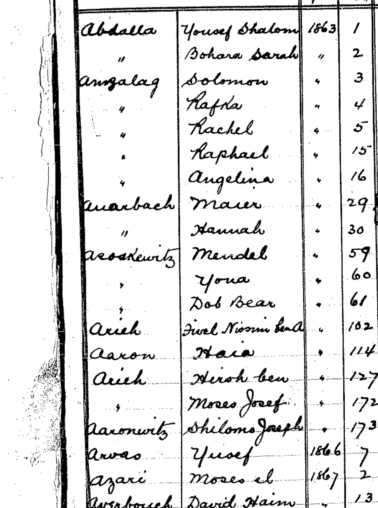
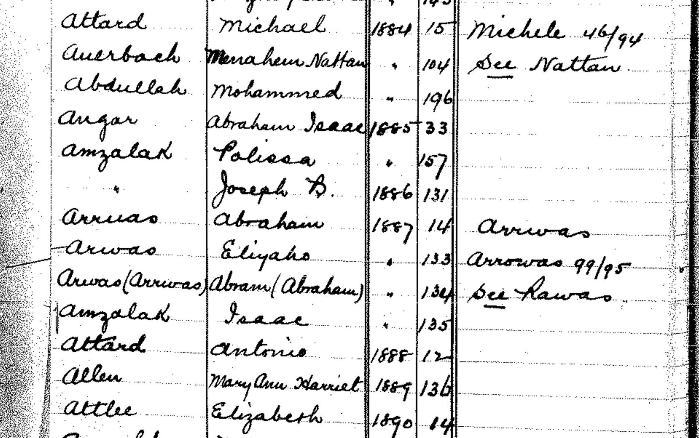
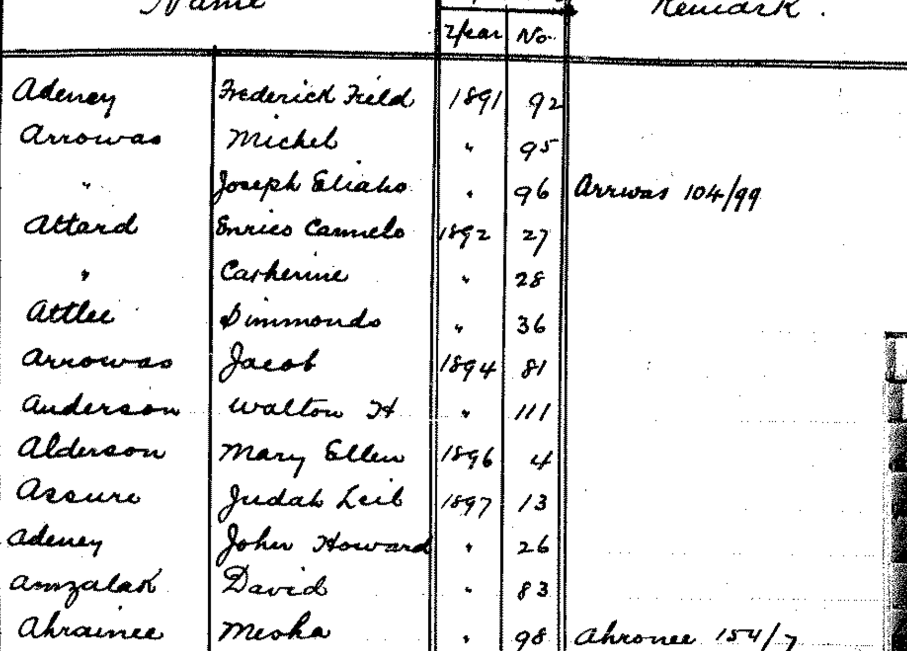
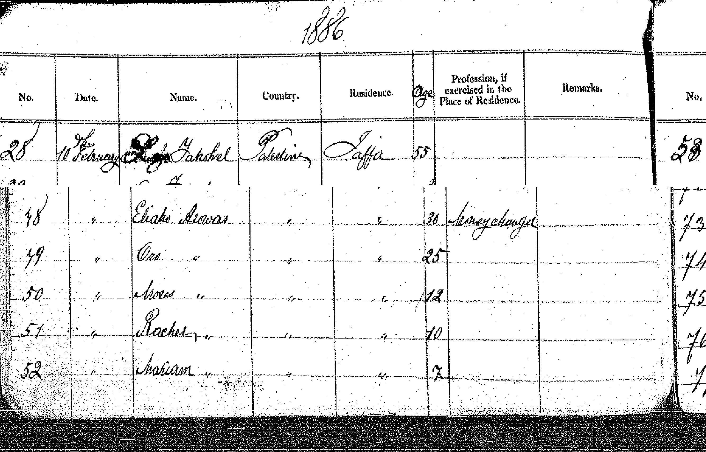
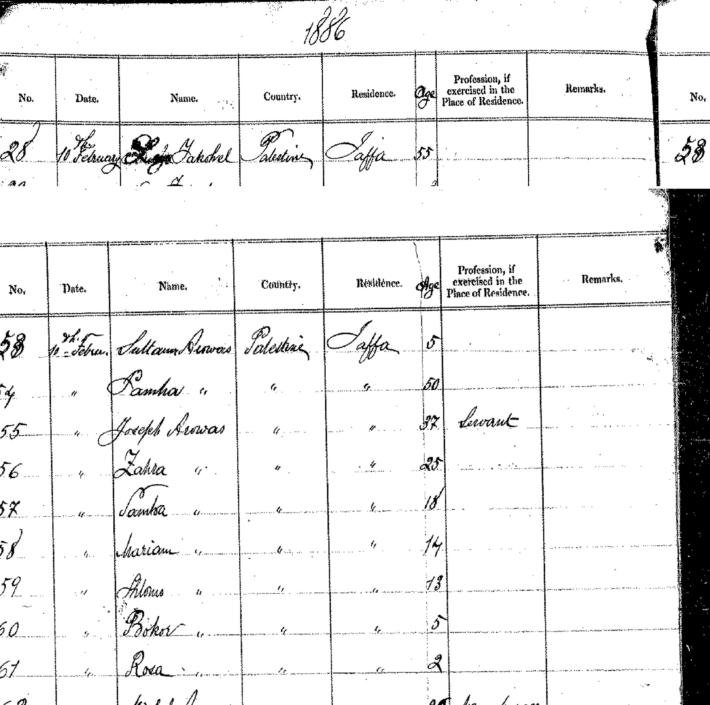
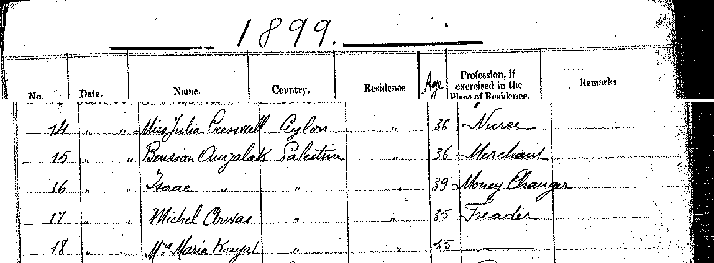
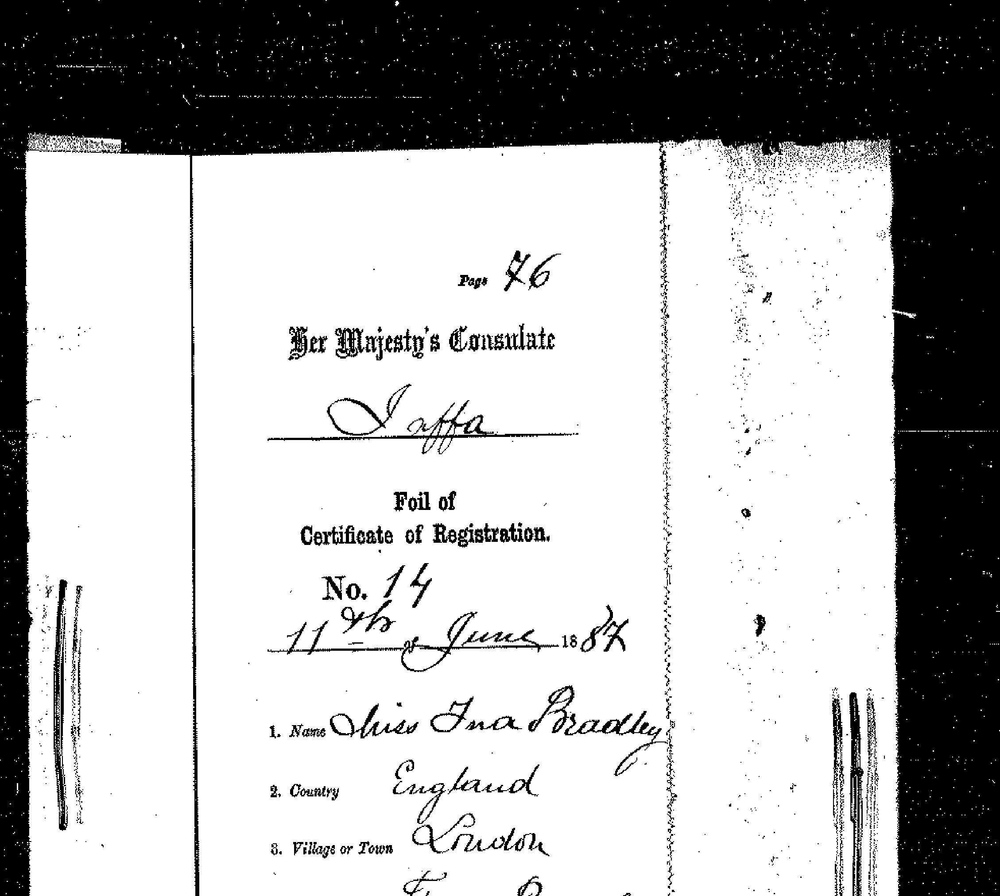
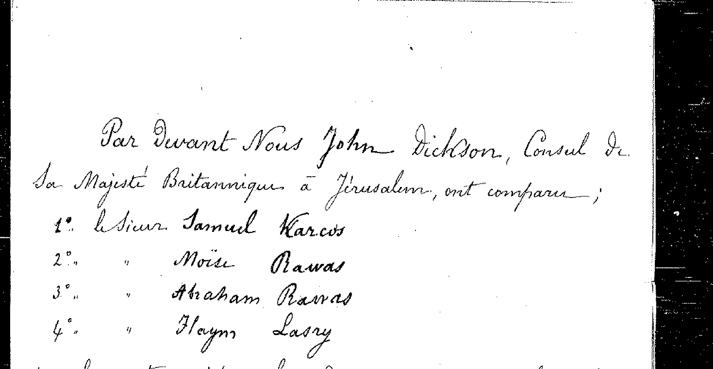
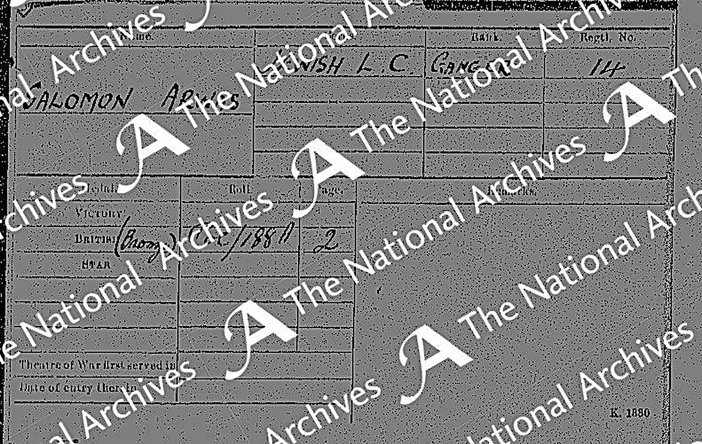
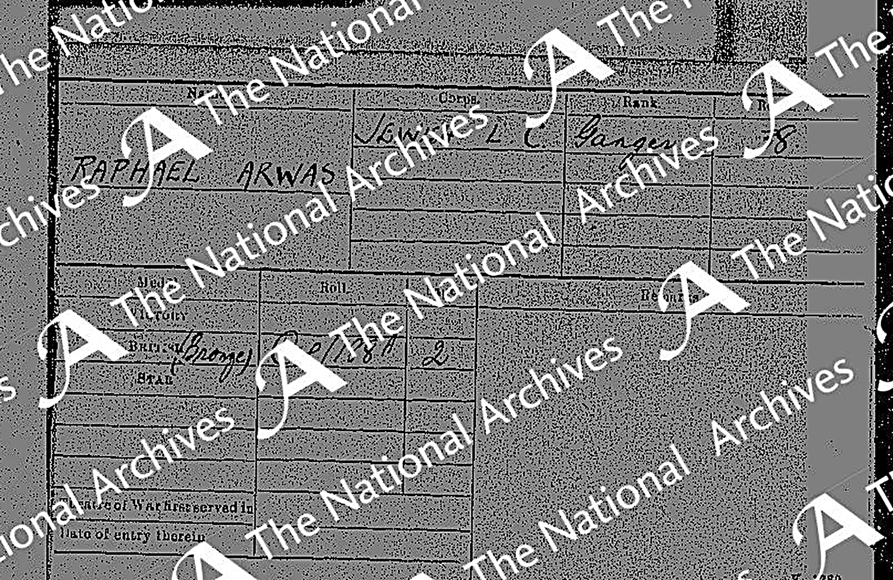
נספחים
- על המחקר עצמו — השיטה, סולם הוודאות, מנגנון ההפניות והמגבלות מרוכזים בפרק 10, בסוף המסמך.
- נספח א — עץ המשפחה. שבע שורות דורות, מוצג בגרסה הגרפית של המסמך וכן בעמוד עץ מלא. מקרא מפורט וסייגים — בתחתית עמוד העץ.
- נספח ב — גלריית הראיות. 79 ראיות מצולמות; לכל ראיה עותק מקומי, ולרובן גם המסמך המקורי באתר המקור.
- נספח ג — רשימת המקורות. 82 ערכי מקור עם מהות, קישור חיצוני, עותק מקומי (בארבעה ערכים אחד מהשניים חסר, כמצוין בהם) ומה כל מקור מוכיח, וכן רשימת הממצאים השליליים המתועדים.
- נספח ד — יומן המהדורות. כל המהדורות, אחת-אחת — מה השתנה בכל אחת, ומה נמצא או נפסל בה. הקובץ עצמו: CHANGELOG.md.
עץ המשפחה
מקרא הצבעים
אברהם (נושא המחקר) ·
ההורים (רוזה ואהרון) ·
פריינטה ·
ארואס (Arwas) ·
צדוק / צאלח (תימן) ·
בני המשפחה.
קו מלא — קשר מתועד. קו מקווקו — קשר משוער או מסגרת־מוצא. סימן «?» אחרי תאריך — מועמד שטרם אומת.
מה נוסף במהדורות 43-55
- ענף עזה. תעודת רישום נתין בריטי מס' 24 (קונסוליית יפו, 10.4.1893) נוקבת בשדה «Father's Name»: Shalom Arrwas (dead) — ובכך מזהה את אליהו שבעזה כבנו של שלמה מגיברלטר. אתו נרשמו רעייתו פרו ושישה ילדים. אליהו זה הוא «האדון אליהו ארואץ» שידיעת «השקפה» מ-15.4.1904 מתארת כשולט בעדת עזה.
- הענף המקביל. תעודה 25, מאותו יום: Joseph Eliaho בן אלעזר, סוחר בעזה — בן-דודו של אליהו, והוא החתום על מכתב התלונה נגדו. הידיעה מתעדת אפוא סכסוך בתוך המשפחה.
- ינואר 1904, יפו. תעודה 11 מזהה את מיכאל כבן נוסף של שלמה — ובכך שלושת האחים שבספר המשפחה (יוסף, מיכאל, אליהו) עומדים כולם ברשומות בנות-זמנן; ותעודה 12, של יוסף אליהו בן אלעזר, נושאת בהערות הפקיד את המילים «Orig. from Gibraltar» — המקור השלישי והמפורש למוצא.
- נספח בתחתית העץ. שני מתועדים ברשומת מדינה שהחוליה שלהם לעץ עדיין פתוחה: מרקו ארוואס (יליד מצרים 1916, «שם האב: שלמה») ואברהם פריינטה (ירושלים 1948, בן 58 ⇒ יליד ~1890). שניהם מוצגים במסגרת מקווקוות ובדירוג «טעון אימות».
- ילדיהם של האחים (מהדורה 54). טפסי הקונסוליה נוקבים גם בבני הבית. אצל מיכאל בן שלום ביפו: 1895 — רעייתו רחל (30), בן ציון (7) ופרידה (4); 1903 — רעייתו אטה (20), בן ציון (14), פרידה (11), רבקה (6), רחל (3) ויוסף (1). ו-1906 מוסיף ילד שישי, רפאל (2) — ילדיו במלואם: בן ציון, פרידה, רבקה, רחל, יוסף ורפאל. ואצל אליהו בעזה, 1893: פרו, משה, רחל, מרים, סולטנה, יעקב ושלמה. תבנית שחוזרת בשני הבתים, והפקיד כתב אותה במפורש ב-1906 — «Eta age 23 — Wife 2nd»: גיל הרעיה נמוך מכדי שתהיה אמם של הבכורים, מפני שהקונסוליה רשמה את הרעיה הנוכחית ואת כל ילדי האיש.
- אשכול 10.2.1886 (מהדורה 69). פנקס נתיני בריטניה של המחוז הקונסולרי של יפו (ארכיון המדינה, סל-1544/1) רושם באותו יום שלושה משקי בית ארואס ברצף — שבע-עשרה נפשות: אליהו (30, חלפן) ובני ביתו, יוסף (37, ⇒ יליד ~1849 — הצהרת גיל שלישית) ובני ביתו, ומיכאל (20, חלפן) ובני ביתו. זהו האשכול הגדול ביותר בקורפוס. סתירות שנרשמות ואינן מיושבות: אליהו רשום בן 34 בטופס עזה מ-4.12.1885 ובן 30 עשרה שבועות אחר כך; מגוריו עזה שם ויפו כאן; ורעייתו «פרו» ב-1893 מול «אורו» ב-1886. וכן: «מרים ארואס» בת 17 שבבית יוסף היא ילידת ~1868/9 — אינה מרים ילידת 1875 שבעץ.
- הענף המצרי (מהדורה 55). שני שאלוני רישום לעולה שנחתמו בחיפה ב-1950 מעמידים את יוסף (יליד קהיר 17.7.1935) ואת אחיו שמעון (יליד 1934; שדה התאריך נכתב «31/6» — תאריך שאינו קיים), שניהם בני רפאל, אזרחים מצרים. רפאל בן מיכאל, יליד יפו ~1904, היה כבן עשר בגירוש נתיני בריטניה מיפו ב-1914 — ומכאן, ככל הנראה, הענף שנשאר במצרים ושבניו שבו ארצה שלושים ושש שנים אחר כך. השרשרת שלמה ← מיכאל ← רפאל מאומתת בשלושה טפסים; זיהוי «רפאל» שבשאלונים — ככל הנראה.
- הקו הישיר, ברשומת מדינה (מהדורה 53). טופס קונסולרי 30 מיפו, 24.4.1893, נוקב «Youssef Arrwas · Father's Name: Solomon Arwas · Age 41»; ובעמוד הנגדי, טופס 31 מ-27.4.1893, משק ביתו: שרה אשתו (29), שלמה (19), משה (14), רפאל (3) וריינה (10) — כלומר אחיה ואחותה של מרים בשמותיהם, ולא רק שלמה שבספר המשפחה. מרים נעדרת כצפוי, שכן כבר נישאה. וטופס 43 מ-26.3.1902 מעמיד את שלמה בן יוסף עצמו — «Father: Yousef Arruas (dead) · Farmer · 27» — ובכך תוחם את פטירת יוסף בין אפריל 1893 למרץ 1902.
- שלושה בני שלמה (מהדורה 50). לצד מרקו עומדים עתה עוד שניים מאותו דור שאביהם נקרא שלמה ארואס. אלי — תעודת נישואין ירושלים 2.4.1944 («בן שלמה ושמחה») ומפקד ירושלים תש״ז (עמודת «שם האב»: שלמה); הוא ראש משק הבית שבמפקד «משמר העם» תש״ח, ושני המקורות בלתי תלויים. משה החייט — נתין בריטי מלידה מנווה שלום שבתל אביב; שם אביו אינו רשום במסמך, והוא נגזר ככל הנראה מכך שבנו יליד 1931 נקרא שלמה. שהם אחים — טעון אימות; אין רשומה המעמידה שניים מהם יחד.
מניין באו הענפים
- צד האם — ארואס/ארואץ: ילידי גיברלטר שעלו ב-1833; מתועדים ביפו לכל המאוחר מ-1855 (יעד ההתיישבות ב-1833 עצמו אינו מתועד). במפקד מונטיפיורי 1855 מופיעה המשפחה במלואה: שלמה (32, "סוחר ובאנקיר") ואשתו שמחה, ובניהם יוסף (12), משה (6) ואליהו (3); לצדם ענף אלעזר ומסודה — ככל הנראה אחיו של שלמה, שעלה באותה שנה.
- צד האם — פריינטה: יצחק (פפו) פריינטה מדור מייסדי מקווה ישראל (~1860/62 ירושלים, ממשפחה סלוניקאית - 31.12.1944 לפי הספר; עץ כהן: 1942 — טעון הכרעה ברשומת נחלת יצחק) ואשתו מרים ארואס מיפו (~1875 - 1916). שמונת ילדי משפחת פריינטה (הכתבה מ-1970 מנתה תשעה; ספר המשפחה — שמונה), ובהם שושנה רוזה — אמו של אברהם.
- צד האב — צאלח/צדוק: משפחת צורפים, רבנים ודיינים מצנעא שבתימן. אהרון עלה בתשרי תרע"ה (1914) דרך נמל יפו, לאחר שאביו נפטר בעדן ואמו ואחיו הצעיר נספו ברעב 1904.
על מה נשען כל דור
- הדורות התחתונים — כרטיס החבר בעמותת דור הפלמ״ח וכתבת "למרחב" (1970).
- צד האב — זיכרונות אהרון צדוק ומכתבו לנכדו (מקור ראשוני): לידה בצנעא (~1895-1898, המקורות חלוקים; בתיבה ננקב ~1895 על פי גיל 86 שברשומת הקבורה — מהדורה 38 — ובספר), משפחת צאלח, פטירת האב בעדן, רעב 1904, עלייה 1914. שם הסב אברהם — פנקס הבוחרים 1949 וכתובת אהרן ורוזה (מסמך ראשוני, מהדורה 35) — מאומת; שם הסבתא סעדה — MyHeritage + ספר המשפחה (שני מקורות משפחתיים לא בלתי-תלויים), ככל הנראה; האח יוסף, שנספה עם אמו — ספר המשפחה. מהדורה 59: רשומת פנקס תושבי יפו 1918-1919 (משק בית 685/2) נקראה אות-אות מן הסריקה — «צאלח · אהרן · רוק · 23», ובנוסף העדה «תימני» והמקצוע «פועל»; זו הרשומה החיצונית המוקדמת ביותר של אהרון, והזיהוי עלה לכמעט ודאי. מהדורה 60: (*שתי השנים בתיבה מתנגשות ונרשמות כך בכוונה: פנקס תושבי יפו 1918-1919 רושם אותו תושב יפו, ואילו הראיון ב«למרחב» גוזר הגעה למקווה ב-1916; מקווה ישראל סמוכה ליפו ותחום הרישום של ועד העיר לא נבדק — ראו ערכי מקור 28 ו-68.) סריקת JPress העלתה חמישה-עשר פריטי עיתונות מ-1929 עד 1960; צוואת יהושע מרגולין («דבר», 10.10.1947) נוקבת «אהרון צדוק התימני, האופה אשר במקוה-ישראל» — עוגן הזיהוי — וראיון ב«למרחב» (1960) נותן 44 שנים במקווה, אופה ראשי מ-1920. חמישה טקסטים פרי עטו, ובראשם «בחדר בתימן» («דבר», 15.12.1933), עדות בגוף ראשון על החדר בצנעא.
- מרים ארואס והוריה יוסף וגרסיה — אוששו ב-Geni, ובמהדורה 35 גם בספר המשפחה: תאריך פטירתה נקרא מעל מצבתה בטרומפלדור (ז׳ בתמוז תרע״ו), ואביה יוסף מזוהה כסוכן הקניות של מקווה ישראל.
- פנקס נתיני בריטניה ביפו ("Register of British Subjects"): בגיליון הפתיחה, שורה 1 — "Solomon Arruas · Gibraltar · Jaffa · Money Changer"; שורה 10 — "Azar Arruas · Gibraltar · Matress Maker"; ובגיליון 1873, שורה 12 — "Eliaho Arruas · Palestine · Money Changer". מאשש עצמאית את מוצא גיברלטר וסוגר את שרשרת המקצוע: באנקיר (1855) ← חלפן (גיליון הפתיחה) ← צראף אצל יוסף (1869) ← חלפן אצל אליהו (1873). עמודת התאריך בגיליון הפתיחה ריקה, ו-IGRA מאנדקס אותו פעמיים (1860 ו-1873) — שנת הרישום אינה נקבעת. זיהוי Solomon עם שלמה — כמעט ודאי; זיהוי Azar עם אלעזר, וממילא גם "מזרנים" שבתיבת אלעזר — ככל הנראה.
- יוסף ארואץ במפקד ירושלים 1866 (פריט 269) — מסביר מדוע רשומת הקונסוליה 1869 נוקבת ב"ירושלים" כעיר מוצאו אף שהמשפחה ביפו מ-1855: ירושלים היא ככל הנראה עיר מגוריו הקודמת ולא מקום לידתו. ההסבר עומד בכפוף לזיהוי, המדורג ככל הנראה.
- צאלח ← צדוק: פנקס הבוחרים תש"ט של ירושלים מדפיס את שם המשפחה בשתי צורותיו — "צדוק (צאלח)" — ובילקוט הפרסומים תועדו קבוצות משפחתיות שהחליפו צאלח ← צדוק (1954-1977). אלה אינם בני המשפחה ואינם מזהים אותה, אך הם מאששים חיצונית את הדפוס שבבסיס עדותו של אהרון. דירוג: קיום הדפוס — מאומת; שכך אירע גם במשפחתו — כמעט ודאי.
- ענף פריינטה — הרובד היפואי: מפקדי מונטיפיורי מתעדים את השם בארץ מ-1839 (ירושלים) וביפו מ-1866 — שלמה ואסתר (עלו 1858), שמחה האלמנה (עלתה 1868) וארבעה ילדים יתומים ונזקקים ב-1875. זהו המילייה שממנו יצא יצחק פפו למקווה ישראל בימי נטר, אך אין חוליה שמית מוכחת — טעון אימות.
- הורי יוסף — שלמה ושמחה — כמעט ודאי ברמת המפקד (מפקד 1855 + רישום הקונסוליה הבריטית 1869: "יוסף בן סולומון, צראף"). זיהוי יוסף שבמפקד כאביה של מרים — ככל הנראה, ולכן גם השרשור המלא אל שלמה ושמחה — ככל הנראה.
- שנתוני רוזה ויעל ושמות האבות אברהם ויצחק — פנקס הבוחרים תש"ט (1949), IGRA; לידת רוזה דויקה במהדורה 35 ל-31.12.1902 על פי דף רישום הלידות שבכתב יד אביה (ספר המשפחה). פטירת רוזה — 3.4.1979, חולון — נסגרה במהדורה 38 ברשומת הקבורה (כמעט ודאי; הספר ועץ כהן אוששו, מועמד תיק העיזבון נדחה). שנתוני שאר האחים — מרים (קיקה) 1927, יצחק 1933, יוסי 1948 — עץ כהן המשפחתי (2005), ככל הנראה; פטירת יעל — 9.8.1996, רשומת הקבורה (מהדורה 38).
סייגים
- סימני «?» בתיבות — נתונים שאין להם רשומה מאששת, בשלושה הקשרים. (א) דור ההורים — נסגר במהדורה 38: רשומות הקבורה בחולון (מרשם JOWBR, אינדקס מצבות מצולמות) נוקבות: אהרון — 18.11.1981 (כ"א בחשוון תשמ"ב), בן 86, אביו אברהם — בהלימה למודעת האבל ("דבר" 19.11.1981, מהדורה 36); רוזה — 3.4.1979 (ו' בניסן תשל"ט), בת 76, אביה יצחק — "אפריל 1979" של עץ כהן אושש ומועמד תיק העיזבון נדחה; קבורים זה לצד זה. דירוג: כמעט ודאי (אינדקס; צילומי המצבות — היעד המשלים). (ב) שושלת ארואץ: מועמדים מתוך מ"ד גאון, "יהודי המזרח בארץ ישראל" (1938), שרשם כי קברי חלק מהמשפחה נמצאים בבית העלמין הישן ביפו. שלמה 1868 — ככל הנראה (מתיישב עם היעדרו מרשומת 1869); יוסף 1894, אליהו 1906 ואברהם 1912 — טעונים אימות. מועמד נוסף אצל גאון, "אליעזר, נפ׳ 1865", לא הוצג בעץ: ההחרגה נשענה על ההנחה שאלעזר נרשם בקונסוליה ב-1873, אך רשומת Azar נמצאת בגיליון הפתיחה חסר-התאריכים ולכן הסתירה אינה מוכחת עוד — ההחרגה נשמרת מזהירות בלבד. (ג) דור האחים: שנתוני מרים (קיקה), איציק ויוסי — עץ כהן (2005) בלבד; פטירת יעל נסגרה במהדורה 38 — 9.8.1996, קריית שאול, בת אהרן ושושנה (רשומת הקבורה).
- אמה של רוזה — מרים ארואס: דף רישום הלידות שבעיזבון יצחק נוקב במרים כאם הבכור (1891) וברוזה כילידת 31.12.1902, מצבת מרים נוקבת תרע"ו (1916), ולפי הספר נשא יצחק את סמוחה רק אחרי מות מרים. הצירוף — מאומת ברכיביו המסמכיים, כמעט ודאי בשלמותו; סמוחה הייתה המטפלת-החורגת מ-1916 ואילך.
- תאריך הלידה המדויק 16.9.1925 — מ-MyHeritage בלבד, ועץ כהן (2005) נוקב 19.9.1925 — פער שלושה ימים בין שני מקורות משפחתיים, ללא רשומה מכריעה; שנת 1925 מאומתת בכרטיס הפלמ״ח. סדר הלידה של האחים אינו ודאי.
- שלמה ארואס בן יוסף (אחי מרים) קרוי ככל הנראה על שם סבו — פרשנות על סמך השם בלבד. שנת לידתו המוצהרת (~1875) זהה לשנת לידת מרים — תאומים או סטיית-גיל באחד המקורות; לא הוכרע, ומכאן סימן השאלה בתיבה. אחיו הצעיר של אהרון — יוסף, לפי ספר המשפחה ("אח ליוסף שהיה צעיר ממנו במעט", מהדורה 35); נספה עם אמו ברעב תרס"ד.
- פרטי בני הדור החי מובאים במידה מזערית, מטעמי פרטיות.
גלילה אופקית בתוך המסגרת מציגה את העץ במלואו; בהדפסה הוא מקבל עמוד לרוחב משלו.
פתיחת העץ בעמוד נפרד ↗גלריית המסמכים המרכזיים
המסמכים שעליהם נשען עיקר הדוח, בסדר שבו הם נדונים בו. לחיצה פותחת את הסריקה המלאה.
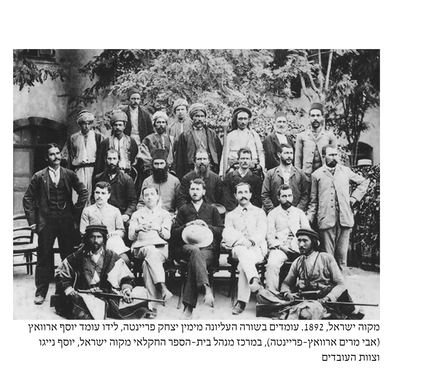
יוסף ארואס בסגל מקווה ישראל, 1892דף רישום הלידות — «31 Decembre 1902 · Rosa Parente»כתובת אהרן ורוזה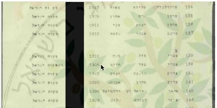
פנקס הבוחרים תש"ט — אהרון ושושנה צדוק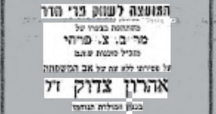
מודעת האבל על אהרון, «דבר» 22.11.1981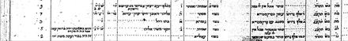
מפקד מונטיפיורי 1855, יפו — שלמה ושמחה ארואץ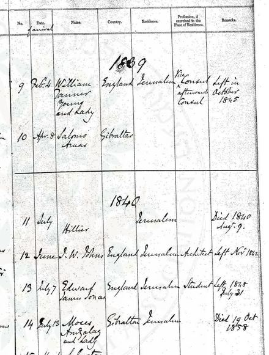
ירושלים 1839 — «Salomo Aruas · Gibraltar»גיליון הפתיחה של פנקס נתיני בריטניה ביפואשכול ארואס, 10.2.1886 — שנים-עשר שמות ברצף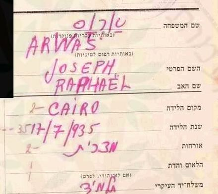
שאלון עולה, חיפה 1.5.1950 — יוסף ארואס מקהיר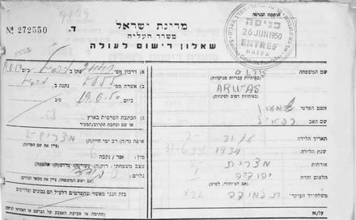
שאלון עולה, חיפה 26.6.1950 — שמעון ארואס{kind=link}
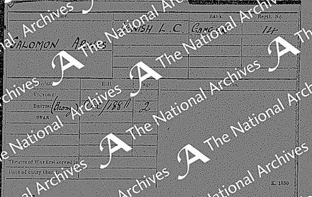
כרטיס מדליות — SALOMON ARWAS, גדוד העבודה היהודי{kind=link}
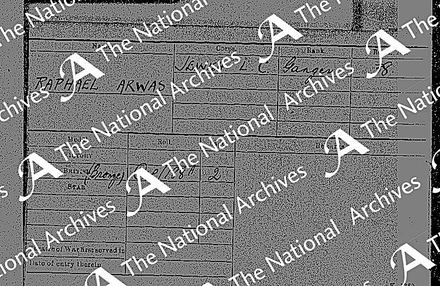
כרטיס מדליות — RAPHAEL ARWAS, אותו רול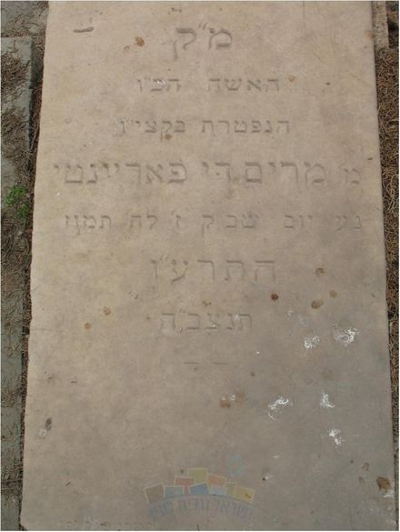
מצבת מרים ארואס-פריינטה, טרומפלדוראינדקס האנשים
כל אדם שהדוח מתעד, עם קישור אל הפרק שבו הוא נדון. שדה החיפוש שבראש העמוד מחפש גם בכתיבים החלופיים של השמות.
אינדקס המקורות
רשימת מקורות
רשימת המקורות שעליהם נשען המאמר, מסודרת לפי סוג. כל המקורות הם מקורות מקוונים או סריקות שנצפו במהלך אוגוסט 2026; תאריך הצפייה מצוין בכל ערך, משום שחלק מהמאגרים משתנים בזמן — רשומות נוספות אליהם, וקובצי סריקה שהיו זמינים חדלו להיות מוגשים. לכל ערך: מהות המקור ומעמדו (ראשוני, משני או מקור עזר), ההפניה החיצונית למסמך המקורי, העותק המקומי השמור בתיקיית המחקר, ומה בדיוק הוא מוכיח. תקן העותק המקומי: "עותק מקומי" פירושו עותק של המסמך עצמו — סריקת הרשומה, קובץ ה-PDF של המקור, תצלום העמוד — ולא צילום של דף האינטרנט שמפנה אליו. מקורות שאין מאחוריהם מסמך נפרד (ערך אנציקלופדי, עמוד מוסדי, מאמר מקוון) מסומנים כמקור עזר מקוון, ולא מיוצר להם "עותק" מלאכותי. בארבעה ערכים חסר אחד משני הקישורים, והדבר מצוין בערך עצמו — עם דירוג הוודאות הנגזר ממנו. הסימון "מצוטט בדוח" שמתחת לכל ערך מוליך חזרה אל כל מקום בגוף המאמר שמסתמך עליו. ערך שאינו מצוטט בגוף המאמר מסומן במפורש.
מקורות ראשוניים / משפחתיים
1. כרטיס החבר של אברהם צדוק — עמותת דור הפלמ״ח (עוגן המחקר)
- מהות: עמוד חבר פלמ״ח ובו תולדות חיים מלאות; לפי המצוין בו, "המידע נמסר על ידי שני בניו: עדו וזיו".
- מקור חיצוני: palmach.org.il — צדוק אברהם
- עותק מקומי: טקסט מלא · צילום העמוד
- מה הוא מוכיח: זהות אברהם; לידה 1925 מקווה ישראל; הורים אהרון (אופה בית הספר) ורוזה לבית פריינטה; אחים יעל, מרים ("קיקה"), איציק, יוסי; רעיה רחל (רפפורט/פרקש, ניצולת שואה, נישואין 1950); בנים עדו וזיו; שירות בפלמ״ח (פלוגה ד׳) ובחטיבת קרייתי (לוד ורמלה); עבודה בקואופרטיב "דר"; פטירה 1/1/2017 וקבורה בירקון.
- נצפה: אוגוסט 2026
1ב. זיכרונות אהרון צדוק ומכתבו לנכדו (1971/72) (מקור ראשוני — צד האב)
- מהות: קטעי זיכרונות שכתב אהרון צדוק (~1897 - 1981) על ילדותו בצנעא, ותעתיק מכתבו האוטוביוגרפי לנכדו גיל שחם למשימת בר-מצווה "דור לדור יביע אומר" (חוקוק, 1971/72). תעתיקים משפחתיים שהוקלדו בידי גיל שחם (2003) ונשמרו במשפחה; הועלו למחקר בידי המשתמש.
- עותק מקומי: הזיכרונות והמכתב (טקסט) · המכתב לגיל · גרסת "אל נכדי" · קובצי המקור (doc) · תמצית והערות
- מה הוא מוכיח (מקור ראשוני): לידה ~1897 בצנעא; משפחת צאלח ("רבנים ולמדנים, דיינים ושוחטים"; צורפים מדורי דורות; צאלח ← צדוק בארץ); מות האב בעדן (~1900); מות האם והאח ברעב צנעא 1904 והצלתו שלו בגיל 6-7; גידולו אצל דודו; נדודיו לעדן ותווהי; עלייה בתשרי תרע"ה 1914 דרך נמל יפו; אופה מקווה ישראל עד שנות ה-60 ומזכיר פועלי מקווה ישראל; עריכת "שבות תימן". (תאריך הפטירה 1981 — מכותרת התעתיק; אומת במהדורה 36 במודעת האבל של המשפחה, "דבר" 19.11.1981 — ראו ערך 30.) מפריך את המסורת "עלה בגיל 4".
- נצפה: אוגוסט 2026
- הערה: אין הפניה חיצונית — מסמך משפחתי שאין לו כתובת ציבורית.
1ג. "שבות תימן" (תש"ה 1945) — הספרייה הלאומית
- מהות: רשומת קטלוג של הקובץ "שבות תימן", "הוכן והובא לדפוס על ידי ישראל ישעיהו, אהרן צדוק".
- מקור חיצוני: הספרייה הלאומית — שבות תימן
- מה הוא מוכיח: אהרון צדוק היה עורך-שותף (עם ישראל ישעיהו, לימים יו"ר הכנסת) של הקובץ המכונן על יהדות תימן — אישוש חיצוני לעדותו במכתב ולמעמדו הציבורי.
- נצפה: אוגוסט 2026
- הערה: אין עותק מקומי — רשומת קטלוג בלבד; הקובץ עצמו לא אותר.
1ד. מסירות משפחתיות בעל-פה (2026) (מקור משפחתי — ללא מסמך)
- מהות: פרטים שנמסרו ישירות בידי בני המשפחה במהלך המחקר ואינם נשענים על מסמך. מתועדים ביומן ייעודי כדי שלכל טענה יהיה מקור נקוב — גם כשהמקור הוא זיכרון ולא רשומה.
- עותק מקומי: יומן המסירות המשפחתיות
- מה הוא מוכיח: שנת פטירתה של שושנה רוזה צדוק — 1979 (נמסר אוגוסט 2026). עד כה היה זה פער פתוח מפורש: הרשומה המתועדת המאוחרת ביותר של רוזה הייתה פנקס הבוחרים תש"ט (1949), ושנת הפטירה לא אותרה באף מאגר, ובכלל זה כל מאגרי הקבורה של IGRA. הנתון סביר לחלוטין (ילידת 1903 — נפטרה כבת 76) והוא הערך הטוב ביותר שיש, אך אין לו רשומה תומכת. (דירוג: טעון אימות — לא מתוך ספק בזיכרון המוסר אלא לשם אחידות הסולם; ובקורפוס הזה יש תקדים ממשי — המסורת המשפחתית קבעה 1981 לפטירת אהרון, מודעת "מעריב" מ-22.1.1980 העמידה זאת זמנית בספק, ובמהדורה 36 הוכרע: המסורת צדקה — מודעת האבל של המשפחה ("דבר", 19.11.1981) אימתה את השנה, ומודעת 1980 התבררה כשל משפחה אחרת.)
- עדכון (מהדורות 35-37): המסירה אוששה בדפוס בספר המשפחה והדירוג עלה לכמעט ודאי; לידת רוזה דויקה ל-31.12.1902 (דף הרישום); ובמהדורה 38 הוכרע תאריך הפטירה המלא: 3.4.1979 (רשומת הקבורה בחולון, ערך 34) — מועמד תיק העיזבון (25.6.1979) נדחה, ו"04/1979" של עץ כהן אושש. נוסח הדירוג המקורי לעיל נשמר כתיעוד היסטורי של רגע המסירה.
- הערה: אין הפניה חיצונית — מסירה בעל-פה שאין לה כתובת ציבורית. הערך אינו מצוטט עוד ישירות בגוף הדוח (הטענה נשענת כיום על ערכים 2, 30-32 ו-34).
- נצפה: אוגוסט 2026
מקור משפחתי — עץ גנאלוגי
1א. עץ MyHeritage — "Zadok Web Site" (Smart Match)
- מהות: דף Discoveries בעץ המשפחה של המשתמש, המרחיב את השורש כמה דורות אחורה (מקור משני — עץ משפחתי, לא רשומה ראשונית).
- עותק מקומי: עמוד 1 · עמוד 2 · עמוד 3 · תמצית והערות
- מה הוא מוכיח (בכפוף לדירוג משני): תאריך לידה 16.9.1925; שם האם המלא שושנה רוזה; השם התימני המקורי צאלח והסבים מצד אב אברהם צדוק (צאלח) וסעדה; כינוי הסב יצחק "פפו" פריינטה ואביו אברהם פריינטה; מרים לבית ארואס והוריה יוסף וגרסיה ארואס, ומעליהם שלמה ארואס כאבי-יוסף (במהדורה 8 הודח כשם-חוזר; במהדורה 11 שב והתאשש חלקית מרשומת הקונסוליה הבריטית 1869 — דירוג: ככל הנראה; ראו פריטים 9א ו-15); ושמות אחי/אחיות רוזה (פלורין בלומברג, ויקטוריה בכר, חנה גרסיה ביטרן; משה, יוסף, רפאל רחמים, אברהם אלברט פריינטה).
- נצפה: אוגוסט 2026
- הערה: אין הפניה חיצונית — עץ פרטי, נגיש רק לבעליו.
{kind=link}
{kind=link}
אוסף "האלבום של ישראל" — מקורות משפחתיים דיגיטליים (מהדורה 37)
31. אוסף פריינטה ב"האלבום של ישראל" (ישראל נגלית לעין) — אוסף 9700.0004 (שבעה פריטים מצולמים; ובהם צילומו המוקדם ביותר של אברהם)
- מהות: אוסף דיגיטלי משפחתי באתר israelalbum.org.il. הפריטים שנמסרו למחקר: דף רישום הלידות בכתב יד יצחק פריינטה (סריקה נקייה; פריט .007, "בני משפחת פריינטה במקווה ישראל"); צילום ישיר של מצבת מרים בטרומפלדור (.008); "יצחק פריינטה עם נכדיו במקוה ישראל", 1936 (.012); תעודת הגמר (Certificat) של ניסים בכר, אליאנס/מקוה ישראל 1917 (.032); גלוית "אברמינו" בלאדינו לדודה סמוחה, 1913-1915 (.036); כתובת ויקטוריה ונסים בכר, יפו תרפ"ד/1924 (.044); וגלוית ויקטוריה מווינה, 1925 (.046).
- מקור חיצוני: עמוד האוסף · פריטים: .007 · .008 · .012 · .032 · .036 · .044 · .046
- עותק מקומי: דף הרישום · מצבת מרים · 1936 — יצחק והנכדים · תעודת בכר 1917 · גלוית אברמינו · כתובת 1924 · גלוית וינה 1925 · קובץ הממצאים
- מה הוא מוכיח: אישור שורה-שורה של דף רישום הלידות (רוזה — 31.12.1902); פטירת מרים ז' בתמוז תרע"ו (8.7.1916, שבת — אומת בלוח השנה) בקריאה ישירה מן האבן; תיעוד צילומי של אברהם בן ה-11 לצד סבו ואחיותיו (1936, זיהויים על אחריות כיתוב האתר); חתימת "Albert Pariente" בכתב ידו וזיקתו לדודה סמוחה; ניסים בכר יליד איזמיר, תלמיד מקוה 1913-1917; כתובת ויקטוריה-ניסים תרפ"ד; שהות ויקטוריה בווינה 1925 ("Cher Béhar" — אחרי הנישואין).
- נצפה: אוגוסט 2026
- הערה: דפי הפריטים באתר נטענים ב-JavaScript ואינם נשלפים אוטומטית; תגי הכותרת של כל דף אומתו אחד-אחד (22.8.2026) ונמצאו תואמים. שיוך דף הרישום לקוד .007 — כמעט ודאי (על סמך הכותרת בלבד).
{kind=link}
{kind=link}
{kind=link}
{kind=link}
32. חנן כהן, "Descendant Tree of Izhak Pariente and Miriam Aruas" (נובמבר 2005) (עץ משפחתי משני — לשימוש זהיר)
- מהות: עץ צאצאים ורישום דורות (53 משפחות, עם מפתח שמות) שערך בן המשפחה המורחבת חנן כהן ב-2005 (בכותרת המקור: "Decendant Tree" — כך); צורף כנספח לאוסף האלבום של ישראל. כולל גם עץ גרפי עברי (פריט 9700.0004.001).
- מקור חיצוני: עמוד האוסף · העץ העברי — פריט .001
- עותק מקומי: תמצית מושחרת — עמוד השער ורישום הדורות 1-3, לאחר השחרת פרטי קשר וכל תאריך לידה מלא (יום/חודש/שנה) של ילידי 1926 ואילך · העץ העברי הגרפי
- מה הוא מוכיח (בכפוף לדירוג משני — ככל הנראה): יצחק פריינטה יליד ירושלים; סמוחה ("Simha Aruas") כאשתו השנייה; שנתוני אחי אברהם — מרים (קיקה) 1927, יצחק 1933, יוסי 1948; יעל 12.4.1923 (פטירתה "08/1997" — הופרך במהדורה 38: 9.8.1996; צדק בחודש בלבד); פטירת רוזה "04/1979" (אושש והדויק במהדורה 38: 3.4.1979, רשומת הקבורה — ערך 34); אשת משה — רבקה (בעץ העברי: רבקה עוזיאל). שתי שגיאות מוכחות מול מסמכים ראשוניים: רוזה "1905" (מול דף הרישום) ומרים "1918" (מול המצבה); ושני מתחים פתוחים מול מקורות משפחתיים: יצחק "1942" (מול הספר: 1944) ואברהם "19/09/1925" (מול MyHeritage: 16.9) — ראו קובץ הממצאים; אין לצטטו כפוסק.
- נצפה: אוגוסט 2026
- הערה: המסמך המלא גדוש פרטי אנשים חיים (טלפונים, כתובות, דוא"ל ותאריכי לידה) — ולכן הוא שמור בארכיון המחקר המשפחתי בלבד, אינו מקושר מכאן ומוחרג מעותק האתר; המקושרת היא תמצית מושחרת של הדורות ההיסטוריים (ממצא ביקורת, סבב 26). מצוטט בדוח רק לדורות ההיסטוריים.
33. עדות "סבתא ויקטוריה" — ויקטוריה בכר לבית פריינטה, 11.3.1991 (עדות בעל-פה של בת הבית — דור המייסדים)
- מהות: תמליל מודפס (סריקת המקור + הקלדה מחודשת) של ריאיון עם ויקטוריה בכר (13.3.1901 - 25.11.1995), בתם של יצחק ומרים, שנרשם יומיים לפני יום הולדתה התשעים; צורף כנספח לאוסף האלבום של ישראל. כולל גם את הערותיה לאלבום התמונות.
- מקור חיצוני: עמוד האוסף
- עותק מקומי: התמליל — הקלדה מחודשת לצד סריקות המקור · קובץ הממצאים
- מה הוא מוכיח (עדות בעל-פה — ככל הנראה, אלא אם אושש): קידושי יצחק-סמוחה ללא חיי זוגיות ("הם ערכו קידושין אבל מעולם לא חיו כבני זוג"), והזיהוי "דודה שמחה (שמויחה)" — סמוחה = שמחה; גורל יוסף — נשלח ללבנון במלחמת העולם הראשונה, נלקח שם לצבא התורכי ולא שב, והאב חיפשו בארצות שכנות; אלברט — נישא בארגנטינה ולו ארבעה ילדים, סירב לשוב; מאורעות 1921 — "אל תגעו בחווג'ה פריינטה"; מות האב בטיפולה וקבורתו "בתל אביב"; זיכרון מוצא צפון-אפריקאי הנקשר בעדות לענף ארואס ("משפחת ארואס — משפחה עשירה מאד שבאה ארצה מצפון אפריקה") — מתלכד עם ממצא גיברלטר-טטואן של הקורפוס — לצד "אבי יליד ירושלים"; שהות וינה באמצע שנות העשרים. סתירה מתועדת: "כשהייתי כבת 7-8 נפטרה אמי מחולירע" — מול המצבה (1916; ויקטוריה בת 15) — המצבה גוברת.
- נצפה: אוגוסט 2026
34. מרשם הקבורה העולמי JOWBR — עשר רשומות הקבורה של המשפחה (הרשומות שסגרו את תאריכי הפטירה, מהדורות 38-39)
- מהות: JewishGen Online Worldwide Burial Registry (JOWBR), אוסף ישראל — אינדקס מצבות מצולמות (מקורו העיקרי: BillionGraves). עשר רשומות משפחתיות אותרו בשני סבבים (ליל 23.8.2026 ובוקרו): שושנה רוזה צדוק — 3.4.1979 (ו' בניסן תשל"ט), בת 76, אביה יצחק, חולון, לצד אהרן (BG 14075626); אהרן צדוק — 18.11.1981 (כ"א בחשוון תשמ"ב), בן 86, אביו אברהם, חולון, לצד רוזה (BG 14075625); יעל פרחי — 9.8.1996 (כ"ד באב תשנ"ו), ילידת 1923, בת אהרן ושושנה, קריית שאול; ויקטוריה בכר — 25.11.1995 (ב' בכסלו תשנ"ו), ילידת ~1901, אביה יצחק פריינטה, חולון, לצד ניסים בכר — 2.2.1974 (י' בשבט תשל"ד), אביו אברהם; משה פרינטה — 23.11.1983 (י"ז בכסלו תשמ"ד), אמו מרים, קריית שאול, לצד רעייתו רבקה פרינטה — 27.3.1979 (כ"ח באדר תשל"ט), הורה נקוב: שמחה; בן ציון (ביטו) פרחי — 7.1.1992 (ב' בשבט תשנ"ב), יליד ~1919, אביו חיים, קריית שאול; פלורין בלומברג — 11.7.1974 (כ"א בתמוז תשל"ד), חולון, לצד יצחק בלומברג — 12.1.1987 (י"א בטבת תשמ"ז), יליד ~1896, הוריו יוסף וסופיה. כל המרות הלוח אומתו חישובית.
- מקור חיצוני: רוזה · אהרן · יעל · ויקטוריה · ניסים · משה · רבקה · ביטו · פלורין · יצחק בלומברג
- עותק מקומי: קובץ הממצאים — הרשומות, השיטה והממצאים השליליים
- מה הוא מוכיח: תאריכי הפטירה המלאים של רוזה (3.4.1979 — הכרעת שלושת המועמדים), אהרן (18.11.1981 — היום המדויק), יעל (9.8.1996 — הכרעת מתח 1996/97), ויקטוריה, ניסים, משה, רבקה, ביטו, פלורין ויצחק בלומברג — כל שנות הספר דויקו ליום; אישושי-אבן לשמות הורים: יצחק אבי-רוזה, אברהם אבי-אהרן, אהרן ושושנה הורי-יעל, יצחק פריינטה אבי-ויקטוריה, מרים אם-משה (אישוש-אבן ראשון לשאלת האם), חיים אבי-ביטו; ושכנויות הקברים (אהרן↔רוזה, ויקטוריה↔ניסים, משה↔רבקה, פלורין↔יצחק) — הגאוגרפיה המשפחתית: אשכול חולון ואשכול קריית שאול. ממצאים שליליים מתועדים: אברהם (2017, ירקון) אינו באינדקס — פער כיסוי; דור המייסדים (יצחק פפו, מרים, סמוחה) וגרסיה ביטרן — בתי העלמין/התקופות אינם מכוסים; אין יוסף פריינטה בקבורות ביירות; ארואס אינם במאגרי גיברלטר — ובמהדורה 40 נסרק מפקד 1791 ישירות לפי תחיליות שם משפחה, עם שאילתות בקרה, ואין בו ולו שם אחד הפותח ב-AR; באותה סריקה התברר שאשכול פריינטה הגיברלטרי הוא מגרבי ("Barbary") ואינו הענף הסלוניקאי שלנו (התיעוד). (שני ממצאי-שלילה ממהדורה 38 — "ביטו אינו באינדקס" ו"המשפחה הגרעינית אינה באוסף" — תוקנו במהדורה 39; ראו קובץ הממצאים.)
- נצפה: אוגוסט 2026
- הערה: אינדקס של מצבות מצולמות — לא צילומי המצבות עצמם; הדירוג כמעט ודאי, וצפייה בצילומי BillionGraves (יעד T9, דורש דפדפן) תעלה למאומת. הזיהויים ודאיים למעשה בזכות הצלבת שם מלא + גיל + שמות הורים + שכנות קברים.
מקורות חיצוניים לאישוש
2. ספר "משפחת פריינטה: מקוה ישראל" (גיל שחם, 2021) — הספר המלא (הועשר במהדורה 35: העותק המלא נמסר בידי המשפחה)
- מהות: ספר משפחה (תשפ"א 2021, 215 עמ'), תחקיר, איסוף, כתיבה ועריכה: גיל שחם — נכדם של רוזה ואהרון (בן קיקה וחיימק'ה), נין יצחק ומרים פריינטה; עיצוב: דפנה סרוסי (צדוק) — בתו של איציק צדוק, כמתברר מפרק המשפחה בספר עצמו. מקור משני משפחתי הנשען על זיכרונות, ראיונות, ארכיון מקווה ישראל, הספרייה הלאומית ויד בן צבי — אך משובצים בו צילומי מסמכים ראשוניים: דף רישום הלידות בכתב ידו של יצחק פריינטה, כתובת אהרן ורוזה, מצבת מרים בטרומפלדור, קופסת חמישים שנות העבודה (1930), מכתבים ופתקים.
- מקור חיצוני: רשומת הספרייה הלאומית — מס' מערכת 997010400325605171
- עותק מקומי: הספר המלא, גרסת ההדפסה (PDF) · ממצאי הקריאה המלאה, לפי עמודים · דף רישום הלידות · הכתובה · מצבת מרים · יוסף ארואס, 1892 · רשומת הקטלוג (מהסבב הראשון)
- מה הוא מוכיח: עשרות קביעות; המרכזיות — רוזה נולדה בליל 31.12.1902 במקווה ישראל (דף הרישום + הטקסט; מיישב את "1903" של פנקס תש"ט), נפטרה 1979 ונטמנה בבית העלמין בחולון; אהרון נפטר 1981 בבית הכנסת הסמוך לביתו בחולון, "כבן שמונים ושש" (גוזר לידה ~1895 — בניגוד ל"1898 לערך" שבגוף הטקסט ובתרשים של הספר עצמו), ונטמן בחולון ליד רוזה; נישואיהם — מקווה ישראל, 1922 (הטקסט; דף הרישום: "mariage 1922 Juillet"; הכתובה מתויגת תרפ"ג); אהרון — בכור לאברהם ולסעדה, אחיו יוסף נספה עם האם במצור צנעא; הגיע לנמל יפו בערב ראש השנה תרע"ה; עם הגעתו עבד בפרדסים, התיישב במקווה "לאחר זמן מה", עוזר לאופה מ-1916 ואופה ראשי מ-1920; יצחק (הפאפו) פריינטה — ממשפחה ירושלמית ממוצא סלוניקאי (מסקנת מחקר הספר, בניגוד למסורת "צפון אפריקה" — הצלבה מלאה עם ממצא מהדורה 29); מרים ארואס נפטרה ז' בתמוז תרע"ו במגפת הכולירה, קבורה בטרומפלדור; אחותה סמוחה — "חלפנית כספים ממולחת" ביפו ("חוואג'ה ארוואץ") — המשך ענף החלפנות בתיעוד עצמאי; ענף ארואס — שלושה אחים ילידי גיברלטר, בני סולומון: יוסף, מיכאל ואליהו (הצלבה עצמאית עם פנקסי הקונסוליה), גירוש המשפחה מיפו במלחמת העולם הראשונה כנתינים בריטים, וענף עזה (הרב משה ארוואץ). (דירוג: המסמכים הראשוניים המשובצים — מאומת, כל אחד כמפורט בקובץ הממצאים; קביעות הטקסט — כמעט ודאי כשהן נשענות על מסמך או מצטלבות עם רשומה, וככל הנראה כשהן זיכרון משפחתי בלבד; סתירות פנימיות בספר מסומנות: "1898 לערך" מול "כבן שמונים ושש" בפטירתו — אינה מוכרעת; ואילו 1944 מול תש"ה ל"שבות תימן" — הוכרעה במהדורה 62, והספר צדק: מודעות אוקטובר 1944 מראות שהקובץ כבר היה בחנויות, בתוך שנת תש"ה שנפתחה ב-18.9.1944, ולכן שתי המסירות זהות (ערך 65).)
- נצפה: אוגוסט 2026
{kind=link}
3. ערך "חטיבת קרייתי" — המכלול (ע״פ ויקיפדיה)
- מהות: ערך אנציקלופדי על חטיבת קרייתי (חטיבה 4).
- מקור חיצוני: המכלול — חטיבת קרייתי
- עותק מקומי: הערות הקשר
- מה הוא מוכיח: הקשר לשירותו של אברהם ב-1948 — החטיבה הוקמה בת״א בפברואר 1948, אבטחה את הדרכים "מחולון וממקוה ישראל אל העיר", והשתתפה במבצע דני (לוד ורמלה).
- מעמד: מקור עזר מקוון (ערך אנציקלופדי מקוון) — אין מאחוריו מסמך ארכיוני נפרד, ולכן אין לו עותק מקומי של "המסמך"; ההפניה החיצונית היא המסמך.
- נצפה: אוגוסט 2026
4. "דַּר וְסֹחָרֶת: תעשיית כפתורי הצדף בארץ" — עונג שבת (עונ״ש)
- מהות: כתבת רקע היסטורית על ענף כפתורי הצדף (אם־הפנינה) בארץ.
- מקור חיצוני: onegshabbat.blogspot.com
- עותק מקומי: הערות הקשר
- מה הוא מוכיח: רקע ענפי לעבודתו של אברהם בקואופרטיב "דר" לכפתורים (1950-1981) — ענף כפתורי הצדף שפעל באותן שנים ועבר בהמשך לפלסטיק.
- מעמד: מקור עזר מקוון (מאמר מקוון) — אין מאחוריו מסמך ארכיוני נפרד, ולכן אין לו עותק מקומי של "המסמך"; ההפניה החיצונית היא המסמך.
- נצפה: אוגוסט 2026
5. אתר מקווה ישראל — עמוד המוסד
- מהות: עמוד רשמי של כפר הנוער החקלאי מקווה ישראל.
- מקור חיצוני: mikveisrael.org.il
- עותק מקומי: הערות הקשר
- מה הוא מוכיח: מקווה ישראל — בית הספר החקלאי הראשון בארץ, נוסד 1870 בידי קרל נטר מטעם "כל ישראל חברים"; ההקשר המקומי שבו נולד אברהם וגדל.
- מעמד: מקור עזר מקוון (עמוד מוסדי מקוון) — אין מאחוריו מסמך ארכיוני נפרד, ולכן אין לו עותק מקומי של "המסמך"; ההפניה החיצונית היא המסמך.
- נצפה: אוגוסט 2026
6. «למרחב», 20 באפריל 1970 — משפחת פריינטה של מקווה ישראל (מקור מפתח לשורש האם)
- מהות: כתבת עומק לרגל מאה שנה למקווה ישראל, "סיפורן של הנשים הראשונות בבית־הספר החקלאי הראשון בארץ", המוקדשת למשפחת פריינטה.
- מקור חיצוני: למרחב 20.4.1970 — הכתבה (הספרייה הלאומית)
- עותק מקומי: צילום העמוד · תמלול והערות · «למרחב» 20.4.1970 — הגיליון המלא (16 עמ׳)
- מה הוא מוכיח: דור המייסדים של משפחת פריינטה — יצחק פריינטה (מהתלמידים הראשונים במקווה ישראל בימי קרל נטר) ואשתו מרים ארואס מיפו; תשעה ילדים לפי הכתבה (ספר המשפחה מונה שמונה — הפער לא הוכרע; ראו הדוח); הבנות פלורין (בלומברג), ויקטוריה (בכר) ורוזה; ש"הבעל של רוזה היה האופה" (= אהרון צדוק); ושבתה של רוזה, מרים, הייתה חברת קיבוץ חוקוק ("קיקה"). מאשש עצמאית את זהות רוזה ומרחיב את השורש שני דורות אחורה.
- נצפה: אוגוסט 2026
7. תצלום ארכיוני — משפחת פריינטה ושחם, מקווה ישראל (1947-1949)
- מהות: תצלום מאוסף הצילומים של ארכיון קיבוץ חוקוק, שהוכן להצגה בערב "חיים שכאלה"; נחלת הכלל.
- מקור חיצוני: הספרייה הלאומית — רשת ארכיוני ישראל, מס' מערכת 997009692042205171
- עותק מקומי: צילום מלא · חיתוך התמונה · הערות
- מה הוא מוכיח: נוכחות מתועדת של משפחת פריינטה (ומשפחת שחם שנקשרה אליה) בבית הספר מקווה ישראל בתקופת נעוריו של אברהם; קשר לקיבוץ חוקוק. הערה: האנשים בתמונה אינם מזוהים בשמות.
- נצפה: אוגוסט 2026
{kind=link}
8. «בנתיבי ההעפלה» — אברהם פריינטה (ענף מרוקאי מקביל) (רקע; אינו מצוטט בגוף הדוח)
- מהות: כרטיס מעפיל.
- מקור חיצוני: maapilim.org.il — פריינטה אברהם
- עותק מקומי: צילום הרשומה · חיתוך
- מה הוא מוכיח: קיומו של ענף פריינטה (Pariente) ממקנס, מרוקו — אברהם פריינטה (יליד 1926, אב משה, אם מרים), מעפיל באנייה "יחיעם", מחנה קפריסין. ענף אחר מזה של רוזה; מובא לאישוש מוצא השם הספרדי־מרוקאי בלבד, לא כקרבה ישירה.
- נצפה: אוגוסט 2026
{kind=link}
{kind=link}
9. Geni — מיפוי השם פריינטה ↔ Pariente
- מהות: תוצאות חיפוש במאגר הגנאלוגיה Geni עבור "פריינטה".
- מקור חיצוני: Geni — חיפוש "פריינטה"
- עותק מקומי: צילום התוצאות · הערות המחקר
- מה הוא מוכיח: "פריינטה" ממופה ל-Pariente/Paryente, ענפי משפחה ששורשם בטנג'יר/טטואן (מרוקו) — מוצא ספרדי־מגרבי; תואם את תיאור הספר ומבהיר את "מזרח ומערב" במשפחה.
- נצפה: אוגוסט 2026
9א. Geni — מרים פריינטה לבית ארואס (אישוש שושלת האם)
- מהות: דף חיפוש ופרופיל פומבי ב-Geni (עץ בניהול Ron Rabinovitch).
- מקור חיצוני: Geni — Miriam Pariente (Arwas), 1875-1916
- עותק מקומי: תצלום דיוקנה — הקובץ המקורי · דף החיפוש · פרופיל מרים · הערות
- מה הוא מוכיח: מרים פריינטה לבית ארואס (1875-1916), ממקוה ישראל, בת ליוסף ולגרסיה ארואס, אשת יצחק פריינטה, אם לפלורין בלומברג/חנה ביטרן/רפאל רחמים ואחרים — אישוש מעץ נוסף לחוליה האימהית, ותאריכי מרים. מציג את משפחת ארואס/ארואץ כמשפחה ספרדית ותיקה של יפו (אסתר ארואס, בית העלמין הישן ביפו, נ׳ 1894). הבהרה: ב-Geni "שלמה ארואס" מופיע כאחי מרים; לפי רשומת הקונסוליה הבריטית (1869, פריט 15) גם אבי-יוסף נקרא שלמה — האח קרוי על שם הסב (דפוס שמות חוזרים); אבהות שלמה-הסב מדורגת ככל הנראה. יש לזכור שהפרופיל ב-Geni מסומן כמותאם לעצי MyHeritage — עץ שני אך לא בלתי-תלוי לגמרי.
- נצפה: אוגוסט 2026
{kind=link}
מקורות עיתונות בת-הזמן — אהרון צדוק (JPress, הספרייה הלאומית)
הבהרת סינון: חיפוש "אהרן צדוק" מחזיר 84 תוצאות, ובהן שני נושאים בעלי שם זהה שאינם סבא — הזמר אהרן צדוק ולהקת "הצדוקים" (שנות ה-50-60), ו"אהרן צדוק" בעיתונות הלאדינו (לה אמיריקה, ניו-יורק, 1910-1918). שלושת המקורות שלהלן זוהו עם אהרון צדוק שלנו על-פי התכנסות עצמאית של סמנים (מקווה ישראל, הבת יעל, משפחת פרחי, תנועת הפועלים התימנים, קבצי יהדות תימן). ראו סיכום הסריקה.
10. מודעת נישואין — יעל צדוק ובן-ציון פרחי («דבר», נובמבר 1943) (מקור בן-הזמן)
- מהות: מודעת נישואין: "א. פרחי | אהרן צדוק ורעיתו — תל-אביב | מקוה ישראל" מזמינים לחתונת בניהם "בן-ציון עם בת-חיל יעל". (לפי רשומת IGRA 79898 אבי החתן הוא חיים; הפער בין "א." הנדפס ל"חיים" מתיישב מעץ MyHeritage, הרושם את אבי החתן בשם כפול — חיים אהרון פרחי — ולפיו "א." הוא ראשי התיבות של השם השני. דירוג מעודכן במהדורה 60: מאומת — רשימת הרבנות ב"הצפה" מ-11.11.1943, עשרה ימים לפני החופה, נוקבת "בן ציון בן חיים פרחי — תל אביב"; ראו ערך 63. הדירוג עבר ככל הנראה ← כמעט ודאי ← מאומת. אנומליה נוספת: תאריך הגיליון במאגר — 28.11.1943 — מאוחר בשבוע ממועד החופה; ככל הנראה פרסום חוזר או אי-דיוק בתיארוך המאגר.)
- מקור חיצוני: «דבר», 28.11.1943 — קישור קבוע · PDF הגיליון המלא
- עותק מקומי: צילום המודעה · תמלול · «דבר» 28.11.1943 — הגיליון המלא (4 עמ׳)
- מה הוא מוכיח: נישואי יעל צדוק (בת אהרון צדוק ורעייתו, מקווה ישראל) עם בן-ציון פרחי (בן א. פרחי, תל אביב), יום א' כ"ג חשון תש"ד = 21.11.1943, בבית הכנסת "שלום וצדקה". סוגר את זהות "פרחי" (הגיס) ומעגן את המשפחה במקווה ישראל ב-1943. (דירוג: מאומת.)
- נצפה: אוגוסט 2026
11. המועצה הארצית של העובדים התימנים («דבר», 1.10.1934)
- מהות: ידיעה על כינוס המועצה הארצית של העובדים התימנים בתל אביב (סוכות תרצ"ה) ובחירת מרכז ארצי.
- מקור חיצוני: «דבר», 1.10.1934 — קישור קבוע · PDF הגיליון המלא
- עותק מקומי: צילום הכתבה · תמלול · «דבר» 1.10.1934 — הגיליון המלא (2 עמ׳)
- מה הוא מוכיח: "אהרן צדוק" נבחר לאחד מ-9 חברי המרכז הארצי של מועצת העובדים התימנים, לצד הקמת מזכירות ומערכת עיתון — תואם לעדותו כ"מזכיר הפועלים". (דירוג: כמעט ודאי.)
- נצפה: אוגוסט 2026
12. «מתימן לציון» — קובץ יהדות תימן, מסדה 1938 («הצפה», 3.5.1938) (רקע; אינו מצוטט בגוף המאמר)
- מהות: מודעת ספר/סקירה על הקובץ "מתימן לציון" בהוצאת מסדה, עם רשימת המשתתפים.
- מקור חיצוני: «הצפה», 3.5.1938 — קישור קבוע · PDF הגיליון המלא
- עותק מקומי: צילום המודעה · תמלול · «הצפה» 3.5.1938 — הגיליון המלא (4 עמ׳)
- מה הוא מוכיח: "אהרן צדוק" נמנה עם משתתפי הקובץ המדעי-תרבותי על יהדות תימן, לצד ש"ד גויטין, ישראל ישעיהו, אברהם יערי ומנשה רבינא — מקדים בשבע שנים את "שבות תימן" ומרחיב את דמותו כפעיל תרבות. עדכון מהדורה 60: תוכן הקובץ נדפס במלואו ב"דבר" מ-6.5.1938, ומשם נודע שם חיבורו — «חבלי עליה», סיפורים — וכן שעורכי הקובץ היו ישעיהו ושמעון גרידי ואהרון היה בו משתתף בלבד; ראו ערך 62. (דירוג: קיום החיבור ושם מחברו — מאומת; זהות המחבר עם אהרון — כמעט ודאי, שכן אין בפריט מקום ולא מקצוע.)
- נצפה: אוגוסט 2026
מקורות IGRA — All Israel Database (בגישת מנוי)
כללי: מאגר ה-AID של העמותה למחקר גנאלוגי בישראל (genealogy.org.il); המנוי חושף רשומות מלאות + סריקות מקור. כל רשומה מזוהה במספר IGRA. פירוט מלא: ממצאי IGRA. קישורי "הסריקה המקורית" מובילים לקובץ התמונה שמגיש IGRA (דורש דפדפן; ייתכן שיידרש מנוי).
13. פנקס הבוחרים תש"ט (1949), מקוה ישראל — אהרון ושושנה (רוזה) צדוק (רשומת מדינה מכרעת)
- מהות: "רשימת בעלי זכות בחירה תש"ט", אזור קלפי מקוה ישראל; ארכיון המדינה, תיק גל-45494/6.
- מקור חיצוני: חיפוש הרשומה ב-AID (IGRA 85742, 85741) · הסריקה המקורית
- עותק מקומי: דף הסריקה המלא (עותק) · שורות 140-141 · כרטיס רשומת אהרון · כותרת הדף
- מה הוא מוכיח: בשורות עוקבות — צדוק אהרן בן אברהם, יליד 1898 וצדוק שושנה בת יצחק, ילידת 1903, מקוה ישראל. מאשש את שם אבי-אהרון (אברהם), את שם אבי-רוזה (יצחק פפו פריינטה), את שנת לידת רוזה (חדש), ואת מגורי הזוג במקווה ישראל ב-1949. (מאומת.) באותה רשימה: פלורין בלומברג בת יצחק, ילידת 1883 (IGRA 85614; סריקה) — עם מתח כרונולוגי מול לידת מרים 1875, מתועד בסעיף 3.1.4 ובפרק 9.
- נצפה: אוגוסט 2026
{kind=link}
{kind=link}
{kind=link}
14. רשימת בעלי זכות בחירה תש"ט — מרים צדוק ("קיקה"), קיבוץ חוקוק
- מהות: אותה רשימת בוחרים 1949, אזור חוקוק; ארכיון המדינה.
- מקור חיצוני: IGRA 21561 · הסריקה המקורית
- עותק מקומי: דף הסריקה המלא (עותק)
- מה הוא מוכיח: מרים צדוק בת אהרון רשומה בחוקוק — אישוש מדינתי לחברותה של אחות-אברהם בקיבוץ, כמתואר בכתבת "למרחב" 1970.
- נצפה: אוגוסט 2026
{kind=link}
15. רישומי הקונסוליה הבריטית בא"י — משפחת ארואס ביפו (1839-1903) (פריצת הדרך לדור השישי)
- מהות: "אינדקסים ורשמים של הקונסוליות הבריטיות בארץ ישראל" (ארכיון המדינה); מאגר "הרשמה בקונסוליה בריטית" ב-AID (נוסף למאגר באפריל 2026).
- מקור חיצוני: IGRA 10384 (רשומת 1869) · הסריקה המקורית
- עותק מקומי: כרטיס הרשומה · פירוט האשכול
- מה הוא מוכיח: סאלומו (שלמה) ארואס — ארץ מוצא: גיברלטר — 8.4.1839 (תאריך בעמודת "Date of arrival"; מתנגש ב"עלה 1833" של מפקד 1855 — ראו ערך 29) (IGRA 10; כרטיס הרשומה; הסריקה עצמה התקבלה במהדורה 34 — ראו ערך 29) — מוצא המשפחה והסבר הנתינות הבריטית; אברהם ארואס בירושלים, 1887 (IGRA 5886); ויוסף ארואס בן סולומון (שלמה), נרשם 1.1.1869 ביפו, בן 24 (יליד ~1845), מקצוע צראף (Saraff, חלפן), עיר מוצא ירושלים. תומך בכך ששלמה ארואס הוא אבי-יוסף (ככל הנראה) וחושף זיקה ירושלמית — של יוסף, מרשומת 1869 — וחסות בריטית. (רישום 1839 של סאלומו אינו מציב אותו בירושלים: עמודת המגורים שם ריקה — ראו ערך 29.) (עדכון מהדורה 28: "עיר מוצא: ירושלים" מתפרשת כעת כעיר מגוריו הקודמת ולא כמקום לידתו — ראו ערך 24.) האשכול המלא (סלומו 1839; שלמה בן יוסף 1902-03; יוסף בן שלמה ~1910, IGRA 7313) מתעד את דפוס השמות החוזרים בשלושה מחזורים.
- נצפה: אוגוסט 2026
16. פנקס הבוגרים של כנסת ישראל תש"ד (1944), ת״א-יפו — משה פרינטה ובן-ציון פרחי
- מהות: "פנקס הבוגרים של כנסת ישראל בתל אביב וביפו תש"ד" (ארכיון תל אביב-יפו).
- מקור חיצוני: IGRA 80953 (משה) · סריקה; IGRA 79898 (בן-ציון) · סריקה
- עותק מקומי: שורות פרינטה בסריקה
- מה הוא מוכיח: משה פרינטה בן יצחק (בן 35, השוק 27; לצדו רבקה בת דניאל — ככל הנראה אשתו) — אחיה של רוזה; בן-ציון פרחי בן חיים (בן 24, גרוזנברג 29 — כתובת המברקים מהזמנת החתונה!) — בעלה של יעל. וב-1949/1947: יעל פרחי בת אהרון, ילידת 1923 (IGRA 212170; סריקה) ובכתובת אליוט 13 (IGRA 52098; סריקה).
- נצפה: אוגוסט 2026
17. רשימות מועמדים חקלאיות (1955, 1959) — אהרון צדוק, מפא"י, מקוה ישראל
- מהות: רשימת המועמדים לבחירות למועצת החקלאים ה-8 (1955) ורשימות שפורסמו ב"דבר" (11.5.1959).
- מקור חיצוני: IGRA 130 · סריקת 1955; IGRA 515, 192 · דבר 1959 · דבר חקלאים 1959
- עותק מקומי: סריקת רשימת 1955 · «דבר» 4.3.1959 · «דבר» חקלאים 1959
- מה הוא מוכיח: אהרון צדוק ממקוה ישראל — מועמד מפא"י למועצת החקלאים (1955) וברשימות 1959 — המשך פעילותו הציבורית שתועדה מ-1934. (כמעט ודאי.)
- נצפה: אוגוסט 2026
{kind=link}
{kind=link}
{kind=link}
מקורות ארכיוניים וספרותיים נוספים
18. מפקד מונטיפיורי 1855, יפו — משפחות שלמה ואלעזר ארואץ (רשומה ראשונית — הדור השישי במלואו)
- מהות: מפקד יהודי ארץ ישראל בשליחות משה מונטיפיורי; פנקס יפו תרט"ו (1855).
- מקור חיצוני: מנוע החיפוש · סריקת עמוד משפחת שלמה (PDF) · סריקת עמוד משפחת אלעזר (PDF)
- עותק מקומי: סריקת עמוד משפחת שלמה (PDF מקורי) · סריקת עמוד משפחת אלעזר (PDF מקורי) · שורת המשפחה · העמוד · תמלול וניתוח
- מה הוא מוכיח: שלמה ארואץ, בן 32, יליד גיברלטר, עלה 1833, "סוחר ובאנקיר" ביפו; אשתו שמחה; בניו יוסף (12), משה (6), אליהו (3) (ID 3914, שורה 18) — סוגר את פער אם-יוסף (שמחה), מציב את גיל יוסף לצד רשומת 1869 (בן 12 ב-1855 מול בן 24 ב-1869 — פער שנתיים מסומן ולא מוכרע) ומאשש את שרשרת המקצוע (בנקאי←צראף). וכן אלעזר ארואץ (24, יליד גיברלטר, עלה 1833), אשתו מסודה ובניו יוסף ואברהם (ID 4194) — הענף המקביל מרישומי הקונסוליה, ככל הנראה אחי שלמה. (דירוג: תוכן — מאומת; זיהוי — כמעט ודאי; ראו פירוט הדירוגים בקובץ הממצאים.)
- נצפה: אוגוסט 2026
{kind=link}
19. משה דוד גאון, "יהודי המזרח בארץ ישראל" (ירושלים 1938) — ערכי ארואץ, עמ' 119-120 (קברי המשפחה ביפו)
- מהות: הלקסיקון הביוגרפי היסודי של יהדות ספרד והמזרח בא"י; כאן דרך האינדקס האנגלי (אות A) שבאתר sephardicstudies.org.
- מקור חיצוני: האינדקס, עמ' 6 (PDF)
- עותק מקומי: גוש ערכי ארואץ · תמלול וניתוח · ה-PDF המלא (עותק מקומי)
- מה הוא מוכיח: 14 ערכי ארואץ (Aruets), ובהם ההערה המפורשת: "קברי חלק מבני המשפחה נמצאים בבית העלמין הישן של יפו"; תאריכי פטירה מועמדים לבני השושלת — שלמה (יפו, ז' אב תרכ"ח / 26.7.1868 — ככל הנראה שלמה שלנו, ומתיישב עם היעדרו מרשומת 1869), יוסף (1894), אליהו ברוך (1906), אברהם (1912), אליעזר (1865 — ההחרגה מן העץ נשענה על ההנחה שאלעזר נרשם בקונסוליה ב-1873; משנתברר שרשומת Azar היא בגיליון הפתיחה חסר-התאריכים, הסתירה אינה מוכחת עוד — אך גם אינה מוסרת, והזהירות נשמרת) — וכן "משה יוסף ארואץ, סגן מנהל בנק ביפו לפני מלה״ע הראשונה" (המשך שרשרת הבנקאות). אזהרת כפילות: קיימת גם משפחת ארואץ מרוקאית ביפו (הרב יוסף בן משה, רבה של יפו מ-1913). (תוכן — מאומת; הזיהויים — טעונים אימות, שלמה — ככל הנראה.)
- נצפה: אוגוסט 2026
20. מודעת השתתפות בצער — משפחת אהרן צדוק («מעריב», 22.1.1980) (מקור בן-הזמן)
- מהות: מודעת השתתפות בצער שפרסמו "ההנהלה ועובדי המכון למחקרי נפט וגיאופיסיקה" (חולון) במות ראש משפחת אהרן צדוק.
- מקור חיצוני: «מעריב», 22.1.1980 — אוסף העיתונות ההיסטורית (JPress)
- עותק מקומי: סריקת המודעה · ניתוח · «מעריב» 22.1.1980 — הגיליון המלא (40 עמ׳)
- מה הוא מוכיח: קיומה של מודעת אבל על "ראש משפחת אהרן צדוק" בינואר 1980. נסגר במהדורה 36: המודעה אינה על משפחת המחקר. מודעת האבל של אהרון צדוק "מוותיקי מקווה ישראל" — הנוקבת בחמשת ילדיו בשמם — פורסמה ב"דבר" ב-19.11.1981 (ערך 30), ולכן מודעת ינואר 1980 נוגעת למשפחת אהרן צדוק אחרת; הקשר למכון שבחולון היה צירוף מקרים. הערך נשמר כתיעוד לחידה שליוותה את הקורפוס וכתזכורת לנפיצות השם. (דירוג: תוכן המודעה — מאומת; אי-שיוכה למשפחת המחקר — מאומת, מכוח מודעת 1981.)
- נצפה: אוגוסט 2026
{kind=link}
21. מפקדי מונטיפיורי — משקי הבית פריינטה ביפו (1866, 1875) ובירושלים (1839 ואילך) (הרובד המתועד של ענף האם)
- מהות: מאגר "מפקדי מונטיפיורי אינדקס" (Montefiore Censuses Index) ב-AID; המקור: ספריית מונטיפיורי לונדון. 70 רשומות פריינטה במפקדים 1839-1875 — ירושלים 58, יפו 7, שכם 4, טבריה 1.
- מקור חיצוני: שלמה פריינטי, יפו 1866 (פריט 5122) · אסתר פריינטי, יפו 1866 · שמחה פארינטי, אלמנה, יפו 1875 · מסעודה פריינטי, ירושלים 1839 — ילידת צפון אפריקה · מנוע החיפוש של קרן מונטיפיורי
- עותק מקומי: תמלול, טבלאות וניתוח מלא · סריקות המקור (הושגו במהדורה 30): יפו 1866, שורה 4 — שלמה ואסתר · יפו 1875, שורה 2 — שמחה האלמנה · יפו 1875, שורה 16 — שלאם (לוח היתומים) · יפו 1875, שורות 11-12 — חנדא, סוליכא וסולטנה
- מה הוא מוכיח: נוכחות פריינטה מתועדת בארץ ישראל מ-1839, ובה שני זרמי מוצא נפרדים תחת אותו שם — מגרבי (מסעודה, ילידת צפון אפריקה, ירושלים 1839) ועות'מאני (מירקאדה, ילידת אדירנה). מבין רשומות ירושלים, תשע בלבד מתוך 58 נושאות שדה מקום-לידה — ובהן חמש מסלוניקי (חיים ושלמה 1866; בכור, אברהם ואנג'יל 1875), שלוש מגרביות (אלג'יר; צפון אפריקה ×2) ואחת מאדירנה. כלומר בקרב הרשומות שניתן לסווג, הגרעין הירושלמי הוא ספרדי-עות'מאני מסלוניקה, ולצדו מיעוט מגרבי. ביפו: שלמה ואסתר פריינטי (1866; שנת עלייה 1858, "ידוע בקהילה"), שמחה פריינטי אלמנה (1875; ילידת צפון אפריקה, שנת עלייה 1868, "ענייה מאוד"), וארבעה ילדים ונערים — שלאם (18), סוליכא (10), סולטנה (6), חנדא (6) — כולם ברשומות נזקקים ("עני מאוד"; "בת גיל נישואין ואין לה אמצעים"). (דירוג: תוכן הרשומות — מאומת; ההתלכדות עם עדות "למרחב" 1970 על יצחק פפו כאחד מן "היתומים והעניים" — ברמת המילייה, ככל הנראה; כל שיוך משפחתי אישי — טעון אימות.)
- נצפה: אוגוסט 2026
- הערה (מהדורה 30): ארבע סריקות המקור הושגו ונשמרו. החסימה שדווחה קודם (403) לא הייתה חסימה מכוונת אלא דחייה לפי כותרות: מנוע החיפוש דורש בקשת POST עם User-Agent ו-Referer של דפדפן, וקובצי הסריקה עצמם דוחים דווקא UA מזויף. הסריקות חושפות שני שדות שאינם באינדקס IGRA: "מקום מולדתם / Place of Birth" בגיליון יפו 1866, ו"שם אבותם / Parents' Name" בלוח היתומים של 1875 — שני השדות מלאים בכתב יד ספרדי-רהוט של המאה ה-19, וקריאתם המוסמכת טרם נעשתה.
22. "Register of British Subjects", יפו — גיליון הפתיחה (סולומון ואזר ארואס, גיברלטר) וגיליון 1873 (אליהו ארואס, יליד הארץ)
- מהות: "אינדקסים ורישומים של הקונסוליות הבריטיות בארץ ישראל" (ארכיון המדינה, מס' מערכת 0013z0q); מאגר "הרשמה בקונסוליה בריטית" ב-AID. הערת תיארוך: IGRA מאנדקס את גיליון הפתיחה של הפנקס פעמיים — באוסף "1860-1914 British Subjects Jaffa" (שנת רשומה 1860, רשימות J22/8 ו-J22/17) ובאוסף "1838-1919 Register of British Consulate" (שנת רשומה 1873, "Date of Document: before 1873"). השוואת הסריקות מראה שמדובר באותו עמוד פיזי; עמודת ה-Date בו ריקה, ולכן שנת הרישום אינה נקבעת. גיליון 1873 הוא עמוד אחר בפנקס, ונושא כותרת "In the Year 1873" ותאריך 1 בינואר.
- מקור חיצוני: סולומון ארואס — גיליון הפתיחה, שורה 1 · אזר ארואס — שורה 10 · אליהו ארואס — גיליון 1873, שורה 12 · סריקת גיליון הפתיחה · אותו עמוד באינדוקס השני · סריקת גיליון 1873
- עותק מקומי: גיליון הפתיחה (סריקה) · אותו עמוד באינדוקס השני · גיליון 1873 (סריקה) · תמלול העמודים וניתוח
- מה הוא מוכיח: בשורה הראשונה ממש של הפנקס — Solomon Arruas · Gibraltar · Jaffa · Money Changer; בשורה 10 — Azar Arruas · Gibraltar · Matress Maker; ובגיליון 1873, שורה 12 — Eliaho Arruas · Country of Origin: Palestine · Jaffa · Money Changer (ככל הנראה אליהו בן שלמה, יליד ~1852 — ומכאן "יליד הארץ"). מאשש עצמאית את מוצא גיברלטר (מקור שני, בלתי-תלוי במפקד 1855), ומספק את החוליה החסרה בשרשרת המקצוע: "סוחר ובאנקיר" (1855) ← Money Changer (גיליון הפתיחה) ← "Saraff" אצל הבן יוסף (1.1.1869) ← Money Changer אצל הבן אליהו (1.1.1873) — כלומר לא שרשרת אלא ענף. באותו עמוד עוד ארבעה יוצאי גיברלטר (בנוליאל, הרוונג, ומכלוף ומנחם כהן) ושלושה צראפים נוספים — עדות למושבה גיברלטרית-מגרבית של חלפנים בנמל יפו תחת חסות בריטית. (דירוג: תוכן העמודים — מאומת, אומת בעיניים על שלוש הסריקות; זהות שתי רשומות גיליון הפתיחה כאותו עמוד פיזי — מאומת בהשוואת סריקות; זיהוי Solomon עם שלמה ארואץ של מפקד 1855 — כמעט ודאי; Azar עם אלעזר, ו-Eliaho עם אליהו בן שלמה — ככל הנראה; שנת הרישום של גיליון הפתיחה — טעונה אימות ואינה נקבעת כאן.)
- נצפה: אוגוסט 2026
{kind=link}
23. אסתר פריינטה בפינוי יפו — פנקסי ה-USS Tennessee (דצמבר 1914)
- מהות: יומני אניית הצי האמריקני USS Tennessee, שפינתה נתיני מדינות האויב מיפו בראשית מלחמת העולם הראשונה; ארכיון הלאומי (ארה"ב), דרך מאגר "גירוש 1914-1917" ב-AID.
- מקור חיצוני: הרשומה ב-AID (IGRA 1694) · הסריקה המקורית
- עותק מקומי: עמוד רשימת הנוסעים (סריקה) · ניתוח
- מה הוא מוכיח: בשורה 37: "Esther Pariente and one child ......... French, no papers" — הפלגה 28.12.1914 מיפו לאלכסנדריה, נתינות צרפתית, שתי נפשות. שם המשפחה פריינטה ביפו של 1914, בנתינות צרפתית — עולה בקנה אחד עם מוצא מגרבי מחוסה-צרפת. (דירוג: תוכן השורה — מאומת (אומת בעיניים על הסריקה); תאריך ההפלגה והיעד — לפי אינדוקס IGRA לאוסף; זיהוי אישה זו עם השושלת — טעון אימות.)
- נצפה: אוגוסט 2026
24. מפקדי מונטיפיורי — ארואץ בירושלים (1866) וביפו (1849) (מסביר את פער "עיר המוצא הירושלמית", בכפוף לזיהוי)
- מהות: מאגר "מפקדי מונטיפיורי אינדקס" ב-AID (מקור: ספריית מונטיפיורי לונדון). ארבע רשומות בכתיב "ארואץ": שלוש בירושלים 1866 ואחת ביפו 1849.
- מקור חיצוני: יוסף ארואץ, ירושלים 1866 — פריט 269 · הנפש השנייה במשק הבית · הנפש השלישית · אליעזר "אשכנזי"/ארואץ, יפו 1849 · מנוע החיפוש של קרן מונטיפיורי
- עותק מקומי: סריקת מפקד ירושלים 1866, שורה 11 (PDF מקורי) · ניתוח והקשר
- מה הוא מוכיח: יוסף ארואץ רשום כראש משק בית בירושלים במפקד 1866 (פריט 269), ועמו שתי נפשות נוספות (IGRA 4556, 4557, 4558). זהו ההסבר לכך שרשומת הקונסוליה מ-1.1.1869 נוקבת ב"ירושלים" כעיר מוצאו של יוסף, בעוד המשפחה מתועדת ביפו כבר במפקד 1855 ובגיליון הפתיחה של פנקס הקונסוליה: ירושלים היא ככל הנראה עיר מגוריו הקודמת ולא מקום לידתו. (דירוג: תוכן רשומת 1866 — מאומת; זיהויה עם יוסף בן שלמה של רשומת 1869 — ככל הנראה, ולכן גם ההסבר עומד בכפוף לזיהוי.) הרשומה הרביעית — "אליעזר אשכנזי/ארואץ", יפו 1849 (IGRA 4555) — נושאת שם משפחה לועזי "Ashkenazi" ועברי "ארואץ"; התעתיק שנוי במחלוקת ולכן היא טעונה אימות ואינה נושאת משקל.
- נצפה: אוגוסט 2026
מקורות עזר — הצד הגיברלטרי
25. קהילת יהודי גיברלטר ומקורותיה הארכיוניים (מקור עזר — מיפוי כיווני המשך)
- מהות: ספרות רקע ומאגרים על הקהילה שממנה עלתה משפחת ארואס ב-1833: סקירת ההיסטוריה של יהודי גיברלטר; מאגר מפקד גיברלטר 1791 ב-JewishGen; ומחקר אקדמי על דפוסי הנישואין הספרדיים בגיברלטר 1704-1939 (Sawchuk ואח', אוניברסיטת טורונטו) המפרט את סוגי הרשומות ושנותיהם.
- מקור חיצוני: History of the Jews in Gibraltar (ויקיפדיה) · Gibraltar Census 1791 — JewishGen · Historic Marriage Patterns in the Sephardim of Gibraltar, 1704-1939 (PDF) · Great Synagogue (Gibraltar) — ויקיפדיה · Nefusot Yehuda Synagogue — ויקיפדיה
- עותק מקומי: המחקר האקדמי במלואו (PDF, 10 עמ׳) · סיכום המקורות והמלצות הבדיקה
- מה הוא מוכיח: הקהילה היהודית בגיברלטר נוסדה מחדש לאחר 1704 ומקורה בעיקר בטטואן שבמרוקו; היקפה — 575 נפש ב-1753, 863 ב-1777, 1,900 ב-1830, 1,533 ב-1878. בקהילה פעלו ארבעה בתי כנסת — שער השמים, עץ חיים ("בית הכנסת הקטן"), נפוצות יהודה ואבודרהם. שנות הייסוד סותרות בין המקורות (שער השמים: 1724 לפי הערך הייעודי בוויקיפדיה, 1749 לפי ערך ההיסטוריה; נפוצות יהודה: 1781 מול 1799/1800), ולכן אינן ננקבות בדוח. סוגי הרשומות הרלוונטיים לתקופה שלפני 1833: מפקדים נומינטיביים 1753, 1777, 1791 (זה האחרון מאונדקס ב-JewishGen — 680 יהודים, ובו שדות "ארץ מוצא" ו"שנות מגורים בגיברלטר"), רישומי נישואין של בית הכנסת מ-1820, רישיונות נישואין מטעם המושל 1820-1830, ומצבות בית העלמין Jews' Gate. (דירוג: הנתונים ההיסטוריים — כמעט ודאי, מקורות משניים מהימנים; זמינות המאגרים — מאומת.)
- עדכון מהדורה 33: הזיקה גיברלטר–טטואן אינה נשענת עוד על ספרות בלבד — ראו ערך 27 (משפחת דהאן, מפקד יפו 1855: אם ילידת גיברלטר, ילדים ילידי טטואן, עלו יחד 1844).
- הערה — ממצא שלילי מפורש: חיפוש השם בכתיביו (
Arwas/Arruas/Arouas) בשילוב גיברלטר, מפקד 1830, בית העלמין Jews' Gate ומחקר Sawchuk — לא החזיר אף אזכור. מאגר 1791 נחשב תחילה בלתי-ניתן לחיפוש; עדכון מהדורה 38: נבדק ישירות (df=JMCGIBRCEN1791, חיפוש פונטי) יחד עם מאגרי הלידות, הפטירות, הנישואין והמפקדים הגיברלטריים — אפס ארואס בכולם; המשפחה, שעלתה ב-1833, קודמת לרוב הרישום המאונדקס (ערך 34). כלומר: הקשר לא נשלל ולא אושש במקור קהילתי. - נצפה: אוגוסט 2026
26. צאלח ← צדוק ברשומות מדינה — פנקס הבוחרים תש"ט וילקוט הפרסומים (אישוש חיצוני לשינוי השם)
- מהות: שתי סדרות רשומות מדינה: "רשימת בעלי זכות בחירה תש"ט" (ארכיון המדינה, גל-45497/1), ומאגר "שינויי שמות לאחר 1948" המבוסס על ילקוט הפרסומים; שניהם ב-AID.
- מקור חיצוני: שושנה צדוק (צאלח), ירושלים 1949 — IGRA 314511 · הסריקה המקורית · חיפוש "צאלח" במאגר שינויי השמות
- עותק מקומי: דף פנקס הבוחרים (סריקה) · תמלול, טבלאות וניתוח
- מה הוא מוכיח: בקלפי ז' של ירושלים נדפס שם המשפחה בשתי צורותיו יחד — "צדוק (צאלח)" — בשתי שורות עוקבות (שושנה בת סלמה, ילידת תרמ"ח/1888, ושלמה בן יוסף, יליד 1903, שניהם ברח' דוד 17). ובמאגר שינויי השמות: 184 רשומות "צאלח", ובהן קבוצות משפחתיות שהחליפו במפורש צאלח ← צדוק (ירושלים 1954; ת״א-יפו 1967; פתח תקווה 1970; רחובות 6.10.1972, ארבע נפשות בפרסום אחד; ת״א-יפו 27.2.1977, חמש נפשות). מעבר לכך הוחלף צאלח גם בבדולח, אמיר, סלע, שחר, צחי, צור, שרון ועוד. אלה אינם בני משפחת אהרון, אך הם מעבירים את עדותו ("כאן בארץ ישראל הפכנו את הכינוי צאלח לצדוק") ממעמד של זיכרון משפחתי למעמד של דפוס מתועד ברשומות מדינה. (דירוג: קיום הדפוס — מאומת, אומת בעיניים על הסריקה; שכך אירע גם במשפחת אהרון — כמעט ודאי.)
- נצפה: אוגוסט 2026
27. מפקדי מונטיפיורי — הקבוצה ילידת גיברלטר בארץ ישראל, ומשפחת דהאן (החוליה לטטואן ברשומה בת-הזמן)
- מהות: מפקדי מונטיפיורי (1839-1875), דרך שרת ה-MCP הייעודי של קרן מונטיפיורי המאפשר חיפוש בשדות מובְנים — ובכללם שדה מקום הלידה, שאינו ניתן לחיפוש באינדקס IGRA. שתי שאילתות: מקום לידה = Gibraltar על פני כל המפקדים; ומקום לידה = Tetuan עם מקום מגורים = Jaffa.
- מקור חיצוני: מנוע החיפוש של קרן מונטיפיורי · יפו 1855, שלמה ארואץ (פריט 3914, שורה 18) · יפו 1855, אלעזר ארואץ ויצחק אילוז (פריטים 4194, 3856) · יפו 1855, משפחת דהאן (פריט 3924, שורה 23) · יפו 1866, בן שימול ואל באב (פריטים 5197, 5204) · יפו 1875, משה סרויה החלפן (פריט 8253)
- עותק מקומי: סריקת יפו 1855 — שלמה · יפו 1855 — אלעזר ואילוז · יפו 1855 — דהאן · יפו 1866 · יפו 1875 · טבלאות וניתוח מלא
- מה הוא מוכיח: שלוש-עשרה נפשות ילידות גיברלטר בכל מפקדי מונטיפיורי, שמונה מהן ביפו — כלומר משפחת ארואץ עלתה באמצעו של גל הגירה גיברלטרי ליפו שנמשך מ-1832 עד 1866 לפחות (אילוז 1832, ארואץ ×2 1833, בן שימול 1840, דהאן וארואימי 1844, בומל 1862, אל באב 1866). הממצא המרכזי — משפחת דהאן, יפו 1855, פריט 3924: ג'מול דהאן, אלמנה בת 41, ילידת גיברלטר, ולצדה שני ילדיה רפאל (17) וחביבה (13), ילידי טטואן שבמרוקו, שלושתם עלו יחד ב-1844 — עדות בת-זמן לסירקולציה גיברלטר–טטואן, שעד כה נשענה על ספרות משנית בלבד. כן: משה סרויה, יליד טטואן, "חלפן כספים" ביפו 1875 — חלפנות ככלכלת קבוצה ולא כשרשרת משפחה יחידה; ופרטים חדשים על שני האחים ארואץ (שלמה — מצב כלכלי "עני", "בעבר התפרנס וכעת חי בדוחק"; אלעזר — "בתעשיית הכותנה", "בקושי רב"; הכולל של שניהם "ספרדים ואשכנזים"). (דירוג: תוכן הרשומות — מאומת; אפיון גל ההגירה — כמעט ודאי; סירקולציה גיברלטר–טטואן — כמעט ודאי; שמשפחת ארואץ עצמה באה מטטואן — טעון אימות.)
- הערה מתודית: אותה בדיקה העלתה גם ממצא שלילי חשוב — ברשומות המובנות של ארבעת פריטי פריינטה ביפו (5122, 8360, 8375, 8376) שדה מקום הלידה ריק, ואין בהן שדה שם-אב כלל; רק לשמחה (8341) נרשם "North Africa" ללא עיר. המידע שיכריע את מוצא הענף ואת זהות אבי היתומים קיים אך ורק בכתב היד שעל הסריקה.
- נצפה: אוגוסט 2026
28. פנקס תושבי ועד העיר ליהודי יפו (1918-1919) — «צאלח · אהרן · רוק · 23 · תימני · פועל» (הרשומה החיצונית המוקדמת ביותר של אהרון — כמעט ודאי)
- מהות: "ועד העיר ליהודי יפו — סטטיסטיקה", פנקס תושבים (כולל ילדים) לשנים 1918-1919, ארכיון תל אביב-יפו, מספר מערכת 08-1178; מאונדקס ב-IGRA כמאגר
Residents 1918-1920 Tel Aviv. הרשומה: משק בית 685/2, דף 144. - מקור חיצוני: רשומת IGRA 4307 · הסריקה המקורית
- עותק מקומי: דף 144 של הפנקס (סריקה) · שתי השורות במלואן, כל העמודות · הגדלת ארבע התאים של 685/2 · הגדלה קודמת · תמלול, פרוטוקול הקריאה ומגבלות הזיהוי
- מה הוא מוכיח: במהדורה 59 נקראה השורה אות-אות מן הסריקה ולא עוד מן האינדקס: משק בית 685/2 נושא «צאלח | אהרן | רוק | 23», ולצדן שתי עמודות שלא פוענחו בסבבים הקודמים — עמודת העדה: «תימני» ועמודת המקצוע: «פועל». השורה שמעליה, משק בית 685, היא של בעל הבית — שלמה, בן 35, נגר, עדה «ספרדי» — ובעמודת ההערות משפט שנקרא חלקית, «אשתו ... בכפר סבא»; כלומר אהרון היה דייר בבית משפחה ספרדית ביפו, בעוד אשת בעל-הבית וילדיו שהו בכפר סבא, ככל הנראה בעקבות גירוש תל אביב-יפו של 1917. הרשומה מקדמת בארבע-חמש שנים את קצהו המוקדם של הפער הארוך ביותר בקורותיו — עשרים השנים שבין העלייה (תשרי תרע"ה, 1914, המתועדת רק בעדותו) ובין האזכור החיצוני הראשון ב"דבר" (1934); היא מתעדת שהשם היה עדיין צאלח, ומצמצמת את חלון החלפת השם ל-1918-1934; והיא מתעדת אותו כרווק ופועל — בהלימה לנישואיו לרוזה ב-1922 ולעדות הספר "עם הגעתו עבד בפרדסים". (דירוג: קריאת ארבע העמודות — מאומת; קריאת «תימני» — כמעט ודאי (כתב היד גס יותר; «ספרדי» שבשורה שמעליה נקרא בבירור ומקבע את פשר העמודה); זיהוי הנרשם עם אהרון — כמעט ודאי ולא מאומת, שכן הרשומה אינה נוקבת שם אב ולא מקום לידה. בעד: חמישה סמנים מתלכדים — יפו, 1918-1919, עדה תימנית, רווק, פועל; ובאינדקס העברי של IGRA (4.04 מיליון רשומות) יש שני גברים בשם אהרן צאלח בלבד, והשני יושב בירושלים. נגד: הגיל 23 גוזר לידה ב-1895/96 מול 1898 שבפנקס תש"ט — אף שגיל הקבורה (86 ב-1981) וספר המשפחה גוזרים ~1895 ותומכים ברשומה. ונגד נוסף שנרשם במהדורה 61: הראיון ב"למרחב" מ-1960 (ערך 68) גוזר מפיו של אהרון עצמו הגעה למקווה ישראל ב-1916 — כלומר מקור בן-זמנו ובלתי תלוי לציר הזמן שבספר המשפחה, שכבר עמד נגד הזיהוי; מקווה ישראל סמוכה ליפו ותחום הרישום של ועד העיר לא נבדק, ולכן ההתנגשות אינה חדה — אך היא נרשמת.)
- הערה מתודית: אותו סבב העלה שלושה ממצאים נלווים — (א) ממצא שלילי: באינדקס מפקד הנפוס העות'מאני (1886-1918) 19 רשומות צאלח, כולן בירושלים, ואין משק בית צאלח ביפו או במקווה ישראל; (ב) אישוש שלישי לצאלח ← צדוק מסוג מקור חדש — תעודות נישואין וגירושין שבהן "שם משפחה נוסף: צאלח" (דבורה צדוק, ירושלים 1945, עוד בתקופת המנדט; ברכה צדוק, ת״א 1949, כבר לאחר קום המדינה); (ג) ליד פתוח שלא זוהה: ראובן צדוק, חקלאי, כתובת מקוה ישראל, תעודת נישואין 1939, גיל 30 — משק בית צדוק נוסף במקווה ישראל, שאין לו קשר נטען לאהרון.
- נצפה: אוגוסט 2026
{kind=link}
{kind=link}
{kind=link}
29. עמוד הפתיחה של פנקס נתיני בריטניה בירושלים (1838-1908) — «Salomo Aruas · Gibraltar», 8.4.1839 (הסריקה שהושגה בפנייה)
- מהות: "אינדקסים ורישומים של הקונסוליות הבריטיות בארץ ישראל" (ארכיון המדינה), סדרה
1838_1908_BritHebNabJer, קובץ סריקה מס' 173 בסדרה (המספר הוא מספר הקובץ ולא עמוד בפנקס; שזהו עמוד הפתיחה של הרשימה נלמד מכך שהמספור בו מתחיל ב-1 ומן הכותרת "Before the Establishment…"); מאונדקס ב-AID כמאגר "הרשמה בקונסוליה בריטית", רשומה 10, מסמך 10, שורה 2, מס' מערכת 00013yzj. - מקור חיצוני: מאגר "הרשמה בקונסוליה בריטית" ב-AID (קישור לדף החיפוש ולא לרשומה: לרשומה זו לא נמצאה כתובת ציבורית יציבה, וקובץ הסריקה עצמו לא היה מוגש משרתי IGRA — שגיאת 403; ראו להלן)
- עותק מקומי: עמוד 173 של הפנקס (סריקה) · הגדלת הטור 1839-1840 · תמלול העמוד וניתוח
- כיצד הושג: קובצי הסריקה של הסדרה החזירו שגיאת 403 מכל נתיב, גם מתוך דף הרשומה. פנייה מנומקת לוועדת הוובמאסטר של IGRA (21.8.2026) קיבלה מענה למחרת מאת דניאל הורוביץ: "Thanks to you we discovered a bug in our database British Consulates in Palestine, and soon will be fixed. In the meantime, please find attached the image you are looking for." (תרגום: "בזכותך גילינו באג במאגר הקונסוליות הבריטיות בפלשתינה, והוא יתוקן בקרוב. בינתיים, מצורפת התמונה שביקשת.") — עם הסריקה
1838_1908_BritHebNabJer_173.jpgמצורפת. הבאג אותר בעקבות הפנייה, ולפי תשובת הוועדה עתיד להיתקן ("soon will be fixed"); לא נבדק אם תוקן בפועל. - מה הוא מוכיח: העמוד בנוי בשבע עמודות — No. · Date of arrival · Name · Country · Residence · Profession · Remarks. תחת כותרת השנה 1839: שורה 9 — William Tanner Young ורעייתו, אנגליה, ירושלים, "Vice Consul afterwards Consul", הגיע 4.2.1839 (מזוהה בספרות המחקר — ידע חיצוני, לא מן העמוד — כסגן-הקונסול הבריטי הראשון בירושלים); ומיד אחריו שורה 10 — «Apr. 8 · Salomo Aruas · Gibraltar», ועמודות המגורים, המקצוע וההערות ריקות. שלוש מסקנות: (א) שורה 10 היא השורה שאחרי שורת סגן-הקונסול, ולפניה רק שמונה שורות רטרוספקטיביות — אך אין להסיק מכך שהוא "הראשון שנרשם": העמוד אינו נושא תאריכי רישום, והמספור אינו כרונולוגי (תחת 1840: יולי, יוני, 7 ביולי, 13 ביולי, מרץ); (ב) הפנקס אינו מציב אותו בשום מקום — עמודת המגורים ריקה אצלו, בעוד שמונה מן העשר שמולאו נושאות "Jerusalem" ושתיים "Saida" ו-"Acre"; הזיקה היא לקונסוליה ולא למקום מגורים, והיקף שיפוטה של אותה קונסוליה ב-1839 לא נבדק ואינו נטען כאן; (ג) העמודה היא "Date of arrival" ולא תאריך רישום (השורות הרטרוספקטיביות נושאות 1831, 1835, 1837), ולכן 8.4.1839 מתנגש ב"עלה 1833" של מפקד מונטיפיורי 1855. כן: באותו עמוד שני רישומי גיברלטר נוספים, שניהם ממשפחת אמזלג — Joseph Amzalag (1837, ירושלים, "Died leaving 3 sons") ו-Moses Amzalag and Lady — 13.7.1840, ירושלים, נפ' 19.10.1858 — שלוש שורות גיברלטריות בעמוד אחד, שתיים מהן מאותה משפחה: הרחבה גיאוגרפית (ירושלים, לא יפו) ובסוג מקור אחר של תופעת ההגירה הגיברלטרית, בסייג ששדה Country מציין נתינוּת ואילו ממצא מהדורה 33 נשען על שדה מקום-לידה. (דירוג: תוכן העמוד — מאומת, נקרא בעיניים בהגדלה, לפי תא: התאים נושאי הטיעון ודאיים, וספרות שנים בשורות 2 ו-8 ושמות בשורות 3 ו-13 אינם. מסקנה (א) — עובדת סדר בפנקס, מאומתת; ההסקה שמעבר לה אינה נטענת. מסקנה (ב) — נובעת ישירות מריקות התאים. מסקנה (ג) — כותרת העמודה מאומתת; משמעותה בשורת ארואס, ויישוב 1833 מול 1839 — טעון אימות. זיהוי «Salomo Aruas» עם שלמה ארואץ של מפקד 1855 — ככל הנראה; כתיב השם בפנקס הוא ב-r אחת, בשונה מ-Arruas שבפנקס יפו.)
- נצפה: אוגוסט 2026
{kind=link}
30. מודעת האבל של אהרון צדוק («דבר», 19.11.1981) (המקור הראשוני שסגר את שנת הפטירה)
- מהות: מודעת האבל שפרסמה המשפחה ב"דבר", יום ה' כ"ב בחשוון תשמ"ב (19.11.1981), עמ' 10; ולצדה מודעת השתתפות בצער מ-22.11.1981 (עמ' 4). אותרו במהדורה 36, מיד עם פתיחת חסימת ה-Cloudflare של JPress.
- מקור חיצוני: מודעת האבל — JPress · מודעת ההשתתפות, 22.11.1981
- עותק מקומי: תמלול מלא, גזירת התאריך וניתוח · חיתוך מודעת ההשתתפות מ-22.11.1981 (מן התצלום) · «דבר» 19.11.1981 — הגיליון המלא (10 עמ׳) · «דבר» 22.11.1981 — הגיליון המלא (12 עמ׳)
- מה הוא מוכיח: "בצער רב וכאב אנו מודיעים על פטירתו של אבינו סבנו ז"ל אהרון צדוק (מוותיקי מקווה ישראל)... האבלים: בניו, בנותיו, יעל, אברהם, מרים (קיקה), יצחק, יוסף וב"ב". חמשת הילדים בשמם ובסדרם + הכינוי קיקה + "מוותיקי מקווה ישראל" — זיהוי מוחלט. מכאן: אהרון נפטר ב-18 או 19 בנובמבר 1981 (כ"א/כ"ב בחשוון תשמ"ב; המודעה מ-19.11 מפנה לברר את מועד ההלוויה בטלפון). רוזה אינה בין האבלים — בהלימה לפטירתה לפניו. שלוש נגזרות: (א) שנת הפטירה 1981 עולה מ"כמעט ודאי" (ספר + מסורת) למאומת במקור ראשוני בן-הזמן; (ב) מודעת מעריב 22.1.1980 מוצאת מן המשפחה (ערך 20) — החידה נסגרה, המסורת צדקה; (ג) גיל הפטירה שבספר ("כבן 86") נגזר עתה מנקודת עיגון מדויקת — נובמבר 1981 ← לידה ~1895. עדכון מהדורה 41 — מודעת ההשתתפות נקראה (יעד T7 נסגר): "המועצה לשווק פרי הדר משתתפת בצערו של מר ב. צ. פרחי, מנהל סוכנות ⟨שם לא-פוענח⟩, על פטירתו ללא עת של אב המשפחה אהרן צדוק ז"ל". הנמען אינו בן אלא חתן — בן ציון (ביטו) פרחי, בעלה של יעל; זהו המקור השלישי ובן-הזמן המעגן אותו במשפחה (1943 נישואין · 1981 המודעה · 1992 הקבורה), והפרט התעסוקתי הראשון שיש עליו. (דירוג: שנת הפטירה — מאומת; היום המדויק — כמעט ודאי בטווח 18-19.11. עדכון מהדורה 38: היום דויק — 18.11.1981, רשומת הקבורה בחולון, ערך 34. תוכן מודעת ההשתתפות — מאומת, נקרא בעיניים על התצלום; זיהוי ב.צ. פרחי — כמעט ודאי; שם הסוכנות — טעון אימות.)
- נצפה: אוגוסט 2026
40. «השקפה», 15.4.1904 — אליהו ארואץ כפרנס עדת עזה (המופע העיתונאי המוקדם ביותר של ענף ארואס)
- מהות: ידיעה במדור המכתבים של "השקפה" (שנה ה', גיליון כז, ל' ניסן תרס"ד), עמ' 1, תחת הכותר "כדבר בית ספר בחברון" — שמאגד שתי ידיעות, והשנייה שבהן היא "מהעיר עזה". הידיעה מביאה תלונות של אשכנזי עזה על האדון אליהו ארואץ, ומצרפת מכתב חתום בידי שמונה מבני הקהילה. ה-OCR של הגיליון משובש; כל ציטוט אומת מול תצלום העמוד.
- מקור חיצוני: הידיעה ב-JPress (קישור קבוע)
- עותק מקומי: התמליל המלא, הניתוח והדירוג · חיתוך הידיעה · «השקפה» 15.4.1904 — הגיליון המלא (10 עמ׳)
- מה הוא מוכיח: נקודה גאוגרפית שלישית לענף ארואס — עזה, לצד יפו וירושלים; ומעמד של פרנס בפועל: בידיו החלוקה של ארבעים הפרנק לחודש מ"הנדיב" לעדת עזה, הוא מביא שוחט ספרדי משלו, ובכוחו להטיל חרם ולגרש מבית הכנסת. הרשת שמסביבו — ענתבי (אלברט ענתבי, מנהל כי"ח בירושלים) ורוקח (שמעון רוקח מיפו) — היא אותה רשת כי"ח-יפו שבתוכה פעלה משפחת פריינטה במקווה ישראל. בין החתומים על מכתב התלונה: יוסף אליהו ארואץ. הכתיב "ארואץ" (בצד"י סופית) זהה לכתיב שנקט מ"ד גאון ב-1938.
- נצפה: אוגוסט 2026
- הערה: (דירוג: תוכן הידיעה — מאומת, נקרא בעיניים על תצלום העמוד; זיהוי "אליהו ארואץ" שבעזה עם אליהו ארואס בן שלמה, הרשום ביפו ב-1.1.1873 — טעון אימות. שיקולי בעד: שם נדיר, אותו אזור (יפו-עזה), פרופיל מעמדי זהה (חלפן / פרנס), ותיארוך אפשרי. עדכון מהדורה 45: שיוך הידיעה לענף הגיברלטרי עלה לכמעט ודאי — ספר המשפחה מתעד ענף ארואס עזתי ובראשו הרב משה ארוואץ, רבה של עזה ו"קונסול בריטי", אף הוא יוצא גיברלטר; שתי מסורות תיעוד בלתי-תלויות מצביעות אפוא על אותה נקודה, והפרופיל הקונסולרי-בריטי מסביר בדיוק את סמכויות החלוקה והחרם שבידיעה, ומבחין אותו ממשפחת ארואץ המרוקאית שביפו (שהייתה בחסות צרפת). זיהויו האישי של אליהו שבידיעה עם אליהו בן שלמה שנרשם ב-1873 — עדיין טעון אימות, ואין בידיעה פטרונים; "יוסף אליהו ארואץ" כבנו — טעון אימות.)
41. מפקד "משמר העם" ירושלים תש"ח (1948) — משקי בית ארואץ, ארואס ופריינטה (אוסף חדש בקורפוס; רשומת מדינה בת-זמנה)
- מהות: ארכיון המדינה, אוסף "ועדת ירושלים והמושל הצבאי" — טופסי "משמר העם ירושלים — מפקד האוכלוסיה תש"ח — טפס האוכלוסיה (מס' 7)", שנערכו בית אחר בית באפריל-ספטמבר 1948. הטופס אינו רשימת שמות אלא רשומה מלאה: שם האב, יחס לראש המשפחה, שנת לידה, מקום וארץ הלידה, עדה, שנת עלייה ונתינות. אותרו שלושה משקי בית רלוונטיים; אחד מהם נקרא במלואו מן הסריקה (אין שכבת טקסט).
- מקור חיצוני: ארואץ — מחנה יהודה, ג-1354/48 · ארוואס — צפניה 43, ג-1334/57 · פריינטה — נחלת שבעה, ג-1372/333
- עותק מקומי: התמליל, הטבלה והדירוג · טופס ארואץ — עמוד יחיד (PDF) · טופס פריינטה — עמוד יחיד (PDF) · טופס ארוואס-מרקו — עמוד יחיד (PDF) · הטופס המלא כתצלום · הגדלת שורות 5-15 · התיק המלא — מפקד מחנה יהודה, ג-1354/48 (29 עמ׳) · התיק המלא — נחלת שבעה, מאי 1948, ג-1357/69 (89 עמ׳ — הסריקה שבה נרשם הממצא השלילי)
- מה הוא מוכיח: משק בית ארואץ בירושלים ב-3.5.1948 — אליהו (יליד 1913, עדה ספרדית, עלה 1924, נתינות בריטית), רעייתו סול בת בכור (ילידת 1922, תורקיה, עלתה 1936, נתינות בריטית) ובנם יואל (יליד 1945, ירושלים). הנתינות הבריטית היא הממצא: ענף ארואס של המחקר הזה מתועד כנתין בריטניה ביפו מ-1839 ומ-1873, בעוד ארואץ המרוקאית של הרב יוסף בן משה ממוגדור הייתה בחסות צרפתית — ולכן הנתינות היא סמן מבחין אפשרי בין שתי המשפחות (יעד T15). טופס משק הבית ארוואס שבצפניה 43 נקרא אף הוא: מרקו ארוואס בן שלמה, ראש משפחה, יליד 1916 במצרים, עדה ספרדית, עלה 1931; אשתו שפרה בת משולם, ילידת 1914 ברוסיה, אשכנזייה. ארבעה סמנים מתכנסים לענף הגיברלטרי — שם האב שלמה (שם מייסד הענף, 1833), העדה הספרדית, לידה במצרים ב-1916 (גירוש נתיני חוץ מיפו במלחמת העולם הראשונה — ראו שורת «Esther Pariente» ב-USS Tennessee) ושיבה ארצה ב-1931 ומשק בית פריינטה בנחלת שבעה, שטופסו אותר ונקרא: אברהם פריינטה, בעל הבית, בן 58 (⇒ יליד ~1890) ובוקס אשתו, בת 45 (⇒ ~1903), 15-18.9.1948. אברהם יליד ~1890 בירושלים מתאים לתבנית הנכד הנושא את שם הסב — שם אביו של יצחק פפו היה אברהם, ואחיו שמואל נותר בירושלים; כלומר ככל הנראה בן-דודו של רוזה.
- נצפה: אוגוסט 2026
- הערה: (דירוג: תוכן טופס ארואץ — מאומת, נקרא בעיניים על הסריקה, למעט שם האב ושם יישוב הלידה שלא פוענחו בוודאות; שיוך משק הבית לענף הגיברלטרי — טעון אימות: אליהו יליד 1913 אינו אליהו בן שלמה שנרשם ב-1873, ובלא שם האב אין חוליה. תוכן טופס פריינטה — מאומת (הטופס הקצר: שם, הקרבה, מין, מצב משפחתי וגיל בלבד — אין בו שם אב ומקום לידה); שיוכו לשושלת — טעון אימות, נשען על שם, עיר, תקופה ותבנית קרייה. תוכן טופס ארוואס-מרקו — מאומת, ושיוכו לענף הגיברלטרי — כמעט ודאי: מלבד ארבעת הסמנים, ספר המשפחה מתעד במפורש שבני ארואס גורשו מיפו כנתינים בריטים לקפריסין ולמצרים במלחמת העולם הראשונה ושחלקם שבו אחרי 1917 — כלומר לידה במצרים ב-1916 היא התוצאה הצפויה של הגירוש. זיהוי אביו של מרקו עם שלמה ארוואס בן יוסף (1875/6-1933), אחיה של מרים — שלפי הספר לחם בגליפולי, כלומר יצא מאלכסנדריה עם מגורשי יפו, והיה בן ארבעים ב-1916 — ככל הנראה; אם כן, מרקו הוא בן-דודה מדרגה ראשונה של רוזה. חסרה רשומה הנוקבת בשם הסב.)
{kind=link}
42. ענף ארואס בעזה — פנקסי נתיני בריטניה, 1885-1904 (הרשומה שנתנה את הפטרונים)
- מהות: ארבעה-עשר רישומים של בני ארואס שמקום מגוריהם עזה, במאגר IGRA — "טפסי רישום של אזרחים בריטים, סגן הקונסוליה יפו" ו"אינדקסים ורשמים של הקונסוליות הבריטיות בארץ ישראל" (מקורם בארכיון המדינה). שלושה טפסים הורדו ונקראו בעיניים: תעודה 24 (10.4.1893) — "Eliyaho Arrwas · Country: Palestine · Village or Town: Gazza · Father's Name: Shalom Arrwas (dead) · Occupation: merchant · Age: 40"; העמוד הנגדי — "Wife Fro 36 · Sons: Moshe 17, Jacob 4, Solomon 2 · Daughters: Rachel 14, Miriam 12, Sultana 10"; ותעודה 25 מאותו יום — "Joseph Eliaho Arrwas · Jaffa · Father's Name: Eliazar Arrwas (dead) · Residence: Gazza · Trader · Age: 37".
- מקור חיצוני: אליהו, 1893 (IGRA 63) · בני הבית (IGRA 64-70) · יוסף אליהו (IGRA 71)
- עותק מקומי: התמליל המלא, ההצלבות והדירוג · סריקת טופס אליהו · סריקת בני הבית · סריקת טופס יוסף אליהו
- מה הוא מוכיח: את הפטרונים. "Father's Name: Shalom Arrwas (dead)" מזהה את אליהו שבעזה כבנו של שלמה (Salomo) ארואס — מייסד הענף, יליד גיברלטר, שעלה ב-1833 ונפטר ביפו ב-1868; גיל 40 ב-1893 גוזר לידה ~1853, ומפקד יפו 1855 רושם בבית שלמה בן בשם אליהו, בן 3. מכאן שאליהו שברישום יפו 1.1.1873 ("Money Changer", יליד הארץ) עבר לעזה, והוא-הוא "האדון אליהו ארואץ" שבידיעת "השקפה" מ-15.4.1904 (ערך 40). עוד: יוסף אליהו ארואץ, החתום על מכתב התלונה שבידיעה, מזוהה כJoseph Eliaho Arrwas בן אלעזר — כלומר בן-דודו של אליהו, מן הענף המקביל; הידיעה מתעדת אפוא סכסוך בתוך המשפחה עצמה. ונוספו לענף שבעה שמות עם גילאים: פרו, משה, רחל, מרים, סולטנה, יעקב ושלמה — האחרון יליד ~1891 ונקרא על שם סבו.
- נצפה: אוגוסט 2026
- הערה: (דירוג: תוכן הטפסים — מאומת, נקראו בעיניים על הסריקות; זיהוי אליהו שבעזה עם אליהו בן שלמה — כמעט ודאי (שם + פטרונים + גיל + "האב נפטר"); זיהויו עם האיש שבידיעת 1904 — כמעט ודאי; הקשר בין אלעזר אבי-יוסף לשלמה, אחים או בני דודים — טעון אימות. אין לבלבל בין מרים ארואס ילידת ~1881 בעזה, בתו של אליהו, לבין מרים ארואס ילידת 1875, בתו של יוסף ואשתו של יצחק פריינטה.)
43. פנקסי נתיני בריטניה, יפו — סבב ינואר 1904 («Orig. from Gibraltar» בכתב יד הקונסול)
- מהות: שני טפסים עוקבים מקונסוליית הוד מלכותה ביפו, שניהם מ-12 בינואר 1904, במאגר IGRA (מקור: ארכיון המדינה). תעודה 11: "Michel Arruas · Jaffa · Father's Name: Solomon — deceased · Trader · Age 40"; ברשימת בני הבית: Eta (21, אשה), Ben Sion (15), Feruda (12), Rebecca (7), Rachel (4), Joseph (2). תעודה 12: "Joseph Eliaho Arruas · Jaffa · Father's Name: Eliazar Arruas · Trader · Age 54", ובהערות הפקיד: «Orig. from Gibraltar»; בני הבית: Sarah (35, אשה), Azar (21), Rina (12), Sholom (9), Moussa (7). לצדם ברצף היפואי: Jacob Arrwas (22.4.1896, «Matress Maker», בן 31) וRahamim Arwas (21.7.1905, סוחר, בן 41).
- מקור חיצוני: טופס 11 — מיכאל · טופס 12 — יוסף אליהו
- עותק מקומי: התמליל, ההצלבות והדירוג (חלק ב') · סריקת טופס 11 · סריקת טופס 12
- מה הוא מוכיח: (א) האח השלישי. ספר המשפחה מונה שלושה אחים ילידי גיברלטר, בניו של סולומון — יוסף, מיכאל ואליהו. יוסף תועד ב-1869, אליהו בתעודת עזה 1893, ועתה מיכאל, אף הוא «בן Solomon — deceased»: שלושתם עומדים ברשומות מדינה בנות-זמנן. (ב) המוצא הגיברלטרי מאושר בפי פקיד בריטי — «Orig. from Gibraltar» נרשם ב-1904 על טופס של אדם מסוים, וזהו המקור השלישי והמפורש ביותר לצד שורת 1839 ומפקד 1855. (ג) שלושה דורות בטופס אחד: אלעזר ← יוסף אליהו ← אזר בן 21 — ואזר זה נרשם חודש לאחר מכן, ב-12.2.1904, בעזה בזכות עצמו. (ד) שני שמות חדשים לענף: יעקב, יצרן מזרנים ביפו (אלעזר עסק במזרנים במפקד 1855 — אותו מקצוע ואותה עיר), ורחמים.
- נצפה: אוגוסט 2026
- הערה: (דירוג: תוכן שני הטפסים — מאומת, נקראו בעיניים על הסריקות; מיכאל כאחיהם של יוסף ואליהו — כמעט ודאי; המוצא הגיברלטרי — מאומת ברמת הרשומה; יעקב כבנו של אלעזר — ככל הנראה, על סמך המקצוע והעיר; רחמים — טעון אימות. שתי אנומליות מסומנות: בתעודה 11 הרעיה בת 21 והבן בן 15 — אי-אפשרות ביולוגית, שגיאת פקיד או אישה שנייה; ובגילו של יוסף אליהו פער של שש שנים בין 1893 (בן 37) ל-1904 (בן 54).)
44. «מעריב», 31.12.1980, עמ' 13 — טבלת "הזמנות בדבר קיום צוואות" (היעד שסגר את T6)
- מהות: מדור ההודעות המשפטיות של "מעריב", טבלה בת ארבע עמודות שכותרותיה «מס' התיק · שם המנוח · תאריך הפטירה · שם המבקש». שורת התיק 6274/80 ליוותה את הקורפוס מאז מהדורה 36 כמועמד שלישי לתאריך פטירתה של רוזה; הגיליון המלא הורד עתה מ-JPress, והשורה נקראה מן התצלום יחד עם כותרות הטבלה.
- מקור חיצוני: «מעריב» 31.12.1980 — JPress
- עותק מקומי: הגיליון המלא, 46 עמ׳ · חיתוך הכותרות והשורה · הניתוח וההכרעה
- מה הוא מוכיח: השורה היא «6274/80 · שרה צדוק · 25.6.79 · שושנה צדוק» — כלומר המנוחה היא שרה צדוק (הקריאה "שדה צדוק" ממהדורה 36 הייתה שיבוש OCR), ושושנה צדוק היא המבקשת, שהייתה אפוא בחיים ביוני 1979 ואילך. שושנה רוזה צדוק שבמחקר זה נפטרה 3.4.1979 (ערך 34), ולכן התיק אינו של משפחת המחקר. בכך נסגר יעד T6 סופית, והמועמד השלישי לתאריך פטירתה של רוזה — 25.6.1979 — מוסבר במלואו ויורד מסדר היום; הממצא מאשש בעקיפין את רשומת הקבורה.
- נצפה: אוגוסט 2026
- הערה: (דירוג: תוכן השורה והכותרות — מאומת, נקראו בעיניים על תצלום העמוד; אי-שיוך התיק למשפחת המחקר — מאומת.)
45. טופס הרישום הקונסולרי מס' 24, יפו — 4.12.1885 (הפטרונים המוקדם ביותר, ועמו מקום מושבו של האב)
- מהות: «Her Majesty's Consulate, Jaffa — Foil of Certificate of Registration No. 24», דף 18 בפנקס, 4 בדצמבר 1885. הבהרת מספור: מספרי הטפסים מתחילים מחדש בכל פנקס, ולכן "טופס 24" של פנקס 1885 (אוסף
1838_1919_Reg_BritishConsulate) אינו "תעודה 24" של פנקס הנתינים מ-1893 (אוסף1865_1914_BritishNat_Jaffa, ערך 42), וכך גם שני ה"25". טופס בן שבעה שדות מודפסים שמולאו בכתב יד: שם, ארץ, עיר, שם האב ומקום מגוריו, מקום מגורי המבקש, משלח יד וגיל. באותו סבב נקרא גם טופס 25 מ-7.3.1894 (אליהו, בן 41, בעזה), וטופס 48 מ-12.2.1904 (אזר בן יוסף אליהו). - מקור חיצוני: אליהו 1885 — IGRA · אליהו 1894 — IGRA · אזר 1904 — IGRA
- עותק מקומי: התמליל, ההצלבות והדירוג · טופס 1885 — הסריקה · הגדלה · טופס 1894 — הסריקה · הגדלה · טופס 1904 — הסריקה · הגדלה
- מה הוא מוכיח: «1. Name: Eliaho Arrwas · 2. Country: Palestine · 3. Village or Town: Jerusalem · 4. Father's Name and Residence: Jaffa · Shlomo Arrwas — dead · 5. Residence of Applicant: Gazza · 6. Occupation: Merchant · 7. Age: 34». שלושה חידושים: (א) שם האב מופיע כאן עם מקום מושבו — יפו ועם ציון פטירתו, ולא רק כשם, וזה הקישור ההדוק ביותר עד כה בין הענף העזתי לבין שלמה ארואס יליד גיברלטר שנפטר ביפו ב-1868; (ב) הישיבה בעזה מוקדמת בשמונה שנים לתעודת 1893; (ג) עירו של אליהו עצמו נרשמת ירושלים. חמש מדידות גיל — 34 ב-1885 · 30 ב-10.2.1886 (ערך 71) · 40 ב-1893 · 41 ב-1894 · בן 3 במפקד יפו 1855 — שארבע מהן מתכנסות ללידה ~1851-1853, והחמישית חורגת ואינה מיושבת. טופס 1904 מעמיד שלושה דורות בשורה אחת — אלעזר ← יוסף אליהו ← אזר, יליד יפו ~1883, שכבר יושב בעזה עם אביו.
- נצפה: אוגוסט 2026
- הערה: (דירוג: תוכן שלושת הטפסים — מאומת, נקראו בעיניים על הסריקות; זהות "Shlomo Arrwas מיפו, נפטר" עם שלמה הגיברלטרי — כמעט ודאי; משמעות "Jerusalem" בשדה 3 — טעון אימות, ואינה מתיישבת בפשטות עם מפקד יפו 1855.)
{kind=link}
{kind=link}
{kind=link}
46. תעודת נישואין H-67719, ירושלים — 2.4.1944 (שם אביו של ראש משק הבית שבמפקד תש"ח)
- מהות: תעודת נישואין מנדטורית בת עשר עמודות ממוספרות (שם, גיל, משלח יד, עדה, מקום מגורים, שם האב והאם, משלח ידם, מקום מגוריהם, עדים ומשלח ידם), משני צדי הזוג.
- מקור חיצוני: הרשומה ב-IGRA · מאגר "נישואין וגירושין 1948-1921 ארץ ישראל", מסמך 67719, מקורו בארכיון המדינה
- עותק מקומי: התעודה המקורית · הגדלת שורת הבעל · התמליל והדירוג
- מה הוא מוכיח: ELIE ARWAS · אלי ארוואץ, בן 30, פקיד, עדה יהודית (מערבית), ירושלים, בן שלמה ארוואץ ושמחה, נשא ב-2.4.1944 את SULUCE AVIGDOR · סול אביגדור, בת 24, פקידה, עדה ספרדית, בת בכור חיים אביגדור. זה אותו זוג שבטופס "משמר העם" מ-3.5.1948 (ערך 41) — "אליהו" ורעייתו "סול בת בכור", מחנה יהודה, בית מדג'וק — ומכאן ששם אביו של ראש משק הבית הוא שלמה. שלוש סתירות נרשמות ואינן מוחלקות: שנת הלידה (~1913/14 בתעודה · 1913 בטופס תש"ח · ~1916 במפקד תש"ז), מקום הלידה (ארץ ישראל במפקד תש"ז מול שנת עלייה 1924 בטופס תש"ח) והעדה (מערבית ב-1944 מול ספרדית ב-1948).
- נצפה: אוגוסט 2026
- הערה: (דירוג: תוכן התעודה — מאומת, נקרא בעיניים על הסריקה; זהות הזוג עם משק הבית שבמפקד תש"ח — כמעט ודאי; שיוך משק הבית לענף הגיברלטרי — טעון אימות ולא השתנה. "מערבית" אינה סותרת ענף גיברלטרי — יהדות גיברלטר מוצאה מטטואן וממרוקו — אך גם אינה מכריעה, שכן היא מתאימה באותה מידה לענף ארואץ המרוקאי ממוגדור.)
{kind=link}
47. מרשם הלידות של נתינים בריטים, המחוז הדרומי, 1933 — משה ארוואס מנווה שלום (RG 33/141)
- מהות: «GOVERNMENT OF PALESTINE — REGISTRATION OF BIRTHS OF BRITISH SUBJECTS — Registration Officer's Annual Return of Births», 1933, המחוז הדרומי. תשע עמודות ממוספרות ובהן שם האב, שם האם ושם נעוריה, משלח יד האב ופרטי נתינותו, והמודיע ומקום מגוריו.
- מקור חיצוני: רוחמה, 1929 — IGRA · שלמה, 1931 — IGRA · המקור: Public Record Office, RG 33/141
- עותק מקומי: דף המרשם המקורי · הגדלת שתי השורות · התמליל והדירוג
- מה הוא מוכיח: שתי שורות עוקבות, שנרשמו שתיהן ב-4.7.1933: רוחמה, נולדה 6.4.1929 בתל אביב, ושלמה, נולד 23.10.1931 בתל אביב; אביהם Moshe Arwas, חייט, «British Subject by birth»; אמם Miriam Arwas formerly Sasson; והמודיע הוא האב עצמו, מנווה שלום, רחוב זרח ברנט 4. שני דברים נובעים: (א) מסמך ממשלתי מעמיד משפחת ארואס נתיני בריטניה מלידה בנווה שלום — ומכאן שההסתייגות שנרשמה במהדורה 47 נגד זיהוי משק הבית "ארוץ" שבמפקד ת"א 1928 (נווה שלום, עזר בן יוסף בן 45) כבר אינה יכולה להישען על השכונה, אלא על הכתיב בלבד; (ב) בנו של משה, יליד 1931, נקרא שלמה — ולפי מנהג הקרייה הספרדי שם אביו של משה הוא שלמה, ומכאן שלושה גברים בני-דור הנושאים אב בשם שלמה: משה (חייט, תל אביב), אלי (פקיד, ירושלים, ~1913/14) ומרקו (יליד מצרים 1916, ערך 41).
- נצפה: אוגוסט 2026
- הערה: (דירוג: תוכן שתי השורות — מאומת, קריאה מכתב מכונה ברור; הימצאות ארואס נתיני בריטניה בנווה שלום — מאומת; זיהוי משק הבית "ארוץ" 1928 עם משפחת המחקר — עולה מ"פספוס" לטעון אימות; שאביו של משה נקרא שלמה — ככל הנראה, נשען על תבנית קרייה ולא על רשומה; ששלושת בני-שלמה הם אחים — טעון אימות, אין רשומה המעמידה שניים מהם יחד.)
{kind=link}
48. מפקד התושבים היהודים בירושלים תש"ז, 9.3.1947 — טופס 9079 (המקור השני, הבלתי תלוי, לשם האב)
- מהות: טופס "כנסת ישראל — ועד הקהילה העברית ירושלים · מפקד התושבים היהודים בירושלים תש"ז". בניגוד לטופס "משמר העם" מ-1948 (ערך 41), יש בו עמודת "שם האב" — ולצדה השם הפרטי, ההקרבה לראש המשפחה, הגיל, המין, המצב המשפחתי, ארץ הלידה וכמה זמן בירושלים.
- מקור חיצוני: אליהו · סול · יואל
- עותק מקומי: דף המפקד המקורי · הגדלת שלוש השורות · התמליל והדירוג
- מה הוא מוכיח: משק הבית ארווס במחנה יהודה, בית מדג'וק, ב-9.3.1947: אליהו בן שלמה, ראש המשפחה, בן 31, נשוי, ארץ לידה ארץ ישראל, חמש שנים בירושלים (⇒ הגיע ~1942); סול בת בכור, אשתו, בת 24, ארץ לידה תורכיה, עשר שנים בירושלים; ויואל בן אליהו, בן 2. זהו אותו משק בית שבטופס "משמר העם" מ-3.5.1948 (ערך 41) — אותו בית, אותה שכונה, אותם שלושה נפשות — ובעמודה שאין בטופס ההוא: שם האב, שלמה, בעצמאות מלאה מתעודת הנישואין מ-1944 (ערך 46). המסמך גם מספק את שתי הנקודות שיוצרות את הסתירות המתועדות בערך 46: ארץ הלידה ארץ ישראל (מול "עלה 1924" בטופס תש"ח) והגיל 31 (⇒ ~1916, מול 1913).
- נצפה: אוגוסט 2026
- הערה: (דירוג: תוכן שלוש השורות — מאומת, נקרא בעיניים על הסריקה; קריאת "שלמה" בעמודת שם האב מטופס זה לבדו — כמעט ודאי (כתב יד קטן), ובצירוף תעודת 1944 שבה השם ברור — מאומת; זהות משק הבית עם זה שבמפקד תש"ח — מאומת; שיוך משק הבית לענף הגיברלטרי — טעון אימות, ולא השתנה.)
{kind=link}
49. «הצבי», 17.1.1896 — «אליהו ארואץ (מנהל עדת ישראל בעזה)» (האזכור המוקדם ביותר, ועמו התואר)
- מהות: מכתב תודה ופרידה מעזה לרופא הממשלתי ד"ר א' כהן שהתפטר לאחר שנתיים בעיר. תוכנו עירוני-כללי; הממצא הוא החתימה.
- מקור חיצוני: הידיעה ב-JPress · הגיליון
- עותק מקומי: התמליל, ההצלבות והדירוג · תמונת הידיעה המלאה · הגדלת החתימה
- מה הוא מוכיח: «אסירי תודה לכבודו הבע"ח בחודש העשירי תרנ"ו. פעה"ק עזה תיכב"ץ. אליהו ארואץ. (מנהל עדת ישראל בעזה).». עד כה נודע אליהו מטפסי הקונסוליה (1885, 1893, 1894) כ"סוחר" היושב בעזה, ומידיעת 1904 כבעל שררה; כאן יש לו תואר מפורש, שמונה שנים קודם. ומכאן שהסכסוך של 1904 אינו מריבת יחיד תקיף אלא עימות עם נושא המשרה הקהילתית, שהחזיק בה לפחות מ-1896.
- נצפה: אוגוסט 2026
- הערה: (דירוג: החתימה והתואר — מאומת; זהות החותם עם אליהו בן שלמה שבטפסי הקונסוליה — כמעט ודאי: אותו שם, אותה עיר, אותן שנים, ואין בעזה של 1896 אליהו ארואץ שני מתועד.)
{kind=link}
50. פרשת עזה ב«השקפה» — ארבעה סבבים, 15.4 · 22.4 · 6.5 · 27.5.1904 (הפרשה מתועדת משני צדדיה)
- מהות: ידיעה ושלושה מכתבים למערכת. הידיעה הראשונה (ערך 40) הובאה עם הערת עורך שביקשה מארואץ לברר את הדבר; שלושת ההמשכים הם תשובת המתלוננים, מכתב הנגד מעזה, ותשובות פרטניות של שניים מן המוזכרים בו.
- מקור חיצוני: 22.4.1904 — "מכתבים להעורך" · 6.5.1904 — המכתב מעזה · 27.5.1904 — "השבוע"
- עותק מקומי: התמליל המלא של ארבעת הסבבים, ההצלבות והדירוג · הגיליון המלא של 15.4.1904 (10 עמ׳) · התמליל של הידיעה הראשונה · תמונות שלושת ההמשכים: 22.4 (הגדלה) · 6.5 (הגדלה) · 27.5 (הגדלה)
- מה הוא מוכיח: (א) שהפרשה היא סכסוך פנים-משפחתי — על מכתב 22.4 חתום יוסף אליהו ארואץ, בן-דודו של אליהו בן שלמה (ערך 42), ועל מכתב הנגד מ-6.5 חתומים אברהם ארואץ ורפאל אברהם ארואץ. (ב) את המשפט שבגללו נכתבה התלונה: «וגם שאלו אנשי עזה, איך אתה מגרש האנשים אשר באו להתפלל לפני ה', אין זה כי אם בית אלהים? ויאמר א' ארוואץ: זה בית אליהו ארוואץ ולא בית אלהים». (ג) שני שמות ארואס חדשים לענף — אברהם ורפאל אברהם — ו"אברהם ארואס" מוכר כבר מפנקסי ההרשמה השנתיים בקונסוליה (1890, 1896, 1897, 1898, 1905). (ד) ובדרך אגב, ממצא היסטורי שאינו קשור לפולמוס: מכתב ההגנה מוסר שבית גבאי הקהילה בעזה פתוח «למהגרים אשכנזים הבאים דרך אל-עריש», שמצוידים ונשלחים ליפו — כלומר מסדרון מצרים-עזה-יפו פעיל ב-1904, עשר שנים לפני שבני ארואס עצמם נעו בו כמגורשים (יעד T18) — ושבעזה «לא ימצא כי אם שני בתים אשכנזים», ו«לולא הם לא היה ישוב בעזה».
- נצפה: אוגוסט 2026
- הערה: (דירוג: תוכן ארבע הידיעות והחתימות — מאומת, נקראו בטקסט המלא; העובדות שבמחלוקת בין הצדדים אינן מדורגות ואין בקורפוס הזה הכרעה מי צדק — מה שמאומת הוא קיום הסכסוך, זהות הצדדים והתפקיד שהחזיק אליהו ארואץ; יחסם המשפחתי של אברהם ורפאל אברהם לאליהו או ליוסף אליהו — טעון אימות.)
{kind=link}
{kind=link}
51. שני עקבות ארואץ במצרים — 1903, 1907 — ואזהרת הכפילות שמלווה אותם (יעד T18)
- מהות: שני פריטי עיתונות שאינם קשורים זה לזה במקורם, ופריט שלישי שמחייב זהירות בקריאתם.
- מקור חיצוני: «השקפה» 7.7.1903 — תרומות קישינוב · «היהודי» (לונדון) 14.11.1907 — מכתב מאלכסנדריה · «השקפה» 6.6.1906 — מכתב מאלכסנדריה
- עותק מקומי: התמלילים, ההצלבות והדירוג · 1903 — תמונת המדור (הגדלה) · 1907 — תמונת המדור (הגדלה) · 1906 — תמונת המדור (הגדלה)
- מה הוא מוכיח: ב-1903 תורמים שלושה ארואץ לשדודי קישינוב ברשימת «צעירי הספרדים» של ירושלים — משה חי ארואץ, יעקב אליהו ארואץ, ובכור בן משה ארואץ, שהוא היחיד מהם הנושא פטרונים מפורש; זהו מקבץ ארואץ ירושלמי מתועד, המצטרף לרשומות פנקס נתיני בריטניה של ירושלים (יוסף 1866, אברהם ואליהו 1887, משה 1897, מיכאל 1911) ולשדה «Village or Town: Jerusalem» שבטופס 1885 (ערך 45); ב-1907 מייסדים «הצעירים האדונים משה אביכזיר ומשה ארואץ» באלכסנדריה חברה בשם «האחוה היהודית» להשכלת צעירי העיר, עם אולם, בית ספרים ושיעורי ערב בעברית. זו נוכחות ארואס באלכסנדריה שבע שנים לפני הגירוש. ואולם — פריט שלישי מחייב זהירות: «השקפה» מ-6.6.1906 מדווחת מאלכסנדריה על «הרב המופלא מהר"י ארואץ, ממלא מקום החכם באשי ביפו», שבא כשד"ר לבית החולים «משגב לדך» ואסף בבורסה של אלכסנדריה 160 לי"ש ובקהיר וכפריה כ-300. זהו כמעט בוודאי הרב יוסף בן משה ארואץ ממוגדור ורבאט — המשפחה המרוקאית האחרת, שפרק 8 מזהיר מפניה במפורש. שתי מסקנות: הידיעה מתארכת את מעורבותו בהנהגת יפו ל-1906, שבע שנים לפני 1913 שבספרות (ממצא השייך למשפחה האחרת); ובשנים ובעיר שבהן פעל הרב המרוקאי אין לייחס "משה ארואץ" באלכסנדריה לענף הגיברלטרי בלא ראיה נוספת.
- נצפה: אוגוסט 2026
- הערה: (דירוג: קיום שלושת הפריטים ותוכנם — מאומת; זהות "משה חי ארואץ" 1903 עם "משה ארואץ" 1907 — טעון אימות; שיוך מי מהם לענף הגיברלטרי — טעון אימות; זיהוי "מהר"י ארואץ" עם הרב יוסף ממוגדור — ככל הנראה, על סמך התואר, העיר והתקופה.)
{kind=link}
{kind=link}
{kind=link}
52. שלושה טפסים קונסולריים על הקו הישיר — יפו, 1893 ו-1902 (יוסף בן שלמה, משק ביתו, ובנו שלמה)
- מהות: שלושה טפסי «Foil of Certificate of Registration» מקונסוליית יפו, שנקראו בעיניים על הסריקות: טופס 30 (24.4.1893) ובעמוד הנגדי טופס 31 (27.4.1893) ובו רשימת בני הבית, וטופס 43 (26.3.1902).
- מקור חיצוני: יוסף, 1893 · בני הבית, 1893 · שלמה, 1902 · מאגר "טפסי רישום של אזרחים בריטים סגן הקונסוליה יפו", מקורו בארכיון המדינה
- עותק מקומי: התמליל, ההצלבות והדירוג · טופס 30 (הגדלה) · טופס 31 — משק הבית (הגדלה) · טופס 43 (הגדלה)
- מה הוא מוכיח: (א) «Youssef Arrwas · Jaffa · Father's Name: Solomon Arwas · Servant · Age 41» — הפטרונים של סבה של רוזה עומד לראשונה על טופס ולא על כרטיס אינדקס. (ב) משק ביתו ב-27.4.1893: «Sarah his wife — 29 · Shelomo — Son — 19 · Moshe — 14 · Refael — 3 · Reyna — daughter — 10» — כלומר אחיה ואחותה של מרים ארואס בשמותיהם, ולא רק שלמה שבספר המשפחה; מרים עצמה נעדרת כצפוי, שכן כבר נישאה ליצחק פריינטה (בנם נולד 14.3.1891). (ג) «Solomon Arruas · Jaffa · Father's Name: Yousef Arruas (dead) · Farmer · Age 27», ובהערות הפקיד דרכון שהנפיק הקונסול דיקסון בירושלים ב-7.7.1900 — כלומר שלמה בן יוסף, אחיה של מרים והמועמד הראשון לאבהות על מרקו (ערך 41), עומד לראשונה ברשומת מדינה בת-זמנה, יליד ~1874/5 בהתאמה כמעט מלאה ל-1875/6 שבספר המשפחה. (ד) ותאריך פטירתו של יוסף נתחם משני צדדים: חי ב-27.4.1893, «dead» ב-26.3.1902.
- נצפה: אוגוסט 2026
- הערה: (דירוג: תוכן שלושת הטפסים — מאומת, נקראו בעיניים על הסריקות; זהות יוסף שבטופס 1893 עם יוסף בן סולומון שברישום 1869 — ככל הנראה, ולא מאומת: רישום 1869 נוקב בן 24 (⇒ ~1845) ומקצוע «Saraff», והטופס נוקב בן 41 (⇒ ~1852) ומקצוע «Servant» — פער של שבע שנים ושני מקצועות, שנרשם ואינו מוסבר; זהות "Solomon Arruas" עם שלמה אחי-מרים שבספר המשפחה — כמעט ודאי (שם, פטרונים, עיר, גיל); שרה כרעייתו ב-1893 — מאומת, והיותה אישה שנייה — ככל הנראה, שכן בת 29 אינה יכולה להיות אמם של בן בן 19 ושל מרים ילידת 1875.)
{kind=link}
{kind=link}
{kind=link}
53. מיכאל בן שלום ומשק ביתו — טפסי יפו 1895 ו-1903 (חמשת נכדיו של שלמה בשמותיהם)
- מהות: שלושה טפסי קונסוליה שנקראו בעיניים: טופס 16 (25.1.1895) והעמוד הנגדי טופס 17 (29.1.1895) ובו בני הבית, וטופס 32 (20.3.1903) ובו משק הבית שמונה שנים אחר כך.
- מקור חיצוני: מיכאל 1895 · רחל 1895 · אטה 1903
- עותק מקומי: התמליל, ההצלבות והדירוג · טופס 16 (הגדלה) · משק הבית 1895 (הגדלה) · משק הבית 1903 (הגדלה)
- מה הוא מוכיח: «Michel Arrwas · Jaffa · Father's Name: Shalom Arrwas (dead) · Trader · Age 31» — הפטרונים של מיכאל, האח השלישי שבספר המשפחה, עומד עתה גם ב-1895, תשע שנים לפני טופס 1904 (ערך 43), ובכתיב Shalom ולא Solomon: אותו אב, שני כתיבים באותה קונסוליה. גיל 31 גוזר לידה ~1864 ביפו — הצעיר שבבני שלמה שאותרו (אליהו ~1851/53, יוסף ~1852, מיכאל ~1864). ובני ביתו נקובים בשמותיהם: ב-1895 «Rahel his wife — 30 · Ben Zion — Son — 7 · Farideh — daughter — 4», וב-1903 «Wife Eta — 20 · Son Bension — 14 · Daughter Fareedeh — 11 · d. Rebecca — 6 · d. Rachel — 3 · Son Joseph — 1» — חמישה נכדים של שלמה מגיברלטר, בני-דודיה של מרים: בן ציון (~1888), פרידה (~1891), רבקה (~1897), רחל (~1900) ויוסף (~1902). ותבנית רישום שנרשמת: גיל הרעיה נמוך מכדי שתהיה אמם של הבכורים — אטה (20) מול בן ציון (14) כאן, ושרה (29) מול שלמה (19) אצל יוסף ב-1893 (ערך 52) — כלומר הקונסוליה רשמה את הרעיה הנוכחית ואת כל ילדי האיש; אצל מיכאל הדבר מפורש, שכן ב-1895 רשומה רחל וב-1903 אטה.
- נצפה: אוגוסט 2026
- הערה: (דירוג: תוכן שלושת הטפסים — מאומת, נקראו בעיניים על הסריקות; זיהוי מיכאל שבטפסים אלה עם «Michel Arruas בן Solomon — deceased» שבטופס 12.1.1904 — כמעט ודאי; אטה ושרה כנשים שניות — ככל הנראה.)
{kind=link}
{kind=link}
{kind=link}
{kind=link}
54. הענף המצרי — טופס יפו 1906 ושני שאלוני עולה, חיפה 1950 (הקצה שיעד T18 חיפש)
- מהות: טופס 33 מקונסוליית יפו (31.1.1906) ובו משק ביתו המלא של מיכאל בן שלמה; ושני שאלוני רישום לעולה של מדינת ישראל, שנחתמו בחיפה במאי וביוני 1950 (ארכיון המדינה, גל-14825/6).
- מקור חיצוני: טופס 1906 · שאלון יוסף · שאלון שמעון
- עותק מקומי: התמליל, ההצלבות והדירוג · טופס 1906 (הגדלה) · שאלון יוסף (הגדלה) · שאלון שמעון (הגדלה)
- מה הוא מוכיח: טופס 1906 חוזר על הפטרונים («Michel Arwas · Father's Name: Solomon Arwas (deceased) · Trader · Age 42») ומוסיף שני דברים: הפקיד כתב ליד שם הרעיה «Eta age 23 — Wife 2nd», ובכך התבנית שדורגה במהדורה 54 "ככל הנראה" הופכת מאומתת — הקונסוליה רשמה את הרעיה הנוכחית ואת כל ילדי האיש; ונוסף ילד שישי, רפאל, בן 2 ⇒ יליד ~1904. ושני השאלונים מ-1950: «ארואס · ARWAS · JOSEPH · שם האב: RAPHAËL · מקום הלידה CAIRO · 17.7.1935 · אזרחות מצרית · תלמיד», ו«ארואס · שמעון · שם האב: רפאל · שנת הלידה 1934 (שדה התאריך נכתב «31/6» — תאריך שאינו קיים, ונרשם כפי שהוא) · אזרחות מצרית» — שני אחים, בני רפאל, ילידי קהיר, שעלו ארצה דרך חיפה ב-1950. זהו הענף שנשאר במצרים אחרי גירוש נתיני בריטניה מיפו במלחמת העולם הראשונה — הדפוס שספר המשפחה מתאר — ושב ארצה שלושים ושש שנים אחר כך.
- נצפה: אוגוסט 2026
- הערה: (דירוג: תוכן טופס 1906 ותוכן שני השאלונים — מאומת, נקראו בעיניים על הסריקות; השרשרת שלמה ← מיכאל ← רפאל — מאומת, שלושה טפסים עם פטרונים; זיהוי "רפאל" שבשאלונים עם רפאל בן מיכאל יליד ~1904 — ככל הנראה: שם, שם משפחה, מצרים, גיל תואם ומסלול גירוש תואם, אך אין רשומה הנוקבת בשם הסב, ורפאל היה שם חוזר בענף — גם רפאל בן יוסף (~1890) וגם רפאל אברהם ארואץ שבעזה 1904.)
{kind=link}
{kind=link}
{kind=link}
{kind=link}
55. יעקב בן אזר ארואס — טפסי יפו 1896 ו-1902 (ההשערה שנשענה על מקצוע, נבדקה מול הטופס)
- מהות: שני טפסי «Foil of Certificate of Registration» מקונסוליית יפו — טופס 27 (22.4.1896, דף 7) וטופס 47 (11.7.1902, דף 40) — שנקראו בעיניים על הסריקות.
- מקור חיצוני: 1896 · 1902
- עותק מקומי: התמליל, ההצלבות והדירוג · טופס 27 (הגדלה) · טופס 47 (הגדלה)
- מה הוא מוכיח: «Jacob Arrwas · Jaffa · Father's Name and Residence: Azor Arrwas (dead) · Matrass maker · Age 31» (1896), ובטופס השני «Father's Name: Azar · Merchant · Age 37» (1902). במהדורה 47 שויך יעקב לענף אלעזר על סמך המקצוע בלבד — אלעזר ארואץ עסק במזרנים ביפו לפי מפקד 1855 — ודורג ככל הנראה; עתה שם האב עומד ברשומה. הכתיב Azor/Azar הוא אותו גלגול שמות המתועד בקורפוס — אלעזר · עזר · אזר — החוזר גם בדור הבא (אזר בן יוסף אליהו, שנרשם בעזה 12.2.1904 כבן 21; עזר בן יוסף במפקד ת"א 1928). גיל 31 ב-1896 גוזר לידה ~1865 ביפו, כלומר תשע שנים אחרי אחיו יוסף אליהו (~1856), ואביו נפטר לפני אפריל 1896 — בהלימה ל«Eliazar Arrwas (dead)» שבטופס ינואר 1904 (ערך 43).
- נצפה: אוגוסט 2026
- הערה: (דירוג: תוכן שני הטפסים — מאומת; ששם אביו של יעקב היה אזר/אזור — מאומת; זיהוי אזר זה עם אלעזר יצרן המזרנים שבמפקד יפו 1855, אביו של יוסף אליהו — כמעט ודאי: אותו שם בגלגול מתועד, אותה עיר, אותו מקצוע נדיר ופטירה לפני 1896. הדירוג עולה מככל הנראה שנקבע במהדורה 47.)
{kind=link}
{kind=link}
{kind=link}
56. אינדקסי פנקסי ההרשמה, 1896 ו-1898 — «Moshie, son of Eliaho» (התקבלו מוועדת הוובמאסטר של IGRA)
- מהות: שני עמודי אינדקס אלפביתיים של פנקסי ההרשמה השנתיים של נתיני בריטניה (ארכיון המדינה, אוסף
1838_1908_BritHebNabJer): שם, ציון נתינות (B.S. = British Subject) ומספר ההרשמה של אותה שנה. אלה מפתחות לפנקס ולא טופסי הרישום עצמם. - מקור חיצוני: האוסף מפותח ב-IGRA, אך תמונותיו מוחזרות ב-HTTP 403 ואינן נגישות (יעד T21). דוגמאות לרשומות: אברהם 1896 · משה 1898
- עותק מקומי: התמליל, ההצלבות והדירוג · אינדקס 1896 (הגדלה) · אינדקס 1898 (הגדלה) · עמוד 1839
- כיצד הושג: הקבצים אינם נגישים בשרת. פנייה שנייה לוועדת הוובמאסטר של IGRA (24.8.2026) נענתה באותו יום בידי דניאל הורוביץ: "Indeed the bug is not fixed yet... I did my best and provided you with the images requested (attached) but we can not do it to the full collection. Will try to get you the images you need but you can also contact the archives directly..." (תרגום: "אכן הבאג טרם תוקן... סיפקתי את התמונות שביקשת, אך איננו יכולים לעשות זאת לאוסף כולו... תוכל גם לפנות ישירות לארכיון"). כלומר הבאג מאושר וטרם תוקן, בקשת עשרים העמודים נדחתה, והדרך לשאר היא פנייה ישירה לארכיון המדינה.
- מה הוא מוכיח: אינדקס 1898 נוקב «Arrwas — Moshie, son of Eliaho — B.S. — 96» — פטרונים מפורש, שהאינדקס מוסיף רק כשהוא נחוץ להבחנה (כך גם בשורה הסמוכה, «Amzalak David, son of Solomon»). ומכאן שמשה בן אליהו ארואס נרשם בקונסוליה בזכות עצמו ב-1898; ולנו יש בדיוק אדם כזה — משה, בן 17, הבן הבכור ברשימת בני ביתו של אליהו בן שלמה בעזה, 10.4.1893 (ערך 42), כלומר יליד ~1876 ובן ~22 ב-1898. עוד באותם עמודים: אליהו (87 ב-1896, 98 ב-1898), אברהם (88 ו-124 — בלי פטרונים בשניהם) ויעקב (123 ב-1898). ושלושה דברים מתודיים: הכתיב מתחלף בתוך אותו פנקס (Arrwas · Arrowas, ובאוסף יפו גם Arwas · Arruas) ואינו סימן מבחין; מספרי ההרשמה משתנים משנה לשנה, ולכן "מסמך 96" הוא מספר שנתי ולא מזהה אדם; ושורות האינדקס אינן מחליפות את הטופס — מגוריו, מקצועו וגילו המדויק של משה אינם באינדקס. הערת מהדורה 71: המספר «96» הוא מספר רישום בפנקס נתיני בריטניה ולא מספר טופס — כפי שהוכח במהדורה 69 — ועמודי הפנקס לשנים 1896 ו-1898 נמנים עם השנים 1887-1898 שאינן בכרך סל-1544/1 (ערך 71). הדרך אליהם היא T21 כפי שנוסח מחדש.
- נצפה: אוגוסט 2026
- הערה: (דירוג: תוכן שורות האינדקס — מאומת, נקראו בעיניים; זיהוי «Moshie son of Eliaho» עם משה בן אליהו שבעזה 1893 — כמעט ודאי; שם אביו של אברהם — אינו ידוע, ואינו נטען: אין כאן טענה ולכן אין דירוג. הדרך אליו היא עמודי 1887-1898 של פנקס נתיני בריטניה — יעד T21 כפי שנוסח מחדש במהדורה 69.)
{kind=link}
{kind=link}
{kind=link}
57. רחמים בן אזר ושלמה בן יוסף — טפסי יפו 1903, 1905, 1912 (אח שלישי לענף אלעזר, ו«British Subject (Gibraltar)»)
- מהות: שלושה טפסי קונסוליה שנקראו בעיניים: טופס 56 (21.7.1905) וטופס 43 (31.1.1912) של רחמים ארואס, וטופס 31 (20.3.1903) של שלמה בן יוסף.
- מקור חיצוני: רחמים 1905 · רחמים 1912 · שלמה 1903
- עותק מקומי: התמליל, ההצלבות והדירוג · טופס 56 · טופס 43 (הגדלה) · טופס 31 (הגדלה)
- מה הוא מוכיח: (א) רחמים ארואס — שנוסף במהדורה 47 כשם בלבד ודורג טעון אימות — הוא בנו של אזר: «Father's Name: Azar (deceased)» ב-1905 ו«Azar Arwas (deceased)» ב-1912. זהו אותו אב שבטופסי יעקב (ערך 55), ומכאן שרחמים ויעקב אחים, ולענף אלעזר שלושה בנים מתועדים בשם אביהם: יוסף אליהו (~1856), רחמים (~1864) ויעקב (~1865). (ב) בהערות הפקיד בטופס 1912: «British Subject (Gibraltar) · Previous Certificate N° 28 of January 10. 1911 · Esther — wife — Age 26» — האזכור המפורש הרביעי של גיברלטר בקורפוס (לצד 1839, מפקד 1855, ו«Orig. from Gibraltar» מ-1904), והשני מהם הנוגע לענף אלעזר; ורעייתו אסתר, ילידת ~1886. רחמים נרשם כמעט מדי שנה מ-1904 עד 1914, והוא הנרשם המתמיד ביותר במשפחה; באינדקס IGRA נכתב «Country of Origin: Gibraltar» בשנת 1912 בלבד ו-Palestine בכל השאר — עדות לכך שהשדה שימש לעתים לנתינות ולעתים למקום לידה. (ג) טופס שלמה בן יוסף מ-1903 חוזר על «Father's Name: Yousef Arruas (dead)» ומוסיף בקרה פנימית — בן 27 ב-3.1902, בן 28 ב-3.1903 — ובשני הטפסים אין רשימת בני בית, בעוד הפקיד רשם אותם בעקביות בטפסים אחרים באותו פנקס; כלומר שלמה היה עדיין רווק במרץ 1903, בגיל 28, ואם הוא אביו של מרקו (יליד מצרים 1916) נישואיו חלו בין 1903 ל-1915 — צמצום חלון ליעד T22.
- נצפה: אוגוסט 2026
- הערה: (דירוג: תוכן שלושת הטפסים — מאומת; רחמים כבן אזר — מאומת; רחמים ויעקב כאחים — כמעט ודאי; זיהוי אזר עם אלעזר של מפקד 1855 — כמעט ודאי; «British Subject (Gibraltar)» כרישום — מאומת, ופירושו כמוצא ולא רק כנתינות — ככל הנראה; היעדר בני בית כעדות לרווקותו של שלמה — ככל הנראה. הפרש שנה בלבד בין גילי רחמים ויעקב נרשם ואינו מתוקן: דיווחי הגיל בפנקסים האלה גמישים, ואצל יוסף אליהו עצמו יש פער של שש שנים בין 1893 ל-1904.)
{kind=link}
{kind=link}
{kind=link}
58. רשימת המועמדים לוועידה השישית של הסתדרות הפועלים החקלאים (1945) — «צדוק אהרן» (מקור בן-הזמן, חדש)
- מהות: רשימות המועמדים לוועידה השישית של הסתדרות הפועלים החקלאים, 1945; ארכיון המדינה, מספר מערכת פ-4932/3, רשימת "נציגי המועצה החקלאית". מאונדקס ב-IGRA כמאגר
Histadrut Candidates 1945(רשומה מס' 124). - מקור חיצוני: חיפוש הרשומה ב-AID (IGRA 124) · הסריקה המקורית
- עותק מקומי: עמוד 277 (סריקה) · הגדלת טור ה"סגנים"
- מה הוא מוכיח: בעמוד נדפסים זה לצד זה שני טורים — "חברים" ו"סגנים" — של רשימת מועמדים אחת, ומתחתיהם מתחילה רשימת מפלגה אחרת ("השומר הצעיר והליגה הסוציאליסטית"); הרשימה שמעליה היא של מפא"י, לפי מפתח IGRA. בטור ה"סגנים", שורה 46: «צדוק אהרן» — נקרא בעיניים מן הסריקה. הרשומה מקדימה בעשור את שתי הרשומות שהיו ידועות עד כה מאותו סוג (מועצת החקלאים ה-8, 1955, ורשימות "דבר" מ-1959), ומחברת אותן אחורה אל המועצה הארצית של העובדים התימנים (1934) — כלומר קו ציבורי רצוף של עשרים וחמש שנה לפחות. באותה שנה עצמה יצא לאור "שבות תימן" בעריכתו המשותפת.
- נצפה: אוגוסט 2026
- הערה: (דירוג: תוכן השורה — מאומת, נקרא בעיניים; זיהויה עם אהרון — כמעט ודאי: השם + ההקשר החקלאי-מפלגתי + הרצף אל 1955 ו-1959. הסתייגות שנרשמת: בעמוד זה לא נדפס יישוב לצד השמות, ולכן הזיהוי נשען על ההקשר ולא על מקוה ישראל הנקובה.)
{kind=link}
59. «דבר», 5.3.1929 — «עונג שבת» במקווה ישראל: אהרון צדוק מרצה «על ההווי התימני» (האזכור העיתונאי המוקדם ביותר)
- מהות: ידיעה בטור "מקוה ישראל" של "דבר" על ייסוד מסיבת "עונג שבת" בבית הפועלים שבמקווה ישראל, ורשימת המרצים בערב הראשון.
- מקור חיצוני: «דבר», 5.3.1929 — קישור קבוע
- עותק מקומי: התמליל, ההקשר והדירוג · הגיליון המלא: «דבר» 5.3.1929 (8 עמ׳) (נאסף במהדורה 62 — יעד T27 נסגר)
- מה הוא מוכיח: שלושה דברים בבת אחת. (א) זהו האזכור העיתונאי המוקדם ביותר של אהרון צדוק — מקדים בחמש שנים את "דבר" 1.10.1934 שהיה עד כה הראשון, וב-11 שנים את "מתימן לציון". (הרשומה החיצונית המוקדמת ביותר בקורפוס נותרת פנקס תושבי יפו 1918-1919, ערך 28 — רשומה מנהלית ולא עיתונות.) (ב) היא ממקמת אותו במקווה ישראל בשמו, בטור המוקדש למקום. (ג) היא מציבה אותו באותה שורה עם יהושע מרגולין, המורה לטבע — האיש שבצוואתו (ערך 66) ימנה אותו שמונה-עשרה שנים אחר כך לאפוטרופוס; ובהספד שכתב אהרון על מרגולין ב-1947 הוא חוזר בדיוק לרגע הזה ומעיד ש"עונג שבת" ו"מרגולין" נעשו שמות כרוכים זה בזה. ונושא הרצאתו — "ההווי התימני" — הוא הנושא שילווה אותו שלושים שנה.
- נצפה: אוגוסט 2026
- הערה: (דירוג: מאומת — השם, המקום והנושא, ובאישוש הדדי עם ההספד של 1947 ועם עוגן הזהות שבצוואה)
60. אשכול «עזרת אחים», תל אביב 1931-1932 — מרצה, מספיד באזכרת ר' יחיא קאפח, ויושב ראש האגודה
- מהות: ארבעה פריטי עיתונות בני-זמן על פעילותו של אהרן צדוק באגודת "עזרת אחים", אגודת העדה התימנית בתל אביב (מועדונה בצריף שברחוב הים).
- מקור חיצוני: «הארץ», 1.5.1931 — קישור קבוע · «דבר», 14.12.1931 — קישור קבוע · «דאר היום», 19.2.1932 — קישור קבוע · «הארץ», 7.7.1932 — קישור קבוע
- עותק מקומי: התמליל, ההקשר והדירוג · הגיליונות המלאים: «הארץ» 1.5.1931 · «דבר» 14.12.1931 · «דאר היום» 19.2.1932 · «הארץ» 7.7.1932 (נאסף במהדורה 62 — יעד T27 נסגר)
- מה הוא מוכיח: (א) 1.5.1931 — «מחר בשלוש ירצה ה' אהרן צדוק באולם בית הכנסת "עזרת אחים" על הנושא: ל"ג בעומר». (ב) 14.12.1931 — אזכרה בצריף "עזרת אחים" לר' יחיא קאפח, גאון תימן, שנפטר בצנעא: «הספידו שלמה הררי ורפאל אל[...] ותלמידיו: אהרון צדוק[...] הצריף היה מלא מפה לפה: זקנים ונוער... רוב הנאספים היו תלמידיו של המנוח». (ג) 19.2.1932 — «בת"ת ברחוב זרובבל — הרצאתו של מר אהרן צדוק על הנביאים». (ד) 7.7.1932 — האספה הכללית השנתית של האגודה, קרוב לחמש מאות משתתפים, "בנשיאותו של הה' אהרן צדוק", שנבחר בה גם ליושב ראש המועצה; האספה כיבדה בקימה במיוחד את זכר קאפח, ותקנותיה החדשות קבעו שהחברה "תדאג ליסוד עתון לעניני התימנים", "תילחם נגד כל קיפוח הזכויות של העדה התימנית" ו"תטפל בשאלת העליה התימנית וסידורה". במועצה שנבחרה שני צדוקים נוספים — שמואל צדוק וש. צדוק — שאין רשומה הקושרת אותם לאהרון; נרשמים כלידים פתוחים בלבד.
- נצפה: אוגוסט 2026
- הערה: (דירוג: השתתפותו בארבעת האירועים — כמעט ודאי, ומתחזק מעוגן הזהות של 1947; היותו תלמידו של מארי יחיא קאפח — ככל הנראה בלבד, שכן ה-OCR של אותה פסקה משורג בשורות משתי פסקאות שכנות והקריאה טעונה אישור מן הסריקה. אם היא נכונה, היא מסבירה שלושה דברים שעמדו עד כה בנפרד: ייחוד מקום לזכר קאפח באספה שבראשה עמד, כתיבת המאמר עליו ב"שבות תימן" (ערך 65), ומקור לימודו)
61. «בחדר בתימן» — «דבר» ו«דבר לילדים», 15.12.1933 (מאמר פרי עטו, חתום)
- מהות: מאמר ארוך בגוף ראשון, החתום בסופו "אהרן צדוק", המתאר את החדר שבו למד בצנעא.
- מקור חיצוני: «דבר», 15.12.1933 — קישור קבוע · «דבר לילדים», 15.12.1933 — קישור קבוע
- עותק מקומי: התמליל, ההקשר והדירוג · הגיליונות המלאים: «דבר» 15.12.1933 (16 עמ׳) · «דבר לילדים» 15.12.1933 (8 עמ׳) (נאסף במהדורה 62 — יעד T27 נסגר)
- מה הוא מוכיח: זהו הטקסט הפומבי המוקדם ביותר של אהרון ומקור ראשוני מסוג נדיר בקורפוס: עדות בגוף ראשון על ילדותו בתימן, שנדפסה בעיתון יומי ארבעים שנה לפני שנכתבו זיכרונותיו המשפחתיים, ומאששת אותם באופן בלתי תלוי. הוא פותח «אם ברצונכם לדעת כיצד למדתי תורה — הנני ואספרה. כשהגעתי לגיל חמש שנים הכניסוני לחדר המלמד»; מתאר את המרתף שאין בו אלא פתח אחד לאור ולאויר; את "רהיטי החדר" — «שוט מעור בעל שלש רצועות... מקל, ודוקא מעץ הרמון; שני פלפלים אדומים; וחבל»; את ארבעים-חמישים הילדים היושבים על הקרקע «על צוארם חישוק ברזל, ועל כתפיהם טלית עבה, הארוגה מצמר רחלים»; ואת סדר הלימוד — הפסוק, תרגום אונקלוס, ואחריו התרגום הערבי של רבינו סעדיה גאון («אוול מא כלק אללה»). הוא נחתם בסיפור על המילה "מקפוטקיא" שלשונו לא הצליחה לבטא ועל המכות שספג בגללה — «ככה לומדים תורה בחדר בתימן!»
- נצפה: אוגוסט 2026
- הערה: (דירוג: קיום המאמר וחתימתו — מאומת; זהות החותם עם אהרון — כמעט ודאי ולא מאומת, שכן אין בפריט מקום ולא מקצוע, ומה שתומך הוא הנושא (תימן), התקופה והרצף עם 1929 ו-1938. ההופעה הכפולה באותו יום ב"דבר" וב"דבר לילדים" היא ככל הנראה פרסום המוסף לילדים ולא שני פרסומים נפרדים)
62. «דבר», 6.5.1938 — תוכן «מתימן לציון»: «סיפורים של אהרן צדוק (חבלי עליה)»
- מהות: סקירת המדור "בספרות ובאמנות" ב"דבר", המביאה את תוכן הקובץ "מתימן לציון" (הוצאת "מסדה", תל אביב, 1938) לפי מדוריו ומחבריו.
- מקור חיצוני: «דבר», 6.5.1938 — קישור קבוע
- עותק מקומי: התמליל, ההקשר והדירוג · הגיליונות המלאים: «דבר» 6.5.1938 — תוכן הקובץ · «דבר» 29.4.1938 — מודעה · «העולם» 19.5.1938 — המודעה המפורטת · «העולם» 23.6.1938 — מודעה חוזרת (נאסף במהדורה 62 — יעד T27 נסגר)
- מה הוא מוכיח: שני דיוקים לקורפוס. ראשית, הקובץ הוא "בעריכתם של ישראל ישעיהו ושמעון גרידי" — כלומר אהרון היה בו משתתף ולא עורך; העריכה המשותפת שלו היא של "שבות תימן" (1945) בלבד. שנית, שם תרומתו נודע לראשונה: במדור "רשמי מסע וספרות" נדפס «ש. יבנאלי (בתימן, רשימות ממסעו לתימן בתרע"א-תרע"ב); סיפורים של אהרן צדוק (חבלי עליה); ישראל ישעיהו (סעדיה היתום); מחזה של שלמה דורי (חיים חדשים)». מקומו של החיבור — מיד אחרי רשימות המסע של יבנאלי, השליח שבעקבות שליחותו עלה אהרון עצמו ב-1914 — הוא בפני עצמו נתון. ותוספת מהדורה 62, מן המודעה המפורטת ב«העולם» מ-19.5.1938: הקובץ מתואר שם כ«קובץ מאמרים, מחקרים, תעודות, רשמי-מסע וספורים, תוי נגינה וצלומים מחיי שבט יהודי תימן בגולה ובארץ ישראל בעבר ובהוה», 310 עמודים ובהם 16 עמודי תווים ו-10 עמודי תמונות, במחיר 150 מא"י בהוצאת «מסדה» (והמודעה חזרה בלשונה המדויקת ב«העולם» מ-23.6.1938, חמישה שבועות אחריה — נבדק במהדורה 63); ורשימת שנים-עשר המשתתפים נדפסת שם לפי סדר א"ב: «ד"ר א. בראואר, ד"ר ש. גויטין, שמעון גרידי, ש. צורי, ש. יבנאלי, ישראל ישעיהו, אברהם יערי, מאיר לוי, ד"ר יו"ט לוינסקי, אהרן צדוק, ר' יחיא קאפח ז"ל, מנשה רבינא». ושים לב לשם הסמוך לשמו: מארי יחיא קאפח, שנפטר בצנעא ב-1931, נמנה עם מחברי הקובץ — כלומר חיבור משלו נדפס בו לאחר מותו, ואהרון ניצב בו לצדו שבע שנים לפני שיכתוב עליו את «תקופתו ומפעלו». זהו הקשר השלישי בין השניים בקורפוס, אחרי אזכרת 1931 והאספה של 1932.
- נצפה: אוגוסט 2026
- הערה: (דירוג: קיום החיבור ושם מחברו — מאומת; זיהויו עם אהרון — כמעט ודאי: אין בפריט מקום ולא מקצוע, והוא נשען על הרצף התימני-תרבותי ועל עוגן הזהות של 1947)
63. «הצפה», 11.11.1943 — רשימת הרבנות: «יעל בת אהרן צדוק מקוה ישראל» ו«בן ציון בן חיים פרחי תל אביב»
- מהות: רשימת שמות שפורסמה מטעם משרד הרבנות עשרה ימים לפני חופתם של יעל צדוק ובן-ציון פרחי, ובה נקובים בני הזוג בשמם, בשם אביהם ובמקום מגוריהם.
- מקור חיצוני: «הצפה», 11.11.1943 — קישור קבוע
- עותק מקומי: התמליל, ההקשר והדירוג · הגיליון המלא: «הצפה» 11.11.1943 (נאסף במהדורה 62 — יעד T27 נסגר)
- מה הוא מוכיח: הרשומה סוגרת שתי שאלות פתוחות בבת אחת. (א) שם אבי החתן — חיים — עומד עתה במקור בן-זמנו ולא רק בפנקס הבוגרים תש"ד ובעץ MyHeritage; "א. פרחי" שבמודעת הנישואין (ערך 10) הוא אכן ראשי-תיבות של השם השני, חיים אהרון פרחי, והדירוג — שעמד תחילה על ככל הנראה (עץ יחיד) ואז על כמעט ודאי (פנקס הבוגרים תש"ד + ספר המשפחה) — עולה עתה למאומת. (ב) יעל מזוהה בשמה כבת אהרן צדוק ממקוה ישראל — הרשומה החיצונית הראשונה בקורפוס הקושרת את אהרון ובתו בשמותיהם, ומעגנת שוב את המשפחה במקווה ישראל.
- נצפה: אוגוסט 2026
- הערה: (דירוג: מאומת. ה-OCR של הרשימה גרוע (טור צפוף של שמות), אך שתי השורות הרלוונטיות קריאות במלואן ותואמות את שאר הקורפוס)
64. «דבר», 22.6.1945 — מאמר משותף: «אהרון צדוק · ישראל ישעיהו» על «השבטיות» והספרות התימנית
- מהות: מאמר תגובה לשאלתו של מ. קורא — "כיצד תחוסל השבטיות בתוכנו?" — שנשאלה אגב קריאה בקובץ "שבות תימן"; חתום בשני שמות העורכים.
- מקור חיצוני: «דבר», 22.6.1945 — קישור קבוע
- עותק מקומי: התמליל, ההקשר והדירוג · הגיליון המלא: «דבר» 22.6.1945 (נאסף במהדורה 62 — יעד T27 נסגר)
- מה הוא מוכיח: זהו הטקסט העיוני היחיד שבידינו מפי אהרון, והוא מנסח את התפיסה שמאחורי שני הקבצים: הספרות ה"שבטית" היא כלי חינוכי להתמזגות ולא מכשול לה. «הצעירים המתהלכים בהרגשה של עֲרִירוּת, של חוסר ספרות יוחסין, נתפשים להרגשת נחיתות מזה ולִיהירות ובִּטול הזולת מזה; "הספרות התימנית" באה לתת בידי הצעיר התימני תאור נאמן של צור מחצבתו»; «וזוהי המגמה העיקרית של הקבצים "מתימן לציון" ו"שבות תימן" ודומיהם». המאמר גם מעגן שוב את הצמד ישעיהו-צדוק כשותפות של ממש ולא כצירוף שמות על שער.
- נצפה: אוגוסט 2026
- הערה: (דירוג: קיום המאמר וחתימתו — מאומת; זהות החותם עם אהרון — כמעט ודאי, ומתחזקת מן השותפות המתועדת עם ישעיהו בעריכת «שבות תימן»)
65. «הד המזרח», 24.8.1945 — הביקורת על «שבות תימן»: העריכה, שם מאמרו, ושנת ההוצאה
- מהות: ביקורת מפורטת בת שני חלקים מאת א. בן-יעקב על הקובץ "שבות תימן", ובה הפרטים הביבליוגרפיים המלאים, רשימת המשתתפים ופירוט המדורים.
- מקור חיצוני: «הד המזרח», 24.8.1945 — חלק א — קישור קבוע · חלק ב — קישור קבוע · רשומת הקטלוג בספרייה הלאומית
- עותק מקומי: התמליל, ההקשר והדירוג · הגיליונות המלאים: «הד המזרח» 24.8.1945 — הביקורת · «הבקר» 11.10.1944 — מודעת הופעה · «דבר» 16.10.1944 — «יצא לאור» · «הגלגל» 5.9.1946 — ביקורת שנייה (נאסף במהדורה 62 — יעד T27 נסגר)
- מה הוא מוכיח: (א) הפרטים הביבליוגרפיים: «קובץ "שבות תימן", הוכן והובא לדפוס ע"י ישראל ישעיהו ואהרן צדוק, הוצאת "מתימן לציון", תל אביב, תש"ה, דפוס "ספרי", 325+2 ע'» — והמו"ל הוא אותו גוף שהוציא את הקובץ הראשון ב-1938. ושאלת השנה הוכרעה במהדורה 62, אחרת ממה שנרשם במהדורה 60: שתי מודעות בנות-הזמן שהגיליונות שלהן נאספו — «הבקר», 11.10.1944, המפרסמת את הקובץ עם מחירו ("מחיר הקובץ — 1 לא"י") ורשימת משתתפיו, ו«דבר», 16.10.1944, "יצא לאור ונמצא למכירה" — מוכיחות שהקובץ כבר היה בחנויות באוקטובר 1944. ושנת תש"ה נפתחה ב-18.9.1944. כלומר "1944" של ספר המשפחה ו"תש"ה" שעל השער הם אותו דבר, ומעולם לא הייתה כאן סתירה; מה שאינו מדויק הוא דווקא "1945" כשנה לועזית, שהיא רק המרה מקובלת של תש"ה בקטלוגים. הקביעה של מהדורה 60, שלפיה "הספר טעה", נסוגה. (ב) הרקע: «בשנת תרצ"ח התעוררו מספר צעירים תימנים בארץ והדפיסו קובץ בשם "מתימן לציון"... עברו שבע שנים, וצעירים אלה הגישו לנו השנה קובץ שני» — כלומר מפעל אחד רצוף, ואהרון בין אותם "צעירים". (ג) והממצא המרכזי: בחלק השני מפורט המדור השלישי של הקובץ, "דור דעה", המוקדש כולו לר' יחיא בן שלמה אלקאפח (ה-OCR קורא "חיים" ו"תרצ"ה"; ככל הנראה שיבושי OCR של "יחיא" ו"תרצ"ב" — נרשם כתיקון ולא כקריאה) — «כתבו עליו: אהרן צדוק — "תקופתו ומפעלו"; ישראל ישעיהו — "לדמותו"; ר' שלום קרח (צנעא) — "הולך תמים ופועל צדק"; חיים שרעבי — "פרקים מפרשת דור דעה בתימן"». בכך נסגר פער שעמד מאז מהדורה 35: ספר המשפחה מסר שאהרון "גם כתב את אחד המאמרים" ולא ידע איזה; עתה ידועים שם המאמר, נושאו ומקומו. וקשת שלמה נסגרת: המאמר על קאפח נכתב בידי מי שהספיד אותו באזכרת 1931 ועמד בראש האספה שכיבדה את זכרו ב-1932 (ערך 60).
- נצפה: אוגוסט 2026
- הערה: (דירוג: תוכן הביקורת ושמות העורכים והמחברים שבה — מאומת; זהות "אהרן צדוק" שבה עם אהרון שלנו, ומכאן שהוא מחבר "תקופתו ומפעלו" — כמעט ודאי (אין בביקורת מקום ולא מקצוע), ומסירת ספר המשפחה על "אחד המאמרים" עולה מכמעט ודאי למאומת; שנת ההוצאה תש"ה — מאומת בשני מקורות בלתי תלויים (הביקורת והקטלוג))
66. «דבר», 10.10.1947 — צוואת יהושע מרגולין וההספד שכתב אהרון (עוגן הזיהוי של הקורפוס)
- מהות: עמוד זיכרון במלאות שלושים למותו של יהושע מרגולין, מחנך הטבע והמורה במקווה ישראל, ובו נדפסו צוואתו (מיום כ"ט תמוז תש"ז) וכמה הספדים, ובהם אחד החתום "אהרן צדוק".
- מקור חיצוני: «דבר», 10.10.1947 — קישור קבוע · «על המשמר», 10.10.1947 — «צוואת יהושע מרגולין» — קישור קבוע (עד שני ובלתי תלוי — נקרא במהדורה 63)
- עותק מקומי: התמליל, ההקשר והדירוג · הגיליונות המלאים: «דבר» 10.10.1947 (10 עמ׳) · «על המשמר» 10.10.1947 (27 עמ׳) (נאסף במהדורה 62 — יעד T27 נסגר)
- מה הוא מוכיח: זהו המקור שסוגר את שאלת הזיהוי לכל אורך הקורפוס. בסעיף האחרון של הצוואה כותב מרגולין: «בתור אפוטרופסים למילוי הצוואה הזאת אני ממנה את הח' מאיר לבבי, חבר קיבוץ מרחביה, ואת הח' אהרון צדוק התימני, האופה אשר במקוה-ישראל» — שם, עדה, מקצוע ומקום במשפט אחד, בידי אדם שהכיר אותו אישית, במסמך שנדפס בעיתון יומי; עד כה נשען הצירוף הזה על ספר המשפחה בלבד. ובמהדורה 63 נקרא גם נוסח «על המשמר» מאותו יום, ובו אותן שתי השורות בדיוק — «האפוטרופוס אהרן צדוק ושהוא יעמוד בראשה» ו«צדוק התימני, האופה אשר במקוה-ישראל» — וכן ההספד החתום בשמו. כלומר עוגן הזיהוי של הקורפוס עומד בשני עיתונים בלתי תלויים מאותו יום, ואינו תלוי בשיבוש דפוס או בטעות מפתוח בגיליון אחד. ובסעיף הקודם: «כל הסכומים האלה יצטרפו לקרן של סטיפנדיות בשביל הכשרת מורים וגננות מבני העדה התימנית... בחירת המועמדים תיעשה על ידי ועדה מוסמכת, שתמנה על ידי האפוטרופוס אהרן צדוק ושהוא יעמוד בראשה» — כלומר אהרון היה גם יושב ראש ועדת המלגות. ולצד הצוואה, הספד פרי עטו הפותח «בשנת תרפ"ג היה יהושע מרגולין מורה במקוה ישראל. כולנו אהבנוהו וכיבדנוהו», ומזכיר את "עונג שבת" שערך מרגולין — אותה מסיבה עצמה שבה הרצה אהרון ב-1929 (ערך 59).
- נצפה: אוגוסט 2026
- הערה: (דירוג: מאומת — הצוואה נוקבת שם, עדה, מקצוע ומקום. ומה שהיא אינה עושה, ונאמר במפורש: היא אינה הופכת כל פריט עיתונות אחר למאומת. פריט שנקובים בו מקווה ישראל, המאפייה או העדה התימנית לצד השם (ערכים 59, 63, 68) — מאומת; פריט שאין בו אלא שם, ואפילו חתום (ערכים 61, 62, 64, 65) — כמעט ודאי, שכן הקורפוס מונה לפחות ארבעה אנשים אחרים בשם אהרן צדוק, ובמועצת "עזרת אחים" של 1932 (ערך 60) שני צדוקים נוספים)
67. «הדור», 1950 — «כיצד נרים קרננו» ב«שלוחות», ומסיבת ארבעים השנה לשליחות יבנאלי
- מהות: שני פריטים מ-1950: תוכן הגיליון של "שלוחות", ביטאון המחלקה ליוצאי תימן במרכז מפא"י; וידיעה על מסיבה שנערכה בביתו של שמואל יבנאלי במלאות ארבעים שנה לשליחותו לתימן.
- מקור חיצוני: «הדור», 18.9.1950 — קישור קבוע · «הדור», 27.11.1950 — קישור קבוע
- עותק מקומי: התמליל, ההקשר והדירוג · הגיליונות המלאים: «הדור» 18.9.1950 · «הדור» 27.11.1950 (נאסף במהדורה 62 — יעד T27 נסגר)
- מה הוא מוכיח: (א) ברשימת התוכן של "שלוחות" — «כיצד נרים קרננו — אהרון צדוק», לצד ישראל ישעיהו, יוסף שפרינצק, שמעון אביזמר ומ. טביב. חיבור חמישי פרי עטו, וראיה לפעילותו במסגרת המחלקה ליוצאי תימן במרכז מפא"י — החוליה שבין רשימת המועמדים של 1945 (ערך 58) לרשימות 1955 ו-1959. (ב) במסיבה שנערכה בביתו של יבנאלי ב-26.11.1950 בירכו «ישראל ישעיהו, יעקב שלמה כהן, פנחס קפרא, חיים שרעבי, אהרון צדוק, אברהם עובדיה, שמעון אביזמר ושלמה דורי» — הנער שעלה מצנעא ב-1914 בעקבות שליחותו של יבנאלי בירך את שולחהּ ארבעים שנה אחריה, בביתו.
- נצפה: אוגוסט 2026
- הערה: (דירוג: תוכן שני הפריטים — מאומת; זיהוי הנקוב בהם עם אהרון — כמעט ודאי: השם, ההקשר התימני-מפלגתי והחברה (ישעיהו, שרעבי, דורי) החוזרת מן הקבצים, ומתחזק מעוגן הזהות של 1947)
68. «למרחב», 17.4.1960 — «כאן נולדה החקלאות העברית»: הראיון עם אהרון צדוק במאפיית מקווה ישראל
- מהות: כתבת עומק לרגל תשעים שנה למקווה ישראל, ובה קטע ראיון עם אהרון צדוק במאפיית בית הספר. (ומקבילה שנקראה במהדורה 63: «פה נבטה החקלאות העברית», «על המשמר», 31.5.1960, המדווחת כי «אהרון צדוק עובד במקום מאז 1916 וזכורים לו עוד התורכים» — אישוש שני, בעיתון אחר ובאותה עונה עיתונאית, לשנת 1916 ולזיכרון התקופה העות'מאנית.)
- מקור חיצוני: «למרחב», 17.4.1960 — קישור קבוע · «על המשמר», 31.5.1960 (מקבילה) — קישור קבוע
- עותק מקומי: התמליל, ההקשר והדירוג · הגיליונות המלאים: «למרחב» 17.4.1960 · «על המשמר» 31.5.1960 — המקבילה (נאסף במהדורה 62 — יעד T27 נסגר)
- מה הוא מוכיח: המקור היחיד בקורפוס שבו אהרון מדבר בגוף ראשון בעיתון, ובו נתוני חייו המקצועיים במספרים. «אמר לנו אהרון צדוק, הנמצא במקווה 44 שנים. את צדוק מצאנו במאפייה המקומית. בשנת 1917 התחיל כעוזר לאופה והחל ב-1920 משמש הוא כאופה ראשי בביה"ס. ב-70 כיכרות החל, וכיום אופה הוא 500 ככרות ליום.» מכאן תיקון ודיוק לספר המשפחה, שמסר "ב-1916 החל לעבוד כעוזר לאופה": 44 שנים לפני 1960 גוזרות הגעה למקווה ב-1916, ותחילת העבודה במאפייה ב-1917 — כלומר "1916" שבספר הוא שנת ההגעה, והפער בן השנה מתיישב. הכתבה מוסיפה שני סיפורים מפיו: ימי הרעב במלחמת העולם הראשונה, כשאנשי אחוזת-בית גורשו מעירם ובני מקווה הורשו להישאר, והלחם מקמח דורה חולק במנות קצובות — «וצדוק מספר בגאווה כיצד עלה אז בידו להאכיל את "העם הרעב"»; ושאחד מעוזריו במאפייה היה השחקן רפאל קלצ'קין מ"הבימה", «שעבד שנתיים תחת פיקוחו». ודבריו על מקווה ישראל: «כאשר מקוואי מהוותיקים ייצא לטייל בארץ, בכל מקום אומרים לו שלום. כולם מכירים אותו, ורק הוא את הרבים אינו יכול לזכור.»
- נצפה: אוגוסט 2026
- הערת התנגשות: "44 שנים במקווה" גוזרות הגעה ב-1916, וזה עומד מול פנקס תושבי יפו 1918-1919 (ערך 28), שבו הוא רשום כתושב יפו. שתי הקריאות האפשריות: או שתחום הרישום של ועד העיר ליהודי יפו כלל גם את מקווה ישראל הסמוכה — מה שלא נבדק; או ש"44 שנים" הוא מספר עגול בפי מרואיין בן שישים וחמש. ההתנגשות נרשמת ואינה מוחלקת, ואינה מבטלת אף אחת משתי הרשומות.
- הערה: (דירוג: תוכן הכתבה — מאומת; זהות המרואיין עם אהרון — מאומת, הכתבה נוקבת שם, מקום, מקצוע ומספר שנים, ומתלכדת עם הצוואה של 1947 (ערך 66) ועם ספר המשפחה. יישוב הפער 1916/1917 מול הספר — ככל הנראה)
69. הוועידה השישית של הסתדרות הפועלים החקלאים, אפריל 1945 — «ישב ראש אהרן צדוק» (אושר בעיניים)
- מהות: שני דיווחים בני-זמן מן הוועידה השישית של הסתדרות הפועלים החקלאים, שנערכה באפריל 1945 — אותה ועידה שאליה נבחר אהרון כמועמד מפא"י בטור ה"סגנים" (ערך 58).
- מקור חיצוני: «על המשמר», 20.4.1945 — קישור קבוע · «דבר», 25.4.1945 — קישור קבוע
- עותק מקומי: «על המשמר» 20.4.1945 — הגיליון המלא (הגדלת השורה) · «דבר» 25.4.1945 — הגיליון המלא (הגדלת השורה) · ההקשר והדירוג
- מה הוא מוכיח: (א) ב«על המשמר» מ-20.4.1945, בדיווח מן הוועידה: «ישיבת אחר-הצהרים התחילה בשעה 4. ישב ראש אהרן צדוק. בישיבה נמשך הויכוח על בעיות ההתישבות. דיברו: מ. גלר (כפר יהושע), פ. זומר, ... קולר (גבע), נחומי (משמר השרון), ... מ. שגור (כפר עזיב)». כלומר אהרון לא היה רק שם ברשימת מועמדים — הוא ישב בראש אחת מישיבות הוועידה, לצד נציגי קיבוצים ומושבים ותיקים. (ב) ב«דבר» מ-25.4.1945, ברשימת הנציגים לפי יישוב: «... רחובות — י. חורין; גן יבנה — י. פוגל; מקוה ישראל — אהרון צדוק, יוסף שפירא» — פריט נוסף שנוקב את יישובו לצד שמו, ולכן מצטרף לארבעת הפריטים שבהם הזיהוי מאומת ולא רק כמעט ודאי.
- נצפה: אוגוסט 2026
- הערה: (דירוג: השורה «ישב ראש אהרן צדוק» — מאומת, נקראה בעיניים מן הדף המצולם בהגדלה (עמוד 8 של הגיליון); רשימת הנציגים ב«דבר» — מאומת, ואושרה אף היא בעיניים במהדורה 66: השורות נקראות «רחובות — י. חורין. / גן יבנה (יום ה') — י. פוגל; / מקוה ישראל — אהרון צדוק, יוסף שפירא.» זיהוי הנקוב בשני הפריטים עם אהרון — מאומת: «מקוה ישראל» נדפס לצד שמו.)
70. ארכיון המדינה, סל-1544/1 — פנקסי הקונסוליות הבריטיות בארץ ישראל: האינדקס האלפביתי, שמונה שורות ארואס
- מהות: כרך ארכיוני של 1,032 עמודים המאגד את פנקסי הרישום והאינדקסים של הקונסוליות הבריטיות בארץ ישראל, 1855-1919 (J22/2, J22/4, J22/5, J22/7, J22/27, J22/28), בסריקת מיקרופילם של Genealogical Society of Utah. סיווג גלוי, גישה מקוונת פתוחה. זהו מקור האוסף שתמונותיו במאגר IGRA (
1838_1908_BritHebNabJer) מוחזרות בשגיאת 403 — כלומר האוסף שהקורפוס רשם כחסום מאז מהדורה 55 היה נגיש בארכיון עצמו כל אותה עת. - מקור חיצוני: סל-1544/1 — רשומת הארכיון
- עותק מקומי: עמודים 22-24 — עמודי האות A מן האינדקס האלפביתי · הגדלות: יוסף 1866 · אברהם ואליהו 1887 · 1891-1897 · ניתוח הממצאים
- מה הוא מוכיח: האינדקס האלפביתי בנוי בעמודות «Name · First registered: Year, No. · Remarks», ובו שמונה שורות ארואס: Arwas · Yusef · 1866 · 7 · Arruas · Abraham · 1887 · 14 · Arwas · Eliyaho · 1887 · 133 · Arwas (Arruas) · Abram (Abraham) · 1887 · 134 · Arrowas · Michel · 1891 · 95 · Arrowas · Joseph Eliaho · 1891 · 96 · Arrowas · Jacob · 1894 · 81 · Arrwas · Moshé · 1897 · 107. שלוש תוצאות: (א) רישומו של יוסף ב-1866 הוא הרשומה הקונסולרית המוקדמת ביותר בקורפוס, ומקדים בשלוש שנים את רישום 1869 — ומטה את מתח שנת לידתו (~1845 מול ~1852) לטובת המוקדמת, שכן לפי המאוחרת היה אז בן ארבע-עשרה. עדכון מהדורה 69: נוספה נקודה שלישית — בן 37 בפנקס 1886, כלומר יליד ~1849 (ערך 71) — ולכן ההטיה אינה מכריעה והמתח נותר פתוח. (ב) אברהם ארואס נרשם לראשונה ב-1887, ולא ב-1890 כפי שנרשם עד כה. (ג) שתי צמדות של מספרי רישום עוקבים באותה שנה — אליהו 133 ואברהם 134 ב-1887, מיכאל 95 ויוסף אליהו 96 ב-1891 — שהשנייה בהן מוכרת לקורפוס כשני בני-דודים, ומכאן שרישום עוקב מציין ככל הנראה בני משפחה שנרשמו יחדיו. הכרך מכיל גם את טופסי הרישום עצמם («Foil of Certificate of Registration»), ובהם שדה «Father's Name». ואולם — כפי שהוברר במהדורה 69 — מספרי האינדקס אינם מספרי הטפסים, ועמודי הפנקס לשנים 1887-1898 אינם בכרך הזה (ערך 71); ולכן המשך העבודה בסל-1544/1 אינו הדרך לסגירת T21, והיעד עבר לאיתור העמודים החסרים ולסל-1545/1 (ערך 73).
- נצפה: אוגוסט 2026
- הערה: (דירוג: תוכן שמונה השורות — מאומת, נקראו בעיניים מן הסריקה שהורדה; זיהוי «Yusef Arwas» מ-1866 עם יוסף אבי-מרים, וההטיה לטובת שנת לידה ~1845 — ככל הנראה; «רישום עוקב = קרבת משפחה» — ככל הנראה; קרבת אברהם לאליהו בן שלמה — טעון אימות, ואינה נטענת. הערה טכנית: לקובץ אין שכבת OCR והאיתור בו נעשה ידנית, בגיליונות מגע ובקריאה בעיניים.)
{kind=link}
{kind=link}
{kind=link}
71. ארכיון המדינה, סל-1544/1 — פנקס נתיני בריטניה של המחוז הקונסולרי של יפו: אשכול ארואס מ-10.2.1886, ומיכאל 1899
- מהות: «Register of British Subjects in the Consular District of Jaffa» (J22/7) — פנקס שנתי בעמודות «No. · Date · Name · Country · Residence · Age · Profession · Remarks», שכל שנה בו ממוספרת מ-1 ואילך. שערו בעמוד 132 של הקובץ, וגופו בעמודים 133-158.
- מקור חיצוני: סל-1544/1 — רשומת הארכיון
- עותק מקומי: ארבעת עמודי המפתח מן הכרך · הגדלות: אליהו ארואס 1886 · יוסף ומיכאל 1886 · מיכאל 1899 · ניתוח הממצאים
- מה הוא מוכיח: (א) ב-10 בפברואר 1886 נרשמו ביפו, ברצף אחד, שבע-עשרה נפשות ארואס — רישומים 48-64: Eliaho Arowas (30, Moneychanger), Oro (25), Moses (12), Rachel (10), Mariam (7), Sultana (5), Samha (50), Joseph Arowas (37, Servant), Zahra (25), Samka (18), Mariam (17), Shlomo (13), Bokor (5), Rosa (2), Michel Arowas (20, Moneychanger), Rachel (19), Shlomo (1) — כולם Palestine, מגורים Jaffa. זהו האשכול המשפחתי הגדול ביותר של ארואס בקורפוס, והתיעוד הראשון של נשות המשפחה וילדיה בשמותיהן. (ב) אליהו ומיכאל רשומים שניהם Moneychanger — אותו מקצוע שרשומת 1869 נוקבת ליוסף («Saraff»). (ג) יוסף רשום בן 37 ⇒ יליד ~1849 — הצהרת גיל שלישית, בין 1869 (בן 24 ⇒ ~1845) ל-1893 (בן 41 ⇒ ~1852). (ד) מיכאל בן 20 ⇒ יליד ~1866; ובפנקס 1899, רישום מס' 17 מ-13 בפברואר: «Michel Arwas · Palestine · Jaffa · 35 · Trader» ⇒ יליד ~1864. (ד2) (תיקון מהדורה 71) — זהו התיעוד המוקדם ביותר בקורפוס של נשות המשפחה וילדיה בשמותיהן, ולא הראשון: משקי הבית של 1893 בעזה וביפו (ערכים 42, 52, 53) כבר נקבו בשמות רעיות וילדים, שבע שנים אחר כך. (ד3) (מהדורה 71) — הזיהוי של שורה 48 עם אליהו בן שלמה, ושלוש סתירות שנרשמות. משק הבית של אליהו כאן — אליהו, אורו, משה, רחל, מרים, סולטנה — הוא ככל הנראה אותו משק בית שבתעודת עזה מ-10.4.1893 (ערך 42): אליהו, הרעיה «Fro», ואותם ארבעה ילדים בכורים באותו סדר לידה. ואולם: (1) גילו — 34 בטופס 24 מ-4.12.1885 (ערך 45) מול 30 ב-10.2.1886, עשרה שבועות אחר כך, בשני מסמכים קונסולריים; (2) מגוריו — עזה בדצמבר 1885 מול יפו בפברואר 1886; (3) שם הרעיה — «Oro» ב-1886 מול «Fro» ב-1893. שלוש הסתירות נרשמות ואינן מיושבות. (ה) ממצא מבני: סריקת כותרות השנים של כל חצאי-העמודים מראה רצף הקופץ מ-1886 ל-1899 — שתים-עשרה השנים 1887-1898 אינן בכרך, ובהן כל השנים שאליהן מפנות שורות האינדקס (ערך 70). (ו) הבדיקה השלילית שהכריעה את כל זה: טופס מס' 14 של 1887 בסדרת יפו אותר בכרך (עמוד 925 בקובץ) ונקרא — «Her Majesty's Consulate · Jaffa · Foil of Certificate of Registration. No. 14 · 11th of June 1887 · Name: Miss Ina Bradley · Country: England · Village or Town: London · Father's Name: Thomas Bradley (dead) · Residence of Applicant: Jaffa · Occupation: Missionary · Age: 29» — בתרגום: מיס אינה ברדלי, אנגלייה מלונדון, בת 29, מיסיונרית; שם אביה תומס ברדלי (נפטר). כלומר מספרי האינדקס אינם מספרי טפסים אלא מספרי רישום בפנקס. העותק המקומי כולל את העמוד הזה.
- נצפה: אוגוסט 2026
- הערה: (דירוג: שבע-עשרה השורות ורשומת 1899 — מאומת, נקראו בעיניים מן הסריקה; חלוקת השורות לשלושה משקי בית — ככל הנראה, על סמך שלוש השורות שבהן נכתב שם המשפחה במלואו (48, 55, 62), שכן סימני ה«ditto» מציינים שם משפחה ולא שיוך בית; זיהוי «Joseph Arowas» עם יוסף אבי-מרים — ככל הנראה בלבד, שכן «Servant» אינו מתיישב עם «Saraff» של 1869; זיהוי מיכאל עם מיכאל בן שלמה — כמעט ודאי; זיהוי «Eliaho Arowas» שבשורה 48 עם אליהו בן שלמה — כמעט ודאי, על סמך השם, המקצוע והרכב משק הבית מול תעודת עזה 1893; סתירות הגיל (34 ב-4.12.1885 מול 30 ב-10.2.1886), המגורים (עזה מול יפו) ושם הרעיה (Fro מול Oro) — טעון אימות, ונרשמות זו לצד זו; תוכן טופס 14 של 1887 — מאומת; סתירה שנרשמת ואינה מיושבת: «Mariam Arowas» בת 17 ב-1886 ⇒ ילידת ~1868/9, ואין זו מרים ארואס-פריינטה ילידת 1875 — טעון אימות, ובמפורש לא נטען שמרים של הקורפוס נמצאה כאן; רצף השנים והחור 1887-1898 — מאומת, בסייג שהטענה היא «אינן בכרך הזה» ולא «אינן קיימות».)
{kind=link}
{kind=link}
{kind=link}
72. ארכיון המדינה, סל-1544/1 — הצהרה בפני הקונסול ג'ון דיקסון, ירושלים, 11.5.1895: «Moïse Rawas» ו«Abraham Rawas»
- מהות: הצהרת עדות בצרפתית בתיק עיזבונו של מואיז כהן עדד, ובעמוד שלאחריה אישור הקונסול לחתימות (עמודים 165-166 בקובץ).
- מקור חיצוני: סל-1544/1 — רשומת הארכיון
- עותק מקומי: ההצהרה — הגדלה · העמודים המלאים · ניתוח
- מה הוא מוכיח: «Par devant Nous John Dickson, Consul de Sa Majesté Britannique à Jérusalem, ont comparu: 1° le Sieur Samuel Karcos, 2° " Moïse Rawas, 3° " Abraham Rawas, 4° " Haym Lasry — tous les quatre sujets anglais demeurant à Jérusalem, lesquels ont… déclaré avoir parfaitement connu M. Moïse Cohen Adad… que le dit M. Moïse Cohen Adad est décédé le quinze Juillet mil huit cent quatre-vingt quatorze, à Jérusalem» — בתרגום: «בפנינו, ג'ון דיקסון, קונסול הוד מלכותה הבריטית בירושלים, התייצבו: 1. מר סמואל קרקוס, 2. מר מואיז ראוואס, 3. מר אברהם ראוואס, 4. מר חיים לסרי — ארבעתם נתינים אנגלים המתגוררים בירושלים — אשר הצהירו כי הכירו היטב את מר מואיז כהן עדד… וכי מר מואיז כהן עדד נפטר בחמישה-עשר ביולי אלף שמונה מאות תשעים וארבע, בירושלים». בעמוד שאחריו: «For the legalization of the signature on the opposite page in French and in Hebrew of Samuel Karros, Moses Rawas, Abraham Rawas and Naim Levy respectively. Jerusalem, the 11th day of May 1895. John Dickson, HM Consul» — «לאישור החתימה שבעמוד ממול, בצרפתית ובעברית, של סמואל קרוס, משה ראוואס, אברהם ראוואס ונעים לוי בהתאמה. ירושלים, 11 במאי 1895». החשיבות: הכתיב Rawas הוא בדיוק זה שאליו מפנה ההערה «See Raw…» בשורת «Arwas (Arruas) · Abram (Abraham) · 1887 · 134» שבאינדקס (ערך 70) — כלומר האינדקס עצמו מקשר בין שתי צורות הכתיב. שלושת השמות הנלווים — קרקוס, לסרי וכהן-עדד — הם שמות ספרדיים-מגרביים של הקהילה המערבית בירושלים.
- נצפה: אוגוסט 2026
- הערה: (דירוג: המסמך, תוכנו ותאריכו — מאומת, נקרא בעיניים; הקישור Arwas↔Rawas — ככל הנראה, על סמך הפניית האינדקס בלבד; זהות «Abraham Rawas» זה עם אברהם ארואס שברשומות הקונסוליה — טעון אימות, ואינה נטענת. הערה: שם החותם הרביעי נכתב «Haym Lasry» בהצהרה ו«Naim Levy» באישור הקונסול — אי-התאמה שנרשמת ואינה מיושבת.)
{kind=link}
73. ארכיון המדינה, סל-1545/1 — טופסי הרישום של נתיני בריטניה בסגנות הקונסולית ביפו, 1892-1914 (האוסף נפתח; טרם נקצר)
- מהות: «Registry Forms of British Nationals registered at the Vice Consulate in Jaffa», 1865-1914 (J22/28) — 1,267 עמודים, המשכו המפורש של סל-1544 («המשך מסל 1544»). סיווג גלוי, גישה מקוונת פתוחה. הקובץ הורד במלואו (168MB) ומבנהו מופה.
- מקור חיצוני: סל-1545/1 — רשומת הארכיון
- עותק מקומי: חמישה עמודי דגימה מן הכרך — שער התיק, טופס 13 מ-3.2.1892, ועמודי 1908 ו-1912 · הבדיקה המבנית (הכרך המלא — 1,267 עמודים, 168MB — לא הוכנס לריפו מטעמי נפח; עמודים ייגזרו ממנו ויישמרו כשייקראו, כמקובל בקורפוס.)
- מה הוא מוכיח: האוסף מכיל את סדרת «Foil of Certificate of Registration» של הקונסוליה ביפו — הטפסים שבהם מופיע שדה «Father's Name», ומהם נבנה כל ענף ארואס בקורפוס. מיפוי הכותרות מראה שהוא נפתח בטופס מס' 1 של 1892 ורץ עד 1914 (עמוד 820 — 1908; עמוד 980 — 1912; עמוד 21 — טופס 13 מ-3 בפברואר 1892). כלומר: הטפסים שלפני 1892 יושבים בסל-1544, ואלה שאחריו — כאן. אין בקובץ שכבת OCR ואין בו אינדקס, ולכן איתור טופס בו תלוי במספר רישום שיימצא תחילה במקום אחר.
- נצפה: אוגוסט 2026
- הערה: (דירוג: קיום האוסף, פתיחותו, היקפו ומבנהו — מאומת, הקובץ הורד ונסרק; לא נטענת ממנו שום עובדה משפחתית — הוא נרשם כאן כמקור שנפתח וטרם נקצר.)
74. ארכיון המדינה, גל-14825/6 — המקור הארכיוני של שני שאלוני 1950, ובדיקת האוסף כולו
- מהות: תיק של 597 עמודים מ«משרד העלייה והקליטה», ובו שאלוני רישום לעולה ערוכים אלפביתית לפי שם המשפחה (ארא-ארי), 1950. כל שאלון נושא חותמת כניסה, מספר טופס, ושדות: שם המשפחה (בעברית ובלטינית), השם הפרטי, שם האב, מקום הלידה, תאריך ושנת הלידה, אזרחות, הלאום והדת, משלח-יד ו«איפה גר רב ימי חייו». סיווג גלוי, גישה מקוונת. הערך הזה אינו מוסיף מסמכים חדשים לקורפוס: שני השאלונים שבו הם אותם שני שאלונים שנקראו כבר במהדורה 55 מסריקות IGRA, והם ערך 54. מה שהוא מוסיף הוא המקור הארכיוני שמאחוריהם, קריאה חוזרת בהגדלה גבוהה שהכריעה שדה שנוי במחלוקת, ובדיקת מיצוי של האוסף כולו.
- מקור חיצוני: גל-14825/6 — רשומת הארכיון · אוסף «רשימות עולים ומסמכי הגירה» ב-Google Pinpoint — כלי האיתור
- עותק מקומי: שני העמודים המלאים מן המקור הארכיוני · הגדלת טופס שמעון · הסקירה והממצאים השליליים
- מה הוא מוכיח: (א) שני הטפסים נקראו מן המקור הארכיוני ב-300dpi, ולא מכרטיס מאגר. עמוד 181, טופס ד' 246661, חותמת «כניסה · 1.V.1950 · ENTRÉE · HAIFA»: ארואס / ARWAS · JOSEPH · שם האב RAPHAEL · מקום הלידה CAIRO · 17/7/1935 · אזרחות מצרי · «איפה גר רב ימי חייו» — מצרים. עמוד 182, טופס ד' 272550, חותמת «כניסה · 26 JUN 1950 · ENTRÉE · HAIFA»: ארואס / ARWAS · שמעון · שם האב רפאיל · שנת הלידה 1934 · אזרחות מצרית · הלאום והדת יהודי · מצרים. (ב) הכרעת שדה השם. מהדורה 70 קראה את השם הפרטי בטופס השני כשם לועזי בלתי־מפוענח ואת שדה הדת כ«יהודיה», והסיקה מכך שהנרשמת היא אחות; במהדורה 71 הוגדל השדה מן המקור הארכיוני ל-900dpi, ונקראו בו חמש אותיות בכתב יד רהוט — ש · מ · ע · ו · ן — ובשדה הדת «יהודי» בצורת זכר. קריאת מהדורה 55 הייתה הנכונה, וקריאת מהדורה 70 בוטלה. (ג) בדיקת מיצוי. חיפוש «ARWAS» בכל האוסף — 7,849 מסמכים, כ-135,000 עמודים — מחזיר מסמך אחד בלבד, הוא התיק הזה, ובו שני השאלונים. כלומר אין באוסף רשומות ארואס נוספות שהמנוע מסוגל למצוא. (ד) מסקנה מבנית שלילית: האוסף נפתח ב-1919, ואילו אהרון צדוק ירד בחוף יפו ב-1914 ובני ארואס ופריינטה ישבו בארץ מן המאה ה-19 — ולכן אין ואין יכולה להיות בו רשומת עלייה של אף אחד מהם. גם זו תשובה, ולא פער פתוח.
- נצפה: אוגוסט 2026
- הערה: (דירוג: תוכן שני הטפסים והשם «שמעון» — מאומת, נקראו בעיניים מקובץ ה-PDF של ארכיון המדינה בהגדלה, ולא משכבת ה-OCR; ששני הנרשמים אחים — כמעט ודאי, על סמך שם משפחה, שם אב, ארץ מוצא וסמיכות תאריכים; זיהוי «רפאל» שבשאלונים עם רפאל בן מיכאל — ככל הנראה, כדירוגו בערך 54 ולא בדרגה אחרת; מיצוי החיפוש באוסף — ככל הנראה, בסייג ש-31 מתוך 7,849 המסמכים אינם מאונדקסים ושה-OCR של כתב יד רועש. שדה תאריך הלידה בטופס השני נכתב «31/6» — תאריך שאינו קיים; הוא נרשם כפי שהוא ואינו מתוקן.)
{kind=link}
75. «דבר», 8.7.1960 — «כבוד ויקר לתלמידיה־בוניה»: אהרון נרשם בספר הזהב של קק"ל על 35 שנות עבודה במקווה ישראל
- מהות: נאומו של אשר טלכין, מנהל מקוה ישראל, בעצרת מלאת 90 שנה לבית הספר.
- מקור חיצוני: «דבר», 8.7.1960 — קישור קבוע
- עותק מקומי: תמליל וניתוח (תמליל OCR; הדף המצולם — יעד T36)
- מה הוא מוכיח: «כאות הוקרה למר אליהו קראוזה, ללוי ריפ ולעובדים הממשיכים בעבודתם במקוה־ישראל זה למעלה מ-35 שנה, מר מאיר ויניק, מר בנימין כפולר, מר נתנאל הוכברג, מר מנחם שגב, מר אהרן צדוק, מר נסים בבר, מר יצחק בלומברג, מר אהרן ארצי וכן לרופא הותיק של המוסד, ד"ר יעקב יתום, החליט ועד המנהלים של מקוה־ישראל לרשום אותם בספר הזהב של הקרן הקיימת לישראל.» שני דברים: (א) ותק של למעלה מ-35 שנה ביולי 1960 גוזר תחילת עבודה ב-1925 לכל המאוחר — אישוש מוסדי בן-זמן לוותק שנשען עד כה על האזכור העיתונאי מ-1929 ועל עדותו של אהרון עצמו; (ב) אות הוקרה רשמי בהחלטת ועד המנהלים, שלא היה בקורפוס.
- נצפה: אוגוסט 2026
- הערה: (דירוג: תוכן הפריט — מאומת, נקרא מן התמליל המלא; הזיהוי עם אהרון — מאומת: הפריט הוא נאום מנהל מקוה ישראל על עובדי מקוה ישראל, כלומר השם והמקום צמודים כבארבעת הפריטים האחרים שבהם הזיהוי מאומת. ליד שנרשם ולא נבדק: באותה רשימה מופיע גם «מר יצחק בלומברג» — לבדוק מול פלורין פריינטה-בלומברג, אחותה של רוזה; לא נטען דבר.)
76. «על המשמר», 12.5.1959 — «אהרן צדוק, מקוה ישראל» ברשימת מועמדי מפא"י לוועידה התשיעית של ההסתדרות
- מהות: מודעה רשמית של ועדת הבחירות המרכזית של הוועד הפועל של ההסתדרות — «רשימות ארציות של מועמדים לועידה התשיעית של ההסתדרות הכללית», למעלה מ-800 שמות ממוספרים.
- מקור חיצוני: «על המשמר», 12.5.1959 — קישור קבוע
- עותק מקומי: תמליל וניתוח (תמליל OCR; הדף המצולם — יעד T36)
- מה הוא מוכיח: ברשימת «מפלגת פועלי ארץ־ישראל ובלתי מפלגתיים», בין «514 סיילם קורץ, תל אביב» ל«516 יעקב מובשוביץ, עתלית», ניצבת השורה: «515 אהרן צדוק, מקוה ישראל». הקורפוס תיעד את פעילותו ההסתדרותית בוועידה השישית של הסתדרות הפועלים החקלאים באפריל 1945 (ערכים 58, 69) — מועמד ברשימת מפא"י, ויושב ראש אחת מישיבות הוועידה. הפריט הזה מותח את הקו ארבע-עשרה שנים קדימה, ומעלה אותו לההסתדרות הכללית. באותה רשימה, בראשה, גם ישראל ישעיהו (21) — שותפו לעריכת «שבות תימן» ולמאמר המשותף מ-22.6.1945 — ושמואל יבניאלי (22), השליח לתימן שבעקבות שליחותו עלה אהרון ב-1914.
- נצפה: אוגוסט 2026
- הערה: (דירוג: השורה — מאומת; הזיהוי — מאומת: השם והיישוב «מקוה ישראל» נדפסים יחד באותה שורה, וזהו התקן שבו הקורפוס מדרג זיהוי כמאומת. פריטים מקבילים שטרם נקראו: אותה רשימה ב«למרחב» (
lmrv19590512-01.2.98,.107) וב«שערים» (shar19590506-01.2.29).)
77. «מחניים», 16.4.1965 — דב נוי מדפיס סיפור עממי שנרשם מפי אהרן צדוק לארכיון הסיפור העממי בישראל
- מהות: מאמר מחקרי מאת פרופ' דב נוי, מייסד ארכיון הסיפור העממי בישראל (אסע"י), על גלגולי הפסוק «שלח לחמך על פני המים» בסיפור העממי.
- מקור חיצוני: «מחניים», 16.4.1965 — קישור קבוע
- עותק מקומי: תמליל וניתוח (תמליל OCR; הדף המצולם — יעד T36)
- מה הוא מוכיח: בסקירת נוסחאות אסע"י: «נוסח תימני א' (אסע"י 57; רשמה אלישבע שינפלד מפי אהרן צדוק): "אם יש לך לחם מיותר, תן אותו נדבה או זרקהו לים"». ונוי אינו מסתפק בציטוט — הוא מדפיס את נוסח אסע"י 57 בשלמותו, תחת הכותרת «אם יש לך לחם מיותר... זרקהו לים», מחולק לסעיפים א'-ה', ומנתח אותו סעיף-סעיף מול האבטיפוס. כלומר: טקסט שלם מפיו של אהרון, מודפס בכתב עת מדעי ומנותח בידי גדול חוקרי הסיפור העממי בישראל. הקורפוס הכיר את אהרון ככותב (ערכים 61, 62, 65); כאן הוא בתפקיד אחר — מוסר מסורת שבעל-פה. והמספר עצמו אומר דבר: אסע"י נוסד ב-1955, והמאמר מציין שעד סוף 1964 נרשמו בו 6,300 סיפורים — כלומר סיפור מס' 57 הוא מן הרשומות המוקדמות ביותר של הארכיון.
- נצפה: אוגוסט 2026
- הערה: (דירוג: תוכן הפריט — מאומת; זיהוי «אהרן צדוק» שבו עם נושא המחקר — כמעט ודאי: המאמר נוקב בשם בלי יישוב, אך הצירוף «מספר סיפורים תימני» בתקופה שבה אהרון פרסם סיפורי תימן ועסק בשימור מורשת העדה הוא חזק. ההכרעה תבוא מרשומת אסע"י עצמה — יעד T35.)
78. «דבר», 27.2.1976 — אהרון צדוק בין המכריעים את שאלת מחברו של «מדרש הגדול»
- מהות: רשימת ביקורת מאת משה צדוק (חוקר יהדות תימן; אדם אחר) לרגל השלמת הוצאת «מדרש הגדול» בידי מוסד הרב קוק.
- מקור חיצוני: «דבר», 27.2.1976 — קישור קבוע
- עותק מקומי: תמליל וניתוח (תמליל OCR; הדף המצולם — יעד T36)
- מה הוא מוכיח: «"מוסד הרב קוק" שהחל להוציא לאור את מדרש הגדול היסס תחילה בשאלה זו עד שקם יהודה נחום, בעל הארכיון הנודע בחולון, יחד עם אהרן צדוק והביאו הוכחות ששיכנעו את עולם המדע» — שמחברו של המדרש הוא ר' שלמה עדני ולא ר' אברהם הנגיד בן הרמב"ם. זו תרומה מסוג שלא היה בקורפוס: לא כתיבה ספרותית ולא פעילות ציבורית אלא הכרעת שאלה פילולוגית, בשיתוף עם יהודה נחום, בעל אוסף כתבי היד התימניים הנודע. וזהו גם האזכור המאוחר ביותר של פעילותו בקורפוס — פברואר 1976, בהיותו כבן שמונים ואחת, חמש שנים לפני מותו.
- נצפה: אוגוסט 2026
- הערה: (דירוג: תוכן הפריט — מאומת; זיהוי «אהרן צדוק» שבו עם נושא המחקר — כמעט ודאי: הפריט נוקב בשם בלי יישוב, אך יהודה נחום ישב בחולון, אהרון התגורר בחולון ונפטר בה, ושניהם תימנים העוסקים במורשת העדה באותן שנים. הדרך לאישוש: ספרו של יהודה נחום «מצפונות תימן», שהמאמר מפנה אליו (עמ' 181 ואילך), ופרסומי מוסד הרב קוק.)
79. הארכיון הלאומי הבריטי (TNA) — חמישה-עשר פריטי ארואס, ובראשם עיזבון מיכאל ארואס, אלכסנדריה 1914 (רמת קטלוג)
- מהות: תיאורי קטלוג בארכיון Discovery של הארכיון הלאומי הבריטי — לא סריקות. הם מתעדים קיומם של תיקים פיזיים בקיו: תיקי בתי דין קונסולריים בריטיים במצרים, כרטיסי מדליות ממלחמת העולם הראשונה, ותיק התאזרחות.
- מקור חיצוני: FO 847/52/29 — עיזבון מיכאל ארואס, 1914 · WO 372/17/149799 — כרטיס המדליות של Salomon Arwas
- עותק מקומי: הסבב המלא, עם כל חמישה-עשר הסימוכין (תיאורי הקטלוג נשמרו בקובץ; התיקים עצמם טרם הוזמנו — יעד T37)
- מה הוא מוכיח: (א) הפריט המרכזי, שנשלף במלואו ואומת שדה-בשדה: FO 847/52/29 — «Estate of Michel Arwas», 1914, בסדרה FO 847 — Foreign Office: Consulate, Alexandria, Egypt: Court Records;
Public Record(s), סטטוס סגירה O (פתוח), אינו דיגיטלי. הקורפוס מתעד את מיכאל ארואס בן שלמה ברצף מ-1886 ועד 1906 ואין לו תאריך פטירה; תיק עיזבון באלכסנדריה ב-1914, שנת גירוש נתיני בריטניה מיפו למצרים, הוא בדיוק החוליה החסרה. (ב) שמונה תיקי בתי דין קונסולריים נוספים: צוואת «Moise Eliahon Arwas», 1923 (FO 841/219/70), Matilda נגד Ezra Arwas 1922, Ismail Osman נגד Yacoub Arwas 1920, עיזבון Jacob Arwas 1949 (FO 847/242/67), עיזבונות S.H. ו-M. Arwas 1945, התאזרחות Henriette Arwas ילידת 1.6.1910, ומסמכי Sam Arwas אצל שגריר בריטניה בברן 1957. (ג) שלושה כרטיסי מדליות ממלחמת העולם הראשונה: Salomon Arwas · Jewish Labour Corps · מס' 14 · Ganger (נשלף במלואו;digitised: true), Raphael Arwas · Jewish Labour Corps · מס' 38 · Ganger, ו«Arruas, Isaac» · Hampshire Regiment · Royal Fusiliers — כלומר שירות צבאי בריטי של בני ארואס במלחמת העולם הראשונה, ובמספרי גדוד נמוכים המעידים על גיוס מוקדם. - נצפה: אוגוסט 2026
- הערה: (דירוג: קיום התיקים ותיאוריהם — מאומת לשני הפריטים שנשלפו במלואם, וככל הנראה ליתר, שנקראו מתשובת החיפוש; זיהוי «Michel Arwas», «Salomon Arwas» או כל שם אחר ברשימה עם בני המשפחה שבקורפוס — טעון אימות, ואינו נטען: תיאורי הקטלוג נושאים שם בלבד, בלי גיל, בלי פטרונים ובלי מקום מוצא. סייג שאסור לוותר עליו: «Jewish Labour Corps» אינו «גדוד נהגי הפרדות מציון» שלחם בגליפולי ב-1915 — אלה שתי יחידות שונות, והכרטיסים אינם מאששים את סיפור גליפולי שבספר המשפחה. וסתירה שנרשמת: צוואת «Moise Eliahon Arwas» ב-1923 אינה מתיישבת עם הממצא השלילי שבקורפוס — «Moise Arwas, נפטר 19.6.1935 ונקבר בביירות».)
80. ארכיון גיברלטר — ארואס אינו במרשם התושבים של 1817 (ממצא שלילי)
- מהות: מרשם התושבים המאונדקס של גיברלטר לשנת 1817 — המפקד הקרוב ביותר לשנת העזיבה הנטענת, 1833.
- מקור חיצוני: מרשם 1817, ארכיון גיברלטר הלאומי
- עותק מקומי: תיעוד השאילתות והתשובות
- מה הוא מוכיח: שתי שאילתות, שני כתיבים, אותה תשובה: «No surname matching 'Arwas' in the 1817 register (582 surnames indexed)», וכנ"ל ל-
Arouas. מה זה אינו אומר: אין בכך הפרכה של מוצא גיברלטר. ומה זה כן אומר: הקורפוס כבר סייג, מאז מהדורה 33, ששדה Country בפנקס קונסולרי מציין ארץ נתינוּת ולא מקום לידה; היעדרות ממרשם תושבים מחזקת בדיוק את הקריאה הזאת — משפחה שהחזיקה נתינות בריטית גיברלטרית בלי לשבת בגיברלטר, דפוס מוכר אצל יהודי המגרב, המסביר גם את עושר השובל הקונסולרי ואת נטייתו לקהיר ולאלכסנדריה. השאלה משתנה מ«מתי עזבו את גיברלטר» ל«האם ישבו בה אי פעם, או שהחזיקו את נתינותה מן המגרב». - נצפה: אוגוסט 2026
- הערה: (דירוג: שתי ההיעדרויות ב-1817 — מאומת, נשאלו והוחזרו אפס מתוך 582 שמות מאונדקסים; היעדרות מרשימת 1784, מצווי 1786 וממפקד 1834 — טעון אימות, מדווחת במסמך סריקה חיצוני ולא נבדקה כאן; פרשנות «נתינות ולא מגורים» — ככל הנראה.)
81. ארכיון קיבוץ חוקוק, דרך רשת ארכיוני ישראל — אחת-עשרה תמונות של משפחת פריינטה, 1935-1940
- מהות: אשכול בן אחת-עשרה רשומות תצלום נפרדות מתוך «אוסף הצילומים» של ארכיון קיבוץ חוקוק, המפורסמות ברשת ארכיוני ישראל בשיתוף הספרייה הלאומית; כולן
online_and_api_access. כל אחת-עשרה הורדו במהדורה 74 ונצפו. - מקור חיצוני: הפריט הראשון באשכול (ועוד עשר רשומות אחיות:
…899005171,…899305171,…899505171,…899705171,…900105171,…900305171,…900505171,…900705171,…900905171,…901105171) - עותק מקומי: הממצאים, התיאורים ואחת-עשרה התמונות עצמן
- מה הוא מוכיח: כותרת האשכול, כלשונה: «פריינטה — תמונות להצגה בערב "חיים שכאלה": משפחת פריינטה ושחם, בית הספר במקווה, נעורים». זהו האוסף הפוטוגרפי הגדול ביותר של המשפחה שאותר עד כה. שלוש עובדות מן העמוד הפומבי, שלא היו בקורפוס: הגוף המחזיק הוא ארכיון קיבוץ חוקוק ולא הספרייה; לפריטים סימול רץ
IL-HKUK-001-1415967עד…1415979; והתאריך הוא טווח, 1935-1940. סתירה שנרשמת: ה-API של הספרייה מחזיר לכל אחת-עשרה הרשומות שדהdateיחיד —19370528— ואילו עמוד הפריט מציג את הטווח; מהדורה 73 נשענה על ה-API בלבד ורשמה 28.5.1937. ומה יש בתמונות: שתי התכנסויות משפחתיות גדולות שהן שני פריימים של אותו מעמד (כעשרים וארבע נפש, ובמרכזן קשיש בכובע לבד), שלושה תצלומי סטודיו מוקדמים, תצלומי ילדוּת ונעורים, וקבוצת גן בתחפושות פורים. על אחד התצלומים חותם עיוור של צלם בעברית, ששורתו הראשונה נקראת «פוטוגרפיה». - נצפה: אוגוסט 2026
- הערה: (דירוג: קיום אחת-עשרה הרשומות, כותרתן, הגוף המחזיק, הסימולים, טווח התאריכים ומעמד הגישה — מאומת, נקראו מעמוד הפריט; התוכן הוויזואלי של כל תצלום — מאומת, נצפה; ששני הפריימים הם אותו מעמד — כמעט ודאי; התיארוך הסגנוני של תצלומי הסטודיו לסוף העשור השני — ככל הנראה; המילה «פוטוגרפיה» שבחותם — ככל הנראה. זיהוי מי מופיע בתמונות — טעון אימות, ואינו נטען: הקטלוג אינו נוקב בשם של איש.)
82. הארכיון הלאומי הבריטי — שני כרטיסי המדליות של ארואס, נשלפו ונקראו שדה-בשדה
- מהות: שני כרטיסי אינדקס למדליות מלחמת העולם הראשונה, מסדרת WO 372 — War Office: Service Medal and Award Rolls Index, שהורדו כסריקה מלאה דרך ממשק ה-Image viewer החינמי של הארכיון.
- מקור חיצוני: WO 372/17/149799 — Salomon Arwas · WO 372/16/150862 — Raphael Arwas
- עותק מקומי: הקריאה המלאה · סריקת הגיליון, שלמה · סריקת הגיליון, רפאל
- מה הוא מוכיח: SALOMON ARWAS — Corps JEWISH L.C. · Rank GANGER · Regtl. No. 14; RAPHAEL ARWAS — Corps Jew. L.C. · Rank Ganger · Regtl. No. 38. וארבעה דברים שרק הסריקה מוסרת: (א) שני הכרטיסים נושאים את אותו
Roll R/1880ואת אותו עמוד 2 — כלומר השניים רשומים זה לצד זה ברשימת המדליות עצמה. (ב) המדליה היחידה המסומנת בשניהם היא British War Medal בברונזה — הגרסה שהונפקה לאנשי גופי העבודה הלא-אירופיים ולא ללוחמים. (ג) השדות VICTORY, STAR ו-Theatre of War first served in ריקים בשני הכרטיסים; שירות בגליפולי ב-1915 היה מזכה ב-1914-15 Star. (ד) הכרטיסים מתויקים בריצות האלפביתיות של S ושל R ולא תחת A — הפקיד רשם את השם כפי שנאמר לו והתייק לפי המילה הראשונה. - נצפה: אוגוסט 2026
- הערה: (דירוג: כל שדות שני הכרטיסים, זהות הרול והעמוד, וריקות שדות ה-Victory וה-Theatre — מאומת, נקראו מן הסריקה; קריאת «R/1880» — כמעט ודאי, התו הראשון עשוי להיות R או RE; ששני האנשים קרובי משפחה — ככל הנראה, על סמך שם משפחה נדיר, אותה יחידה ורישום סמוך; זיהוים עם בני המשפחה שבקורפוס — טעון אימות, ואינו נטען: אין על הכרטיס גיל, מקום לידה או פטרונים. סייג שנשמר: «Jewish Labour Corps» אינו «גדוד נהגי הפרדות מציון» שלחם בגליפולי, והכרטיסים אינם מאששים את סיפור גליפולי שבספר המשפחה. וסייג על הקובץ: הסריקה נושאת חותמת מים של הארכיון; הקובץ הנקי מחייב חשבון משתמש, שלא נפתח.)
ממצאים שליליים / מקורות שלא נטענו
- מספרי האינדקס אינם מספרי טפסים — נבדק ונפסל (מהדורה 69): טופס מס' 14 של 1887 בסדרת יפו (סל-1544/1, עמוד 925) הוא Miss Ina Bradley, מיסיונרית אנגלייה מלונדון בת 29 — ולא ארואס. מכאן שהמספרים שבאינדקס האלפביתי הם מספרי רישום בפנקס נתיני בריטניה, והחיפוש אחר «טופסי 14, 133 ו-134 של 1887» שהומלץ במהדורה 68 היה מיותר. (ערך 71)
- שגיאת קריאה של הקורפוס עצמו, שנרשמת (מהדורה 70, תוקנה במהדורה 71): הנרשם בטופס ד' 272550 מ-26.6.1950 נקרא במהדורה 70 כאחות בעלת שם לועזי בלתי־מפוענח, על סמך קריאה שגויה של שדה «הלאום והדת» כ«יהודיה». בהגדלה מן המקור הארכיוני הוא שמעון, זכר — כפי שנקרא כבר במהדורה 55. שתי הקריאות עמדו זו לצד זו בקורפוס המפורסם, שתיהן מדורגות «מאומת», עד שסבב הביקורת השנים-עשר תפס את הסתירה. (ערך 54 · ערך 74)
- «אהרן צדוק» באוסף רשימות העולים — צירוף OCR שגוי: החיפוש החזיר שני מסמכים (רשימת עולים 1935 חיפה, 1932 תל אביב); בבדיקת העמודים עצמם אין בהם שורה כזאת — ה-OCR חיבר אסימונים משתי עמודות שונות. וגם לו הייתה: אהרון עלה ב-1914, לפני תחילת האוסף. (הסקירה)
- מועמדים שנבדקו ונדחו ב-IGRA: יוסף צדוק בן אברהם (חולון 1949, יליד 1919 — מאוחר מדי להיות אחי-אהרון, שאביו נפטר ~1900; IGRA 99173); שושנה צדוק חולון 1942 (ילידת 1915) וחולון 1945 (ללא שדות מזהים); אברהם צדוק בבוחרי חולון 1940 (נושא המחקר היה אז בן 15); אהרן צדוק (צלאלח) שינוי-שם 1958 כנרת — אדם אחר; אהרן צדוק בן יהודה (מפקד ת״א 1928, בן 5) — אדם אחר. ברשימת מקוה ישראל 1949 לא נמצא אברהם צדוק (נושא המחקר, אז בן 24) — פער פתוח. (פירוט)
- הפטרונים של אברהם ארואס — נבדק ולא נמצא, פעמיים: בשני עמודי האינדקס שהתקבלו מ-IGRA (1896 ו-1898, ערך 56) אברהם רשום בלי פטרונים, בעוד שכניו באותו עמוד כן נושאים אחד. שם אביו תלוי אפוא ברשומת הפנקס עצמה — ולא בטופס, כפי שהוברר במהדורה 69 (ראו ערך 71).
- הפטרונים של אברהם ארואס — תלוי ישירות ב-T21: «Abraham Arrwas» רשום בפנקסי ההרשמה השנתיים בשנים 1896, 1897, 1898 ו-1905, ושם אביו אינו ידוע. שני עדכונים ממהדורות 68-69: רישומו הראשון הוא 1887 ולא 1890, לפי האינדקס האלפביתי (ערך 70); והאוסף אינו חסום — שגיאת ה-403 היא של תמונות IGRA בלבד, ואילו הכרך המקורי בארכיון המדינה, סל-1544/1, גלוי ומקוון. מה שחסר הוא עמודי 1887-1898 של הפנקס, שאינם בכרך הזה (ערך 71) — וזה, ולא «טופס חסום», הוא יעד T21.
- לידים ברמת האינדקס בלבד, שסריקותיהם לא נקראו (נרשמים כדי שייחקרו, ולא כדי שייטענו): Youceph Moshe Haim Arwas, יליד יפו 1.1.1908, נרשם בקונסוליה 2.4.1909, שם נעורי האם אמיאל (אין תמונה במאגר; המקור — הארכיון הלאומי הבריטי); Josef Arwas, בן 8, בית הספר למל בירושלים 1910, מקום לידה יפו, «Parents Occupation: Blind» (התמונה מוחזרת ב-403 — ראו T21); Moise Arwas, נפטר 19.6.1935 ונקבר בביירות; וRafael Arwas מירושלים ברשימת הפצועים/השבויים 1948-49, מחנה עבר הירדן. (הממצאים)
- ממצא שלילי — מפקד ירושלים תש"ז: יש בו משק בית ארואס אחד בלבד, של אליהו במחנה יהודה (ערך 48). משק הבית של מרקו שבצפניה 43 אינו במפקד, אף שהוא מופיע בטופס "משמר העם" ממארס 1948.
- שגיאות מפתוח ב-IGRA שאותרו ונרשמו: «Rebeca Arwas» (נישואין, ת"א 23.3.1948) היא בפועל רבקה אלוף; ו«Bension Arrwas» (טופס 13, יפו 15.3.1893, שנרשם ברמת האינדקס במהדורה 53 כ"ארואס שמוצאו ירושלים") הוא בפועל Bension Amzalak בן Solomon Amzalak (dead) — משפחת אמזלג מגיברלטר, המוכרת לקורפוס מעמוד 1839 של פנקס נתיני בריטניה. שתי הרשומות יורדות מן האשכול; העותקים נשמרו כדי שלא ייחקרו שוב — טופס 13, יפו 1893 (אמזלג) · נישואין ת"א 1948 (אלוף). (הממצאים)
bezikaron.co.il(search.bezikaron.co.il) — מנוע קברים פעיל, אך רשימת בתי העלמין בו כוללת רק קריית שאול, אשדוד ונתניה; בית העלמין ירקון אינו מכוסה ולכן אי אפשר לאשש דרכו את הקבורה. (הערות המחקר)kadisha.biz,gravez.co.il— לא נטענו בעת המחקר (שגיאת טעינה). רשומת קבורה עצמאית לאישור תאריך הפטירה וחלקת הקבר — משימה פתוחה (פנייה ישירה לחברה קדישא ת״א).- "רבי אברהם צדוק (צאלח)" באתרי מורשת תימן — נבדק: רבה של קריית בנימין, נפטר ט' אלול תשנ"ח (1998) — אדם אחר, ולא אביו של אהרון (שנפטר בעדן ~1900). ממצא שלילי.
- מאגרי הקבורה של IGRA (מהדורה 29): חיפוש "צדוק"/Zadok בכל מאגרי הקבורה —
Burials and Cemeteries,Burials and Cemeteries Billion Graves,Cemetery Safed New,Burials and Cemeteries Jewish Cemetery Of Salonica— לא החזיר רשומה התואמת את אברהם (2017), את אהרון (1981) או את רוזה; בית העלמין ירקון אינו מכוסה באף אחד מהם. כן נבדקBurials Sepharadim Jerusalem(3,182 רשומות) — אין בו ערכי ארואץ/ארואס. שנת פטירתה של רוזה לא אותרה באף מאגר; הרשומה המתועדת המאוחרת ביותר שלה נותרה פנקס הבוחרים תש"ט (1949). (עדכון: המשפחה מסרה 1979 — ראו ערך 1ד; הממצא השלילי נותר נכון לגבי IGRA; הרשומה עצמה נמצאה במהדורה 38 ב-JOWBR — ערך 34.) - אזהרות שם זהה מסריקת העיתונות (מהדורה 60), שנרשמות כדי שלא ייחקרו שוב: «יוסף אהרן צדוק» — מבין אנשי ה"הגנה" שנקנסו ב-11.1.1948 על נשיאת נשק («דבר», 11.1.1948) — שם מלא אחר, אדם אחר; הזמר אהרן צדוק ולהקת «הצדוקים» — אשכול פריטי בידור מ-1956 ואילך במעריב, חרות, הבקר, קול העם והארץ (מועדוני לילה, תקליטים, טלוויזיה איטלקית) — אדם אחר; ו«אהרן צדוק» בעיתונות הלאדינו (לה אמיריקה, ניו-יורק, 1910-1918) — נבדק בסבב קודם, אדם אחר. (הפירוט)
- בלבול שמות: יזכור — "סמל אברהם צדוק" הוא חלל צה"ל, אדם אחר — לא נושא המסמך.
- מאגרים פתוחים לדורות העמוקים — ממצא שהתיישן חלקית: בסבב הראשון (מהדורה 6) חיפוש ב-Geni עבור "ארואס" החזיר בעיקר את משפחת ארואס–פרחי (חלב–בריטניה) וענף בפתח תקווה, וחיפוש "Pariente Mikveh Israel" לא החזיר דבר. עדכון מהדורה 8 ואילך: הפרופיל של מרים פריינטה לבית ארואס (1875-1916), "ממקוה ישראל", כן אותר ב-Geni והוא ערך מקור 9א; כלומר המאגרים הפתוחים מתעדים את החוליה האימהית, אך עדיין אינם מתעדים את הדורות שמעל יוסף וגרסיה (הערות המחקר). שמות הדורות העמוקים סופקו לימים מעץ MyHeritage המשפחתי (מקור משני, ראו פריט 1א) והם עדיין טעונים אימות ברשומה ראשונית: ארכיון קיבוץ חוקוק ורשומות התלמידים הראשונים של מקווה ישראל (הספר עצמו נקרא במלואו במהדורה 35 — הוא מקור משפחתי משני, ואינו הרשומה הראשונית המבוקשת).
- נצפה: אוגוסט 2026
{kind=link}
{kind=link}
יומן המהדורות
הפירוט המלא של כל מהדורה. תמצית בשורה אחת לכל מהדורה נמצאת במקטע יומן המהדורות שבדוח. דוחות סבבי הביקורת שמורים בקבצים audit-round-1.md … audit-round-12.md וב-audit-rounds-19-27.md.
על תיארוך המהדורות: ביום עבודה אינטנסיבי יוצאות כמה מהדורות באותו תאריך, ולכן מכאן ואילך כותרת כל מהדורה נושאת תאריך ושעה. בנוסף, כל קובץ שנבנה (הדוח המאוחד ועץ המשפחה) נושא בכותרתו ובכותרת התחתונה "גרסת בנייה" עם התאריך והשעה המדויקים של הבנייה — כך שאפשר לזהות בוודאות איזה עותק נמצא לפניכם. מהדורות 37-46 יצאו כולן ב-23.8.2026; שעות הבנייה שלהן לא נרשמו בזמנו, ולכן הן נושאות תאריך בלבד.
מהדורה 1 — אלול תשפ״ו / אוגוסט 2026. מהדורת הבסיס. הוקם שלד המחקר סביב עוגן ראשוני: כרטיס החבר של אברהם צדוק באתר עמותת דור הפלמ״ח, שפרטיו נמסרו בידי בניו. אומת גרעין הזהות (לידה 1925 מקווה ישראל; הורים אהרון ורוזה; אחים יעל/מרים/איציק/יוסי; רעיה רחל; פטירה 2017 ירקון). שורש האם (משפחת פריינטה) אושש עצמאית מול רשומת הספרייה הלאומית לספר "משפחת פריינטה: מקוה ישראל", לרבות אזכור מיזוג המוצא התימני. רקע השירות (חטיבת קרייתי) ורקע הפרנסה (ענף כפתורי הצדף / קואופרטיב "דר") עוגנו במקורות חיצוניים. סומנו פערים פתוחים להמשך: רשומת קבורה עצמאית, רשומת עלייה של אהרון מתימן, פרטי רוזה בעץ פריינטה, ותאריכי האחים.
מהדורה 2 — אוגוסט 2026 (תיקוני ביקורת, סבב 1). יושמו תיקוני ביקורת חיצונית עצמאית (0 קריטיים · 3 בינוניים · 6 קלים). עיקרי התיקונים: (א) תוקנה הצהרת־יתר בפרק א׳ — הובהר שההתאמה היא בין הפרטים לבין העדות המשפחתית (מקור אחד), ושאישוש חיצוני עצמאי קיים כרגע לשורש פריינטה בלבד; (ב) אוחד דירוג הוודאות של תאריך הפטירה המדויק (כמעט ודאי) לאורך כל הפרקים; (ג) קושרו שמות המקורות בגוף הדוח לאינדקס המקורות, לעץ ולגלריית הראיות; (ד) אוחד מונח הדירוג ל"טעון אימות"; (ה) הוסרה הפניה להקשר הפנייה המקורית; (ו) נוקה קידוד כתובת חיצונית. לא נמצאו קישורים שבורים ולא סתירות עובדתיות בין חלקי המסמך.
מהדורה 3 — אוגוסט 2026 (העמקת שורשים). נוסף סבב מחקר לעומק: (א) זוהה השם פריינטה = Pariente, שם משפחה ספרדי ששורשו במגרב (טנג'יר/טטואן, מרוקו), על סמך מיפוי מאגר Geni ובהתאמה לתיאור הספר — הבהרה של "מזרח ומערב" במשפחה (שורש ספרדי־מרוקאי מצד האם, תימני מצד האב); נוספה הראיה לגלריה. (ב) נוסה אישוש קבורה בשלושה מאגרים: bezikaron.co.il (אינו מכסה את בית העלמין ירקון), kadisha.biz ו־gravez.co.il (שגיאת טעינה) — תועד כממצא שלילי; הומלץ על פנייה ישירה לחברה קדישא ת"א. (ג) נוספה הערת בלבול שמות מול חלל צה"ל בשם זהה. נותרו פתוחים: הלינֵיאז' הפרטני של רוזה בעץ Pariente, ורשומת עליית אהרון מתימן.
מהדורה 4 — אוגוסט 2026 (העמקת משפחת פריינטה). סבב מחקר ייעודי על שורש האם. המקור המרכזי: כתבת "למרחב" (20.4.1970) על הנשים הראשונות של מקווה ישראל, המוקדשת למשפחת פריינטה — משפחת אמו של אברהם. ממנה הורחב השורש שני דורות אחורה: זוהו הסב והסבתא מצד אם — יצחק פריינטה (מהתלמידים הראשונים של מקווה ישראל בימי קרל נטר, 1870; צובע עורות ולימים מנהל המטבח) ומרים ארואס (ילידת יפו, מתה צעירה בחולירע), ואחיותיה של רוזה (פלורין בלומברג, ויקטוריה בכר). זהות רוזה אוששה בהצטלבות ("בעלה האופה" = אהרון; בתה מרים בקיבוץ חוקוק = "קיקה"). נוסף תצלום ארכיוני (נחלת הכלל) של משפחת פריינטה ושחם ממקווה ישראל (חוקוק, 1947-1949) ורשומת ענף פריינטה ממקנס (מקביל, לא ישיר). עודכנו העץ (דור המייסדים), אינדקס המקורות והגלריה בהתאם. נותרו פתוחים: שנות הלידה/פטירה של יצחק ומרים, ואיזו מנשות יצחק היא אם רוזה.
מהדורה 5 — אוגוסט 2026 (עיצוב מחדש של העץ). עץ המשפחה נבנה מחדש כעץ יוחסין בן ארבעה דורות המציג את ענף פריינטה לרוחבו: דור המייסדים (יצחק פריינטה ∞ מרים ארואס) בראש, שורת האחיות פריינטה (פלורין בלומברג, ויקטוריה בכר, רוזה ו"…ועוד — מתוך 9 ילדים"), ואז רוזה ∞ אהרון צדוק וילדיהם, ואברהם ∞ רחל ובניהם. שורש המוצא התימני של אהרון מסומן מעל אהרון. תוקנו חפיפות פריסה. אין שינוי בעובדות או בדירוגים לעומת מהדורה 4.
מהדורה 6 — אוגוסט 2026 (בדיקת דור חמישי — ממצא שלילי). נבדק האם ניתן להרחיב מעבר לדור המייסדים אל הוריהם של יצחק פריינטה ומרים ארואס. חיפוש במאגר Geni לא איתר את משפחת פריינטה של מקווה ישראל, ולא קישר את מרים ארואס למשפחת ארואס המתועדת (ענף חלב–בריטניה / פתח תקווה). המסקנה: דור המייסדים (~1870) הוא כרגע תקרת התיעוד הפתוח; הדבר נרשם כממצא שלילי בפרק ט' ובאינדקס המקורות, עם נתיבי המשך אפשריים. אין שינוי בעץ ובעובדות המאומתות.
מהדורה 7 — אוגוסט 2026 (עץ MyHeritage — פריצת הדורות העמוקים). המשתמש העלה עץ משפחה מ-MyHeritage, שאִפשר להרחיב את השורש כמה דורות נוספים לאחור (מקור משני — עץ משפחתי). נוספו: תאריך הלידה המדויק (16.9.1925) ושם האם המלא (שושנה רוזה); צד האב — השם התימני המקורי צאלח, והסבים אברהם צדוק (צאלח) וסעדה (פותר את פער "הורי אהרון"); צד האם — הכינוי יצחק "פפו" פריינטה, אביו אברהם פריינטה, והסבתא מרים לבית ארואס; ומעליהם שושלת ארואס — יוסף, גרסיה ושלמה ארואס (ארבעה דורות מעל אברהם; "הדור השישי" בספירת שכבות העץ) — וכן שמות אחי/אחיות רוזה. העץ נבנה מחדש כעץ בן שישה דורות עם צביעה לפי ענף (ארואס/פריינטה/צדוק-צאלח). כל הפרטים העמוקים מסומנים כטעונים אימות ברשומה ראשונית. נוסף עץ MyHeritage לאינדקס המקורות ולגלריה.
מהדורה 8 — אוגוסט 2026 (אישוש שושלת ארואס ב-Geni). אושש בעץ Geni נוסף (בניהול Ron Rabinovitch) הגרעין האימהי: מרים פריינטה לבית ארואס (1875-1916), בת ליוסף ולגרסיה ארואס, אשת יצחק פריינטה — עם ילדיה (פלורין בלומברג, חנה ביטרן, רפאל רחמים). לפיכך שודרג דירוגם של מרים, יוסף וגרסיה ארואס לכמעט ודאי, ונוסף תאריך פטירת מרים (1916). תוקן ממצא: "שלמה ארואס" שברשומת MyHeritage הוא אחי מרים ולא סבהּ (שם חוזר) — לכן הורי יוסף אינם מאומתים, והעץ מציג במקומם את שיוך המשפחה ליהדות ספרד של יפו (משפחת ארואס/ארואץ, מתועדת מ~1850; אסתר ארואס קבורה בבית העלמין הישן ביפו, נ׳ 1894). נוסף מקור Geni לאינדקס ולגלריה.
מהדורה 9 — אוגוסט 2026 (זיכרונות אהרון צדוק — מקור ראשוני לצד האב). המשתמש העלה שלושה מסמכי Word משפחתיים: קטעי זיכרונות שכתב אהרון צדוק עצמו ותעתיקי מכתבו האוטוביוגרפי לנכדו גיל שחם (משימת בר-מצווה "דור לדור יביע אומר", חוקוק 1971/72; הוקלדו בידי גיל שחם ב-2003). זהו מקור ראשוני, והוא שכתב את פרק צד האב: לידה ~1897 בצנעא למשפחת צאלח (צורפים מדורי דורות; "רבנים ולמדנים דיינים ושוחטים"); מות האב בעדן ~1900; מות האם והאח היחיד ברעב צנעא 1904 והצלתו שלו בגיל 6-7; גידולו אצל דודו; מסע רגלי לעדן ושנה בתווהי; עלייה בתשרי תרע"ה (1914) דרך נמל יפו; אופה מקווה ישראל עד שנות ה-60 ומזכיר פועלי המקום; פטירה 1981. אומת בקטלוג הספרייה הלאומית שאהרון היה עורך-שותף של "שבות תימן" (1945) עם ישראל ישעיהו. תוקנה המסורת המשפחתית: "עלה בגיל 4" הופרך — עלה כבן 17 (הבלבול ככל הנראה עם גיל התייתמותו). סומנה סתירה: "יוסף צדוק" כאח של אהרון (MyHeritage) מול עדות המכתב שאחיו היחיד נספה ב-1904. עודכנו העץ (תאריכי אהרון, גורלות הסבים, שורש צאלח–צנעא), האינדקס (מקורות 1ב, 1ג) והגלריה.
מהדורה 10 — אוגוסט 2026 (סריקת עיתונות היסטורית — אהרון צדוק). בוצעה סריקה שיטתית של אוסף העיתונות ההיסטורית (JPress, הספרייה הלאומית) על "אהרן צדוק" (84 תוצאות), עם סינון קפדני של שני נושאים בעלי שם זהה שאינם סבא (הזמר אהרן צדוק ולהקת "הצדוקים", שנות ה-50-60; ו"אהרן צדוק" בעיתונות הלאדינו בניו-יורק, 1910-1918). שולבו שלושה מקורות בני-זמן המזוהים עם המשפחה: (א) מודעת נישואין ב"דבר" (נובמבר 1943) — מקור ראשוני המאשר את נישואי יעל צדוק (בת אהרון, מקווה ישראל) עם בן-ציון פרחי (בן חיים פרחי, תל אביב) ביום א' כ"ג חשון תש"ד (21.11.1943); בכך נסגר פער זהות "פרחי" (הגיס) ומתחזק שיוך המשפחה למקווה ישראל. (ב) "דבר" (1.10.1934) — אהרון נבחר למרכז הארצי בן 9 החברים של המועצה הארצית של העובדים התימנים, תואם לעדותו כ"מזכיר הפועלים". (ג) "הצפה" (3.5.1938) — אהרון נמנה עם משתתפי הקובץ "מתימן לציון" (מסדה) על יהדות תימן, לצד ש"ד גויטין וישראל ישעיהו, מקדים בשבע שנים את "שבות תימן". עודכנו פרק ג׳ (פסקת אישוש עיתונות), פרק ד׳ (יעל ∞ בן-ציון פרחי), פרק ט׳ (סגירת פער פרחי + קצוות עיתונות פתוחים: מודעת 1980, אזכורי 1931/1932), אינדקס המקורות (מקורות 10-12) והגלריה (שלוש ראיות חדשות). הצד האימהי (רחל) יאוחד ממחקר מקביל בעתיד, כבקשת המזמין.
מהדורה 11 — אוגוסט 2026 (מחקר IGRA — רשומות מדינה). לאחר שהמזמין רכש מנוי ל-IGRA, נסרק מאגר ה-All Israel Database (רשומות מלאות + סריקות מקור). עיקרי הממצאים: (א) פנקס הבוחרים תש"ט (1949), מקוה ישראל (ארכיון המדינה, גל-45494/6): בשורות עוקבות — צדוק אהרן בן אברהם, יליד 1898 וצדוק שושנה בת יצחק, ילידת 1903. נסגרו שלושה פערים: שם אבי-אהרון (אברהם) אושש לראשונה ברשומה מדינתית; שם אבי-רוזה (יצחק) אושש; שנת לידת רוזה (1903) התקבלה לראשונה. באותה רשימה: פלורין בלומברג בת יצחק (ילידת 1883 — נרשם מתח מול לידת מרים 1875), וברשימת חוקוק: מרים צדוק בת אהרון ("קיקה"). (ב) רישומי הקונסוליה הבריטית ביפו (1839-1903): נחשף יוסף ארואס בן סולומון, נרשם 1869 בגיל 24, צראף (חלפן), עיר מוצא: ירושלים — אישוש חלקי לכך ששלמה ארואס הוא אבי-יוסף (תיקון הקביעה ממהדורה 8: האח שלמה קרוי על שם הסב; דפוס שמות חוזרים מתועד בשלושה מחזורים), וכיוון חדש: שורש ירושלמי. (ג) פנקס הבוגרים תש"ד (1944), ת"א: משה פרינטה בן יצחק (יליד ~1909, השוק 27; לצדו רבקה בת דניאל — ככל הנראה אשתו); בן-ציון פרחי בן חיים (יליד ~1920) בכתובת גרוזנברג 29 — כתובת המברקים שבהזמנת החתונה; וב-1949 — יעל פרחי בת אהרון, ילידת 1923. (ד) המשך פעילותו הציבורית של אהרון: מועמד מפא"י למועצת החקלאים ה-8 (1955) וברשימות "דבר" 1959, מקוה ישראל. (ה) ממצאים שליליים: יוסף צדוק בן אברהם (חולון, יליד 1919) נדחה כזיהוי לאחי-אהרון; מועמדי שושנה צדוק בחולון 1942/1945 נדחו/לא ניתנים לזיהוי. עודכנו העץ (שלמה ארואס נוסף כדור שישי, שנתוני רוזה ויעל), האינדקס (מקורות 13-17) והגלריה. פורמט המסירה שונה לפי בקשת המזמין: עבודה בתיקיית הפרויקט עם קישורים ישירים למקורות — ללא אריזת zip וללא הטמעת base64.
מהדורה 12 — אוגוסט 2026 (סבב ביקורת 6 — 24 תיקונים). ביקורת חיצונית עצמאית (audit-round-6) העלתה 1 ממצא קריטי, 11 בינוניים ו-12 קלים; תוקנו, וסבב אימות נוסף (audit-round-7) בדק כל תיקון, איתר 6 תיקונים חלקיים ושתי שאריות (כותרות "מהדורה 11" בתבניות; קבצי zip/נייד ישנים) — שתוקנו אף הם. תיקוני הסבב העיקריים: (א) יושרה סתירה פנימית בטענת-הליבה "שלמה ארואס אבי יוסף" — פריטי האינדקס 1א/9א וכיתובי הגלריה, שנותרו בעמדת מהדורה 8, יושרו לעמדת מהדורה 11 (ככל הנראה). (ב) הוגדר סולם הוודאות במפורש בראש הדוח, והובהר ש"מאומת" שמקורו כרטיס החבר פירושו "מאומת בכרטיס החבר" (עדות משפחתית). (ג) קביעת "נקרא על שם סבו" נוסחה מחדש כפרשנות (הרשומה מוכיחה את שם האב בלבד). (ד) מודעת החתונה: תוקנה קביעת "ח. פרחי" — במודעה נדפס "א. פרחי" והפער מול "חיים" (IGRA) סומן כפתוח; סומנה אנומליית התיארוך (הגיליון 28.11 מאוחר לחופה 21.11 — ככל הנראה פרסום חוזר). (ה) מתח פלורין אוחד לשלושת נתוני הלידה (1875/1883/~1890) כולל התרחיש שדווקא 1883 שגויה. (ו) נבדקו ותועדו המועמדות "שרה צדוק בת אהרן" (נדחתה — ילידת 1899/1901) ו"ברכה צדוק בת אהרן" (לא זוהתה). (ז) תוקן יום כינוס מועצת 1934 (יום שלישי, א' דחול-המועד, 25.9.1934). (ח) הוסרו פרטי המזמין מהערת ארכיון; יושרו הערות ארכיון סוטות (Geni "בלתי-תלוי", מונחי דירוג, משפטים קטועים); הובהר סייג דפנה סרוסי (צדוק); נוספו הערות מקרא לעץ (מקור תאריך הלידה המדויק; אי-ודאות אם-רוזה); תוקן החודש העברי בכותרת (אלול תשפ"ו).
מהדורה 13 — אוגוסט 2026 (סבב מחקר-ענן + תור מחקר). בהיעדר הדפדפן המחובר (המחשב סגור) בוצע סבב מקורות פתוחים מהענן. נוסף הקשר מתועד לצד האב: תיאור משפחת צאלח בזיכרונות אהרון תואם את משפחת הרבנים המפורסמת של צנעא, ששיאה מהרי"ץ — רבי יחיא צאלח (נפטר 1805), גדול פוסקי תימן (קשר ישיר לענף אהרון — לא מתועד, טעון אימות). אותר ליד חדש: ערך "רבי אברהם צדוק (צאלח) זצ"ל" באתרי מורשת תימן — שם הזהה לאבי-אהרון; טרם נקרא (האתרים חוסמים גישה מהענן) וזהותו לא נבחנה. תועדו חסימות גישה (NLI/מונטיפיורי/BillionGraves/Geni/kadisha — נגישים רק מדפדפן), ונבנה תור מחקר מסודר: מפקדי מונטיפיורי לארואס-ירושלים, 19 רשומות מפקד ארואס ב-IGRA, מודעת מעריב 22.1.1980, מודעות אבל 1981, רשומות קבורה, הצלבת רבקה בת דניאל/עוזיאל, רשומות הקונסוליה האמריקאית ביפו, וספר "משפחת פריינטה". אין שינוי בעובדות המדורגות מעבר לתוספת ההקשר.
מהדורה 14 — אוגוסט 2026 (גיברלטר! + הכרעת לידים). עם שוב הדפדפן: (א) נחשף מוצא משפחת ארואס — סאלומו (שלמה) ארואס, ארץ מוצא: גיברלטר, נרשם בקונסוליה הבריטית 8.4.1839 (IGRA 10; סדרת רישומי יהודים בריטיים, ירושלים 1838-1908) — הסבר הנתינות הבריטית של השושלת כולה, ובהד לשורש הגיברלטרי/מגרבי של השם פריינטה: שני הקווים האימהיים מאותו מרחב ספרדי-בריטי. נוסף גם אברהם ארואס בירושלים 1887 (IGRA 5886), וגיל שלמה-האח (28 ב-1903 ← יליד ~1875). (ב) ליד "רבי אברהם צדוק (צאלח)" הוכרע כשלילי: רבה של קריית בנימין (נפטר 1998) — אדם אחר. (ג) מודעת מעריב 22.1.1980 נקראה במלואה: החותם — "ההנהלה ועובדי המכון למחקרי נפט וגיאופיסיקה" (מכון ששכן בחולון); נפתחה שאלה למשפחה האם מי מהאחים עבד שם — אם כן, תאריך פטירת אהרון במסורת (1981) שגוי בשנה. (ד) montefiorecensuses.org ו-kadisha.biz ממתינים לאישור-אתר בתוסף הדפדפן. עודכנו העץ (שלמה: גיברלטר 1839), פרק ג׳, פרק ט׳, מקור 15, ממצאי IGRA ותור המחקר.
מהדורה 15 — אוגוסט 2026 (מפקד מונטיפיורי 1855 — המשפחה נמצאה!). בחיפוש לפי ארץ-לידה=גיברלטר במנוע מפקדי מונטיפיורי (בשילוב אימות ידני של המזמין, לאחר שנמצא כי המנוע חוסם חלק מהשאילתות האוטומטיות) אותרה במפקד 1855 של יפו רשומת המשפחה המלאה: שלמה ארואץ, 32, יליד גיברלטר, עלה 1833, "סוחר ובאנקיר"; אשתו שמחה; הבנים יוסף (12), משה (6) ואליהו (3) — וכן הענף המקביל של אלעזר ארואץ (24, עלה 1833 — ככל הנראה אחיו), אשתו מסודה ובניו. נסגר פער "אם יוסף": שמחה; אושש גיל יוסף (~1843) מול רשומת 1869; נחשפה שרשרת המקצוע (בנקאי←צראף); זוהו אחי-יוסף (משה, אליהו — האחרון מתלכד עם רישום הקונסוליה 1873); והוסבר מקור הכתיב "ארוואץ" שבעץ MyHeritage. שני עמודי הסריקה המקוריים (PDF) קושרו ונלכדו. נפתח פער הדור השביעי (הורי שלמה ואלעזר). עודכנו העץ (שמחה נוספה; פרטי שלמה), פרק ג׳, פרק ט׳, האינדקס (מקור 18), הגלריה ותור המחקר. מייל בקשת סריקת 1839 נשלח ל-IGRA ותוזמנה בדיקה חוזרת.
מהדורה 16 — אוגוסט 2026 (העץ הושלם: כל בני משפחת המפקד). לבקשת המשפחה הוכנסו לעץ המשפחה כל בני משפחת ארואץ מרשומת מפקד מונטיפיורי 1855, יפו: נוספו תיבות נפרדות לאחי-יוסף — משה ארואץ (~1849) ואליהו ארואץ (~1852; מתלכד עם רישום הקונסוליה יפו 1873) — המחוברים בקו-אחים לאיחוד שלמה∞שמחה; נוסף ענף אלעזר ארואץ (~1831 גיברלטר, עלה 1833) ∞ מסודה בראש העץ, עם קו-אחים מקווקו לשלמה ("אחים · ככל הנראה") ותיבת בניהם יוסף (~1849) ואברהם (~1854). עודכן מקרא העץ בהתאם. אין שינוי בעובדות המדורגות — שינוי תצוגה והשלמת-כיסוי בלבד.
מהדורה 17 — אוגוסט 2026 (גאון 1938 — קברי המשפחה ביפו). זוהה ונקרא הקובץ gaon_a.pdf (sephardicstudies.org): אינדקס אנגלי ללקסיקון של משה דוד גאון, "יהודי המזרח בארץ ישראל" (ירושלים 1938). בגוש 14 ערכי ארואץ (עמ' 119-120) נמצאו: ההערה "קברי חלק מבני המשפחה נמצאים בבית העלמין הישן של יפו" — האישור הראשון לקיום קברי השושלת ויעד איתור חדש; תאריך פטירה מועמד לשלמה — יפו, ז' אב תרכ"ח (26.7.1868), "ככל הנראה" בזכות ההלימה להיעדרו מרשומת הקונסוליה 1869; תאריכי פטירה מועמדים ליוסף (18.12.1894), אליהו ברוך (14.12.1906), אברהם (29.11.1912) ואליעזר (10.8.1865) — טעוני אימות; ו"משה יוסף ארואץ, סגן מנהל בנק ביפו לפני מלה"ע הראשונה" — המשך שרשרת הבנקאות (דורו סויג במהדורה 18: שני או שלישי). סומנה אזהרת כפילות מול משפחת ארואץ המרוקאית (הרב יוסף בן משה, רבה של יפו מ-1913). נוספו: פרק ג׳ (פסקה), מקור 19 באינדקס, ראיה בגלריה (עותק גוש הערכים + קישור ל-PDF המקורי), docs/archives/gaon-findings.md (תמלול מלא + המרות תאריכים), ולתור המחקר — איתור המצבות ביפו והספר העברי המלא. ה-PDF המלא הורד למחשב (Downloads).
מהדורה 18 — אוגוסט 2026 (העץ המלא + סבב ביקורת 8). (א) העץ הושלם לכל בני המשפחה שנמצאו: נוספו לעץ אחיה של מרים — שלמה ארואס בן יוסף (~1875, קונסוליה 1902-03, ובנו יוסף ~1910); אחיו הצעיר של אהרון (נספה ברעב צנעא 1904 עם אמו — מזיכרונות אהרון); אחי רוזה בנפרד — משה פרינטה (בן יצחק, ∞ רבקה, פנקס 1944) והאחים יוסף·רפאל·אברהם; ותאריכי הפטירה המועמדים מגאון (מסומנים «?») בתיבות שלמה, יוסף ואליהו. (ב) הראיה החזותית של מרים הוחלפה: במקום צילום דף האתר — תצלום דיוקנה שחולץ מפרופיל Geni (docs/geni/miriam_pariente_portrait_original.png — קובץ התמונה המקורי, שנלכד בעזרת המשתמש); צילום הדף נותר כעותק תיעודי. ה-PDF המלא של אינדקס גאון צורף לתיקייה. (ג) סבב ביקורת 8 (מבקר-סוכן חיצוני; 1 קריטי, 5 בינוניים, 8 קלים — כולם תוקנו): הוסר שם המזמין מתור המחקר (קריטי); פטירת אהרון 1981 סווגה מחדש כמסורת משפחתית טעונה אימות (כותרת התעתיק אינה מקור ראשוני; יושר בדוח, באינדקס, בקובץ הזיכרונות ובמקרא העץ); יושרו דירוגי שלמה∞שמחה←יוסף←מרים לנוסח אחד (כמעט ודאי ברמת המפקד, ככל הנראה ברמת השרשור); רשימת תיקוני ביקורת 6 הועברה ביומן ממהדורה 15 למהדורה 12 (כרונולוגיה); סומנה סתירת "אליעזר נפ׳ 1865" מול אלעזר-1873 (מוציאים זה את זה); תוקן "המשפחה ביפו מ-1869" ל"לכל המאוחר מ-1855"; "דור שלישי לבנקאות" סויג (שני או שלישי); אוחד דירוג מודעת החתונה; עודכנה הערת Geni המתה; תוקן "שאר 9"←"שאר 7"; הוסרו שמות-משתמש של בני משפחה חיים ממטא-נתוני הארכיון; סומן מתח ~1875 (שלמה אחי-מרים בן-גילה); תוקן האח (יחיד) של אהרון. אומתו חישובית כל 12 המרות התאריכים העבריים (pyluach) וכל הקישורים המקומיים. (ד) סבב ביקורת 9 (אימות): כל תיקוני סבב 8 אומתו כמלאים; 11 ממצאי-משנה נוספים תוקנו — יישור סיוגי "ככל הנראה" בכיתובי הגלריה והמקרא (ע"ש-הסב; סבא-רבא-1869), הוספת הדירוג המאוחד ואנומליית התיארוך לכיתוב מודעת החתונה, תיקון הפניית קובץ הדיוקן, קישור הדיוקן באינדקס 9א, מזעור נוסף של פרטי הדור החי (1ב), ותיעוד החלטת-ארכיון על שמירת קובצי ה-doc המקוריים כמות-שהם; דוחות הסבבים נשמרו (audit-round-8/9/10). (ה) סבב ביקורת 10 (רוויה): כל תיקוני סבב 9 אומתו (11/11); סריקה רעננה לא העלתה ממצאים ברמה בינונית ומעלה — רוויה הושגה.
מהדורה 19 — אוגוסט 2026 (QA חיצוני על מבנה וקריאוּת). שלושה בודקי QA עצמאיים סרקו את המסמך בשלוש עדשות — ארכיטקטורה וניווט, עברית וקריאוּת, ועיצוב ונגישות — והעלו למעלה משישים ממצאים. עיקרי התיקונים:
(א) מבנה. נוסף "הסיפור בקצרה" בראש המסמך (הסיפור המלא בשש פסקאות), ולצדו טבלת עובדות מפתח ומפת מסמך מקושרת. הפרק הארכיוני נותק לפרק עצמאי (ט׳ — "המסע לעומק: שושלת ארואס") והוצב אחרי הביוגרפיה, כך שקורות חייו של אברהם אינן מתחילות עוד באמצע המסמך; פרק הסיכום נעשה פרק י׳. פרק ג׳ פוצל בשש כותרות משנה. יומן השינויים המלא הועבר ל-CHANGELOG.md ובמסמך נותרה טבלת תמצית — הדוח התקצר בכשליש. שלושת "נספחי הגדם" הוחלפו במקטע נספחים אחד.
(ב) ניווט. לכל פרק ותת-פרק הוקצה עוגן יציב (#chap-1…#chap-10), ההפניות "ראו פרק X" הפכו לקישורים חיים, נוסף תוכן עניינים דביק בשורה אחת וכפתור "חזרה למעלה", ובבנייה נוספה בדיקת עוגנים אוטומטית שנכשלת בקול על עוגן שבור.
(ג) עברית ו-RTL. אומת בדפדפן ותוקן: מקף en בין ספרות מתהפך בתצוגה RTL (1925–2017 נקרא 2017–1925) — הוחלף במקף רגיל ב-68 מקומות; חיצים ← במקום → (40 מקומות), משום שחץ ימינה מצביע אחורה בכיוון הקריאה העברי. נבדקה גם הצעה להוסיף סימני LRM לפני "~" — הבדיקה בדפדפן הראתה שהיא דווקא מקלקלת, והיא נדחתה. נוספה הערת כתיב ומינוח בראש המסמך (ארואס/ארואץ; פנקס הבוחרים 1949 מול פנקס הבוגרים 1944 — שני מקורות שונים). תוקנו: "הוכשר כנשק" ← "הוסמך לנַשָּׁק", "בן-הדמות", "עבד כפנסיונר", "הליניאז'", "דנן", "שלמה שלנו" ← "שלמה שלפנינו", ניקוד מיותר, ואימוג'י בודד.
(ד) קריאוּת. שלוש הפסקאות הארוכות במסמך נכתבו מחדש כרשימות וכטבלה (רשומת מפקד 1855, ערכי גאון, ארבעת סימני הזיהוי של רוזה); הדגשות ה-bold קוצצו בכ-15%; שמונה חזרות זהות של "(דירוג: מאומת — כרטיס החבר)" הוחלפו בדירוג ברמת הפרק; לפרק ח׳ נוסף משפט חותם.
(ה) עיצוב ונגישות. תוקן קו נישואין שבור בעץ — הקו בין אברהם לרחל נעצר 92 פיקסלים מהיעד. העץ בדוח הוצג בקנה מידה 0.43 (שמות ב-6px, בלתי קריא) — עתה הוא בקנה מידה מלא עם גלילה אופקית, וקנבס העץ צומצם מ-1780 ל-1648. תוקנו גלישות טקסט מתיבות, חפיפת תוויות, ניגודיות צבעים מתחת לתקן AA, וגובה תיבות לא אחיד. נוספו: גיליון הדפסה (A4, כותרת נראית, כתובות המקורות מודפסות, שבירת עמודים נשלטת), גיליון מובייל, role="img" ותיאור מילולי ל-SVG, alt ייחודי, מצבי מיקוד למקלדת, ממדים מפורשים לכל תמונה, ותגית ויזואלית לדירוגי הוודאות. מקרא העץ פורק לארבעה מקטעים. קובצי הראיות עברו דחיסה ללא אובדן — 6.7MB ל-4.1MB.
מהדורה 20 — אוגוסט 2026 (הפניות בגוף הטקסט + סבב QA שני). לבקשת המשפחה נבנתה מערכת הפניות בסגנון ויקיפדיה: אחרי כל טענה עובדתית מופיע מספר מקור בסוגריים מרובעים (למשל [13]), לחיצה עליו קופצת אל הערך המתאים באינדקס המקורות, וכל ערך באינדקס מציג "מצוטט בדוח" עם חיצי חזרה אל כל מקום שמצטט אותו. 38 הפניות מקשרות 22 מתוך 23 ערכי המקור (המקור היחיד שאינו מצוטט — «בנתיבי ההעפלה», ענף מרוקאי מקביל — סומן במפורש כרקע). הבנייה מאמתת אוטומטית שכל עוגן קיים, ונכשלת לפני הכתיבה לדיסק אם לא.
נוסחה מחדש הערת האמינות בראש המסמך. הנוסח הישן קבע שכרטיס החבר של הפלמ"ח הוא "לב העדות" — קביעה שהייתה נכונה במהדורה 1 וכבר אינה. הנוסח החדש מתאר את בסיס הראיות כפי שהוא היום: רשומות מדינה מארכיון המדינה דרך IGRA, מקור ראשוני בגוף ראשון (זיכרונות אהרון), רשומה ארכיונית בת-הזמן (מפקד 1855), עיתונות בת-הזמן וספרות עיון — והכרטיס במקומו הנכון, כמקור המפורט ביותר לקורות החיים האישיים ולא כעמוד התווך של המסמך כולו. נוספה הנחיה קצרה כיצד לקרוא את ההפניות.
סבב QA שני (אימות). שני בודקים עצמאיים בדקו את תיקוני מהדורה 19 ומצאו 19 ממצאים נוספים; כולם תוקנו. הקריטי: tree.html נבנה ריק — באג בריחה כפולה ב-f-string שהשאיר את המחרוזת {SVG} במקום התרשים, כך שהכפתור "פתיחת העץ בעמוד מלא" הוביל לעמוד ללא עץ. נוספים: רקע קנבס העץ נדרס בידי כלל CSS גורף (וקופסאות בני המשפחה איבדו את ייחודן); תווית «מקווה ישראל» מחקה את מסגרות קופסאות ההורים; קווי מתאר מקווקווים מתחת לסף הניגודיות; ארבע הפניות פרוזה ל"פרק ט׳" שנשברו במספור מחדש; סתירת "סבתו-רבתא" מול "סבתו"; שתי טענות בתקציר שלא נתמכו באף פרק ("נישאו במקווה ישראל", "בגיל שבע"); התקציר שלא ציית לסולם הוודאות של המסמך עצמו; שש כותרות המשנה ללא עוגנים; יעדי <section> שנחתו מתחת לסרגל הדביק; שתי מחלקות תמונה שביטלו את שמירת השטח; ואזור גלילת העץ שלא היה נגיש למקלדת. כן: העץ בדוח הוצג בעמודת טקסט של 790 פיקסלים ו-33% ממנו היו חבויים תמיד — הוא הורחב לרוחב החלון המלא ומוצג כעת במלואו מ-1280 פיקסלים ומעלה, ובהדפסה הוא מקבל עמוד לרוחב משלו.
מהדורה 21 — אוגוסט 2026 (עריכה מחדש כמאמר מחקר). לבקשת המשפחה נערכו הטקסט והמבנה כמאמר מחקר אקדמי, בלי לוותר על אף ממצא.
מבנה. המסמך מסודר כעת לפי המוסכמה המקובלת: כותרת ותת-כותרת, מילות מפתח, תקציר (הסיפור המלא בשש פסקאות) וטבלת נתוני יסוד; 1. מבוא (שאלת המחקר, מבנה המאמר); 2. שיטה, מקורות ומגבלות — פרק חדש שריכז את מה שהיה פזור בקופסאות פתיחה: בסיס הראיות, סולם הוודאות, מנגנון ההפניות, מוסכמות כתיב ומינוח, ולראשונה סעיף מגבלות מחקר מפורש (הטיית הדיגיטציה, שלושת סוגי הרשומות שטרם נבדקו, ואתיקת הדור החי); 3.–10. ממצאים, ממוספרים בהיררכיה עשרונית (5.1.2, 5.2.3 וכו'); 11. דיון ומאזן ראיות — פרק שנכתב מחדש ובו שלוש מסקנות החורגות מגבולות המשפחה (מפגש שתי תפוצות בנקודה יישובית אחת; רציפות תעסוקתית חוצת-דורות בשושלת ארואס; ערכן המכריע של רשומות המדינה כנקודת עיגון), ולצדן גרעין מאומת, פערים פתוחים, ממצאים שליליים ומסקנה. הפרקים הביוגרפיים אוחדו לרצף 7.–9. איורים וטבלאות מוספרו ("איור 1", "טבלה 1"). העוגנים עברו לסכמה עשרונית (#s5-1-2), ורשימת המקורות נוסחה מחדש כביבליוגרפיה.
תיקוני QA סבב 3. תוקן באג שבו הפניה אחת ([1ג]) נבלעה בתחביר הקישורים של Markdown ולא הפכה לציטוט — ונוסף שער בנייה שסופר את הסמנים במקור מול הציטוטים בפלט ונכשל על כל פער. שני שערי הבנייה האחרים (קישורים מקומיים ועוגנים) הועברו לרוץ לפני הכתיבה לדיסק, אחרי שהתברר שקובץ פגום כבר הגיע ליעד בבנייה שנכשלה. סמן הפניה שהוזרק לתוך ציטוט מילולי הוצא ממנו; ארבעה סמנים שישבו באמצע ביטוי הועברו לסוף הפסוקית; שני קישורי מקור גנריים כוונו לערך עצמו. תוקנו: הדגשת ה-target של ציטוט שמעולם לא נדלקה (הסלקטור התייחס ל-a במקום ל-sup); 38 חזרות מהאינדקס שנחתו מתחת לסרגל הדביק; העץ בדוח שהיה נעול על 1180 פיקסלים בעוד המסך רחב יותר — כעת הוא גדל עם החלון (שמות ב-12.2 פיקסלים ב-1440); גלילה אופקית של 8 פיקסלים שנוצרה מ-100vw; כפתור החזרה למעלה שכיסה טקסט במסך צר; ובעמוד העץ — כותרת שדחפה את התרשים לעמוד השני בהדפסה, והיעדר קישור חזרה למאמר.
מהדורה 22 — אוגוסט 2026 (סבב QA רביעי — השלמת הקונבנציה האקדמית). שני בודקים עצמאיים בחנו את המהדורה האקדמית ומצאו 31 ממצאים; כולם תוקנו.
קונבנציה אקדמית. נוספה הצהרת עמדה (סעיף 2.5) — המחקר נערך מתוך המשפחה, וההצהרה מתארת מה זה מוסיף, מה זה מסכן וכיצד צומצם הסיכון. סעיף המגבלות (2.6) הורחב בארבע מגבלות שהמסמך הודה בהן במקומות אחרים ולא רשם אותן ככאלה: תלות במקור יחיד בפרקים הביוגרפיים, אי-תלות מדומה בין שני עצי הגנאלוגיה, ראיות שאינן נגישות לקורא ללא מנוי (ואחת שמחזירה 403), וצפיפות שמות זהים. התקציר נבנה מחדש כתקציר מובנה — נוסף משפט שיטה בפתיחה ומשפט מסקנה בסיום. נוספו תאריכי צפייה לכל 24 ערכי המקור, משום שחלק מהמאגרים משתנים בזמן. ראשי התיבות IGRA פוענחו בהופעה הראשונה.
מקור חדש. מודעת האבל מ"מעריב" (22.1.1980) — שצוטטה בגוף המאמר ושימשה בסיס לטענה כרונולוגית — לא הייתה קיימת כערך ביבליוגרפי כלל. נוספה כמקור 20, עם קישור, עותק מקומי ודירוג נפרד לתוכן ולזיהוי.
הפניות. פרקים 7-9 (הביוגרפיה) הכילו שני סמנים בלבד — נוספו תשעה סמני [1] לכל פריט מתוארך, כך שהמסמך מקיים את מה שהבטיח בסעיף 2.3. ארבעה סמנים שישבו בתוך ציטוט מילולי, בתוך הדגשה או באמצע רשימה הועברו למקומם. שרידי המספור העברי ("פרקים ה׳-ח׳", "ראו פרק ד׳") הוחלפו, ושמונה הפניות פנימיות שהיו טקסט מת הפכו לקישורים.
נספחים. האותיות היו לא עקביות ולא בסדר — נספח ד הופיע לפני א׳, ורשימת המקורות לא נשאה אות כלל. כעת: נספח א (עץ), ב (גלריה), ג (מקורות), ד (יומן), בסדר הזה. טבלת מועמדי גאון מוספרה כטבלה 2.
רגיסטר. הוסרו שרידי כתיבה עיתונאית ומשפחתית: "בבת אחת" (×3), "הד מרהיב", "אהרון שלנו" (×2), ושאלה מודגשת שהופנתה ישירות לבני המשפחה בתוך פרק הדיון.
עיצוב, הדפסה ונגישות. תוקנה גלילה אופקית של 8 פיקסלים שנוצרה מ-100vw (הסרגל נכלל ברוחב) — כעת overflow-x:clip, אפס עודף בכל רוחב עם סרגל אמיתי. העץ בהדפסה קיבל עמוד A4 לרוחב משלו והוגדל: שמות מ-4.4 נקודות ל-8.8, תיאורים מ-3.3 ל-6.6; גם עמוד העץ הנפרד מדפיס כעת גיליון אחד מלא, עם הערה שממליצה על A3 לעותק גדול יותר. גלריית הראיות בהדפסה חדלה להשאיר שליש עמוד ריק לכל איור. כפתור החזרה למעלה הוזז כך שאינו מכסה טקסט במסך צר; הדגשת הציטוט המסומן הועלתה מעל סף AA; כותרות ה-h4 חוזקו כך שיגברו על פתיחי הפסקאות המודגשים שמתחתיהן; שורת כותרת ריקה בטבלת נתוני היסוד הוסרה; טבלאות רחבות גוללות במסך צר במקום להימעך; והתוויות בסרגל הניווט חדלו להציג שלוש כניסות זהות ("קורות חיים") ומציגות את החלק המבחין.
מהדורה 23 — אוגוסט 2026 (סבב QA חמישי). בודק חמישי בחן את מהדורה 22 ומצא ממצא אחד ברמה גבוהה ותשעה קלים; כולם תוקנו.
הממצא הגבוה — עץ המשפחה נחתך בהדפסה. התיקון של המהדורה הקודמת, שהגדיל את התרשים ב-32% כדי לנצל את רוחב הגיליון, דחף כשליש ממנו אל מחוץ לשוליים: אברהם צדוק עצמו, הוריו, אשתו ובניו לא הופיעו בתדפיס כלל, בעוד תחתית הגיליון נותרה ריקה. שורש הבעיה התברר כאחר לגמרי: הכלל overflow-x:clip, שנוסף כדי למנוע גלילה אופקית במסך, חתך גם את עמוד ההדפסה. ההגדלה בוטלה, וההצרה מבוטלת כעת בהדפסה — התרשים מודפס שלם על עמוד A4 אחד לרוחב, ממלא אותו כמעט במלואו, ולצדו הערה הממליצה על גיליון A3 לעותק גדול יותר. תרשים שלם ב-6.6 נקודות עדיף על תרשים חתוך ב-8.8.
קלים. טבלת יומן המהדורות מוינה בסדר יורד קפדני; פרק 7 (הנעורים), שהיה הפרק היחיד ללא אף הפניה, קיבל ארבע; שני סמנים שנותרו בתוך ציטוט מילולי ובתוך הדגשה הועברו; שורת הכותרת של טבלת נתוני היסוד קיבלה תוכן גם במרקדאון הגולמי; הכלל שהיה אמור לגלול טבלאות רחבות במסך צר היה חסר-פעולה — כעת טבלאות גוללות בפועל מ-390 פיקסלים ומטה; סימון ערך המקור המסומן הוחלף בסימון העומד בתקן הניגותיות; והניסוח "שבעה דורות" תוקן ל"שבע שורות דורות" (שרשרת הירידה מונה שישה).
מהדורה 24 — אוגוסט 2026 (סבב QA שישי). תשעת תיקוני הסבב הקודם אומתו במלואם, ונמצא ממצא חדש אחד ברמה גבוהה.
כל שבע-עשרה הראיות המצולמות נעדרו מן התדפיס. התמונות סומנו loading="lazy" לטובת מהירות הטעינה במסך; מסתבר שכרומיום אינו מאלץ טעינה של תמונות כאלה לפני הדפסה, ולכן מי שפתח את המסמך והדפיס מיד קיבל את נספח ב׳ כשבע-עשרה מסגרות ריקות מתחת לכיתובים — ואילו מי שגלל תחילה בכל המסמך קיבל אותן. תוצאה שגויה ולא-עקבית כאחת. הסימון הוסר; התדפיס כולל כעת את כל 17 הראיות (42 עמודים במקום 35).
נוסף. ארבעת אזורי גלילת הטבלאות שנוצרו במהדורה הקודמת קיבלו נגישות מקלדת (tabindex, role, aria-label וטבעת מיקוד) — קודם לכן משתמש מקלדת במסך צר לא יכול היה להגיע לעמודות החבויות. מקור 17 (רשימות המועמדים החקלאיות 1955 ו-1959), שהיה מצוטט בגוף המאמר אך ללא סמן ממוספר, קיבל אחד — וכעת כל 24 המקורות מצוטטים, למעט האחד המסומן במפורש כרקע. סמן הפניה שקטע רשימת משתתפים באמצעה הועבר לסופה, והצהרת נספח ב׳ סויגה: שני איורים מקושרים לעותק המקומי בלבד — סריקה שהמאגר חדל להגיש, ועץ גנאלוגי פרטי.
מהדורה 25 — אוגוסט 2026 (סבב QA שביעי). חמשת תיקוני הסבב הקודם אומתו; ממצא אחד היה חלקי ותוקן במלואו.
סתירה פנימית בהצהרת הקישור הכפול. במהדורה הקודמת סויגה ההצהרה בפתח גלריית הראיות ("שני איורים מקושרים לעותק המקומי בלבד"), אך שלוש הצהרות מקבילות באותו מסמך — בסעיפים 2.1 ו-2.3 ובמקטע הנספחים, וכן בפתח רשימת המקורות — הוסיפו לקבוע גורפות שכל מקור מקושר פעמיים. הקורא פגש בעמוד אחד "כל ראיה מקושרת לשניהם" ובעמוד שאחריו את ההפך. ארבע ההצהרות יושרו: הכלל הוא קישור כפול, ושישה ערכים חורגים ממנו מסיבות מצוינות — מסמכים משפחתיים שאין להם כתובת ציבורית, עץ גנאלוגי פרטי, וסריקה שהמאגר חדל להגיש.
נוסף. מיכל הגלילה בעמוד העץ הנפרד קיבל את אותה נגישות מקלדת שקיבלו הטבלאות והתרשים במאמר; אזכור מועד החתונה בפרק 11 הובהר (החופה 21.11.1943, הגיליון 28.11) כך שיתאים לניסוח המדויק בפרק 6; ושמה של סדרת הסריקות החסומה נוסח במלואו.
מהדורה 26 — אוגוסט 2026 (סבב QA שמיני). הסבב הקודם תיקן סתירה בהצהרה על קישור כפול — אך הכניס בה מספר שגוי, וזו הרגרסיה שנתפסה כאן.
"שישה ערכים חורגים" — בפועל ארבעה. הספירה שהוזרקה לשלושה מקומות לא תאמה את רשימת המקורות, ואחת מן הסיבות שנמנו ("סריקה שהמאגר חדל להגיש") לא תיארה אף ערך — הסריקה החסומה מוזכרת בתוך מקור 15, שמקושר כרגיל בשני הקישורים. בנוסף, ההצהרה הרביעית — הבולט של נספח ג — כלל לא סויגה, והמשיכה לקבוע שכל 24 הערכים נושאים את שני הקישורים. הספירה נבדקה תוכניתית ותוקנה לארבעה: שניים מקושרים לעותק המקומי בלבד (זיכרונות אהרון צדוק ועץ MyHeritage — מסמכים שאין להם כתובת ציבורית), ושניים למקור החיצוני בלבד ("שבות תימן" ורשימות המועמדים החקלאיות). ההבטחה ש"הדבר מצוין בערך עצמו" קוימה סוף-סוף: לארבעת הערכים נוספה הערה מפורשת המסבירה מה חסר ומדוע.
הבלטה מלאה של העץ בלי גלילה אופקית. התרשים נפרש על רוחב החלון בעזרת 100vw, שכולל את רוחב סרגל הגלילה ולכן יצר עודף של שמונה פיקסלים; הפתרון הקודם הסתיר אותו ב-overflow-x:clip. הניסיון להצר את הרוחב ביטל את ההבלטה והחזיר 458 פיקסלים של התרשים אל מאחורי הגלילה. הפתרון הנוכחי מודד את סרגל הגלילה בפועל — הסקריפט הועבר לסוף ה-body ולאירוע load, לאחר שהתברר שבמיקומו הקודם הוא רץ לפני שלמסמך יש גובה ומדד אפס — ומחסיר אותו מן הרוחב. התוצאה: התרשים תופס את מלוא הרוחב הנראה, נראה במלואו מ-1280 פיקסלים ומעלה, ואפס גלילה אופקית בכל רוחב.
נוסף. השער הרביעי בבנייה (בדיקת היעדים בעותק site/) נותר אחרי הכתיבה, ולצדו רץ שכפול מדויק ומיותר של שער הקישורים הראשון — השכפול הוסר. תוקנה הסכמה במין דקדוקי בפרק 11.5.
מהדורה 27 — אוגוסט 2026 (רוויה). סבב QA תשיעי אימת את שלושת תיקוני הסבב הקודם, ספר בעצמו את כל הספירות שבמסמך (24 ערכי מקור, 17 איורים, 52 הפניות והחזרות שלהן, ארבעת חריגי הקישור, ארבע דרגות הוודאות, רצף המהדורות), בדק את ארבעת שערי הבנייה בהזרקת תקלות, אימת את התדפיס ואת היעדר הגלילה האופקית בשישה רוחבים עם סרגל גלילה אמיתי — ולא מצא ולו ממצא אחד ברמה גבוהה. שלושה ליקויי ניסוח שנותרו תוקנו כאן: הסכמה במין בתקציר (המופע השני של אותו משפט), סיוג שנת פטירתו של אהרון גם בגוף פרק 5.2 (ולא רק בתקציר, במקרא ובפרק 11), וכותרת תור המחקר, שנשאה מספר מהדורה מיושן אף שתוכנו עדכני — מהדורות 18 ואילך היו סבבי עריכה וביקורת ולא מחקר חדש.
מהדורה 28 — אוגוסט 2026 (סבב מחקר: העמקת שני ענפי האם). סבב מחקר ארכיוני חדש — הראשון מאז מהדורה 17 — בעקבות שתי שאלות: היכן אפשר להעמיק בענף פריינטה, ומה ידוע על ארואס לפני העלייה מגיברלטר. בענף ארואס נמצא במאגר IGRA "Register of British Subjects" של הקונסוליה הבריטית ביפו (ארכיון המדינה); שלוש סריקות הורדו ונקראו במלואן. בשורה הראשונה ממש של גיליון הפתיחה: "Solomon Arruas · Gibraltar · Jaffa · Money Changer", ובשורה 10 "Azar Arruas · Gibraltar · Matress Maker" — כלומר שלמה ארואס הוא הנרשם מס' 1 בפנקס נתיני בריטניה ביפו. תיקון תיארוך שהתגלה תוך כדי הביקורת: IGRA מאנדקס את גיליון הפתיחה פעמיים — כ-1860 וכ-1873 — והשוואת הסריקות הראתה שמדובר באותו עמוד פיזי, שעמודת התאריך בו ריקה; לפיכך נמחקה מן המסמך כל טענת "מקדים בתשע שנים", ושנת הרישום מסומנת כטעונה אימות. בגיליון 1 בינואר 1873 של אותו פנקס נמצאה רשומה חדשה ואמיתית: "Eliaho Arruas · Country of Origin: Palestine · Jaffa · Money Changer" — ככל הנראה אליהו בן שלמה (יליד ~1852, ומכאן יליד הארץ), ומכאן ששרשרת החלפנות אינה קו אלא ענף: שני בניו של שלמה, יוסף (Saraff, 1.1.1869) ואליהו (Money Changer, 1.1.1873). הרשומות מאששות עצמאית את מוצא גיברלטר (מקור שני בלתי-תלוי במפקד 1855) וסוגרות את שרשרת המקצוע: "סוחר ובאנקיר" (1855) ← Money Changer (גיליון הפתיחה) ← Saraff / Money Changer אצל שני הבנים ← "סגן מנהל בנק ביפו" (גאון). באותו עמוד עוד ארבעה יוצאי גיברלטר ושלושה צראפים נוספים — הקשר חדש: רשת גיברלטרית-מגרבית של חלפנים בנמל יפו תחת חסות בריטית. עוד נמצא יוסף ארואץ במפקד ירושלים 1866 (פריט 269), המסביר — בכפוף לזיהוי המדורג "ככל הנראה" — את פער "עיר המוצא הירושלמית" שברשומת 1869. בענף פריינטה נסרקו מפקדי מונטיפיורי במלואם: שבעים רשומות (ירושלים 58, יפו 7, שכם 4, טבריה 1), ובהן שני זרמי מוצא נפרדים תחת שם אחד — מגרבי (מסעודה, ילידת צפון אפריקה, ירושלים 1839) ועות'מאני (מירקאדה, ילידת אדירנה) — ושבע רשומות יפו: שלמה ואסתר (1866, עלו 1858), שמחה האלמנה (1875, ילידת צפון אפריקה, עלתה 1868) וארבעה ילדים יתומים ונזקקים. אלה מעמידים רובד מתועד מאחורי עדות "למרחב" 1970 שלפיה יצחק פפו בא למקווה ישראל "כאחד מן היתומים והעניים" — אך ברמת מילייה בלבד, ללא חוליה שמית; הדירוג נשמר "טעון אימות". נוסף גם רישום אסתר פריינטה בפינוי יפו באניית USS Tennessee (28.12.1914). הצד הגיברלטרי מופה במפורש בסעיף חדש (10.1): הרובד הישראלי מוצה, ומעבר לשנת 1833 נדרשים מקורות גיברלטר — מפקדי 1753/1777/1791 (זה האחרון מאונדקס ב-JewishGen, ובו שדות "ארץ מוצא" ו"שנות מגורים"), פנקסי קהילת שער השמים ורישומי הנישואין מ-1820, ומצבות Jews' Gate; חיפוש השם בשלושת כתיביו לא החזיר אזכור, אך המאגרים עצמם לא נבדקו, והדבר נרשם כממצא שלילי מפורש ולא כשלילה. פער ותיק הוכרע בדרך אגב: סבב הביקורת השלישי הצביע על כך ששאלת "מרים או אחותה" — מי אמהּ של רוזה — מוכרעת בנתוני הקורפוס עצמו: רוזה נולדה ב-1903 (רשומת מדינה, מאומת), מרים נפטרה ב-1916 (Geni), והכתבה מ-1970 מספרת שיצחק נשא את האחות אחרי מות מרים; מכאן שאמהּ של רוזה היא מרים עצמה — ברמת "ככל הנראה", משום שתאריך הפטירה מגיע ממקור משני. השאלה הוסרה מרשימת הפערים הפתוחים והוחלפה בפער ממוקד יותר: אישוש 1916 ברשומה ראשונית. שמונה סבבי ביקורת חיצונית נוספים נערכו על החומר החדש (סבבים 10-17), ודוחותיהם ב-audit-rounds-19-27.md; בעקבותיהם נוסף שער בנייה חמישי — COUNT/RENDER MISMATCH — הסופר בעצמו את ערכי המקור ואת האיורים שבעמוד הבנוי, משווה אותם לכל מספר שהמסמך מצהיר עליו (בספרות ובמילים), ומוודא שכל דירוג ודאות קיבל שבב ושאין הדגשה שקרסה. נוספו חמישה ערכי מקור (21-25; סך הכול 29), שני קובצי ממצאים חדשים בתיקיית הארכיון, ארבע סריקות מקור שהורדו ואומתו בעיניים, טבלאות 2, 3 ו-5, וסעיף 5.1.3 החדש; פרק 11, גלריית הראיות ומקרא העץ עודכנו בהתאם.
מהדורה 29 — אוגוסט 2026 (סבב IGRA קצר: אישוש שינוי השם, וחידוד הענף הירושלמי). סבב חיפוש ממוקד במאגר IGRA, בעקבות בקשה לבדוק את החיבור מחדש. הממצא המרכזי — אישוש חיצוני ראשון לשינוי השם צאלח ← צדוק. עד כה נשען המשפט שכתב אהרון לנכדו — "כאן בארץ ישראל הפכנו את הכינוי צאלח לצדוק" — על עדותו בגוף ראשון בלבד. כעת נמצאו שני מישורי תיעוד: (א) פנקס הבוחרים תש"ט (1949), קלפי ז' של ירושלים, מדפיס את שם המשפחה בשתי צורותיו יחד — "צדוק (צאלח)" — בשתי שורות עוקבות (שושנה בת סלמה, ילידת תרמ"ח, ושלמה בן יוסף, יליד 1903, שניהם ברח' דוד 17); הסריקה הורדה ואומתה בעיניים. (ב) במאגר שינויי שמות לאחר 1948 (ילקוט הפרסומים) — 184 רשומות "צאלח", ובהן קבוצות משפחתיות שהחליפו במפורש צאלח ← צדוק (ירושלים 1954, ת״א-יפו 1967, פתח תקווה 1970, רחובות 1972, ת״א-יפו 1977), לצד עבריותים אחרים של אותו שם (בדולח, אמיר, סלע, שחר, צחי, צור). אלה אינם בני משפחת אהרון, ולכן אינם מזהים אותו — אבל הם מעבירים את עדותו ממעמד של זיכרון משפחתי למעמד של דפוס מתועד ברשומות מדינה; והיעדרו שלו מן המאגר מתיישב עם העובדה שהוא מופיע כ"צדוק" כבר ב-1934. ממצא שני — הענף הירושלמי של פריינטה הוא סלוניקאי. פירוט שדות מקום-הלידה של רשומות ירושלים במפקדי מונטיפיורי מראה גרעין ספרדי-עות'מאני מסלוניקה (חיים ושלמה 1866; בכור, אברהם ואנג'יל 1875), ולצדו מיעוט מגרבי בלבד — כלומר 58 הרשומות הירושלמיות אינן כיוון מבטיח לחוליה החסרה של השושלת המקוואית, וההפרדה בין שני זרמי השם מתחדדת. ממצאים שליליים חדשים: אין במאגרי הקבורה של IGRA רשומה התואמת את אהרון, רוזה או אברהם (בית העלמין ירקון אינו מכוסה); שנת פטירתה של רוזה לא אותרה; ואין ערכי ארואץ ב"Burials Sepharadim Jerusalem". נוסף ערך מקור 26 (סך הכול 30), איור ראיה נוסף (סך הכול 21), קובץ ממצאים חדש (tzalah-zadok-namechange.md), וסריקת מקור נוספת שהורדה ואומתה.
מהדורה 30 — אוגוסט 2026 (סריקות המקור, ותקן העותק המקומי). שני שינויים, שניהם בעקבות הערות המשתמש. (א) סריקות מפקדי מונטיפיורי הושגו. מה שתועד עד כה כ"חסימה" (403) לא היה חסימה: מנוע החיפוש של הקרן הוא method="post" ודוחה בקשות שאינן נראות כדפדפן; עם User-Agent ו-Referer מתאימים הוא מחזיר את הרשומה המלאה ואת קישור הסריקה. אנומליה נגדית: קובצי ה-PDF עצמם דוחים UA מזויף ומוגשים לבקשה רגילה. בעזרת שני הכללים הורדו שבע סריקות מקור — ארבעת פריטי פריינטה של יפו (1866 ו-1875), יוסף ארואץ בירושלים 1866, ושתי משפחות ארואץ במפקד יפו 1855. הסריקות חושפות שני שדות שאינם באינדקס IGRA: עמודת "מקום מולדתם / Place of Birth" בגיליון יפו 1866 (ריקה באינדקס עבור שלמה ואסתר פריינטי), ועמודת "שם אבותם / Parents' Name" בלוח היתומים של 1875. כן התברר שכותרת הגיליון היא "לוח שמות היתומים... בעה״ק יפו" — כלומר "יתום" הוא מעמד רשמי במקור ולא פרשנות. הכתב הוא סוליטריאו של המאה ה-19; הקריאה טרם נעשתה ולא נרשם ממצא — הוכן תיק קריאה ממוקד (docs/montefiore/read/) עם ארבעה יעדים, סימני זיהוי לאימות השורה, ועמודים מלאים ב-200dpi. (ב) תקן העותק המקומי הוחמר. "עותק מקומי" פירושו מעתה עותק של המסמך עצמו ולא צילום של דף האינטרנט שמפנה אליו. בהתאם: הורדו סריקות המקור החסרות לערך 17 (רשימות המועמדים החקלאיות 1955 ו-1959), לערך 18 (שני עמודי מפקד 1855 כ-PDF מקורי), לערך 24 (מפקד ירושלים 1866) ולערך 25 (המחקר האקדמי על גיברלטר, 10 עמ׳); ושלושה ערכים שמאחוריהם אין מסמך ארכיוני נפרד (ערך אנציקלופדי, מאמר מקוון, עמוד מוסדי) סומנו במפורש כמקורות עזר מקוונים במקום לייצר להם "עותק" מלאכותי. מספר חריגי הקישור ירד מארבעה לשלושה: זיכרונות אהרון ועץ MyHeritage (עותק מקומי בלבד) ו"שבות תימן" (הפניה חיצונית בלבד — נבדק, ואין לספר גרסה דיגיטלית נגישה).
מהדורה 31 — אוגוסט 2026 (שנת פטירתה של רוזה). המשפחה מסרה ששושנה רוזה צדוק נפטרה ב-1979 — פרט שהיה עד כה פער פתוח מפורש: הרשומה המתועדת המאוחרת ביותר שלה הייתה פנקס הבוחרים תש"ט (1949), ושנת הפטירה לא אותרה באף מאגר, ובכלל זה כל מאגרי הקבורה של IGRA. הנתון נבדק מול IGRA (אין רשומה) ומול אוסף העיתונות ההיסטורית (JPress חסום מסביבת המחקר). נוסף ערך מקור 1ד — "מסירות משפחתיות בעל-פה" ויומן ייעודי (docs/family_docs/family-testimony-log.md), כדי שגם לטענה שמקורה בזיכרון ולא ברשומה יהיה מקור נקוב. הדירוג: טעון אימות — לא מתוך ספק במוסר, אלא לשם אחידות הסולם, ועל בסיס תקדים ממשי בקורפוס הזה: המסורת המשפחתית קבעה 1981 לפטירת אהרון, ומודעת "מעריב" מ-22.1.1980 מעמידה את השנה בסימן שאלה. נגזרת לדיון במודעת מעריב: אם רוזה נפטרה ב-1979, מודעת ינואר 1980 על "ראש המשפחה" נעשית קוהרנטית יותר — אישה נפטרת, ובעלה נפטר כמה חודשים אחריה — ומכאן שסבירות הזיהוי עולה, ואיתה האפשרות שהמסורת "1981" מוסטת בשנה — בכפוף לאותו תנאי שהדוח מציב (הקשר למכון בחולון), ובזכירה ש-1979 עצמו הוא מסירה בעל-פה מאותה מחלקה. סויג במפורש שזו תמיכה נסיבתית ולא ראיה, ושחוליית ההוכחה החסרה (הקשר למכון בחולון) לא השתנתה; וכן שהמודעה אינה יכולה להיות על רוזה, שכן "ראש המשפחה" בזכר והיא ממוענת למשפחת אהרן צדוק. עודכנו טבלה 1, פרק 11.3, התקציר, תיבת רוזה בעץ (1903-1979 עם סימן שאלה) ומקרא העץ; מנגנון ההפניות הורחב לתמוך בסיומת ד; חריגי הקישור עלו לארבעה. צעד סוגר מומלץ: אם רוזה קבורה לצד אהרון, פנייה אחת לחברה קדישא תל אביב–יפו תסגור את שתי שנות הפטירה יחד.
מהדורה 32 — אוגוסט 2026 (מבנה מחדש: מוויקיפדיה, לא ממאמר). בעקבות הערת המשתמש — שהקורא נדרש לקרוא שליש מסמך על השיטה לפני שהוא מגיע לתוכן — המסמך נבנה מחדש בתבנית ערך אנציקלופדי במקום תבנית מאמר מדעי. מה זז: פרק 2 שלם ("שיטה, מקורות ומגבלות", שישה תת-סעיפים) הועבר מראש המסמך אל סופו והפך לפרק 10, "על המחקר", עם פסקת פתיחה שמסבירה מדוע הוא יושב שם; מילות המפתח ופסקת "מה הוסיף המחקר לסיפור המשפחתי" נדדו אליו אף הן. מה נמחק: הכותרת "תקציר" ומשפט ההסתייגות שמתחתיה, שורת מילות המפתח שבראש, פסקת המסגור המתודולוגית, וכן פרק 1 כולו ("מבוא") — שאלת המחקר נבלעה בפתיח, וטבלת "מבנה המאמר" הוסרה משום שהמסמך ממילא מייצר תוכן עניינים אוטומטי. מה נכתב מחדש: הפתיח פותח כעת כפתיח ויקיפדיה — "אברהם צדוק (16 בספטמבר 1925, מקווה ישראל — 1 בינואר 2017, תל אביב) היה..." — ואחריו ארבע פסקאות נרטיביות וטבלת נתוני היסוד, בלי פיגומים מתודולוגיים. פסקאות "מה עוד פתוח" ו"מסקנה" הוסרו מן הפתיח משום שהן מופיעות במלואן בפרק הדיון. מספור: הפרקים 3-11 מוספרו מחדש ל-1-9, על כל תת-הסעיפים העשרוניים, וכל ההפניות הפנימיות והחיצוניות עודכנו בהתאם — בדוח, ברשימת המקורות ובקובצי הארכיון. קישור הניווט "תקציר" הוחלף ב"פתיח". חמשת שערי הבנייה עברו נקי: 67 ציטוטים, 120 עוגנים, 31 מקורות, 21 איורים.
מהדורה 33 — אוגוסט 2026 (הקבוצה ילידת גיברלטר). נוסף שרת MCP ייעודי לקרן מונטיפיורי, המאפשר חיפוש בשדות מובְנים של המפקדים — ובראשם שדה מקום הלידה, שאינו ניתן לחיפוש באינדקס IGRA. חיפוש מקום לידה = Gibraltar על פני כל ששת המפקדים העלה שלוש-עשרה נפשות, שמונה מהן ביפו: אילוז (עלה 1832), שני האחים ארואץ (1833), בן שימול (1840), דהאן וארואימי (1844), בומל (1862) ואל באב (1866). המסקנה: משפחת ארואץ אינה חריג בודד אלא עלתה באמצעו של גל הגירה גיברלטרי ליפו בן כשלושה עשורים וחצי. הממצא המרכזי — משפחת דהאן (יפו 1855, פריט 3924): ג'מול דהאן, אלמנה בת 41, ילידת גיברלטר, ולצדה שני ילדיה רפאל וחביבה, ילידי טטואן שבמרוקו, ושלושתם עלו יחד ב-1844. הטענה שקהילת גיברלטר מקורה בטטואן נשענה עד כה על ספרות משנית בלבד; כעת יש לה עדות בת-זמן ישירה, באותה עיר ובאותו מפקד שבהם יושבת משפחת ארואץ, הדירוג "כמעט ודאי" שכבר ניתן לה נשען מעתה על רשומה ולא רק על ספרות — ובסיוג מפורש: הרשומה מראה אֵם ילידת גיברלטר וילדים ילידי טטואן, כלומר תנועה דו-כיוונית ולא "מקור", ושמשפחת ארואץ עצמה באה מטטואן נותר טעון אימות. כן נמצא משה סרויה, יליד טטואן, "חלפן כספים" ביפו 1875 — ומכאן שחלפנות הכספים היא נישה של הקבוצה ולא רק שרשרת של משפחה אחת; ונוספו פרטים שלא היו בקורפוס על שני האחים ארואץ (שלמה — "עני", "בעבר התפרנס וכעת חי בדוחק"; אלעזר — "בתעשיית הכותנה", "בקושי רב"; הכולל של שניהם "ספרדים ואשכנזים"). ממצא שלילי חשוב באותה בדיקה: ברשומות המובְנות של ארבעת פריטי פריינטה ביפו שדה מקום הלידה ריק ואין בהן שדה שם-אב כלל — כלומר המידע שיכריע את מוצא הענף ואת זהות אבי היתומים אינו קיים באף אינדקס, אלא אך ורק בכתב היד שעל הסריקה; בקשת הקריאה שבתיקיית docs/montefiore/read/ מאוששת אפוא כדרך היחידה. נוסף ערך מקור 27 (סך הכול 32), קובץ ממצאים חדש, שלוש סריקות מקור, וטבלה 4 החדשה (הטבלאות מוספרו מחדש לרצף 1-6).
מהדורה 34 — אוגוסט 2026 (סריקת 1839 התקבלה; ומועמדת לרשומה המוקדמת ביותר של אהרון).
(א) הסריקה שהייתה חסומה — הושגה. רשומת ה-IGRA הקדומה ביותר של המשפחה — «Salomo Aruas, Gibraltar, 8.4.1839», מפנקס הקונסוליה הבריטית בירושלים (ארכיון המדינה, סדרה 1838_1908_BritHebNabJer) — נשענה מאז מהדורה 28 על כרטיס האינדקס בלבד, מפני שקובצי הסריקה של הסדרה החזירו שגיאת 403 מכל נתיב. פנייה מנומקת לוועדת הוובמאסטר של IGRA (21.8.2026) קיבלה מענה למחרת: מדובר היה בבאג במאגר, שאותר בעקבות הפנייה ולפי תשובת הוועדה עתיד להיתקן ("soon will be fixed" — לא נבדק אם תוקן בפועל), והסריקה — קובץ 173 בסדרה — נמסרה במישרין. קריאת העמוד בעיניים העלתה שלושה דברים שלא היו באינדקס, ואחד מהם מתקן את הקורפוס. ראשית, מיקום הרשומה: תחת כותרת השנה 1839, שורה 9 היא William Tanner Young ורעייתו, "Vice Consul afterwards Consul", בעמודת ה-Date of arrival 4 בפברואר — ושורה 10 היא סאלומו ארואס. (ש"הראשון שנרשם" אינו נגזר מכך נרשם במפורש: העמוד אינו נושא תאריכי רישום, והמספור אינו כרונולוגי — תחת 1840 רצף החודשים הוא יולי, יוני, 7 ביולי, 13 ביולי, מרץ. גם "סגן-הקונסול הראשון" סומן כידע חיצוני שאינו מן העמוד.) שנית, עמודות המגורים, המקצוע וההערות שלו ריקות שלושתן; בעשר מתוך חמש-עשרה השורות מולאה עמודת המגורים — שמונה "Jerusalem", אחת "Saida" ואחת "Acre" — ובחמש היא ריקה, ובהן שורתו. ולכן הפנקס אינו מציב אותו בשום מקום; הזיקה היא לקונסוליה ולא למקום מגורים, והיקף שיפוטה לא נבדק ואינו נטען (מגורי צידון ועכו שבעמוד, ושם הסדרה BritHebNabJer, מלמדים שהפנקס רחב מירושלים). זהו תיקון לניסוח מוקדם יותר, שממנו השתמע שהרישום עצמו קושר את ארואס לעיר, והדירוג של "הזיקה הירושלמית" סויג בהתאם. שלישית, כותרת העמודה היא "Date of arrival" ולא תאריך רישום — והשורות הרטרוספקטיביות (1831, 1835, 1837) מאשרות זאת — ולכן 8.4.1839 מתנגש ב"עלה 1833" של מפקד מונטיפיורי 1855. ארבע אפשרויות נרשמו ואף אחת לא הוכרעה; שתי השנים נמסרות מעתה זו לצד זו, בדוח ובתיבת העץ, והסתירה מדורגת טעונה אימות. ורווח נוסף: באותו עמוד שני רישומי גיברלטר נוספים, שניהם ממשפחת אמזלג (Joseph, 1837; Moses and Lady, 13.7.1840) — שלוש שורות גיברלטריות בעמוד אחד, שתיים מהן מאותה משפחה. ההגירה הגיברלטרית תועדה עד כה ביפו בלבד, במפקדי מונטיפיורי; כאן היא מתועדת בירושלים ובסוג מקור אחר (פנקס קונסולרי בריטי) — הרחבה גיאוגרפית של התופעה ולא אישוש של "הגל ליפו", ובסייג ששדה Country מציין נתינוּת ואילו ממצא מהדורה 33 נשען על שדה מקום-לידה. נוסף ערך מקור 29 ואיור 23.
(ב) מועמדת לרשומה המוקדמת ביותר של אהרון. סבב חיפוש ב-IGRA שכוון לפער הארוך ביותר בקורפוס — עשרים השנים שבין העלייה (תשרי תרע"ה, 1914, המתועדת אך ורק בזיכרונותיו של אהרון) ובין האזכור החיצוני הראשון ב"דבר" (1934) — העלה מועמדת אחת למילוי חלק ממנו: בפנקס התושבים של ועד העיר ליהודי יפו לשנים 1918-1919 (ארכיון תל אביב-יפו, מס' מערכת 08-1178), דף 144, משק בית 685/2, רשום "אהרן צאלח", בן 23, ובעמודת היחס "רוק" — ככל הנראה רווק. אם הזיהוי נכון הוא ממקם את אהרון ביפו ארבע-חמש שנים אחרי נחיתתו, מתעד שהשם היה עדיין צאלח (ומצמצם את חלון החלפת השם ל-1918-1934), ומתעד אותו כרווק — כלומר נישואיו לרוזה חלו בין 1918 ל-1921. הדירוג ככל הנראה, לא יותר: בעד — חיפוש צאלח + אהרן בשדות העבריים של IGRA (4.04 מיליון רשומות) החזיר תשע תוצאות ובהן שני גברים בשם הזה בלבד, והמקום, התקופה והמצב המשפחתי מתיישבים; נגד — הגיל 23 גוזר לידה ב-1895/96, שנתיים עד שלוש לפני 1898 שבפנקס תש"ט, בעוד הרשומה השנייה (ירושלים 1926, גיל 28) גוזרת בדיוק 1898 ומתאימה לפנקס טוב יותר; וכתב היד על הסריקה לא אושר בעיניים, כך שהשם עצמו נשען לעת עתה על האינדקס בלבד. הוכן יעד קריאה T5 לאישור השם. אישוש נוסף לצאלח ← צדוק, סוג מקור שלישי: תעודות נישואין וגירושין שבהן שדה "שם משפחה נוסף" נושא את הצורה השנייה — דבורה צדוק (צאלח), ירושלים 1945 (מנדט), וברכה צדוק (צאלח), ת״א 1949. שלושה ממצאים שליליים נסגרו: אין משק בית צאלח ביפו או במקווה ישראל באינדקס מפקד הנפוס העות'מאני (19 רשומות, כולן בירושלים); אין נישואי אהרון ורוזה במאגר תעודות הנישואין 1921-1948 (בהתאם לנישואין שקדמו ל-1921); ומפקד גיברלטר 1791 אינו נגיש דרך JewishGen — רשימת הארצות והאוספים שם אינה כוללת את גיברלטר; חיפוש Arwas מחזיר 488 התאמות שרובן אשכנזיות (ולא נסקרו פרטנית), וחיפוש נפרד באוספים הספרדיים מחזיר שש בלבד. חסמים שנרשמו: שרת ה-MCP של JPress נעצר באתגר Cloudflare (המשימה הממתינה — מודעת אבל לרוזה, 1979), ושני כלי החיפוש בקטלוג ארכיון המדינה הוחרגו אוטומטית בשל שגיאת סכמה (facets.yearRange.items), מה שחוסם את תיקי ההתאזרחות ואת תעודות הנישואין שלפני 1921. נוסף ערך מקור 28 (ועם ערך 29 — סך הכול 34), איור 22, וקובץ ממצאים חדש. תיקון אגב: שורת מהדורה 33 בנספח היומן עדיין נקבה ב"10 ביפו" אף שהספירה תוקנה לשמונה בסבב הביקורת ה-22 — תוקן.
מהדורה 35 — אוגוסט 2026 (ספר המשפחה נקרא במלואו). המשפחה מסרה את גרסת ההדפסה המלאה של "משפחת פריינטה: מקוה ישראל" (גיל שחם, 2021, 215 עמ') — היעד שעמד בתור המחקר מן הסבבים הראשונים ("צפוי להכריע את מתח פלורין ואת שאלת אם-רוזה"). הספר נקרא במלואו בחלקיו הרלוונטיים, ממצאיו סוכמו בקובץ ייעודי לפי עמודים, וארבעה מסמכים ראשוניים המצולמים בו חולצו כראיות. מה נסגר: (א) לידת רוזה — ליל 31 בדצמבר 1902, מדף רישום הלידות שנמצא בעיזבון יצחק פריינטה (כמעט ודאי — בכתב ידו) ("31 Decembre 1902 · Rosa Parente") — מיישב את "1903" של פנקס תש"ט כעיגול לשנה הסמוכה; (ב) פטירתה — 1979, ונקברה בבית העלמין בחולון — המסירה המשפחתית (ערך 1ד) מאוששת בדפוס, והדירוג עלה לכמעט ודאי; (ג) אהרון נפטר 1981, בבית הכנסת הסמוך לביתו בחולון ("מורי אהרון" של "שבות עם"), "כבן שמונים ושש", ונטמן בחולון ליד רוזה; (ד) הנישואין — מקווה ישראל, 1922 ("mariage 1922 Juillet" בדף הרישום; הכתובה מתויגת תרפ"ג) — מפריך את היסק מהדורה 34 "נישאו לפני 1921", שנשען על היעדרם ממאגר תעודות הנישואין: ההיעדר הוא פער כיסוי, והכלל נרשם — היעדר ממאגר חלקי אינו ראיית תיארוך; (ה) הכתובה נוקבת "אהרן... אברהם צדוק" ו"רוזא... יצחק פאריינטי" — שם אבי-אהרון במסמך ראשוני בן-הזמן לראשונה; (ו) שאלת אם-רוזה נסגרה סופית — מרים ארואס — הנקובה בדף הרישום כאם הבכור אברמינו, ובפרוזת הספר כאם שמונת הילדים —, נפטרה ז' בתמוז תרע"ו (8.7.1916, מצבתה בטרומפלדור צולמה בספר ונקראה בעיניים), וסמוחה הייתה המטפלת-החורגת; (ז) "מתח פלורין" יושב — הספר נוקב 1893/4, והצהרת "1883" שבפנקס תש"ט מתבררת כשגיאת עשור; (ח) סלוניקי — מסקנת מחקר הספר על מוצא ענף האב ("עדויות ומקורות המצביעים על סלוניקי", לאדינו כשפת הבית, תנ"ך לאדינו 1873) חופפת אחד-לאחד את ממצא מהדורה 29 שהושג עצמאית ממפקדי מונטיפיורי — הדירוג עלה לכמעט ודאי; (ט) סתירת האח יוסף יושבה — "אח ליוסף שהיה צעיר ממנו במעט" שנספה עם האם במצור צנעא: MyHeritage והזיכרונות צדקו שניהם. מה נוסף: ביוגרפיה מלאה ליצחק פפו (~1860/62 ירושלים - 31.12.1944, נחלת יצחק; חמישים שנות עבודה 1880-1930); יוסף ארואס זוהה כסוכן הקניות של מקווה ישראל ותצלומו מ-1892 חולץ; סמוחה ארואס — "חלפנית כספים ממולחת" ביפו ("חוואג'ה ארוואץ") — המשך ענף החלפנות בתיעוד משפחתי עצמאי; פרק ארואס של הספר מוסר עצמאית את שלושת האחים בני סולומון — יוסף, מיכאל ואליהו — בהקבלה אחד-לאחד לרשומות הקונסוליה, ומוסיף את גירוש המשפחה מיפו במלחמת העולם הראשונה כנתינים בריטים ואת ענף עזה (הרב משה ארוואץ); תוקן ציר הזמן של אהרון — "עם הגעתו עבד בפרדסים ולאחר זמן מה התיישב במקוה ישראל; ב-1916 החל לעבוד כעוזר לאופה; ב-1920 אופה ראשי" — נתון הפועל דווקא נגד מועמדת יפו 1918-1919 (אם ישב במקווה מ-1916, מדוע נרשם כתושב יפו?), בעוד גיל הפטירה שבספר (גוזר ~1895) פועל בעדה — שני הצדדים נרשמו; יעל 1923-1996 וביטו 1919-1992 (קריית שאול), ואביו חיים אהרון פרחי אושש. מאזן מודעת מעריב 22.1.1980 התהפך-ונשאר-פתוח: חוליית חולון החסרה נסגרה (המשפחה גרה בחולון משנות ה-70), אך הספר קובע 1981 — ההכרעה: רשומת הקבורה בחולון. עודכנו הפתיח, טבלה 1, פרקים 3.1 (תת-פרק חדש 3.1.5), 3.2, 4, 7.1, 8 ו-9, העץ על תיבותיו ומקראו, ערך מקור 2 (הועשר לספר המלא), וארבעה איורים חדשים (איורים 24 עד 27): דף הרישום, הכתובה, מצבת מרים ותצלום 1892. סך המקורות — 34; סך האיורים — 27.
מהדורה 36 — אוגוסט 2026 (JPress נפתח: מודעת האבל של אהרון). המשתמש עבר את אתגר ה-Cloudflare ועדכן את שרת ה-MCP, ואוסף העיתונות ההיסטורית נפתח למחקר לראשונה מסביבה זו. הסבב הראשון הכריע את השאלה הוותיקה ביותר של הקורפוס: חיפוש "אהרון צדוק" (בכתיב מלא) העלה את מודעת האבל של המשפחה — "דבר", יום ה' 19.11.1981 — "אבינו סבנו ז"ל אהרון צדוק (מוותיקי מקווה ישראל)... האבלים: בניו, בנותיו, יעל, אברהם, מרים (קיקה), יצחק, יוסף וב"ב". חמשת הילדים בשמם ובסדרם, הכינוי קיקה, מקווה ישראל — זיהוי מוחלט. מכאן: אהרון נפטר ב-18/19 בנובמבר 1981 (המודעה מפנה לברר את מועד ההלוויה), והשנה עולה מ"כמעט ודאי" למאומת במקור ראשוני בן-הזמן; רוזה אינה בין האבלים — בהלימה לפטירתה לפניו; ואותרה גם מודעת השתתפות שנייה (22.11.1981). חידת מודעת מעריב 22.1.1980 נסגרה סופית: היא שייכת למשפחת אהרן צדוק אחרת, וצירוף המקרים (מכון בחולון + מגורי המשפחה בחולון) הוסבר ככזה; נרשם לקח הכתיב — "אהרן" חסר הופיע רק במודעה הזרה, "אהרון" מלא רק במודעות האמיתיות. ליד חדש לרוזה: חיפוש "שושנה צדוק" העלה הזמנת קיום צוואות (מעריב 31.12.1980, מחוזי ת"א) ובה תיק 6274/80: מנוח/ה בשם משפחה צדוק (השם הפרטי משובש ב-OCR — "שדה"), תאריך פטירה 25.6.1979, ו"שושנה צדוק" כצד בתיק — מועמד לתאריך הפטירה המלא של רוזה, טעון קריאת סריקה (יעד T6; הקטע נפתח בדפדפן המשתמש). ממצאים שליליים: מודעת אבל לרוזה לא אותרה בחלון 25.6-10.7.1979 (חמישה חיפושים, 16 טורי מודעות אותרו, שניים נקראו); ידיעה על טביעת רפאל-רחמים לא אותרה בעיתונות 1901-1903. נוספו ערך מקור 30 (סך הכול 35), קובץ תמלול וניתוח, ושלושה יעדי קריאה/הורדה (T6, T7, סריקות הקטעים). הערת הקשר שנרשמה: ישראל ישעיהו, שותפו של אהרון לעריכת "שבות תימן", נפטר באותו שבוע של יוני 1979.
תיקון-המשך למהדורה 35 (כותרת המסמך). המשתמש הצביע על כך שכותרת ה-HTML עדיין הכריזה "מהדורה 33": מספר המהדורה היה קבוע בקוד התבנית בשני מקומות (כותרת-על ותחתית) ולא עודכן במהדורות 34-35. תוקן, ובאותה הזדמנות נסגר מקור התקלה: מספר המהדורה נגזר מעתה אוטומטית משורת הכותרת של report.md, ונוסף שער בנייה שישי — EDITION MISMATCH — המשווה אותו למספר המהדורה הגבוה ביותר ב-CHANGELOG.md ובטבלת נספח ד, ומפיל את הבנייה על אי-התאמה. (בהרצת הבדיקה הראשונה תפס השער עצמו באג בביטוי הרגולרי שלו — טבלת ההשוואה כללה גם תאי שנים מגוף המאמר — והוגבל לנספח ד.)
סיכום תשעת סבבי ה-QA (מהדורות 19-27). שלוש עדשות בדיקה — מבנה וניווט, עברית וקריאוּת, ועיצוב ונגישות — הופעלו בתשעה סבבים, וכל סבב אימת את קודמו. סך הכול תוקנו למעלה ממאה ושלושים ממצאים, ובהם שישה ברמה גבוהה: עמוד העץ שנבנה ריק בשל באג בריחה כפולה; שבע-עשרה הראיות שנעדרו מכל תדפיס בשל loading="lazy"; העץ שנחתך בהדפסה ואיבד את נושא המחקר עצמו; הפניה שנבלעה בתחביר Markdown; ספירה שגויה שהוזרקה במהלך תיקון; וסתירה בין ארבע הצהרות על אופן הקישור של המקורות. ארבעה שערי בנייה נוספו כדי שכשלים מסוג זה ייתפסו אוטומטית בעתיד — קישורים מקומיים, סמני הפניה, עוגנים פנימיים ויעדי העותק הסטטי — שלושת הראשונים נכשלים בקול לפני שהקובץ נכתב לדיסק, והרביעי — בדיקת היעדים בעותק site/ — מיד אחרי הכתיבה, מפני שהוא בודק את העותק הסטטי עצמו.
מהדורה 37 — אוגוסט 2026 (אוסף "האלבום של ישראל": עדות ויקטוריה ועץ כהן). המשפחה הפנתה את המחקר אל אוסף פריינטה באתר "האלבום של ישראל" (ישראל נגלית לעין), אוסף 9700.0004 — שבעה פריטים מצולמים ושלושה קובצי נספח: תמליל עדות "סבתא ויקטוריה" (ויקטוריה בכר לבית פריינטה, נרשם 11.3.1991, יומיים לפני יום הולדתה התשעים), עץ הצאצאים של חנן כהן (נובמבר 2005) ועץ גרפי עברי. קישורי הפריטים אומתו מול תגי הכותרת של האתר (הדפים נטענים ב-JavaScript ואינם נשלפים אוטומטית). מה אושש במסמכים ראשוניים: דף רישום הלידות נמסר בסריקה נקייה והקריאה ממהדורה 35 אושרה שורה-שורה; מצבת מרים צולמה ישירות בטרומפלדור — "נ"ע יום שב"ק ז' לח' תמוז התרע"ו" — ואומת בלוח השנה שהתאריך (8.7.1916) אכן חל בשבת; נוספו כתובת ויקטוריה-ניסים בכר (יפו תרפ"ד/1924) ותעודת הגמר של ניסים (1917, יליד איזמיר, תלמיד מקוה 1913-1917). הממצא המרגש: תמונת 1936 — "יצחק פריינטה עם נכדיו" — ובה, לפי רישום האתר, אברהם צדוק בן האחת-עשרה עומד לצד סבו, אחיותיו יעל ומרים ובני דודיו: צילומו המוקדם ביותר של נושא המחקר שבידי הקורפוס, מוקדם בעשור מתצלום 1947-49. גורל יוסף פריינטה קיבל גרסה מלאה: לפי ויקטוריה נשלחו שני האחים במלחמת העולם הראשונה הרחק מהגיוס העות'מאני — יוסף ללבנון ואלברט לארגנטינה; יוסף שימש בלבנון מנהל עבודה חקלאית, "שם נלקח לצבא התורכי — הלך ולא חזר", אישה מהגליל שציפתה לנישואיו באה לחפשו, והאב חיפשו בארצות שכנות ללא הועיל — כיווני המשך: רשומות מגויסים עות'מאניות והצלב האדום. אלברט: נישא בארגנטינה, ארבעה ילדים, סירב לשוב; באוסף גלויה בלאדינו בכתב ידו — "מזכרת לדודתי היקרה מאוד סמוחה... — Albert Pariente" — הגשר האישי בין "אברמינו" ל"אלברט" (מסמכי ארגנטינה שבידי המשפחה ימסרו בנפרד). קידושי יצחק-סמוחה אוששו בעדות בת הבית ("ערכו קידושין, אבל מעולם לא חיו כבני זוג") ובעץ כהן ("married (2) Simha Aruas") — הדירוג עלה לכמעט ודאי. זיכרון "מרוקו" פוענח: "שבאו ארצה ממרוקו נדמה לי" (ויקטוריה, 1991) נקשר בקריאה מדוקדקת דווקא לענף ארואס — "משפחת ארואס... שבאה ארצה מצפון אפריקה" — ומתלכד עם ממצא גיברלטר-טטואן העצמאי של הקורפוס (הקהילה הגיברלטרית — יוצאת מרוקו); סלוניקי של ענף פריינטה אינה נפגעת, ודירוגה (כמעט ודאי) עומד. מתחים חדשים בין מקורות משפחתיים (כולם נרשמו, איש לא הוכרע): פטירת רוזה — "04/1979" אצל כהן מול "25.6.1979" של תיק העיזבון (T6 יכריע); פטירת יעל — 08/1997 אצל כהן מול 1996 בספר; פטירת יצחק פפו — 1942 אצל כהן מול 31.12.1944 בספר; לידת אברהם — 19/09/1925 אצל כהן מול 16.9.1925 של MyHeritage (שני מקורות משפחתיים, אין רשומה); ושגיאות כהן המוכחות (רוזה "1905", מרים "1918") תועדו כאזהרת שימוש. עדות ויקטוריה גם סיפקה סתירה פנימית מאלפת — "כשהייתי כבת 7-8 נפטרה אמי מחולירע" מול מצבת 1916 (הייתה בת 15) — המצבה גוברת, וסיבת המוות (כולירה) דווקא אוששה. שינויים: נוספו תת-פרק 3.1.6, ערכי מקור 31-33 (סך הכול 38), שלושה איורים (28-30: תמונת 1936, המצבה בצילום ישיר, גלוית אברמינו), קובץ ממצאים ייעודי; עודכנו הפתיח, טבלה 1, פרקים 3.1.2, 4, 5 ו-9.3, תיבות העץ (שנתוני האחים מעץ כהן, יעל 1996/97) ומקראו; הוסרה מהמקרא פסקה מיושנת שסתרה את "מאומת" של פטירת אהרון; וכותרת עמוד העץ נגזרת מעתה דינמית ממספר המהדורה (אותו באג שנתפס במהדורה 36 בכותרת המסמך הראשי).
סבב ביקורת 26 (בתוך מהדורה 37). סוכן ביקורת עצמאי אימת את כל ציטוטי העדות וייחוסי עץ כהן מול שכבות הטקסט של שני ה-PDF, ומצא ממצא HIGH אחד: קובץ עץ כהן המלא, הגדוש פרטי קשר של אנשים חיים, נכלל בעותק האתר — תוקן ביצירת תמצית מושחרת, בהחלפת הקישור בערך 32 ובהוספת privacy guard לצינור הבנייה (העותק המלא נשמר בארכיון המשפחתי בלבד). כן תוקנו: השמטה שקטה בציטוט 1921, כתיב "פאריינטי" על המצבה, קריאת הכיתוב האדום על גלוית אברמינו ("אברמינו אח של סבתא ויקטוריה, שגר בארגנטינה") וסיוג ההיסק הנלווה, ספירת "32 מקורות" מיושנת בפרק 10 (← 38), קיצוץ תאריכי לידה מלאים של אחים לשנים בלבד בקובץ הממצאים, עדכון ערך 1ד (תקדים 1980 נסגר), נקיבת "יוסף" בתיבת האח בעץ, ושורת ליטושי ציטוט ותעתיק. הפירוט — ביומן הביקורת (סבב 26).
סבב ביקורת 27 (בתוך מהדורה 37) — ביקורת עומק מלאה. סוכן עצמאי שני סרק את הקורפוס כולו ומצא שלושה אשכולות של טקסט-שריד ממהדורות קודמות שסתרו הכרעות מאוחרות (ספר "שטרם נקרא" ב-§9.3; "אמהּ של רוזה — ככל הנראה" ב-§3.1.4, על גבי ה-SVG ובקובץ למרחב; "פטירת אהרון — טעון אימות" ב-§3.2.1 ובערך 1ב), שבעה ממצאי-ביניים (ובהם החמרת ההשחרה בתמצית כהן: כל תאריך לידה מלא של ילידי 1926 ואילך) ושמונה קלים — כולם תוקנו, נבנה מחדש וכל השערים ירוקים. פירוט מלא ביומן הביקורת (סבב 27).
סבב ביקורת 28 (בתוך מהדורה 37). סוכן שלישי אימת את 13 תיקוני סבב 27 (13/13 עברו, כולל ה-HTML הבנוי וההשחרה) ומצא שכבה נוספת של שרידים בקבצים המקושרים: ציטוט-במהופך של הספר בקובץ יפו-1918 (HIGH — תוקן עם הערת תיקון גלויה), קובצי תמצית הזיכרונות, יומן המסירות ותור המחקר שקפאו לפני מהדורה 36, מתח חדש שסומן (משה פרינטה: ~1909 מוצהר מול 20.4.1905), מתח "כהן: 1942?" שנוסף לתיבת יצחק פפו בעץ, ושורת ליטושים. הכול תוקן ונבנה מחדש; פירוט ביומן הביקורת (סבב 28).
סבב ביקורת 29 (בתוך מהדורה 37). סוכן רביעי: אימות תיקוני 28 + סריקת מה שטרם כוסה (CHANGELOG, ה-HTML הבנוי, ערכים 3-27, שישה מעקבי-עובדה חדשים — נקיים). ממצא הנתונים היחיד: רשומת IGRA 80953 יוחסה בטעות לרבקה פרינטה במקום למשה (תוקן בשלושה קבצים); לצדו חמישה שרידי-מהדורה נוספים בקבצים מקושרים ושורת ליטושים — הכול תוקן ונבנה מחדש. פירוט ביומן הביקורת (סבב 29).
סבבי ביקורת 30-31 (בתוך מהדורה 37) — רוויה. סוכן חמישי מצא תיקון אחד שדווח בסבב 29 אך לא נכתב לדיסק ("לפני 1921" ביעדי ארכיון המדינה) — תוקן; סוכן שישי בדק את כל 290 הקישורים ואת כל 591 יעדי ה-HTML, הריץ 10+ אימותי לוח וחשבון, השווה את העץ לדוח והכריז: רוויה. שלוש זוטות קוסמטיות תוקנו אגב כך. מחזור הביקורת של מהדורה 37 הסתיים: שישה סבבים, שישה סוכנים, 5 HIGH / 19 MEDIUM / 22 LOW — כולם תוקנו; אף ממצא-עובדה שגוי בגוף הדוח.
מהדורה 38 — אוגוסט 2026 (מחקר לילי אוטונומי: רשומות הקבורה נמצאו). במסגרת המשך המחקר לפי המשימות הפתוחות נפרץ הלילה מחסום שיטתי: דפי התוצאות של JewishGen הם טופסי POST החסומים בפני שרת ה-MCP, אך התברר ש-jgdetail_2.php נענה גם ל-GET מלא-פרמטרים — ובכך נפתח לראשונה מרשם הקבורה העולמי (JOWBR) לסריקה שיטתית. שלוש שאלות ותיקות נסגרו בבת אחת: (א) תאריך פטירתה המלא של רוזה — 3.4.1979 (ו' בניסן תשל"ט), בת 76 — רשומת הקבורה בחולון נוקבת גם באביה יצחק ובקבר אהרן שלצדה; מאזן שלושת המועמדים הוכרע — "אפריל 1979" של עץ כהן דייק, מועמד תיק העיזבון 6274/80 (25.6.1979) נדחה כתאריך פטירתה, ויעד T6 ירד מסדר היום כליד לרוזה. (ב) היום המדויק של פטירת אהרן — 18.11.1981 (כ"א בחשוון תשמ"ב, יום רביעי) — יום אחד לפני מודעת האבל; בן 86 (גוזר ~1895 — חיזוק לצד "1895" במחלוקת שנות הלידה, וגם למועמדת יפו 1918-1919); אביו אברהם — אישוש עצמאי רביעי לשם. (ג) פטירת יעל — 9.8.1996 (כ"ד באב תשנ"ו), קריית שאול, בת אהרן ושושנה — מתח 1996/1997 הוכרע: הספר צדק בשנה, עץ כהן צדק בחודש בלבד. שלוש הרשומות — אינדקס מצבות מצולמות (BillionGraves); דירוג כמעט ודאי, וצילומי המצבות (יעד T9, דורש דפדפן) יעלו למאומת. ממצאים שליליים מתועדים: אברהם (2017, ירקון) וביטו פרחי (1992) אינם באינדקס; כל 207 רשומות Pariente באוסף ישראל נסרקו — המשפחה הגרעינית איננה (משפחות פריינטה אחרות); אין יוסף פריינטה בקבורות ביירות המאונדקסות (שתי רשומות Pariente שם — מוסא 1968 וסלים פריינטה-כהן 1901); וארואס אינם במאגרי גיברלטר — שדווקא התבררו כנגישים, בניגוד לממצא מהדורה 34 שתוקן ("מפקד 1791 אינו נגיש"): קיימים מאגרי לידות/פטירות/נישואין/מפקדים גיברלטריים, ובהם אשכול Pariente גיברלטרי בלתי-צפוי (125+ רשומות — יעד T11). לידים חדשים: T9 (צילומי המצבות), T10 (קבורות בכר), T11 (פריינטה-גיברלטר), T12 (12 קבורות Pariente בארגנטינה + רשומת נישואין ACILBA — לחוט אלברט). ניסיונות ליליים נוספים שנחסמו ותועדו: JPress (Cloudflare חזר; יעד T8 — "ארואץ" בהשקפה 15.4.1904 — נפתח בדפדפן), ארכיון המדינה (שגיאת רשת), אתרי חברה קדישא ו-BillionGraves (robots). עודכנו: הפתיח וטבלה 1, פרקים 3.2.1, 4, 8.1, 9.3, 9.4, ערך מקור חדש 34 (סך הכול 39), עץ (תיבות אהרון/רוזה/יעל והמקרא), קובץ ממצאים חדש ותור המחקר.
סבב ביקורת 32 (בתוך מהדורה 38). סוכן שביעי שלף מחדש את שלוש רשומות ה-JOWBR מהשרת החי ואימת כל שדה + שלוש המרות לוח. ממצא HIGH יחיד: "18 או 19 בנובמבר" ששרד בפרוזת §3.2.1 — יושר; עשרה ממצאי-ביניים של תפוצה לא-שלמה (ובהם ריכוך דירוג היום המדויק של אהרון ל"כמעט ודאי" — הבחירה ב-18 נשענת על האינדקס) ושבעה קלים — כולם תוקנו ונבנה מחדש. אגב כך נרשמה תובנה: חלון החיפוש שנוסה למודעת אבל לרוזה (יוני-יולי 1979) היה שגוי — היעד החדש: 3-20.4.1979 ב-JPress.
מהדורה 39 — אוגוסט 2026 (בוקר: דור האחיות נסגר ב-JOWBR). בהמשך ישיר לפריצת הלילה נפתחה יכולת שנייה — חיפוש דו-קריטריוני ב-GET (srch2v=G לשם פרטי; הקוד אותר בניסוי ואומת בשאילתת בקרה על רשומת יעל הידועה לפני כל שימוש) — ובעזרתה אותרו בזו אחר זו שבע רשומות קבורה של דור האחיות ובני זוגן: ויקטוריה בכר — 25.11.1995, חולון, ועל האבן "אביה: יצחק פריינטה" — עיגון-אבן נוסף לשושלת — לצד ניסים בכר (2.2.1974, אביו אברהם); משה פרינטה — 23.11.1983, קריית שאול, ועל האבן "אמו: מרים" — אישוש-האבן הראשון לכך שמרים ארואס היא אם הילדים — לצד רעייתו רבקה (27.3.1979); בן ציון (ביטו) פרחי — 7.1.1992, קריית שאול, הכינוי "ביטו" ברשומה, אביו חיים; פלורין בלומברג — 11.7.1974, חולון, לצד יצחק בלומברג (12.1.1987, יליד ~1896 — תואם את עץ כהן אחד-לאחד). כל שנות הפטירה שבספר המשפחה דויקו ליום מלא, וכל המרות הלוח אומתו חישובית. הצטיירה גאוגרפיה משפחתית: אשכול חולון (אהרן+רוזה, ויקטוריה+ניסים, פלורין+יצחק) ואשכול קריית שאול (יעל+ביטו, משה+רבקה). שני תיקוני ממצא-שלילי ממהדורה 38: ביטו דווקא נמצא (מסנן הלילה החמיץ את התעתיק "Ben Tsiyon"), ו"המשפחה הגרעינית אינה באוסף" היה רחב מדי — הבנות הנשואות נמצאו תחת שמות בעליהן (לקח: בת נשואה מחפשים גם בשם הבעל). בארגנטינה: כל 12 קבורות Pariente קוטלגו (אשכול קהילתי מרוקאי באבז'נדה; ליד זהיר יחיד — "Jose Pariente" נפ' 1976 בן 85 ⇒ ~1891, טעון הצלבה מול מסמכי המשפחה), רשומת הנישואין היחידה ב-ACILBA — משפחה אחרת; ומיקרו-ממצאי רקע: מזל פריינטה אם יוסף מיוחס, ושם-טוב פריינטה מטנג'יר — מורה אליאנס בירושלים. נותרו מחוץ לאינדקס: יצחק פפו, מרים, סמוחה, גרסיה (בתי העלמין אינם מכוסים) ואברהם עצמו (ירקון). עודכנו: הדוח (§3.1.5, §9.3, נספח ד), ערך 34 באמצעות קובץ הממצאים המורחב, ותור המחקר. במקביל הוכנה תשתית האיחוד עם מחקר רחל: דף בית משותף, README, .gitignore (המגן על קובץ כהן המלא), .nojekyll, תיקיית rachel/ וסקריפט פרסום לגיטהאב.
סבב ביקורת 33 (בתוך מהדורה 39). שליפה חוזרת חיה של שבע הרשומות (7/7) + אימות לוח מלא. ממצא HIGH: ערך 34 לא עודכן ותיאר שלוש רשומות ושני ממצאי-שלילה שנשללו — שוכתב לעשר הרשומות; נוספו שדה ההורה שמחה מאבן רבקה והורי יצחק בלומברג (יוסף וסופיה); תוקנו "ביטו — לא אותר" בתור, "1995" השטוח של ויקטוריה, "לבית בכר/בלומברג" בעץ וכותרת קובץ הממצאים.
מהדורה 40 — 23.8.2026 (מפקד גיברלטר 1791 נסרק במקור; יעד T11 נסגר). ההמלצה שעמדה בקובץ הרקע הגיברלטרי מאז מהדורה 33 בוצעה סוף-סוף במקור עצמו. המאגר הייעודי JMCGIBRCEN1791 נפתח בשאילתת GET ישירה — אותה שיטה שפתחה את מרשם הקבורה JOWBR — ונסרק לפי תחילית שם משפחה ולא לפי שם מלא, כדי לא ליפול על תעתיק: ARU, ARW, ARO, ARA וגם חיפוש פונטי (Beider-Morse) בשם המלא, במפקד ובמאגר הלידות GBIRTHS — אפס בכולם. שלוש שאילתות בקרה מוכיחות שהמנוע פועל ושאין כאן כשל טכני: PARI → 10 רשומות, BEN → 186, ABE → 13 (תחילית בת שתי אותיות נדחית תמיד — לכן נעשה שימוש בתחיליות בנות שלוש ומעלה). המסקנה: במפקד 1791 אין ולו שם משפחה אחד הפותח ב-AR, והממצא השלילי לגבי ארואס עומד עתה על בדיקה ישירה במקור ולא על היעדר בחיפוש כללי. שלמה ארואס נולד ~1823 — שלושים ושתיים שנה אחרי המפקד — ואפשר שהמשפחה הגיעה לגיברלטר רק אחריו; הערוצים שנותרו לדור השביעי הם פנקסי שער השמים (מ-1749) ומצבות Jews' Gate, שניהם לא-מקוונים. ובאותה סריקה נסגר יעד T11: עשר נפשות בשם Pariente רשומות במפקד, ועמודת "ארץ המוצא" מכריעה — המבוגרים כולם "Barbary" (מרוקו/אלג'יריה), הילדים ילידי גיברלטר. האשכול הגיברלטרי הוא אפוא מגרבי, ואילו יצחק (פפו) פריינטה שבמסמך זה הוא יליד ירושלים ממשפחה סלוניקאית — אין ביניהם קשר מתועד. הלקח המתודי חורג מן המקרה ונרשם ככלל: השם "פריינטה" מתועד בשתי תפוצות ספרדיות נפרדות, ולכן התאמת שם משפחה לבדה אינה ראיית שיוך בענף הזה — וגם אין בה תימוכין עצמאיים לאמירת "ממרוקו" שבעדות ויקטוריה 1991, המוסבת ממילא על ענף ארואס. עודכנו: הדוח (§9.4, נספח ד), קובץ הרקע הגיברלטרי (סעיף ה' — טבלת השאילתות, הבקרות והממצא הנלווה) וקובץ היעדים הפתוחים (T11 → נסגר).
מהדורה 41 — 23.8.2026 (שני יעדי הקריאה בעיתונות נסגרו — הפעם בדפדפן). JPress, שהיה חסום מן הענן מאחורי Cloudflare, נפתח דרך הדפדפן של המשתמש, ושני היעדים שהמתינו בו נקראו במקור — לא מן ה-OCR, שבשני המקרים משובש כמעט לחלוטין, אלא מתצלומי העמודים בהגדלה בצפיין. T8 — «השקפה», 15.4.1904, עמ' 1. המופע התברר כידיעה מעדת עזה: תלונות האשכנזים המקומיים על "האדון אליהו ארואץ" — שבידיו, לדבריהם, החלוקה של ארבעים הפרנק לחודש שנתן "הנדיב" לעדת עזה; שהביא שוחט ספרדי משלו וקרא בחוצות ש"שחיטת אשכנז היא נבלה"; שמנע מן העניים לקבל את המצה שהעביר ענתבי (אלברט ענתבי, מנהל כי"ח בירושלים) דרך רוקח מיפו; ושהטיל חרם, גירש מבית הכנסת ומנע עלייה לתורה. מכתב התלונה חתום בידי שמונה, ובהם יוסף אליהו ארואץ, והעורך מסיים בהסתייגות מפורשת. הידיעה מוסיפה נקודה גאוגרפית שלישית לשם (עזה, לצד יפו וירושלים) ופרופיל של פרנס בפועל, התואם את הקו התעסוקתי המתועד של הענף. ואולם היא נרשמה במפורש כמופע מתועד של השם ולא כחוליה בעץ: אין בה פטרונים ואין סמן מזהה, ובאותו אזור פעלה משפחת ארואץ מרוקאית שנייה (הרב יוסף בן משה ארואץ ממוגדור, רבה של יפו מ-1913) — ולכן הזיהוי עם אליהו בן שלמה דורג טעון אימות, ולא "ככל הנראה" כפי שנוסח בטיוטה. T7 — מודעת ההשתתפות ב«דבר», 22.11.1981, עמ' 4. הנוסח: "המועצה לשווק פרי הדר משתתפת בצערו של מר ב. צ. פרחי, מנהל סוכנות ⟨שם שלא פוענח⟩, על פטירתו ללא עת של אב המשפחה אהרן צדוק ז"ל". הנמען אינו בן אלא חתן — בן ציון (ביטו) פרחי, בעלה של יעל — וזהו העיגון השלישי ובן-הזמן למעמדו במשפחה (1943 מודעת הנישואין · 1981 המודעה הזאת · 1992 רשומת הקבורה), וכן הפרט התעסוקתי הראשון שיש עליו. נוספו: ערך מקור 40 (השקפה 1904), קובץ ממצאים חדש docs/jpress/hashkafa-1904-arwas-gaza.md עם התמליל המלא, שני חיתוכי ראיה מן התצלומים (סך הראיות: 30 ← 32), פסקה בפרק 8 ותוספת בסעיף העלייה והפטירה של אהרון; ונפתחו שלושה יעדים חדשים — T13 (14 מופעי "ארואץ" ב"השקפה" ו-17 ב"הצבי" שטרם נסרקו; ובראשם: האם השיב ארואץ לעורך?), T14 (שם הסוכנות של ב. צ. פרחי) וT15 (סמן שיכריע בין שתי משפחות ארואץ שביפו).
מהדורה 42 — 23.8.2026 (אוסף חדש: מפקד "משמר העם" ירושלים תש"ח). שרת ה-MCP של ארכיון המדינה, שהחזיר שגיאת רשת במהדורה 39, פעל שוב — ופתח אוסף שלא היה בשימוש בקורפוס: טופסי "משמר העם ירושלים — מפקד האוכלוסיה תש"ח — טפס האוכלוסיה (מס' 7)" מאוסף "ועדת ירושלים והמושל הצבאי", שנערכו בית אחר בית באפריל-ספטמבר 1948. אין אלה רשימות שמות אלא רשומות בנות 38 שדות לכל נפש: שם האב, יחס לראש המשפחה, שנת לידה, מקום וארץ הלידה, עדה, שנת עלייה ונתינות. אותרו שלושה משקי בית רלוונטיים. הנקרא במלואו — ארואץ, "בית מדג'וק" שבמחנה יהודה, טופס שנחתם 3.5.1948 (הסריקה חסרת שכבת טקסט; נקרא מן התצלום בהגדלה): אליהו ארואץ, ראש המשפחה, יליד 1913, עדה ספרדית, עלה ב-1924, נתינות בריטית; רעייתו סול בת בכור, ילידת 1922 בתורקיה, עלתה 1936, נתינות בריטית; ובנם יואל, יליד 1945 בירושלים. הנתינות הבריטית היא הממצא: ענף ארואס של המחקר מתועד כנתין בריטניה ביפו — שלמה בגיליון הפתיחה של "Register of British Subjects" ואליהו ברישום 1.1.1873 — בעוד משפחת ארואץ המרוקאית של הרב יוסף בן משה ממוגדור הייתה בחסות צרפתית; הנתינות היא אפוא סמן שעשוי להבחין בין השתיים, וזה בדיוק מה שיעד T15 מחפש. אך אין כאן חוליה: אליהו יליד 1913 אינו אליהו בן שלמה, שם אביו לא פוענח על הסריקה, ובלעדיו אין חיבור לעץ — הדירוג נשאר טעון אימות. באותו אוסף אותרו גם משק בית ארואס בצפניה 43 (מרקו, שפרה, נתנאל, דניאלה — "מרקו" הוא שם לאדינו בלקני, ככל הנראה משפחה שלישית) ומשק בית פריינטה בנחלת שבעה, "בית מכלוף" — אברהם ובוקס — שהוא בדיוק המקום שבו יש לחפש את המשך הענף הירושלמי של יצחק פפו (אביו אברהם, אחיו שמואל נותר בירושלים); שני הטפסים האלה טרם נקראו, והנפשות מובאות מן התיאור הקטלוגי. ממצא שלילי שסוגר ערוץ ותיק: תור המחקר נקב שנים ב"תיקי ההתאזרחות שבארכיון המדינה" כמי שצפויים לתת לאהרון שנת לידה ועיר; אוסף "בקשות לאזרחות" נסרק עתה בחיפוש מתקדם — 80 תיקים שבשמם Zadok או Aharon, ואף לא אחד "Zadok Aharon" או צורה של צאלח/Saleh/Salah, וחיפוש "צאלח אהרן" בעברית העלה שמונה פריטים של משפחות אחרות. הערוץ נסגר, ושנת לידתו של אהרון תוכרע מ-T5 ומארכיון מקווה ישראל. נוסף ערך מקור 41, קובץ ממצאים docs/isa/isa-1948-jerusalem-census-households.md, ראיה מצולמת חדשה (סך: 32 ← 33), פסקה בפרק 8 ופסקת ממצא שלילי בסעיף 9.4.
סבב חיפוש (בתוך מהדורה 42, 23.8.2026) — טופס פריינטה נחפש ולא נמצא. שני תיקי "בית מכלוף" שבנחלת שבעה (ג-1357/69, 89 עמ'; ג-1372/333, 36 עמ') הורדו ונסרקו בשיטה מסודרת: קיבוץ עמודים לפי מידות הדף בידד את טופסי האוכלוסיה מן הטפסים האחרים שבתיק (29 ו-35 טפסים בהתאמה), ומכל טופס נחתכה שורת "שם המשפחה" לגיליונות מגע שנקראו אחד-אחד. משפחת פריינטה אינה באף אחד מהם. המסקנה המתודית נרשמת: התיאור הקטלוגי של הארכיון מונה כ-90 נפשות בעוד הסריקות מכילות פחות טפסים — כלומר התיאור מאגד ככל הנראה שמות מכלל המכל ולא מן הקובץ הבודד, והטופס מצוי בתיק אחות. הצעד הבא ל-T16: isa_list_container על ג-1357 ועל ג-1372.
מהדורה 43 — 23.8.2026 (טופס פריינטה במפקד תש"ח אותר ונקרא). הטופס לא היה בתיק ממאי אלא בתיק מספטמבר (ג-1372/333), עמוד 2 מתוך 36, והמשפחה היא הראשונה ברשימת הבניין: פריינטה · אברהם · בעל הבית · נשוי · גיל 58, ולצדו פריינטה · בוקס · אשתו · נשואה · גיל 45 (15-18.9.1948). גיל 58 גוזר לידה בסביבות 1890 — כלומר הדור שאחרי יצחק (פפו) פריינטה, יליד ~1860-62. לפי עץ MyHeritage שם אביו של יצחק היה אברהם, ולפי ספר המשפחה נותר ליצחק אח בשם שמואל בירושלים; אברהם יליד ~1890 בעיר מתאים בדיוק לתבנית הקרייה הספרדית שבה הנכד נושא את שם הסב — ומכאן ההשערה שזהו בן-דודה של רוזה, בנו של שמואל. הטופס שנמצא הוא הגרסה הקצרה ("האם עדיין גר בכתובת הנ"ל") ואין בו שם אב, מקום לידה ונתינות, ולכן השיוך דורג טעון אימות ולא יותר. שיטת האיתור נרשמת כלקח: קיבוץ עמודי הסריקה לפי מידות הדף מבדיל בין סוגי הטפסים שבתיק, וחיתוך שורת "שם המשפחה" מכל טופס לגיליון מגע מאפשר לסרוק עשרות טפסים בקריאה אחת. ממצא שלילי נלווה: תיק מאי של אותו בניין (ג-1357/69, 89 עמ') נסרק כך במלואו — 29 טופסי אוכלוסיה (עמ' 61-89) ו-20 טופסי בנייה (עמ' 41-60) — ופריינטה אינה בו; התיאור הקטלוגי של הארכיון מאגד אפוא שמות משני התיקים. נוסף עותק מקומי (עמוד הטופס כ-PDF), ראיה מצולמת חדשה (סך: 33 ← 34), ועודכנו ערך מקור 41 ופסקת פרק 8.
מהדורה 44 — 23.8.2026 (טופס ארוואס שבצפניה 43 — ארבעה סמנים מתכנסים). הטופס אותר בג-1334/57, עמוד 6 מתוך 22, באותה שיטת גיליונות המגע, והוא טופס אוכלוסיה מלא: ארוואס · מרקו · שם האב: שלמה · ראש המשפחה · נשוי · שנת לידה 1916 · מקום וארץ הלידה: מצרים · עדה: ספרדי · שנת העלייה לא"י: 1931; ולצדו אשתו שפרה בת משולם, ילידת 1914 ברוסיה, אשכנזייה. זהו הטופס המשמעותי מבין השלושה, משום שארבעה סמנים בלתי-תלויים מתכנסים בו לענף הגיברלטרי: (א) שם האב — שלמה, שמו של מייסד הענף הארץ-ישראלי שעלה מגיברלטר ב-1833, בתבנית הקרייה הספרדית שבה הנכד נושא את שם הסב; (ב) עדה ספרדית, בניגוד לרוב נושאי השם במאגרי JewishGen שהם אשכנזים; (ג) לידה במצרים ב-1916 — בדיוק גורלן של משפחות יפואיות בעלות נתינות זרה במלחמת העולם הראשונה, שגורשו או פונו לאלכסנדריה, וכבר תועד בקורפוס במקרה מקביל: "Esther Pariente and one child — French, no papers", אניית הצי האמריקני USS Tennessee, הפלגה 28.12.1914 מיפו לאלכסנדריה; (ד) שיבה ארצה ב-1931. ההצטברות הזאת מעלה את שיוך משק הבית מ"טעון אימות" לככל הנראה — אך לא יותר: אין בטופס שם סב, ואין רשומה המחברת את שלמה אביו של מרקו אל שלמה של 1833 או אל אחד מבניו. היעד שנפתח: רשומות הקהילה היהודית של אלכסנדריה וקהיר בשנים 1914-1931 ורשימות המגורשים מיפו — שם אמור להימצא הדור שבין רישום 1873 ללידת 1916. נוסף עותק מקומי (עמוד הטופס כ-PDF), ראיה מצולמת חדשה (סך: 34 ← 35), ועודכנו ערך מקור 41, פסקת פרק 8 ונספח ד.
מהדורה 45 — 23.8.2026 (הצלבה פנימית: ההקשר היה בפרק 8 עצמו). שני הממצאים החדשים של מהדורות 41 ו-44 דורגו בזהירות יתרה, משום שנקראו כמופעים מבודדים של השם. בדיקה חוזרת מול פרק ארואס בספר המשפחה, שכבר מתומצת בפרק 8 של הדוח, מראה ששני ההקשרים החסרים היו כתובים שם כל הזמן — וזוהי בדיוק סוג התקלה שסבבי הביקורת אמורים לתפוס: ממצא חדש שלא הוצלב מול מה שכבר בקורפוס. (א) עזה 1904. הספר מתעד ענף עזתי של ארואס ובראשו הרב משה ארוואץ, רבה של עזה, שלפיו אף "שימש שם כקונסול הבריטי", ואף הוא יוצא גיברלטר. הידיעה ב"השקפה" מ-15.4.1904 מראה ארואס השולט בעדת עזה — מחלק את ארבעים הפרנק של "הנדיב", ממנה שוחט ומטיל חרם — כלומר בדיוק את סמכויות הכוח שתפקיד קונסולרי בריטי מסביר. שתי מסורות תיעוד בלתי-תלויות (זיכרון משפחתי ועיתון בן-זמן) מצביעות על אותה נקודה, והצירוף גם מיישב את אזהרת הכפילות מול משפחת ארואץ המרוקאית שביפו — שהייתה בחסות צרפת, לא בריטניה. שיוך הידיעה לענף הגיברלטרי עולה מטעון אימות לכמעט ודאי; זיהויו האישי של אליהו שבידיעה נשאר פתוח. (ב) מרקו ארוואס, יליד מצרים 1916. הספר מוסר שבני ארואס גורשו מיפו כנתינים בריטים לקפריסין וממנה למצרים במלחמת העולם הראשונה, ושחלקם שבו אחרי 1917 — כלומר לידה במצרים ב-1916 אינה צירוף מקרים אלא התוצאה הצפויה. יתרה מזו, הספר נוקב בשם אדם מסוים מאותו דור: שלמה ארוואס בן יוסף (1875/6-1933), אחיה של מרים, שלחם בגליפולי — כלומר בגדוד נהגי הפרדות שהוקם באלכסנדריה ב-1915 מקרב מגורשי יפו. שלמה זה היה בן ארבעים ב-1916, במצרים, נתין בריטי: מועמד טבעי לאבהות על מרקו. שיוך משק הבית לענף הגיברלטרי עולה לכמעט ודאי, וזיהוי האב עם שלמה בן יוסף מדורג ככל הנראה — ואם כך, מרקו הוא אחיינה של מרים ובן-דודה מדרגה ראשונה של רוזה. מה שחסר בשני המקרים הוא אותו דבר עצמו: רשומה הנוקבת בשם הסב. עודכנו פסקאות פרק 8, ערכי מקור 40 ו-41 ונספח ד.
מהדורה 46 — 23.8.2026, 22:15 (הפטרונים נמצא: ענף ארואס בעזה). חיפוש ב-IGRA לפי שם המשפחה העלה בפאנל המסננים שורה שלא נבדקה מעולם: location: gaza (14). ארבעה-עשר רישומים של בני ארואס שמקום מגוריהם עזה, בפנקסי נתיני בריטניה של סגן-הקונסוליה ביפו; שלושת הטפסים המרכזיים הורדו במלואם ונקראו בעיניים. תעודת רישום מס' 24, קונסוליית הוד מלכותה ביפו, 10 באפריל 1893: "Eliyaho Arrwas · Country: Palestine · Village or Town: Gazza · Father's Name and Residence: Shalom Arrwas (dead) · Occupation: merchant · Age: 40". זהו הפטרונים שהקורפוס חיפש מאז מהדורה 41: "Shalom Arrwas" הוא שלמה (Salomo) ארואס — כפי שנכתב שמו בגיליון הפתיחה מ-1839 — מייסד הענף הארץ-ישראלי, יליד גיברלטר, שעלה ב-1833 ונפטר ביפו ב-1868, ומכאן "(dead)"; וגיל 40 ב-1893 גוזר לידה ~1853, בעוד מפקד מונטיפיורי של יפו 1855 רושם בבית שלמה בן בשם אליהו, בן 3. מכאן שאליהו, בנו השלישי של שלמה, שנרשם ביפו ב-1.1.1873 כ"Money Changer" יליד הארץ, עבר לעזה — והוא-הוא "האדון אליהו ארואץ" של ידיעת "השקפה" מ-15.4.1904, שדורגה במהדורה 41 כ"טעון אימות" ועולה עתה לכמעט ודאי. בעמוד הנגדי נרשמו שבעה בני בית עם גילאים: הרעיה פרו (36) והילדים משה (17), רחל (14), מרים (12), סולטנה (10), יעקב (4) ושלמה (2) — האחרון נקרא על שם סבו. ותעודה 25, מאותו יום ממש: "Joseph Eliaho Arrwas · Jaffa · Father's Name: Eliazar Arrwas (dead) · Residence: Gazza · Trader · Age 37" — כלומר הענף המקביל של אלעזר, ויוסף אליהו החתום על מכתב התלונה שבעיתון הוא בן-דודו של הנילון. הידיעה מ-1904 מתועדת אפוא מחדש: לא מופע של שם אלא סכסוך בתוך משפחת ארואס של עזה. נגזרת למהדורה 45: נמצא מועמד שני, ואולי עדיף, לאבהות על מרקו ארוואס (יליד מצרים 1916, בן שלמה) — שלמה בן אליהו, יליד ~1891, שהיה בן 25 ב-1916, לעומת שלמה בן יוסף (1875/6-1933) שהיה בן 40; שני המועמדים נרשמים זה לצד זה והדירוג הוחזר לטעון אימות. אזהרת בלבול חדשה נרשמה: מרים ארואס ילידת ~1881, בתו של אליהו מעזה, אינה מרים ארואס ילידת 1875, בתו של יוסף ואשתו של יצחק פריינטה. נוסף ערך מקור 42, קובץ ממצאים docs/igra/arwas-gaza-british-subjects-1893.md, שלוש סריקות מקוריות כעותקים מקומיים ושלוש ראיות מצולמות (סך: 35 ← 38). ובמקביל, ממצאי מצרים הראשונים: "Moise (H.) Arwas", מזכיר אגודת ביקור חולים באלכסנדריה, 1938 (מתוך Fargeon, "Les Juifs d'Égypte", דרך SephardicGen), ו"Jacob Arwaz", סוחר, שהגיע ממצרים באנייה SS Champollion ביוני 1939 — שתי רשומות המאששות נוכחות ארואס במצרים בין הגירוש לשיבה.
מהדורה 47 — 23.8.2026, 22:55 (יפו 1904: האח השלישי, והמוצא הגיברלטרי בפי הקונסול). יעד T18 — מצרים — הוליך למקום אחר מן הצפוי. ראשית, ממצא שלילי חד: מאגר Deportation 1914-1917 של IGRA (3,702 רשומות: פנקסי אניית ה-USS Tennessee ורשימות הגולים באלכסנדריה מארכיון הספרייה הלאומית) אינו מכיל אף רשומת ארואס — נבדק בחיפוש פונטי ובחיפוש תווים כלליים (Ar*), עם שאילתת בקרה שהחזירה שתי רשומות פריינטה. מסלול הגירוש שמתאר ספר המשפחה — לקפריסין וממנה למצרים — אינו מתועד ברשימות האלה, שהן ממילא חלקיות. תוך כדי כך תוקנה הנחה: מאגר "Evacuees" שבמערכת אינו של מלחמת העולם הראשונה אלא של 1947, פינוי אזרחים בריטים בסוף המנדט. ונוסף ממצא פריינטה: David Parienty, אלכסנדריה 1915, בGrand Hotel Hermès, מתוך "רשימה של גולים לפי מקומות אכסון בבתי מלון". שנית — ובעיקר — הרצף היפואי. התברר שהמשפחה נרשמה בקונסוליה ביפו ברצף (1860, 1873, וכמעט מדי שנה מ-1896 עד 1914), ושהטפסים כוללים את שם האב. שני טפסים עוקבים, שנחתמו שניהם ב-12 בינואר 1904, הורדו ונקראו: תעודה 11 — "Michel Arruas · Jaffa · Father's Name: Solomon — deceased · Trader · Age 40" — כלומר מיכאל, אף הוא בנו של שלמה; ספר המשפחה מונה שלושה אחים ילידי גיברלטר, בניו של סולומון (יוסף, מיכאל ואליהו), ועתה עומדים שלושתם ברשומות מדינה בנות-זמנן — יוסף ב-1869, אליהו בתעודת עזה 1893 ומיכאל כאן. תעודה 12, מאותו יום — "Joseph Eliaho Arruas · Jaffa · Father's Name: Eliazar Arruas · Trader · Age 54" — ובהערות הפקיד, בכתב ידו: «Orig. from Gibraltar». זהו המקור השלישי, העצמאי והמפורש ביותר למוצא הגיברלטרי, לצד שורת 1839 ומפקד 1855, והפעם מפי פקיד בריטי על טופס של אדם מסוים; המוצא עולה למאומת ברמת הרשומה. באותו טופס גם שלושה דורות: אלעזר ← יוסף אליהו ← אזר, בן 21 — הוא שנרשם חודש לאחר מכן, ב-12.2.1904, בעזה בזכות עצמו. ושני שמות חדשים לענף: יעקב ארואס, שנרשם ביפו ב-1896 כבן 31 ומקצועו «Matress Maker» — ואלעזר עסק במזרנים ביפו לפי מפקד 1855, אותו מקצוע ואותה עיר, ומכאן שיעקב הוא ככל הנראה בן נוסף שלו — ורחמים ארואס, סוחר, שנרשם ב-1905 כבן 41 (שיוכו טעון אימות). שתי אנומליות סומנו: בתעודה 11 הרעיה רשומה בת 21 והבן בן 15 — אי-אפשרות ביולוגית, שגיאת פקיד או אישה שנייה; ובגילו של יוסף אליהו פער של שש שנים בין 1893 (בן 37) ל-1904 (בן 54). ופספוס נרשם במפורש: במפקד תל אביב-יפו 1928, בנווה שלום, יש משק בית ששמו מודפס ארוץ ובו עזר בן יוסף, בן 45 (⇒ ~1883) — תואם אחד-לאחד את אזר בן יוסף אליהו; ואולם משפחתנו הוסיפה לאיית ארואס/ארוואס ברישומי הקונסוליה עד 1912, והרשומה מ-1928 מודפסת ונוקבת ארוץ, שהוא שם ספרדי נפרד ומתועד. נרשם כפספוס כדי שלא ייחקר שוב מאפס; ההכרעה תבוא רק ממסמך שבו אותו אדם מופיע בשני הכתיבים. נוסף ערך מקור 43, הורחב קובץ הממצאים בחלק ב', נוספו שתי סריקות מקוריות ושתי ראיות מצולמות (סך: 38 ← 40).
מהדורה 48 — 23.8.2026, 23:20 (הגיליונות המלאים נשמרו; T6 נסגר סופית). עד כה נשען כל ערך עיתונות בקורפוס על חיתוך תצלום שהופק כאן ועל קישור חיצוני ל-JPress. עתה נשמרו תשעה גיליונות שלמים כקובצי PDF בתיקייה docs/jpress/issues/, וכל ערך מקושר גם אליהם — כך שאפשר לעיין במסמך המקורי, ולא רק בחיתוך, בלי תלות באתר חיצוני. הערת שיטה שנרשמה: ההורדה מ-JPress מוגנת ב-reCAPTCHA (הכתובת המתקבלת נושאת pdfaccesscode ו-g-recaptcha-response), ומן הענן האתר חסום ב-Cloudflare (403); לכן שלב ההורדה נעשה ידנית ואינו מתבצע בסקריפט — והדבר תועד ב-docs/jpress/issues/README.md יחד עם טבלת הקישורים והשמות הקנוניים. ובעקבות ההורדה נסגר יעד T6. הגיליון של «מעריב» 31.12.1980 (46 עמ') נסרק, השורה אותרה בעמוד 13, ובפעם הראשונה נקראו גם כותרות הטבלה: «מס' התיק · שם המנוח · תאריך הפטירה · שם המבקש». השורה היא «6274/80 · שרה צדוק · 25.6.79 · שושנה צדוק». שתי מסקנות, וכל אחת מספיקה: (א) המנוחה היא שרה צדוק — הקריאה "שדה צדוק" ממהדורה 36 הייתה שיבוש OCR; (ב) שושנה צדוק היא המבקשת, כלומר הייתה בחיים ביוני 1979 ואילך, בעוד שושנה רוזה צדוק שבמחקר זה נפטרה 3.4.1979 (ערך 34). התיק אינו של המשפחה הזאת, והמועמד השלישי לתאריך פטירתה של רוזה — 25.6.1979 — שליווה את הקורפוס מאז מהדורה 36, מוסבר עתה במלואו ויורד מסדר היום; הממצא מאשש בעקיפין את רשומת הקבורה בחולון. נוסף ערך מקור 44, ראיה מצולמת חדשה (סך: 40 ← 41), ועודכנו נספח ד וקובץ הממצאים של מודעת האבל. החלטת פרסום: הגיליון מ-1904 הוא נחלת הכלל ונכלל ברפו הציבורי; הגיליונות מ-1934 ואילך נשמרים בתיקיית המחקר המקומית בלבד ומוחרגים מן ההעתקה לפורטל, ובאתר הפומבי נשאר לגביהם הקישור החיצוני הקבוע.
עדכון פרסום (בתוך מהדורה 48, 23.8.2026, 23:35). לפי החלטת בעל המחקר, כל תשעת גיליונות JPress נכללים ברפו הציבורי ולא רק הגיליון מ-1904; שורות ההחרגה נשמרו ב-add_to_portal.sh כהערות, כדי שאפשר יהיה להחזירן בשורה אחת. ותוך כדי כך נתפס באג בסקריפט ההעתקה: ההחרגות README.md, .gitignore, .nojekyll, rachel/, site/, publish_to_github.sh, add_to_portal.sh ו-_superseded_standalone/ נכתבו בלי עיגון לשורש, ורסינק מחיל דפוס כזה בכל רמות העץ — כלומר --exclude 'README.md' היה מוחק גם את docs/jpress/issues/README.md, קובץ המניפסט של הגיליונות. כולן עוגנו ל-/. זהו בדיוק הכשל שמתועד בסקיל כלקח ('anchor patterns') והוא חזר כאן.
מהדורה 49 — 23.8.2026, 23:17 (שני תיקי המפקד המלאים נכנסו לקורפוס ולרפו). עד כה נשמרו מארכיון המדינה רק הטפסים הבודדים שנחתכו מן התיקים — עמוד אחד לכל משק בית — והתיקים המלאים שמהם נחתכו נותרו רק בסביבת העבודה. עתה נשמרו שניהם בתיקיית המחקר וברפו הציבורי, לפי החלטת בעל המחקר: ג-1354/48, מפקד מחנה יהודה, 29 עמ׳ (16MB) וג-1357/69, נחלת שבעה מאי 1948, 89 עמ׳ (38MB) — האחרון הוא הסריקה שבה נסרקו כל 29 טופסי האוכלוסיה ונרשם הממצא השלילי על היעדר פריינטה מתיק מאי. ערך המקור 41 וקובץ הממצאים של מפקד תש"ח מקושרים עתה גם אל התיקים המלאים, לצד הטפסים הבודדים. הערת שיטה: גשר הקבצים אל המחשב מגביל 20MB לקובץ, ולכן התיק בן 89 העמודים פוצל לשלושה חלקים, הועבר, והורכב מחדש במחשב; זהות הקובץ אומתה ב-md5 מול המקור (486e13c8…) — כלומר הקובץ שברפו הוא הסריקה המקורית בתים-לבתים, לא עותק דחוס. שורות ההחרגה של שני הקבצים נשמרו ב-add_to_portal.sh כהערות, להחזרה בשורה אחת. הערת תיוג שתוקנה תוך כדי: בטיוטה הראשונה של הקישור סומן התיק בן 89 העמודים כ-ג-1372/333 — זה מזהה התיק מספטמבר, שבו נמצא טופס פריינטה ושממנו נשמר עמוד יחיד; התיק המלא שנשמר הוא תיק מאי, ג-1357/69. תוקן.
מהדורה 50 — 23.8.2026, 23:42 (יעד T20 נפתח: 1885 אחורה, 1944 קדימה). סבב בפנקסי הקונסוליה הבריטית ביפו — היעד שנרשם כדרך הישירה להשלמת הדור שבין שלמה למרקו — הרחיב את עצמו לשני הכיוונים. אחורה: טופס רישום 24, קונסוליית יפו, 4.12.1885, מוקדם בשמונה שנים מכל טופס ארואס שהיה בידינו: «Name: Eliaho Arrwas · Country: Palestine · Village or Town: Jerusalem · Father's Name and Residence: Jaffa · Shlomo Arrwas — dead · Residence of Applicant: Gazza · Occupation: Merchant · Age: 34». עד כה נשען הפטרונים על «Father's Name: Shalom Arrwas (dead)» של 1893 בלבד; עתה נוסף לו מקום מושבו של האב — יפו — והצירוף "שלמה ארואס, יפו, נפטר לפני 1885" הוא הקישור ההדוק ביותר עד כה לשלמה הגיברלטרי שנפטר ביפו ב-1868. הטופס גם מקדים את הישיבה בעזה ל-1885 ומוסיף נתון חדש לגמרי: עירו של אליהו עצמו — ירושלים (מתיישב עם מקבץ ארואס ירושלמי בפנקסי הנתינים הבריטים, אך לא בפשטות עם מפקד יפו 1855; הפער נרשם). נקראו גם טופס 25 מ-7.3.1894 (אליהו, 41, עזה) וטופס 48 מ-12.2.1904 («Azar Arrwas · Jaffa · Father: Joseph Eliaho Arrwas, Gaza · 21») — שלושת הדורות אלעזר ← יוסף אליהו ← אזר במסמך אחד. וקדימה — שני מסמכים מנדטוריים שלא נקראו כאן קודם. (א) תעודת נישואין H-67719, ירושלים, 2.4.1944: «ELIE ARWAS · אלי ארוואץ», בן 30, פקיד, עדה מערבית, בן שלמה ארוואץ ושמחה, נשא את «SULUCE AVIGDOR · סול אביגדור», בת בכור חיים אביגדור. זהו אותו זוג שבטופס "משמר העם" מ-3.5.1948 — "אליהו" ו"סול בת בכור" ממחנה יהודה — ובכך נמצא שם האב שלא פוענח על סריקת המפקד: שלמה. שלוש סתירות נרשמות ואינן מוחלקות: שנת לידה (~1913/14 · 1913 · ~1916), מקום לידה (ארץ ישראל במפקד תש"ז מול עלה 1924 בטופס תש"ח) ועדה (מערבית ב-1944 מול ספרדית ב-1948; יהדות גיברלטר מוצאה מטטואן וממרוקו, ולכן "מערבית" אינה סותרת את הענף — אך גם אינה מכריעה). (ב) מרשם הלידות של נתיני בריטניה, המחוז הדרומי, 4.7.1933 (Public Record Office, RG 33/141): שתי שורות עוקבות — רוחמה (6.4.1929, תל אביב) ושלמה (23.10.1931, תל אביב), האב Moshe Arwas, Tailor, «British Subject by birth», האם Miriam Arwas formerly Sasson, והמודיע הוא האב מנווה שלום, רחוב זרח ברנט 4. שתי תוצאות: הראשונה — משק הבית «ארוץ» שבנווה שלום במפקד ת"א 1928, שנרשם במהדורה 47 כפספוס, שב לדיון: מסמך ממשלתי מעמיד ארואס נתיני בריטניה בשכונה עצמה, וההסתייגות מצטמצמת לכתיב בלבד (מ"פספוס" לטעון אימות). השנייה — בנו של משה, יליד 1931, נקרא שלמה, ולפי מנהג הקרייה הספרדי אביו של משה נקרא שלמה; ומכאן שלושה גברים מאותו דור, כולם בני שלמה ארואס — משה החייט מנווה שלום, אלי הפקיד מירושלים ומרקו יליד מצרים 1916 — שישבו במרחק שעה זה מזה. שהם אחים — טעון אימות; ושאביהם הוא שלמה ארוואס בן יוסף (1875/6-1933) — טעון אימות, ואם יימצא ששם אשתו שמחה, תיסגר החוליה. שתי תקלות שנרשמות: רשומת IGRA "Rebeca Arwas" (נישואין, ת"א 23.3.1948) היא בפועל רבקה אלוף — שגיאת מפתוח בקריאת החתימה הלטינית, ונשמר עותק כדי שלא תיחקר שוב; ו503 רשומות "הרשמה בקונסוליה בריטית" מן האוסף 1838_1908_BritHebNabJer (פנקסי ההרשמה השנתיים, 1888-1905, ובהם אברהם, אליהו, משה, יעקב ויוסף) מפותחות בטקסט אך תמונותיהן מוחזרות בשגיאת AccessDenied — נרשם כיעד פתוח, ולא נעשה נסיון לעקוף. ו-T13 לא התקדם: מנוע JPress החזיר לאורך כל הסבב אתגר Cloudflare שלא נפתר, והכלל הוא לא לעקוף — היעד נשאר פתוח. נוספו שלושה ערכי מקור (44 ← 47) וארבע ראיות מצולמות (41 ← 45), נוסף קובץ ממצאים docs/igra/arwas-foils-1885-1904-and-tel-aviv-jerusalem.md, ועודכן נספח העץ.
סבב ביקורת חיצונית (בתוך מהדורה 50, 24.8.2026, 00:09). סוכן ביקורת עצמאי נשלח על שינויי המהדורה עם רשימת בדיקות; הוא לא ערך דבר, והחזיר דוח מדורג. קטגוריות נקיות: שלמות קישורים (אפס קישורים יחסיים שבורים), שפיות מספרית (המניינים המוצהרים תואמים, יומן המהדורות 1-50 עולה בלי פערים וכפילויות), אי-אזכור שם המזמין, ועקביות כל התאריכים, הגילאים והמזהים הארכיוניים בין שישה המשטחים. ואלה התיקונים שהוחלו: (1) ממצא קריטי — מקור בלתי מתועד. שתיים משלוש ה"סתירות שנרשמות" נשענו על "מפקד ירושלים תש"ז 1947" שלא היה לו ערך מקור, קישור ולא עותק מקומי — הפרה של האינווריאנט המרכזי של הקורפוס. המסמך אותר, הורד ונקרא: טופס 9079, 9.3.1947, מחנה יהודה, בית מדג'וק — ובניגוד לטופס "משמר העם", יש בו עמודת "שם האב": «ארווס · אליהו · שלמה · 31 · ארץ לידה ארץ ישראל · חמש שנים בירושלים», «ארווס · סול · בכור · 24 · תורכיה» ו«ארווס · יואל · אליהו · 2». כלומר הממצא הקריטי הפך למקור חדש — אישוש שני ובלתי תלוי לשם האב שלמה, ממסמך שנכתב שלוש שנים אחרי תעודת הנישואין ובידי רשות אחרת. נוסף ערך מקור 48 וראיה מצולמת (סך: 47 ← 48 מקורות, 45 ← 47 ראיות; הראיה של טופס 1894 נוספה אף היא לגלריה לאחר שהתגלתה כחסרה בה). (2) דירוג ישן שנותר בעינו. קובץ הממצאים של 1893 עדיין נשא כותרת "פספוס מתועד" ואת הדחייה החזקה של משק הבית "ארוץ" שבנווה שלום — בעוד מהדורה 50 העלתה את אותה טענה ל"טעון אימות" בחמישה מקומות אחרים. הכותרת שונתה ונוספה שם הערת מהדורה 50. (3) "שמחה" כמכריע — בוטל. התיזה שאם שם אשתו של שלמה בן יוסף יימצא "שמחה" תיסגר החוליה קרסה מול הקורפוס עצמו: אשתו של שלמה מייסד הענף נקראה שמחה כבר במפקד 1855, ולפי אותו מנהג קרייה זהו בדיוק השם הצפוי בענף — כלומר רעש רקע, לא סמן מבחין. הנוסח רוכך בשלושה מקומות ויעד T22 נוסח מחדש. (4) סתירה רביעית שלא נרשמה: גיל הכלה — בת 24 ב-1944 (⇒ ~1919/20) מול "ילידת 1922" בטופס תש"ח. נוספה. (5) פסקת הדוח הייתה בטוחה יותר מכל שאר הקורפוס — שלוש הסתירות הופיעו בקובץ הממצאים, בערך המקור וביומן, אך לא בנרטיב עצמו; הוזרמו לתוכו. (6) פטירת שלמה ב-1868 נטענה כעובדה בארבעה משטחים חדשים, בעוד הקורפוס מדרג אותה "ככל הנראה" (מקורה בגאון 1938); רוככה, ועמה הניסוח "מתלכד אחד-לאחד" — הטופס מוכיח שהאב נקרא שלמה, ישב ביפו ומת לפני 12/1885, כלומר מתאים לשלמה הגיברלטרי ואינו מזהה אותו לבדו. (7) שדה 3 ("Village or Town") דורג "טעון אימות" בסעיף אחד ושימש כמכריע בסעיף הבא ("הענף התאזרח בעזה בין 1885 ל-1893") — ובסתירה לכך שדה 5 נוקב Gazza כבר ב-1885; המסקנה נמחקה. (8) העץ הציג "שלושה בני שלמה" בלי ההסתייגות שאצל משה מדובר בתבנית קרייה בלבד; תויג. (9) מספור הטפסים — "24" ו-"25" קיימים בשני פנקסים שונים (1885 מול 1893); נוספה הבהרה בשלושה מקומות. ותוקנו מינוריים: מודגש בתוך גוש דירוג (הומר ל-strong), חוסר קישור חיצוני בשני סעיפי הממצאים, קישור לרשומת "רבקה ארוואס" השגויה, מניין הטפסים ביעד T20 (שישה ← שמונה) וטווח היעד (1896-1914 ← 1885-1914), ניסוח מנהג הקרייה שיחתוך לשני הכיוונים, גלוסות לציטוטים באנגלית, וסדר כרונולוגי: שתי פסקאות המהדורה הוכנסו בטעות לפני פסקת ינואר 1904 שהן מפנות אליה, והועברו אחריה.
מהדורה 51 — 24.8.2026, 00:32 (יעד T13 נסגר ברובו: פרשת עזה משני צדדיה). מנוע JPress נפתח, ו-39 אזכורי "ארואץ" בטווח 1896-1915 נסרקו; שבעה פריטים נקראו במלואם. ראשית — התואר. «הצבי» מ-17.1.1896, האזכור המוקדם ביותר של האיש בעיתונות, הוא מכתב פרידה עירוני מעזה לרופא הממשלתי, והממצא הוא החתימה: «פעה"ק עזה תובב"א. אליהו ארואץ. (מנהל עדת ישראל בעזה)». עד כה נודע אליהו מטפסי הקונסוליה כ"סוחר" היושב בעזה ומידיעת 1904 כבעל שררה; עתה יש לו תואר מפורש שמונה שנים קודם, והסכסוך של 1904 מתברר כעימות עם נושא המשרה הקהילתית. שנית — הפרשה נמשכה על פני ארבעה גיליונות, ומתועדת משני צדדיה. לידיעה הראשונה (15.4.1904) צירף העורך הערה שביקשה מארואץ לברר את הדבר; ב-22.4.1904 באה תשובת המתלוננים — עדים בשמם ובהם ר' ישראל גרזובסקי, מוכתר גדרה וקאסטינה; «אנחנו מוכרחים להתפלל במנין עשרה בלא ס"ת… כי מפחדים מהגזרה»; והמשפט שבגללו נכתב המכתב: «ויאמר א' ארוואץ: זה בית אליהו ארוואץ ולא בית אלהים». ועל המכתב חתום יוסף אליהו ארואץ, בן-דודו — אישוש ישיר למסקנת מהדורה 46 שזהו סכסוך פנים-משפחתי — וכן נספח בכתב יד: «קנס אותי אליהו ארואץ חמשה בשליק ולקח הטלית שלי… שמעון מחפוץ». ב-6.5.1904 בא מכתב הנגד מעזה, ועליו עשרים חתימות ובהן אברהם ארואץ ורפאל אברהם ארואץ — שני שמות חדשים לענף (ו"אברהם ארואס" מוכר כבר מפנקסי ההרשמה השנתיים בקונסוליה: 1890, 1896, 1897, 1898, 1905). המכתב טוען שהמצה מיפו נפסלה כחמץ ושהגבאים קנו כשרה מכיסם, ומכחיש רדיפת אשכנזים. וב-27.5.1904 משיבים הירש שטרנבלט ויעקב כהן כל אחד בשמו ומכחישים את גרסת ההגנה. התשובה לשאלה שפתחה את היעד — האם השיב אליהו לעורך — היא אפוא: לא הוא השיב, אלא עשרים מבני עזה בשמו. אין בקורפוס הזה הכרעה מי צדק; מה שמאומת הוא קיום הסכסוך, זהות הצדדים והתפקיד. שלישית — ממצא היסטורי שאינו קשור לפולמוס כלל: מכתב ההגנה מוסר שבית גבאי הקהילה בעזה פתוח «למהגרים אשכנזים הבאים דרך אל-עריש», שמצוידים ונשלחים ליפו, ושבעזה «לא ימצא כי אם שני בתים אשכנזים», ו«לולא הם לא היה ישוב בעזה» — כלומר מסדרון מצרים-עזה-יפו פעיל ב-1904, עשר שנים לפני שבני ארואס עצמם נעו בו כמגורשים (יעד T18). ורביעית — שני עקבות מצריים, ואזהרה שנרשמת עמם באותה נשימה: «השקפה» 7.7.1903 רושמת את משה חי ארואץ בין תורמי צעירי הספרדים בירושלים, ו«היהודי» שבלונדון מדווח ב-14.11.1907 מאלכסנדריה על ייסוד חברת «האחוה היהודית» בידי «הצעירים האדונים משה אביכזיר ומשה ארואץ» — נוכחות ארואס באלכסנדריה שבע שנים לפני הגירוש. אלא ש«השקפה» מ-6.6.1906 מדווחת מאותה עיר על «הרב המופלא מהר"י ארואץ, ממלא מקום החכם באשי ביפו», שאסף שם 160 לי"ש ובקהיר כ-300 לטובת «משגב לדך» — כמעט בוודאי הרב יוסף בן משה ארואץ ממוגדור, המשפחה המרוקאית האחרת. הידיעה מתארכת את מעורבותו בהנהגת יפו ל-1906 (שבע שנים לפני 1913 שבספרות), ומחייבת ש"משה ארואץ" באלכסנדריה יישאר טעון אימות. נוספו ערכי מקור 49-51 וקובץ ממצאים docs/jpress/arwas-gaza-affair-1896-1907.md. ומגבלה שנרשמת במפורש: תמונות העמוד המקוריות של שבעת הפריטים טרם נשמרו מקומית — כרום חסם הורדות מרובות מן האתר, ובעקבות רצף הבקשות חזר Cloudflare וחסם; לא נעשה נסיון לעקוף, והחוסר נרשם כיעד T23 ומסומן בגוף שלושת ערכי המקור. כלומר שלושת הערכים האלה נשענים בינתיים על קישור קבוע + תמליל מלא, ולא על עותק תמונה — חריגה מודעת מכלל הדו-מקוריות, שתיסגר בהורדה ידנית כפי שנעשה בתשעת הגיליונות של מהדורה 48.
מהדורה 52 — 24.8.2026, 00:54 (התמונות נשמרו, והקריאה בעין תיקנה את ה-OCR). יעד T23, שנפתח לפני שעה קלה, נסגר: שבע תמונות העמוד של פריטי מהדורה 51 נשמרו ב-docs/jpress/pages/, ומהן נחתכו שש הגדלות ראיה (סך התצלומים: 47 ← 53). השיטה שעבדה — הרכבת חלקי תמונת המאמר לתמונה אחת בתוך הדפדפן והורדתה כקובץ יחיד, לאחר שבעל המחקר אישר הורדות מרובות מן האתר; ונרשם לקח: רצף בקשות מהיר גורר חסימת Cloudflare, ויש לעבוד פריט-פריט בהשהיות. והקריאה בעין החזירה מה שה-OCR החמיץ. ברשימת התרומות לשדודי קישינוב («השקפה», 7.7.1903) אין תורם ארואץ אחד אלא שלושה: «…שלמה חיים כהן, משה חי ארואץ, חיים בכר כ"א 3… שמואל אלעלוף, מרדכי לוי ענתבי, יעקב אליהו ארואץ כ"א 2. אהרן סירי, בכור בן משה ארואץ, אהרן סבאג כ"א 1,20…». השלישי נושא פטרונים מפורש — בכור בן משה — וזהו אפוא מקבץ ארואץ ירושלמי מתועד, המצטרף לרשומות פנקס נתיני בריטניה של ירושלים (יוסף 1866, אברהם ואליהו 1887, משה 1897, מיכאל 1911) ולשדה «Village or Town: Jerusalem» שבטופס 1885 (ערך 45): הנוכחות הירושלמית של השם מתועדת עתה בשני סוגי מקור בלתי תלויים. ועוד דיוקים שהתקבלו מן התמונות: חתימת 1896 היא «פעה"ק עזה תיכב"ץ» ולא «תובב"א»; החותם התימני הוא «שמעון מחפוץ (התמני)» ולא «(חתמני)»; מכתב ההגנה נושא שני תאריכים — כותרתו «עזה י"ג אייר התרס"ד» וחתימתו «י"ד לחו' אייר» — ועליו עשרים חתימות שנספרו ואומתו אחת-אחת; ושמו של אחד המשיבים נדפס בשלושה כתיבים באותו עיתון: שטמבלט (22.4) · שטרנבלט (6.5) · שטרנוביץ (27.5). עודכנו ערכי מקור 49-51 בעותקים המקומיים, ונוספו שש ראיות לגלריה — ובהן, במכוון, גם ידיעת 1906 על הרב מהר"י ארואץ ממוגדור, שנכללת כדי לתחום את הזהירות: היא מעמידה לצד «משה ארואץ» שבאלכסנדריה 1907 את בן המשפחה המרוקאית שפעל באותה עיר ובאותן שנים.
מהדורה 53 — 24.8.2026, 01:10 (הקו הישיר נקרא בעיניים; והפנייה ל-IGRA נשלחה). המשך יעד T20 הגיע אל הקו של המחקר עצמו. עד כה נשען יוסף ארואס — אביה של מרים וסבה של רוזה — על כרטיס אינדקס מרישום 1869 ועל צילום סגל מקווה ישראל 1892; עתה נקראו בעיניים שלושה טפסים מאוסף 1865_1914_BritishNat_Jaffa, שתמונותיו נגישות. טופס 30, יפו, 24.4.1893: «Youssef Arrwas · Palestine · Jaffa · Father's Name and Residence: Solomon Arwas · Occupation: Servant · Age 41». טופס 31, 27.4.1893 — משק הבית: «Sarah his wife — 29 · Shelomo — Son — 19 · Moshe — 14 · Refael — 3 · Reyna — daughter — 10». ספר המשפחה מסר למרים אח אחד — שלמה; הטופס מעמיד ארבעה אחים ואחות: שלמה (~1874), משה (~1879), ריינה (~1883) ורפאל (~1890). מרים נעדרת כצפוי — היא כבר הייתה נשואה ליצחק פריינטה (בנם נולד 14.3.1891). וטופס 43, 26.3.1902: «Solomon Arruas · Jaffa · Father's Name: Yousef Arruas (dead) · Farmer · Age 27», ובהערות הפקיד «In virtue of a Passport issued by Mr. Consul Dickson No. 6 dated at Jerusalem July 7th 1900». שלוש תוצאות: (א) שלמה בן יוסף — אחיה של מרים והמועמד הראשון לאבהות על מרקו (ערך 41) — עומד לראשונה ברשומת מדינה בת-זמנה, יליד ~1874/5 בהתאמה כמעט מלאה ל-1875/6 שבספר, ומקצועו חקלאי, ההולם את סביבת מקווה ישראל שבה פעל אביו; (ב) פטירת יוסף נתחמת משני צדדים — חי 27.4.1893, «dead» 26.3.1902 — לצד «1894?» של גאון; (ג) השושלת הישירה עומדת עתה ברשומות מדינה בנות-זמנן לכל אורכה: שלמה (1839) ← יוסף בן שלמה (1893) ← מרים (1875-1916) ← רוזה. ושתי מתיחויות נרשמות ואינן מוחלקות: רישום 1869 נוקב יוסף בן 24 (⇒ ~1845) ומקצוע «Saraff» (חלפן), והטופס נוקב בן 41 (⇒ ~1852) ומקצוע «Servant» — שבע שנים ושני מקצועות, ולכן זהות השניים נשארת ככל הנראה ולא מאומתת; ושרה בת 29 ב-1893 אינה יכולה להיות אמם של בן בן 19 ושל מרים ילידת 1875 — ככל הנראה אישה שנייה (העץ נוקב גרסיה כאם מרים). נוסף ערך מקור 52 ושלוש ראיות מצולמות (53 ← 56), ועודכן העץ: תת-הכיתוב של יוסף נושא עתה את טופס 1893 ואת הפטרונים, ונוסף פריט למקרא. ונרשם מן האינדקס, בלי שהסריקות נקראו (יעד המשך): משק הבית של מיכאל בן שלמה ביפו — 1895 (רעייתו רחל 30, בן ציון 7, פרידה 4) ו-1903 (אטה 20, בן ציון 14, פרידה 11, רבקה 6, רחל 3, יוסף 1); ובן ציון ארואס, יפו 1893, בן 29, סוחר, עיר מוצא ירושלים. ובמקביל, יעד T21: נשלחה פנייה חוזרת לוועדת הוובמאסטר של IGRA (תגובה על הפנייה מ-21.8.2026), ובה דיווח מדויק — שלוש כתובות תמונה מן האוסף 1838_1908_BritHebNabJer המחזירות HTTP 403 עם גוף שגיאת S3 «AccessDenied», ובהן הקובץ 173 שהוועדה עצמה שלחה באוגוסט — כלומר הבאג שאותר אז לא תוקן; לצד כתובת בקרה מאוסף אחר המחזירה 200, ושתי רשומות לדוגמה. אין עדיין מענה.
מהדורה 54 — 24.8.2026, 01:22 (האח השלישי ובני ביתו; ותיקון רשומת אינדקס). טופס 16, יפו, 25.1.1895: «Michel Arrwas · Palestine · Jaffa · Father's Name and Residence: Shalom Arrwas (dead) · Trader · Age 31». שני דברים: הפטרונים של מיכאל עומד עתה תשע שנים לפני טופס ינואר 1904 שנקרא במהדורה 47, ובכתיב Shalom ולא Solomon — בדיוק כפי שאצל אליהו נכתב Shlomo ב-1885 ו-Shalom ב-1893; אותו אב, שני כתיבים באותה קונסוליה, ושלושת האחים נושאים עתה פטרונים זהה בשלוש רשומות בלתי תלויות. וגיל 31 גוזר לידה ~1864 ביפו, כלומר מיכאל הוא הצעיר שבבני שלמה שאותרו. ובני הבית נקראו בשני חתכים: טופס 17 מ-29.1.1895 — «Rahel his wife — 30 · Ben Zion — Son — 7 · Farideh — daughter — 4»; וטופס 32 מ-20.3.1903 — «Wife Eta — 20 · Son Bension — 14 · Daughter Fareedeh — 11 · d. Rebecca — 6 · d. Rachel — 3 · Son Joseph — 1». חמישה מנכדיו של שלמה מגיברלטר בשמותיהם, בני-דודיה של מרים: בן ציון (~1888), פרידה (~1891), רבקה (~1897), רחל (~1900) ויוסף (~1902). ותבנית רישום שנרשמת כתבנית ולא כאנומליה: בשני משקי הבית גילה של הרעיה נמוך מכדי שתהיה אמם של הילדים הבכורים — אטה (20) מול בן ציון (14) כאן, ושרה (29) מול שלמה (19) אצל יוסף ב-1893 (ערך 52). אצל מיכאל הדבר מפורש, שכן ב-1895 רשומה רעייתו רחל בת 30 וב-1903 אטה בת 20; כלומר הקונסוליה רשמה את הרעיה הנוכחית ואת כל ילדי האיש, וההסבר הזה מייתר את התהייה שנרשמה במהדורה 53 על גילה של שרה. ותיקון לרשומת אינדקס: במהדורה 53 נרשם, ברמת האינדקס בלבד ובסייג מפורש, «בן ציון ארואס, יפו 1893, בן 29, סוחר, עיר מוצא ירושלים» — כעדות נוספת ל'ארואס שמוצאו ירושלים'. קריאת הסריקה הראתה שהטופס נוקב «Bension Amzalak · Jerusalem · Father's Name: Solomon Amzalak (dead) · Jaffa · Merchant · Age 29» — כלומר אמזלק ולא ארואס, שגיאת מפתוח ב-IGRA. המשפחה מוכרת לקורפוס: בעמוד 1839 של פנקס נתיני בריטניה רשומים שני בני אמזלג מגיברלטר. הרשומה יורדת מן האשכול, והעותק נשמר כדי שלא תיחקר שוב — יחד עם «Rebeca Arwas» שהתבררה כרבקה אלוף (מהדורה 51). זהו הלקח החוזר של הסבב: רשומת אינדקס אינה רשומה עד שנקראה הסריקה. נוסף ערך מקור 53 ושתי ראיות מצולמות (56 ← 58), ונוסף פריט למקרא העץ.
מהדורה 55 — 24.8.2026, 07:55 (מצרים: הענף שנשאר, ושב ב-1950). טופס 33, יפו, 31.1.1906 — «Michel Arwas · Father's Name: Solomon Arwas (deceased) · Trader · Age 42» — מוסיף שני דברים לטפסי 1895 ו-1903 שנקראו במהדורה 54. האחד: ליד שם הרעיה כתב הפקיד במפורש «Eta age 23 — Wife 2nd», ובכך התבנית שדורגה שם 'ככל הנראה' הופכת מאומתת — הקונסוליה רשמה את הרעיה הנוכחית ואת כל ילדי האיש, וזה ההסבר גם לשרה (29) מול שלמה (19) אצל יוסף ב-1893. והשני: ברשימת בני הבית מופיע ילד שישי שלא היה ברשימת 1903 — רפאל, בן 2 ⇒ יליד ~1904. ילדי מיכאל במלואם: בן ציון (~1888), פרידה (~1891), רבקה (~1897), רחל (~1900), יוסף (~1902) ורפאל (~1904). ומכאן למצרים. יעד T18 חיפש מאז מהדורה 41 את עקבות ארואס במצרים — הענף שגורש מיפו כנתין בריטי במלחמת העולם הראשונה, לקפריסין ולמצרים, ושחלקו שב אחרי 1917 לפי ספר המשפחה. עתה נמצאו שני שאלוני רישום לעולה של מדינת ישראל, מארכיון המדינה (גל-14825/6): «ארואס · ARWAS · JOSEPH · שם האב: RAPHAËL · מקום הלידה CAIRO · תאריך הלידה 17.7.1935 · אזרחות מצרית · משלח יד תלמיד», חותמת כניסה חיפה 1.5.1950; ושבעה שבועות אחריו «ארואס · שמעון · שם האב: רפאל · 31.6.1934 · אזרחות מצרית», חותמת חיפה 26.6.1950. שני אחים, בני רפאל, ילידי קהיר, שעלו ארצה ב-1950 — ורפאל בן מיכאל, יליד ~1904 ביפו, היה כבן עשר בגירוש של 1914. השם, שם המשפחה, הארץ, הגיל ומסלול הגירוש מתכנסים; אם הזיהוי נכון, זהו הענף שנשאר במצרים, שילדיו נולדו שם ושנכדיו שבו ארצה שלושים ושש שנים אחרי הגירוש. הדירוג נשמר זהיר: השרשרת שלמה ← מיכאל ← רפאל מאומתת בשלושה טפסים עם פטרונים, אך זיהוי «רפאל» שבשאלונים עם רפאל בן מיכאל הוא ככל הנראה בלבד — אין רשומה הנוקבת בשם הסב, ורפאל היה שם חוזר בענף (גם רפאל בן יוסף ~1890, וגם רפאל אברהם ארואץ שבעזה 1904). וארבעה לידים ברמת האינדקס נרשמו כלידים ולא כממצאים, מפני שסריקותיהם לא נקראו: Youceph Moshe Haim Arwas, יליד יפו 1.1.1908, שם נעורי האם אמיאל (אין תמונה במאגר; המקור הארכיון הלאומי הבריטי); Josef Arwas, בן 8, בית הספר למל בירושלים 1910, מקום לידה יפו, «Parents Occupation: Blind»; Moise Arwas, נפטר 19.6.1935 ונקבר בביירות; וRafael Arwas מירושלים ברשימת הפצועים והשבויים 1948-49, מחנה עבר הירדן. ויעד T21 התרחב: התמונה של רשומת בית הספר למל (1909_1917_LamelSchool_Jer) מוחזרת אף היא ב-HTTP 403 — כלומר אין מדובר באוסף חסום אחד אלא בלפחות שניים, בעוד אוספים אחרים על אותו שרת נגישים כרגיל. ונרשם ממצא שלילי: במפקד ירושלים תש"ז יש משק בית ארואס אחד בלבד, של אליהו במחנה יהודה; משק הבית של מרקו שבצפניה 43 אינו במפקד, אף שהוא מופיע בטופס משמר העם ממארס 1948. נוסף ערך מקור 54 ושתי ראיות (58 ← 60).
מהדורה 56 — 24.8.2026, 11:32 (העץ מדביק את הפער, ופנייה שנייה ל-IGRA). שלוש המהדורות האחרונות הוסיפו שכבות שלמות לענף ארואס בלי שהעץ הגרפי עודכן; המהדורה הזאת סוגרת את הפער. (א) תיבת «משה · מיכאל» נוקבת עתה בשלושת טפסיו של מיכאל — 1895 · 1904 · 1906 — ובכתיב הכפול «בן שלום/שלמה», שהוא הממצא עצמו: אותו אב, שני כתיבים באותה קונסוליה. (ב) נוספה תיבה שלישית לשורת הנספח — «הענף שנשאר במצרים, 1904-1950»: רפאל בן מיכאל, יליד יפו ~1904 לפי טופס 33; היה כבן עשר בגירוש נתיני בריטניה מיפו ב-1914; ובניו שמעון (1934) ויוסף (1935), ילידי קהיר, שעלו ארצה ב-1950. התיבה קיבלה מסגרת מלאה ולא מקווקוות, ותווית נפרדת משלה — «ענף מתועד — רק הזיהוי האחרון פתוח» — מפני ששתי התיבות האחרות שבשורה הזאת עומדות תחת הכותרת «החוליה לעץ עדיין פתוחה», וזה אינו נכון כאן: השרשרת שלמה ← מיכאל ← רפאל מאומתת בשלושה טפסים, ורק זיהוי «רפאל» שבשאלוני 1950 עם רפאל בן מיכאל הוא ככל הנראה. (ג) המקרא עודכן: ילדי מיכאל מופיעים במלואם — בן ציון, פרידה, רבקה, רחל, יוסף ורפאל — ותבנית הרישום מצוטטת עתה בלשון הפקיד עצמו, «Eta age 23 — Wife 2nd», במקום כהשערה. ובמקביל נשלחה פנייה שנייה לוועדת הוובמאסטר של IGRA, על אותו שרשור: התברר שהחסימה אינה מוגבלת לאוסף אחד — גם 1909_1917_LamelSchool_Jer (פנקס תלמידי בית הספר למל בירושלים, 1909-1917, מארכיון העיר ירושלים) מחזיר HTTP 403, בעוד חמישה אוספים אחרים שנבדקו על אותו שרת מחזירים 200. הנתון נמסר כדי לסייע לאיתור ההגדרה שהשתבשה. אין עדיין מענה לשתי הפניות.
מהדורה 57 — 24.8.2026, 19:27 (יעקב מוכרע; ומענה ועדת הוובמאסטר של IGRA). חלק א' — יעקב. במהדורה 47 נוסף לענף יעקב ארואס, ושיוכו לענף אלעזר נקבע על סמך המקצוע בלבד: הוא נרשם ביפו ב-1896 כ«Matress Maker», ואלעזר ארואץ עסק במזרנים ביפו לפי מפקד 1855 — אותו מקצוע נדיר, אותה עיר. הדירוג היה ככל הנראה. עתה נקראו שני טפסיו בעיניים: טופס 27, 22.4.1896, דף 7 — «Jacob Arrwas · Palestine · Jaffa · Father's Name and Residence: Azor Arrwas (dead) · Matrass maker · Age 31»; וטופס 47, 11.7.1902, דף 40 — «Father's Name: Azar · Merchant · Age 37». שם האב עומד עתה ברשומה, והכתיב Azor/Azar אינו קושי אלא אישוש: זהו גלגול השמות המתועד בענף — אלעזר · עזר · אזר — החוזר גם בדור הבא (אזר בן יוסף אליהו, שנרשם בעזה 12.2.1904 כבן 21; עזר בן יוסף במפקד ת"א 1928). גיל 31 ב-1896 גוזר לידה ~1865 ביפו, תשע שנים אחרי אחיו יוסף אליהו (~1856), ואביו נפטר לפני אפריל 1896 — בהלימה ל«Eliazar Arrwas (dead)» שבטופס ינואר 1904. הדירוג עולה לכמעט ודאי. חלק ב' — המענה מ-IGRA. הפנייה השנייה נענתה באותו יום בידי דניאל הורוביץ, ועדת הוובמאסטר: הבאג מאושר וטרם תוקן («may take a few more days»); בקשת עשרים העמודים נדחתה («we can not do it to the full collection»); והדרך לשאר הופנתה לארכיון המדינה עצמו («you can also contact the archives directly») — כלומר נפתח כאן יעד מוסדי ולא מקוון. עם זאת צורפו שלושה קבצים, ובהם שני עמודי אינדקס חדשים מפנקסי ההרשמה השנתיים. חשוב לדייק מה הם: אלה אינדקסים אלפביתיים — שם, ציון נתינות (B.S.) ומספר ההרשמה של אותה שנה — ולא טופסי הרישום. ובכל זאת שורה אחת בהם שווה את כל הפנייה: באינדקס 1898 — «Arrwas — Moshie, son of Eliaho — B.S. — 96». האינדקס מוסיף פטרונים רק כשהוא נחוץ להבחנה, כמו בשורה הסמוכה «Amzalak David, son of Solomon»; ומכאן שמשה בן אליהו ארואס נרשם בקונסוליה בזכות עצמו ב-1898 — והוא, ככל הנראה, משה בן 17 שברשימת בני ביתו של אליהו בן שלמה בעזה ב-10.4.1893 (ערך 42), כלומר יליד ~1876 ובן ~22 כאן. ושלוש הערות מתודיות שנרשמו: הכתיב מתחלף בתוך אותו פנקס עצמו — Arrwas · Arrowas, ובאוסף יפו גם Arwas · Arruas — ואינו סימן מבחין בין אנשים; מספרי ההרשמה משתנים משנה לשנה (אליהו הוא 87 ב-1896 ו-98 ב-1898), ולכן «מסמך 96» שברשומת IGRA הוא מספר שנתי ולא מזהה אדם; ושורת אינדקס אינה מחליפה טופס — מגוריו, מקצועו וגילו המדויק של משה נמצאים בטופס 96, שעדיין חסום. ואברהם — נבדק ולא נמצא, פעמיים: בשני האינדקסים הוא רשום בלי פטרונים (מס' 88 ב-1896, מס' 124 ב-1898), בעוד שכניו באותם עמודים כן נושאים אחד; שם אביו נותר בלתי ידוע, ותלוי בטופס החסום או בפנייה לארכיון המדינה. נוספו ערכי מקור 55-56 ושלוש ראיות מצולמות (60 ← 63).
מהדורה 58 — 24.8.2026, 19:44 (אח שלישי לענף אלעזר; וממצא שלילי שמצמצם את T22). רחמים ארואס נכנס לקורפוס במהדורה 47 כשם בלבד — «נרשם ב-1905 כבן 41» — ושיוכו דורג טעון אימות. סריקת רשומותיו העלתה שהוא הנרשם המתמיד ביותר במשפחה: הוא מופיע בפנקסי הקונסוליה ביפו כמעט מדי שנה מ-1904 עד 1914, ובכל השנים סוחר וביפו. שני טפסיו נקראו בעיניים, ובשניהם אותו פטרונים: טופס 56 מ-21.7.1905 — «Father's Name: Azar (deceased)», בן 41; וטופס 43 מ-31.1.1912 — «Azar Arwas (deceased)», בן 48. זהו אותו אב שבטופסי יעקב שנקראו במהדורה 57, ומכאן שרחמים ויעקב אחים; ולענף אלעזר יש עתה שלושה בנים מתועדים בשם אביהם: יוסף אליהו (~1856), רחמים (~1864) ויעקב (~1865). (הפרש של שנה בלבד בין רחמים ליעקב צפוף, ונרשם בלי לתקן: דיווחי הגיל בפנקסים האלה גמישים, ואצל יוסף אליהו עצמו יש פער של שש שנים בין 1893 ל-1904.) ובהערות הפקיד בטופס 1912, שורה שלא הייתה בשום טופס אחר של הענף: «British Subject (Gibraltar) · Previous Certificate N° 28 of January 10. 1911 · Esther — wife — Age 26». זהו האזכור המפורש הרביעי של גיברלטר בקורפוס — לצד שורת «Salomo Aruas · Gibraltar» מ-1839, שדה מקום הלידה במפקד מונטיפיורי 1855, ו«Orig. from Gibraltar» שבטופס 12 מינואר 1904 — והשני מהם הנוגע לענף אלעזר דווקא, כלומר לא רק ענף שלמה מתועד כגיברלטרי. ונוספה רעייה: אסתר, ילידת ~1886. הערת שדה שנרשמה: באינדקס IGRA מופיע אצל רחמים «Country of Origin: Gibraltar» בשנת 1912 בלבד מכל אחת-עשרה שנות רישומו, ובכל השאר Palestine — עדות טובה לכך ששדה «Country» מילא לעתים נתינות ולעתים מקום לידה, ואין לקרוא אותו אחידות. ובמקביל — ממצא שלילי שמצמצם את יעד T22. נקרא גם טופס 31 מ-20.3.1903 של שלמה בן יוסף: «Father's Name: Yousef Arruas (dead) · Farmer · Age 28». הוא חוזר על טופס 1902 ומוסיף בקרה פנימית נקייה — בן 27 במרץ 1902, בן 28 במרץ 1903 — ושנת הלידה ~1874/5 מתייצבת. ובשני הטפסים אין רשימת בני בית, בעוד באותו פנקס עצמו רשם הפקיד בני בית בעקביות (אליהו 1893, יוסף 1893, מיכאל 1895 · 1903 · 1906, רחמים 1912). כלומר שלמה בן יוסף היה עדיין רווק במרץ 1903, בגיל 28 — ואם הוא אביו של מרקו יליד מצרים 1916, נישואיו חלו בין 1903 ל-1915. נוסף ערך מקור 57 ושתי ראיות מצולמות (63 ← 65), ועודכנה תיבת ענף אלעזר בעץ: «יוסף אליהו (~1856) · רחמים (~1864) · יעקב (~1865)».
מהדורה 59 — 25.8.2026, 06:20 (הצד התימני: הרשומה המוקדמת ביותר של אהרון נקראה אות-אות, ומקור חדש מ-1945). המהדורה הזאת נפתחה בהנחיה לחפור בשושלת האב — צאלח/צדוק מצנעא — והתוצאה הראשונה היא סגירת יעד T5, שהיה פתוח מאז מהדורה 28. הרקע: בין הנחיתה בחוף יפו בתשרי תרע"ה (1914) ובין האזכור החיצוני הראשון של אהרון בעיתונות (1934) פעור פער של עשרים שנה שאין בו רשומה אחת שאינה עדותו שלו. המועמדת היחידה למילויו הייתה שורה בפנקס תושבי ועד העיר ליהודי יפו לשנים 1918-1919 (ארכיון תל אביב-יפו, מספר מערכת 08-1178), דף 144, משק בית 685/2 — אלא שהיא נשענה עד כה על מפתוח IGRA בלבד, ולקח חוזר של הקורפוס אומר שרשומת אינדקס אינה רשומה עד שנקראה הסריקה. מה נעשה: קובץ הסריקה (1253×1992 פיקסלים בלבד) נחתך תא-תא; כל תא הוגדל פי 12 עד 16 באינטרפולציית Lanczos ונקרא בשתי גרסאות מקבילות — מחודדת בגווני אפור, ומבוינרת בסף המחושב מממוצע האזור; הבִּינריזציה הפרידה את הדיו מסימן המים של IGRA ומרשת הקווים. מה נקרא: ארבע העמודות שהאינדקס גורס אושרו אות-אות — «צאלח | אהרן | רוק | 23» (צ·א·ל·ח; א·ה·ר·ן; ר·ו·ק) — ונוספו שתיים שלא פוענחו מעולם: עמודת העדה — «תימני», ועמודת המקצוע — «פועל». ומה שהתברר על השורה שמעליה: משק בית 685 אינו קרוב משפחה אלא בעל הבית — «שלמה», בן 35, «נגר», עדה «ספרדי» (נקרא בבירור, וקיבועו הוא שפיענח את משמעות העמודה כולה), ובעמודת ההערות משפט שנקרא חלקית: «אשתו ... בכפר סבא» — ככל הנראה בעקבות גירוש תל אביב-יפו של 1917, שפיזר את תושבי העיר ליישובי השרון. כלומר אהרון היה דייר בבית משפחה ספרדית ביפו. התוצאה: חמישה סמנים מתלכדים כעת עם אהרון של הזיכרונות — המקום (יפו), התקופה (ארבע-חמש שנים אחרי הנחיתה), העדה (תימני), המקצוע (פועל — "עם הגעתו עבד בפרדסים") והמצב המשפחתי (רווק, בהלימה לנישואיו ב-1922) — ולצדם השם, שהיה עדיין צאלח, המצמצם את חלון החלפת השם ל-1918-1934. הדירוג עולה מ«ככל הנראה» ל«כמעט ודאי», ולא ל«מאומת»: הרשומה אינה נוקבת שם אב ואינה נוקבת מקום לידה, ולכן אין בה מחבר ישיר אלא התכנסות. והשיקול הנגדי נרשם ולא הוסר: הגיל 23 גוזר לידה ב-1895/96 מול 1898 שבפנקס הבוחרים תש"ט — אף שגיל הקבורה («כבן שמונים ושש» ב-1981) וספר המשפחה גוזרים שניהם ~1895 ותומכים דווקא ברשומה; והמועמד החלופי היחיד באינדקס, אהרן צאלח מירושלים 1926 בן 28, יושב בירושלים ולא ביפו. חלק ב' — מקור חדש בן-הזמן. נמצא ונקרא בעיניים עמוד 277 מרשימות המועמדים לוועידה השישית של הסתדרות הפועלים החקלאים, 1945 (ארכיון המדינה, פ-4932/3; IGRA 124): בטור ה«סגנים» של רשימת מפא"י, שורה 46 — «צדוק אהרן». הרשומה מקדימה בעשור את שתי הרשומות שהיו ידועות מאותו סוג (מועצת החקלאים ה-8 ב-1955, ורשימות «דבר» מ-1959) ומחברת אותן אחורה אל המועצה הארצית של העובדים התימנים (1934) — כלומר קו ציבורי רצוף של עשרים וחמש שנה לפחות; ובאותה שנה עצמה יצא לאור «שבות תימן» בעריכתו המשותפת עם ישראל ישעיהו. (הסתייגות שנרשמת: בעמוד לא נדפס יישוב לצד השמות, ולכן הזיהוי נשען על ההקשר ועל הרצף.) חלק ג' — ארבעה ממצאים שליליים, שנרשמים כדי שלא ייחקרו שוב. (א) במאגר תעודות הנישואין והגירושין של תקופת המנדט (1921-1948, ארכיון המדינה) אין רשומת נישואין לאהרון ורוזה, אף שנישאו ב-1922, בתוך חלון הכיסוי — פער כיסוי של המאגר, לא ראיית תיארוך; שתי רשומות "צדוק/צאלח" באותו מאגר נבדקו והן של אנשים אחרים (אהובה, ת"א 1949; אסתר, ראשון לציון 1945). (ב) במפקד הנפוס העות'מאני (1886-1918) יש 19 רשומות צאלח — כולן בירושלים, רובן בגדאדיות, ואחת תימנית (יוסף צאלח, יליד תימן 1880, שכונת אוהל משה) שילדיו נולדו בירושלים מ-1899 ואינו יכול להיות אהרון; אין משק בית צאלח ביפו או במקווה ישראל. (ג) בקטלוג ארכיון המדינה אין תיק על שם אהרן צדוק ואין רשומה בשם «שבות תימן». (ד) «אהרן צדוק» במפקד תל אביב 1928 הוא ילד בן 5, וברשימת המשוחררים מן הצבא הבריטי 1939-1945 — אדם אחר. וארבעה יעדים חדשים נפתחו: T24 — אוסף ישראל ישעיהו בארכיון המדינה (סד-2106/1, סד-2107/1), שני תיקים שאינם סרוקים ומסווגים "טרם נבדק", ובהם התכתבויות, רשימות ומאמרים בענייני יהדות תימן; אם שרדה התכתבות עריכה של «שבות תימן» — זהו המקום הסביר ביותר, ובו עשוי להימצא מכתב בכתב ידו של אהרון. T25 — סריקה טובה יותר של דף 144 (שני פרטים נותרו בלתי קריאים: שם המשפחה של משק בית 685, והמילה האמצעית בהערה על כפר סבא); ונרשם במפורש שהארכיון הדיגיטלי של עיריית תל אביב-יפו חוסם גישה אוטומטית ב-robots.txt, ובהתאם לכללי המחקר לא נעשה כל ניסיון לעקוף — הבדיקה היא משימה לקורא אנושי. T26 — סריקת JPress על אהרון צדוק: שאילתה מוקדמת החזירה 66 תוצאות לעומת שלוש המתועדות בקורפוס, ובהן סקירה על «שבות תימן» ב«הד המזרח» מ-24.8.1945; הסבב לא בוצע — שרת ה-MCP של JPress נפל באמצע העבודה ולא התאושש, והדבר נרשם ככישלון תשתית ולא כממצא. (ואזהרת שם זהה נרשמה מראש: בשנות ה-50 פעל זמר בשם אהרן צדוק ולהקת «הצדוקים».) נוסף ערך מקור 58 וראיה מצולמת אחת, ועודכנה הראיה של פנקס יפו 1918 (65 ← 66).
מהדורה 60 — 25.8.2026, 07:05 (הצד התימני נפתח: שלושים ואחת שנות עיתונות, וקולו שלו). שרת ה-JPress שנפל במהדורה 59 חזר לפעול, והסריקה שנרשמה שם כיעד T26 בוצעה במלואה — בשני כתיבי שמו, «אהרן צדוק» (66 תוצאות) ו«אהרון צדוק» (64 תוצאות). התוצאה היא חמישה-עשר פריטים חדשים הפרושים על 1929 עד 1960, שמהם עולה דמות ציבורית שהקורפוס לא הכיר. חלק א' — העוגן. עד כה עמד כל פריט עיתונות בשם הזה על התכנסות הקשרים בלבד, בלי מקור אחד שיאמר מיהו. צוואת יהושע מרגולין, שנדפסה ב«דבר» ב-10.10.1947, אומרת זאת במפורש: «בתור אפוטרופסים למילוי הצוואה הזאת אני ממנה את הח' מאיר לבבי, חבר קיבוץ מרחביה, ואת הח' אהרון צדוק התימני, האופה אשר במקוה-ישראל». שם, עדה, מקצוע ומקום במשפט אחד, בידי אדם שהכיר אותו אישית — והצירוף "אהרון צדוק = האופה של מקווה ישראל", שנשען עד כה על ספר המשפחה בלבד, נעשה מאומת. באותה צוואה הוא גם מתמנה יושב ראש ועדת המלגות של קרן להכשרת מורים וגננות מבני העדה התימנית; ולצדה בעמוד — הספד פרי עטו. ושלוש-עשרה שנים אחר כך, ראיון: «למרחב», 17.4.1960, לרגל תשעים שנה למקווה ישראל, מצאה אותו הכתבת במאפייה — «אהרון צדוק, הנמצא במקווה 44 שנים... בשנת 1917 התחיל כעוזר לאופה והחל ב-1920 משמש הוא כאופה ראשי... ב-70 כיכרות החל, וכיום אופה הוא 500 ככרות ליום» — ומכאן גם דיוק לספר המשפחה: 1916 היא שנת ההגעה למקווה, לא שנת המאפייה. באותה כתבה שני סיפורים מפיו: כיצד האכיל את "העם הרעב" בימי הרעב של מלחמת העולם הראשונה, כשהלחם מקמח דורה חולק במנות קצובות; ושאחד מעוזריו במאפייה היה השחקן רפאל קלצ'קין מ"הבימה". חלק ב' — הרשומה החיצונית המוקדמת ביותר נדחקת חמש שנים אחורה. «דבר», 5.3.1929, טור "מקוה ישראל": «גם במקוה ישראל נוסדה מסיבה של "עונג שבת"... המורה לטבע החי מרגולין הרצה על מהות השבת... אהרון צדוק — על "ההווי התימני"». זו הרשומה החיצונית המוקדמת ביותר שלו, היא ממקמת אותו במקווה ישראל בשמו, והיא מציבה אותו באותה שורה עם מרגולין — שמונה-עשרה שנים לפני הצוואה. ובהספד שכתב ב-1947 הוא חוזר בדיוק לאותו "עונג שבת". חלק ג' — חמישה טקסטים פרי עטו. (1) «בחדר בתימן», «דבר» ו«דבר לילדים», 15.12.1933, חתום "אהרן צדוק" — תיאור בגוף ראשון של החדר שבו למד בצנעא: המרתף שאין בו אלא פתח אחד, "רהיטי החדר" (שוט מעור בעל שלש רצועות, מקל מעץ הרמון, שני פלפלים אדומים וחבל), ארבעים-חמישים ילדים על הקרקע «על צוארם חישוק ברזל», ותרגום אונקלוס ואחריו התרגום הערבי של רבינו סעדיה גאון. זהו הטקסט הפומבי המוקדם ביותר שלו, והוא מאשש את זיכרונותיו המשפחתיים ארבעים שנה לפני שנכתבו. (2) «חבלי עליה» — סיפוריו ב«מתימן לציון» (1938), לפי תוכן הקובץ שנדפס ב«דבר» 6.5.1938; ובו גם דיוק: עורכי 1938 היו ישעיהו וגרידי, ואהרון היה משתתף ולא עורך. (3) «תקופתו ומפעלו» — מאמרו על ר' יחיא קאפח במדור "דור דעה" של «שבות תימן», לפי הביקורת ב«הד המזרח» 24.8.1945; בכך נסגר פער שעמד מאז מהדורה 35 — ספר המשפחה מסר שאהרון "גם כתב את אחד המאמרים" ולא ידע איזה. אותה ביקורת גם מכריעה את שנת ההוצאה — תש"ה/1945 (מול 1944 שבספר) ומעמידה את המו"ל: הוצאת "מתימן לציון", אותו גוף מ-1938. (4) מאמר משותף «אהרון צדוק · ישראל ישעיהו», «דבר» 22.6.1945, על "השבטיות" — «"הספרות התימנית" באה לתת בידי הצעיר התימני תאור נאמן של צור מחצבתו». (5) «כיצד נרים קרננו» ב«שלוחות», ביטאון המחלקה ליוצאי תימן במרכז מפא"י (1950). חלק ד' — "עזרת אחים", תל אביב 1931-1932. ארבעה פריטים: הרצאה על ל"ג בעומר באולם בית הכנסת (הארץ, 1.5.1931); אזכרה לר' יחיא קאפח בצריף האגודה שברחוב הים, ואהרון בין המספידים (דבר, 14.12.1931); הרצאה על הנביאים בת"ת שברחוב זרובבל (דאר היום, 19.2.1932); והאספה הכללית השנתית של האגודה, קרוב לחמש מאות משתתפים, "בנשיאותו של הה' אהרן צדוק", שנבחר בה ליושב ראש המועצה (הארץ, 7.7.1932). (ונרשם בזהירות: ה-OCR של ידיעת האזכרה משורג, והקריאה שלפיה אהרון נמנה עם תלמידיו של מארי יחיא קאפח היא ככל הנראה בלבד. אם היא נכונה, היא מסבירה שלושה דברים שעמדו עד כה בנפרד — ייחוד מקום לזכר קאפח באספה שבראשה עמד, כתיבת המאמר עליו שלוש-עשרה שנים אחר כך, ומקור לימודו.) חלק ה' — רשומת רבנות שסוגרת שתי שאלות. «הצפה», 11.11.1943, עשרה ימים לפני חופת יעל: ברשימה נדפסים זה לצד זה «בן ציון בן חיים פרחי — תל אביב» ו«יעל בת אהרן צדוק — מקוה ישראל». שם אבי החתן חיים עומד עתה במקור בן-זמנו (הדירוג עולה למאומת, ו"א. פרחי" שבמודעה הוא ראשי-תיבות של השם השני), ויעל מזוהה כבת אהרון ממקווה ישראל — הרשומה החיצונית הראשונה הקושרת את אהרון ובתו בשמותיהם. חלק ו' — ועוד שני מפגשים עם יבנאלי. ב-1938 נדפסו סיפוריו בקובץ מיד אחרי רשימות המסע של ש. יבנאלי; וב-26.11.1950, במסיבה בביתו של יבנאלי במלאות ארבעים שנה לשליחותו לתימן, אהרון בין המברכים — הנער שעלה בעקבות אותה שליחות בירך את שולחהּ ארבעים שנה אחריה. ואזהרות שם שנרשמו: «יוסף אהרן צדוק» שנקנס ב-1948 על נשיאת נשק — אדם אחר; ואשכול פריטי הבידור מ-1956 ואילך (מעריב, חרות, הבקר, קול העם) הוא הזמר אהרן צדוק ולהקת "הצדוקים" — אדם אחר. ומגבלה שנאמרת בגלוי: לאף אחד מחמישה-עשר הפריטים אין עדיין עותק מקומי של הדף המצולם — נקודת הקצה של הספרייה הלאומית להורדת גיליון שלם מחזירה HTTP 403 מאחורי Cloudflare, ובהתאם לכללי המחקר לא נעשה כל ניסיון לעקוף אותה; הפריטים נשענים בינתיים על קישור קבוע חיצוני ועל התמליל המלא שנשמר בקורפוס, וזה נרשם בכל ערך מקור. איסוף הדפים הוא יעד T27 החדש. נוספו ערכי מקור 59-68 וקובץ ממצאים חדש; T26 נסגר; והוחזר לריפו קובץ ספר פריינטה 2021, שנעדר ממנו במהדורה 59.
מהדורה 61 — 25.8.2026, 08:10 (סבב ביקורת חיצונית אחד-עשר: משמעת היקף). סוכן ביקורת עצמאי, שלא ראה את המחקר קודם, בדק את מהדורות 59 ו-60 והחזיר שלושה ממצאים קריטיים ושמונה חמורים; כולם תוקנו כאן, ואף אחד מהם לא נדחה. הממצא החשוב מכולם — משמעת היקף. מהדורה 60 קבעה, ובצדק, שצוואת מרגולין מ-1947 מאמתת שאהרון צדוק שלנו הוא "התימני, האופה אשר במקוה-ישראל" — ואז מתחה את המסקנה רחוק מדי: היא כתבה ש"מכאן ואילך אין עוד שאלת זיהוי אלא שאלת היקף", ודירגה מאומת גם ארבעה פריטים שאין בהם מקום ולא מקצוע אלא שם חתום בלבד (1933, 1938, 22.6.1945, 24.8.1945). הביקורת הצביעה על הכשל: חתימה מוכיחה מי כתב, לא מיהו הכותב — והקורפוס עצמו מונה לפחות ארבעה אנשים אחרים בשם אהרן צדוק, ובמועצת "עזרת אחים" של 1932, שאותה מהדורה 60 מביאה, יושבים שני צדוקים נוספים. נקבע אפוא כלל דו-שלבי, שנאכף בכל חמישה-עשר הפריטים: תוכן הפריט וזהות מחברו הנקוב — מאומת; זהות אותו "אהרן צדוק" עם אבי אברהם — מאומת אך ורק בארבעת הפריטים שנקובים בהם מקווה ישראל, המאפייה או העדה התימנית לצד השם (1929, 1943, 1947, 1960), וכמעט ודאי באחד-עשר האחרים. הכלל נכתב במפורש בסעיף 3.2.2 של הדוח, בכל ערכי המקור 59-68, ובקובץ הממצאים, שטבלתו פוצלה לשתי עמודות דירוג. שאר התיקונים: (א) ממצא מהדורה 60 לא הוזרם אחורה — סעיף 3.2.1 וערך 28 עדיין אמרו ש"האזכור החיצוני הראשון" הוא 1934 ושחלון החלפת השם הוא 1918-1934, בעוד אותה מהדורה עצמה העמידה את "דבר" 5.3.1929; שניהם עודכנו, והפער שאחרי העלייה קוצר מעשרים שנה לחמש-עשרה. (ב) ובאותה נשימה הושבה הבחנה שנמחקה: רשומת יפו 1918-1919 היא הרשומה החיצונית המוקדמת ביותר, ואילו 1929 היא האזכור העיתונאי המוקדם ביותר — שני התארים לא יכלו לדור בכפיפה אחת. (ג) שם אבי החתן "חיים" נשא שלושה דירוגים שונים בשלושה מקומות, ושניים מהם באותה פסקה; אוחד למאומת, ונרשם המסלול שעבר — ככל הנראה ← כמעט ודאי ← מאומת. (ד) השתתפות אהרון ב"מתימן לציון" נשאה "כמעט ודאי" בערך 12 ו"מאומת" בערך 62; אוחדה כלפי מטה, לפי אותו כלל היקף. (ה) "שנת שבות תימן לא הוכרעה" שרד בשלושה קבצים אחרי שמהדורה 60 הכריעה אותה; תוקן, ובכל אחד מהם נוספה הפניה לערך 65. (ו) התנגשות 1916 מול 1918-1919 — הראיון ב"למרחב" גוזר הגעה למקווה ישראל ב-1916, בעוד פנקס תושבי יפו רושם אותו תושב יפו ב-1918-1919; ההתנגשות נרשמה עתה במפורש בשני הערכים (28 ו-68), עם שתי הקריאות האפשריות, וסומנה בכוכבית גם בתיבת העץ. (ז) הקביעה ש"1916 שבספר היא שנת ההגעה ולא שנת המאפייה" הוצגה כעובדה מיישבת; היא מייחסת לספר אמירה שאין בו, ולכן נוסחה מחדש כפרשנות ודורגה ככל הנראה, והפער בן השנה נותר נראה. (ח) ההצהרה "בארבעה ערכים חסר אחד משני הקישורים" התיישנה: בעשרה ערכים נוספים העותק המקומי הוא תמליל בלבד ולא דף מצולם, בשל חסימת Cloudflare; נאמר עתה במפורש בשני המקומות. (ט) נספח ד — הטבלה יורדת מן החדש לישן, אך שורות 58, 59 ו-60 נדחפו פנימה בסדר עולה; סודרו מחדש, והשורה החדשה נכנסת מעתה בראש. (י) ופרטיות: מכתב הפנייה לארכיון המדינה נשא את שם המבקש וכתובת הדוא"ל שלו, והוא מסונכרן ל-site/ ומפורסם ברפו ציבורי — הפרה של כלל הבית שאוסר את שם המבקש בתוצרי המחקר. החתימה הוסרה, docs/letters/ נוסף ל-.gitignore, והנתיבים הקשיחים שנשאו את שם המשתמש בשלושת סקריפטי הפרסום הוחלפו בנתיב יחסי. דוח הביקורת המלא — audit-round-11.md (דוח הביקורת נשמר בתיקיית העבודה ואינו מתפרסם).
מהדורה 62 — 25.8.2026, 09:30 (הגיליונות עצמם נאספו — ומיד תיקנו את המהדורה שקדמה להם). מהדורות 60 ו-61 נשענו על תמלילי OCR של כתבות בודדות, מפני שנקודת ההורדה של הספרייה הלאומית חסומה מולי ב-Cloudflare. בעל המחקר הוריד את כל עשרים וחמישה הגיליונות בדפדפן שלו; הם הוכנסו לתיקייה docs/jpress/issues/ תחת שמות קנוניים, וכל קובץ אומת בחיפוש טקסט שהוא אכן הגיליון הנכון ולא גיליון אחר מאותו יום. תיקיית הגיליונות גדלה מ-9 ל-34 (166MB), ועשרת ערכי המקור 59-68 עומדים עתה בתקן העותק המקומי המלא — קישור חיצוני ועותק של המסמך עצמו. יעד T27 נסגר. (ושתי כפילויות תאריך הופרדו בקריאת התוכן ולא בניחוש: 15.12.1933 הם שני קבצים — «דבר» בן 16 העמודים ו«דבר לילדים» בן 8 העמודים, שגיליונו כולו מוקדש לתימן; ו-10.10.1947 הם «דבר» בן 10 העמודים ו«על המשמר» בן 27 העמודים.) ומיד קרה מה שהצדיק את כל המהלך: הגיליונות סתרו את מהדורה 60. חלק א' — שנת «שבות תימן», והספר צדק. מהדורה 60 הכריעה שהקובץ יצא בתש"ה/1945 ושספר המשפחה, הנוקב 1944, שגה. שני גיליונות שנאספו הפכו את הקערה: «הבקר», 11.10.1944 מפרסמת את הקובץ עם מחירו («מחיר הקובץ — 1 לא"י») ועם רשימת משתתפיו («ש. יבנאלי, א. יערי... ישעיהו, א. צדוק, הרב קאפח... קרח, ה. רוזנבליט, י. רצהבי, י. שפרינצק, ח. שרעבי»), ו«דבר», 16.10.1944 מכריזה «בהוצאת «מתימן לציון» יצא לאור ונמצא למכירה». קובץ שמפורסם עם מחיר ורשימת משתתפים ב-11 באוקטובר 1944 היה בחנויות באוקטובר 1944 — ושנת תש"ה נפתחה ב-18 בספטמבר 1944. כלומר «1944» של הספר ו«תש"ה» שעל השער הם אותו דבר, ומעולם לא הייתה כאן סתירה; מה שאינו מדויק הוא דווקא «1945» כשנה לועזית, המרה קטלוגית מקובלת של תש"ה — והביקורת מאוגוסט 1945 («הגישו לנו השנה קובץ שני») אינה סותרת, שכן גם היא נכתבה בתוך תש"ה. קביעת מהדורה 60 נסוגה, וההסתייגות בת שלוש המהדורות מול ספר המשפחה נסגרת לטובת הספר. (וזה בדיוק הרווח מן ההתעקשות על עותק מקומי: התמליל של הביקורת מ-1945 לבדו הוליך למסקנה הפוכה, מפני שהוא לא ידע על מודעות אוקטובר 1944.) חלק ב' — ר' יחיא קאפח בין מחברי «מתימן לציון». המודעה המפורטת ב«העולם», 19.5.1938 מביאה את הקובץ במלואו: «קובץ מאמרים, מחקרים, תעודות, רשמי-מסע וספורים, תוי נגינה וצלומים מחיי שבט יהודי תימן בגולה ובארץ ישראל בעבר ובהוה», 310 עמודים ובהם 16 עמודי תווים ו-10 עמודי תמונות, במחיר 150 מא"י בהוצאת «מסדה» — ורשימת שנים-עשר המשתתפים לפי סדר א"ב: «ד"ר א. בראואר, ד"ר ש. גויטין, שמעון גרידי, ש. צורי, ש. יבנאלי, ישראל ישעיהו, אברהם יערי, מאיר לוי, ד"ר יו"ט לוינסקי, אהרן צדוק, ר' יחיא קאפח ז"ל, מנשה רבינא». והשם הסמוך לשמו הוא הממצא: מארי יחיא קאפח, שנפטר בצנעא ב-1931, נמנה עם מחברי הקובץ — חיבור משלו נדפס בו לאחר מותו, ואהרון ניצב בו לצדו שבע שנים לפני שיכתוב עליו את «תקופתו ומפעלו». זהו הקשר השלישי בין השניים: אזכרת דצמבר 1931, האספה של יולי 1932, והקובץ של 1938. (ואין בכך אישור לקריאה שאהרון היה תלמידו של קאפח — היא נותרת ככל הנראה, ותלויה בקריאת הסריקה של 14.12.1931, שכעת היא בידינו.) חלק ג' — יעד T28 נפתח לעבודה. שאר הגיליונות שנאספו טרם נקראו: «על המשמר» 10.10.1947 (נוסח שני של הצוואה), «על המשמר» 31.5.1960 (מקבילה לכתבת «למרחב»), «הגלגל» 5.9.1946 (ביקורת שנייה), «דבר» 25.4.1945 ו«על המשמר» 20.4.1945 (לידים תנועתיים שייתכן שהם של אדם אחר) ו«העולם» 23.6.1938. עודכן גם README של תיקיית הגיליונות, ובו טבלה של כל עשרים וחמישה הפריטים.
מהדורה 63 — 25.8.2026, 10:40 (ששת הגיליונות שנותרו נקראו; ואהרון יושב בראש). מהדורה 62 הכניסה לריפו עשרים וחמישה גיליונות; ששה מהם עדיין לא נקראו, והם נקראו כאן. הממצא המרכזי: «ישב ראש אהרן צדוק». ב«על המשמר» מ-20.4.1945, בדיווח מן הוועידה השישית של הסתדרות הפועלים החקלאים: «ישיבת אחר-הצהרים התחילה בשעה 4. ישב ראש אהרן צדוק. בישיבה נמשך הויכוח על בעיות ההתישבות. דיברו: מ. גלר (כפר יהושע), פ. זומר, ... קולר (גבע), נחומי (משמר השרון), ... מ. שגור (כפר עזיב)». עמוד 8 של הגיליון נותח בהגדלה והשורה נקראה בעיניים. עד כה ידענו שאהרון היה מועמד באותה ועידה — מספר 46 בטור ה"סגנים" של מפא"י (ערך 58); עתה מתברר שהוא ישב בראש אחת מישיבותיה, לצד נציגי קיבוצים ומושבים ותיקים. זו הפעם הראשונה בקורפוס שהוא מתועד בתפקיד ניהולי בוועידה ארצית. וחמישה ימים אחר כך, ב«דבר» מ-25.4.1945, ברשימת הנציגים לפי יישוב: «... גן יבנה — י. פוגל; מקוה ישראל — אהרון צדוק, יוסף שפירא; רחובות — י. חורין» — פריט חמישי שנוקב את יישובו לצד שמו, ולכן נכנס לקבוצת הפריטים שבהם הזיהוי מאומת ולא כמעט ודאי. ושלושה אישושים נוספים. (א) נוסח הצוואה של מרגולין נדפס גם ב«על המשמר» מ-10.10.1947, ובו אותן שתי השורות בדיוק — «האפוטרופוס אהרן צדוק ושהוא יעמוד בראשה» ו«צדוק התימני, האופה אשר במקוה-ישראל» — וכן ההספד החתום בשמו. עוגן הזיהוי של הקורפוס עומד אפוא בשני עיתונים בלתי תלויים מאותו יום, ואינו תלוי בשיבוש דפוס או בטעות מפתוח בגיליון אחד. (ב) «על המשמר» מ-31.5.1960, המקבילה לכתבת «למרחב», מדווחת: «אהרון צדוק עובד במקום ... מאז 1916 וזכורים לו עוד התורכים» — אישוש שני לשנת 1916, בעיתון אחר ובאותה עונה עיתונאית, ובתוספת קטנה: הוא זכר את השלטון העות'מאני. (וההתנגשות מול פנקס תושבי יפו 1918-1919 מתחזקת בהתאם — היא נרשמת בערכים 28 ו-68 ואינה מוחלקת.) (ג) מודעת «מתימן לציון» חזרה בלשונה המדויקת ב«העולם» מ-23.6.1938, חמישה שבועות אחרי הראשונה, ובה שוב «אהרן צדוק, ר' יחיא קאפח ז"ל». ופריט אחד לא הניב ונרשם ככזה: «הגלגל» מ-5.9.1946 מכיל מסה ארוכה על יהדות תימן הנקשרת לביקורת על הקובץ, אך שמו של אהרון לא אותר בתמליל שנסרק; הפריט אינו נטען כאזכור שלו ונרשם כרקע בלבד. נוסף ערך מקור 69, ויעד T28 נסגר. (הערה מתודית שנרשמת: קובצי הגיליונות נושאים את שכבת ה-OCR של הספרייה הלאומית, והיא משורגת בין טורים בעמודים צפופים. לכן שתי הקריאות המכריעות של הסבב הזה — «ישב ראש אהרן צדוק» ו«מקוה ישראל — אהרון צדוק» — טופלו אחרת: הראשונה עברה עיבוד תמונה וקריאה בעיניים, והשנייה נותרה ברמת התמליל ומסומנת ככזאת.)
מהדורה 64 — 25.8.2026, 12:15 (הצד התימני: תכנית, ושתי הורדות בדרגה). אחרי שאשכול העיתונות מיצה את מה שהיה בו, הופנתה השאלה אל תימן עצמה — איך מחזקים את מה שקדם ל-1914, ואפשר להרחיב את העץ כלפי מעלה. הסבב הזה אינו מוסיף ממצא; הוא קובע מה אפשר ומה לא, ועושה זאת בבדיקה ולא בהשערה. המסקנה המבנית, שנרשמה בדוח ובתכנית: ליהודי תימן לא היה רישום אוכלוסין — לא פנקסי לידה, נישואין או פטירה, לא באימאמות ולא לפניה. מה שתועד נוצר ונשמר בידי הקהילה עצמה, והקהילה יצאה ולקחה אותו איתה. ולכן אין ארכיון בתימן שאפשר לפנות אליו, וגם אילו היה — החומר אינו שם אלא בירושלים, בלונדון ובניו-יורק. מכאן שהצד התימני ייבנה בעומק ולא בגובה, וזה נאמר בדוח במפורש כדי שלא תיווצר ציפייה שלא תתממש. נפתחו חמישה יעדים, T29-T33. T29 — שני חיבוריו של אהרון, בעדיפות ראשונה ובפער: «חבלי עליה» (סיפורים) ב«מתימן לציון» 1938, ו«תקופתו ומפעלו» (על ר' יחיא קאפח) ב«שבות תימן» תש"ה. אלה המקורות הצפופים ביותר בפרטים שידוע לנו בוודאות שקיימים ולא נקראו — האיש כותב על העלייה שלו עצמו מתימן ועל צנעא של רבו. שני הכרכים אינם דיגיטליים; נכתבה טיוטת בקשת סריקה של שני החיבורים בלבד, ובה שני דברים שחשוב שיהיו: מפתחות המיקום המדויקים (שנשאבו מתוכן הקובץ שנדפס ב«דבר» 6.5.1938 ומן הביקורת ב«הד המזרח» 24.8.1945) והצהרת זכויות יוצרים — אהרן נפטר ב-1981, חיבוריו מוגנים עד 2051, ולכן הסריקה מבוקשת למחקר פרטי, לא תפורסם באתר, ויצוטטו ממנה קטעים קצרים בייחוס מלא. T30 — קולופונים וכתובות תימניות, שהם הדרך הקלאסית והכמעט-יחידה לעלות מעל הדור המתועד: סופרי תימן חתמו קודקסים בשרשרת פטרונימים מלאה. האוספים — כתיב, מכון בן-צבי, JTS, הבודליאנה והספרייה הבריטית; ושלושת האתרים המרכזיים חוסמים גישה אוטומטית ב-robots.txt, ולא נעשה ניסיון לעקוף — משימה לדפדפן של קורא אנושי. T31 — עדן, ~1900, מקום פטירתו של אברהם צאלח והרשומה הקולוניאלית היחידה שעשויה לתעד את הדור שמעל אהרון. T32 — הענף שנשאר בתימן עד 1949, דרך פנקסי עולי ראש העין. T33 — הערוץ העות'מאני. ושתי הורדות בדרגה, ששתיהן תוצאה של בדיקה בסבב הזה ולא של הערכה: (א) תימן אכן הייתה וילאייט עות'מאני בדיוק בשנות ילדותו של אהרון (1872-1918), ולכאורה אמורים להיות פנקסי נפוס — אלא שהפנקסים המסורקים והמפותחים, אלה שדרכם עבד הקורפוס עד כה, מכסים את ארץ ישראל בלבד ויושבים בארכיון המדינה; פנקסי וילאייט תימן, אם שרדו, נמצאים בארכיון העות'מאני באיסטנבול ואינם משימת מאגר אלא משימה למומחה. (ב) הסקירות והדוחות העדכניים על יהדות עדן מתמקדים כמעט כולם ב-1948-1967 ואינם מתעדים כלל את שיטות הרישום של הקהילה סביב 1900 — כלומר אין «מאגר קהילת עדן» לחפש בו, ומה שנשאר הוא קטלוג הספרייה הבריטית ותיעוד בית העלמין מעאלה. שני היעדים נשמרים, אך בדרגת סיכוי נמוכה שנרשמת מראש, כדי שלא תושקע בהם עבודה מעבר לפרופורציה. ואזהרה מתודית שנרשמה לפני שתידרש: צאלח היא משפחת רבנים ידועה מצנעא, ובראשה מהרי"ץ, ר' יחיא צאלח (1713-1805), גדול פוסקי תימן — והפיתוי לחבר אליה את המשפחה גדל דווקא עכשיו, משהתברר שאהרון הספיד את מארי יחיא קאפח, כתב עליו, וניצב לצדו ברשימת מחברי «מתימן לציון». ובכל זאת: צאלח הוא אחד משמות המשפחה הנפוצים בתימן — 682 רשומות ב-IGRA, ובראש העין לבדה 98. ייחוס לשושלת מהרי"ץ הוא השערה שיש לבדוק בקולופון או בכתובה, ולא מסקנה משם משפחה; כל עוד אין רשומה, לא נטען דבר. נוספו שני קבצים — תכנית המחקר של הצד התימני וטיוטת בקשת הסריקה — ועודכנו לוח היעדים ותור המחקר. (הערה תפעולית: גשר המחשב נותק באמצע הסבב, ושני הקבצים הוכנו במלואם והוכנסו לריפו לאחר שהחיבור חזר.)
מהדורה 65 — 25.8.2026, 12:50 (הנחת היסוד התהפכה, ונפתח היעד הגדול). מהדורה 64 בנתה תכנית שלמה סביב שאלה אחת — איך משיגים את שני חיבוריו של אהרון, שאינם דיגיטליים — וניסחה בקשת סריקה זהירה, ובה הצהרת זכויות יוצרים המבטיחה שהחומר לא יפורסם. שתי ההנחות התבררו כשגויות, ושתיהן לטובה. האחת: המשפחה היא בעלת העיזבון של אהרן צדוק. ומכאן שזכויות היוצרים בחיבוריו בידיה, ואין כל מגבלה על ציטוט מהם — ואף לא על פרסומם במלואם, אם תבחר בכך. ההערה שנרשמה במהדורה 64 בוטלה בשלושת המקומות שבהם הופיעה. (וזו אינה רק הסרת מגבלה: «חבלי עליה» ו«תקופתו ומפעלו» הם שני טקסטים על יהדות תימן שאינם דיגיטליים בשום מקום, ופרסומם יהיה תרומה ולא רק שימוש.) והשנייה: הכרכים בידי המשפחה, והיא מדיגטת אותם. T29 שינה אפוא אופי — הוא אינו עוד "לבקש סריקה" אלא "לקבל, לקרוא ולתמלל" — וטיוטת הפנייה לספרייה ירדה למסלול גיבוי, למקרה שעותק יימצא חסר או פגום; הנוסח נשמר מוכן. ומכאן נפתח יעד חדש, ואולי הגדול שבקורפוס — T34: העיזבון עצמו. אם המשפחה מחזיקה בעיזבון, השאלה הנכונה אינה מה יש בספרייה הלאומית אלא מה עוד יש בארגז. אדם שערך קובץ וכתב בו מאמר, פרסם בעיתונות מ-1933 עד 1950, עמד בראש אגודת «עזרת אחים», ישב בראש ישיבה של ועידת הפועלים החקלאים, ושימש אפוטרופוס לעיזבונו של יהושע מרגולין ויושב ראש ועדת המלגות שלו — הותיר ניירת. שבעה דברים לחפש, לפי סדר ערך: (א) התכתבות עריכה עם ישראל ישעיהו סביב שני הקבצים (1937-1945) — ואם שרדה, היא סוגרת גם את T24, שהיה עד כה תלוי בשני תיקים לא-סרוקים בארכיון המדינה; (ב) התכתבות עם שמואל יבנאלי, שאת שליחותו פגש כנער בצנעא ובביתו בירך ב-1950; (ג) כתבי יד וטיוטות של שני החיבורים, שעשויים להכיל יותר מן הנוסח שנדפס; (ד) ניירת האפוטרופסות על עיזבון מרגולין (1947 ואילך); (ה) עותקיו האישיים של «מתימן לציון» ו«שבות תימן» — הערות שוליים בכתב ידו בקובץ שהוא עצמו ערך הן מקור ממדרגה ראשונה; (ו) תעודות אישיות — תעודת עלייה, נתינות, פנקסי הסתדרות, מסמכי מקווה ישראל; (ז) צילומים מזוהים. הפעולה שנרשמה: מעבר מסודר על מה שיש בבית, לפני כל פנייה לארכיון חיצוני. (והערה מתודית שראוי לרשום: מהדורה 64 השקיעה עבודה בבניית מסלול סביב מכשול שלא היה קיים. הלקח אינו שהתכנון היה מיותר — שאר יעדיה עומדים בעינם — אלא שכדאי לשאול את המשפחה מה יש בידיה לפני שבונים מסלול חיצוני. הלקח נרשם, ו-T34 הוא היישום שלו.)
מהדורה 66 — 25.8.2026, 13:30 (חוב קטן שנפרע). במהדורה 63 נרשמה שורת «דבר» מ-25.4.1945 — «מקוה ישראל — אהרון צדוק, יוסף שפירא» — כמאומתת ברמת התמליל בלבד, עם הערה מפורשת שהיא טרם אושרה בעיניים על הדף. החוב נפרע. ואיך: ניסיונות החיתוך לפי אומדן מן התמונה החטיאו את המיקום פעמיים, ולכן נעשה הדבר אחרת — שכבת ה-bbox של קובץ ה-PDF נחלצה (pdftotext -bbox), ובה אותרו המילים במיקומן המדויק בנקודות (המילים נשמרות שם בסדר לוגי הפוך, ולכן החיפוש נעשה על «קודצ» ולא על «צדוק»); ההמרה לפיקסלים לפי 200dpi נתנה את החיתוך המדויק. השורות נקראות עתה בבירור: «רחובות — י. חורין. / גן יבנה (יום ה') — י. פוגל; / מקוה ישראל — אהרון צדוק, יוסף שפירא.» הדירוג עלה למאומת מלא בשני מקומות, ונוספה ראיה מצולמת (67 ← 68). (והשיטה נרשמת כשיטה: כשה-OCR של גיליון עיתון משורג בין טורים ואי אפשר לאמוד את מיקום השורה מן התמונה, שכבת ה-bbox נותנת את הקואורדינטות המדויקות.)
מהדורה 67 — 25.8.2026, 14:20 (ארכיון תל אביב-יפו נבדק ישירות, והתשובה שלילית וברורה). לקורפוס נוסף שרת MCP ייעודי לארכיון תל אביב-יפו, ובכך נפתחה סוף-סוף הגישה שנחסמה במהדורות 59-64 ב-robots.txt. בדיקת התקינות עברה, והחיפוש נעשה מול המפתח החי של האתר. והתשובה התבררה כפשוטה: הפנקס אינו שם. המערכת שב-infocenters.co.il/tel_share היא «ארכיון מסמכים דיגיטליים» של העירייה — התכתבות לשכת ראש העיר (18,888 מסמכים) ולשכת המנכ"ל (613) — ובסך הכול כ-19,900 מסמכים. שאילתת צבירה על שדה תאריך היצירה החזירה את הקצה המוקדם ביותר: 20 ביולי 2000. כלומר טווח האוסף כולו הוא 2000-2008, ואין בו ולו מסמך אחד מלפני קום המדינה — קל וחומר פנקס תושבים משנת 1918. ובדיקות שם שנעשו לשם הסדר, ונרשמות כממצא שלילי מתועד: «צאלח» — 0 תוצאות; «מקוה ישראל» — 0; «תימנים» — 0; «צדוק» — 4, וכולן נקראו והן של אנשים אחרים בני-זמננו (רינה צדוק; ארנון צדוק; הפסל צדוק בן דוד; ותערוכה של צדוק בסן). המסקנה, שנרשמת כדי שלא ייחקר שוב: פנקס תושבי ועד העיר ליהודי יפו, מספר מערכת 08-1178, שייך לארכיון ההיסטורי של תל אביב-יפו — אוסף נפרד, שאינו מתפרסם במערכת המקוונת הזאת. יעד T25 נשלל אפוא כמסלול, והדרך היחידה שנותרה לדף 144 היא הפנייה ל-IGRA לרזולוציה המקורית של הסריקה (הטיוטה מוכנה מאז מהדורה 62), ואם תיכשל — פנייה ישירה לארכיון ההיסטורי או עיון פיזי. והערת ה-robots.txt שנרשמה בארבע מהדורות התייתרה ותוקנה בקובץ ההערה הארכיונית: לא היה שם מחסום שמסתיר תשובה, אלא ארכיון אחר. (והלקח נרשם: כשמסלול חסום, שווה לברר מה בדיוק יש מעברו לפני שמניחים שהחסימה היא שמפרידה בינינו לבין הממצא.)
מהדורה 68 — 25.8.2026, 23:20 (האוסף שנרשם «חסום» היה פתוח כל הזמן — ושמונה שורות ארואס). מאז מהדורה 55 נשא הקורפוס יעד בשם T21, ובו 503 רשומות «הרשמה בקונסוליה בריטית» מן האוסף 1838_1908_BritHebNabJer שתמונותיו מוחזרות ב-HTTP 403. במהדורה 57 השיבה ועדת הוובמאסטר של IGRA שהבאג מאושר וטרם תוקן, דחתה בקשה לכעשרים עמודים, והפנתה את הדרך שנותרה לפנייה לארכיון המדינה — ומאותו רגע היה T21 יעד מוסדי: נכתבה טיוטת מכתב, והשאלה שהוא נועד להכריע — מיהו אביו של אברהם ארואס — הוקפאה. זו הייתה טעות מתודית, והיא נרשמת ככזאת. IGRA מגישה מראה של אוסף שמקורו בארכיון המדינה; הארכיון עצמו מגיש אותו פתוח ומקוון. שאילתה אחת על מזהה הרשומה — סל-1544/1, «Indexes and Registers of the British consulates in Palestine», 1855-1919 — החזירה סיווג גלוי ו-has_online_access: true. הכלל שנרשם לקורפוס: כשמאגר מגיש מראה של אוסף ארכיוני ומחזיר שגיאה, בודקים את הארכיון המקורי לפני שמניחים חסימה.
הקובץ — 1,032 עמודים, 137MB — הורד במלואו. אין לו שכבת OCR: זו סריקת מיקרופילם (Genealogical Society of Utah) של כתב יד, ו-pdftotext מחזיר עליו טקסט ריק. האיתור נעשה אפוא ידנית, בשיטה שנרשמת אף היא: מיפוי מבנה הכרך בגיליונות מגע בהפרשים (עמודים 20, 120, 260, 520, 660, 780, 900, 1020), איתור האינדקס האלפביתי בראש הכרך, ורינדור עמודי האות A ב-300dpi לקריאה בעיניים. עמודים 22-24 החזיקו את הסחורה: שמונה שורות ארואס, בעמודות «Name · First registered: Year, No. · Remarks» — כלומר לכל נרשם שנת הרישום הראשון ומספרו.
מה נקרא: Arwas — Yusef — 1866 — 7 · Arruas — Abraham — 1887 — 14 · Arwas — Eliyaho — 1887 — 133 · Arwas (Arruas) — Abram (Abraham) — 1887 — 134 · Arrowas — Michel — 1891 — 95 · Arrowas — Joseph Eliaho — 1891 — 96 · Arrowas — Jacob — 1894 — 81 · Arrwas — Moshé — 1897 — 107.
שלוש תוצאות. (א) יוסף 1866 היא הרשומה הקונסולרית המוקדמת ביותר בקורפוס, ומקדימה בשלוש שנים את רישום 1869 שממנו נלקח עד כה גילו. יש לה גם תוצאה אנליטית: מתח שנת הלידה — 1869 נותן בן 24 (~1845), טופס 1893 נותן בן 41 (~1852) — נוטה עתה לטובת ~1845, שכן לפי הקריאה המאוחרת היה ב-1866 בן ארבע-עשרה, ונער בגיל זה אינו נרשם בקונסוליה בזכות עצמו. (ב) אברהם ארואס נרשם לראשונה ב-1887, ולא ב-1890 כפי שנרשם בקורפוס; ולצדו שורה שנייה באותה שנה, מס' 134, ולא הוכרע אם זהו אותו אדם שנרשם פעמיים או שניים בשם אברהם. (ג) שתי צמדות של מספרים עוקבים — אליהו 133 ואברהם 134 ב-1887, מיכאל 95 ויוסף אליהו 96 ב-1891. הצמד של 1891 מוכר לקורפוס כשני בני-דודים (מיכאל בן שלמה ויוסף אליהו בן אלעזר), ומכאן שרישום עוקב מציין ככל הנראה בני משפחה שבאו יחדיו. ומכאן ההשלכה, שנאמרת בסייג מלא: אם התבנית נכונה, אברהם (134) נרשם יחד עם אליהו בן שלמה (133) ב-1887. אין בכך ראיה שאברהם הוא בנו או אחיו של אליהו; יש בכך כיוון בדיקה מובהק, שיוכרע רק בטופסי הרישום עצמם.
ו-T21 חוזר להיות יעד פעיל. אותו כרך מחזיק גם את טופסי הרישום — כל חמש הדגימות העמוקות הראו «Her Majesty's Consulate — Jaffa — Foil of Certificate of Registration No. X», כלומר את סדרת הטפסים שממנה נבנה כל ענף ארואס בקורפוס, ובהם שדה «Father's Name». המשימה שנפתחה: לאתר בתוך 1,032 העמודים את הטפסים הנושאים את המספרים 14, 133 ו-134 של 1887 ולקרוא בהם את שם האב. (ההסקה הזאת נבדקה ונפסלה במהדורה 69 — ראו שם; הרישום נשאר כפי שנכתב.) וכן: רשומת הארכיון מציינת «המשך בסל 1545», שטרם נבדק.
נוסף: ערך מקור 70 (סל-1544/1), שלוש ראיות מצולמות (68 ← 71), קובץ הממצאים docs/isa/britreg-sal1544-arwas-index.md, והעתק מקומי של עמודי 22-24. עודכן: T21 בקובץ היעדים הפתוחים — ממוסדי לפעיל, עם שלוש תת-משימות ממוספרות; והמכתב לארכיון המדינה יורד מרשימת החסמים (הוא עשוי עוד לשמש לבקשת סריקה באיכות גבוהה, לא לגישה).
מהדורה 69 — 25.8.2026, 23:55 (ההסקה נבדקה ונפסלה; ובמקומה — שבע-עשרה שורות ארואס ביום אחד). מהדורה 68 סיימה בהמלצה מבצעית: לאתר בכרך סל-1544/1 את טופסי ההרשמה מספרים 14, 133 ו-134 של 1887 ולקרוא בהם «Father's Name». המהדורה הזאת עשתה בדיוק את זה — ומצאה שההמלצה שגויה.
חלק א' — הבדיקה השלילית. סדרת הטפסים בכרך מופתה בגיליונות מגע (הטפסים ממוספרים לפי שנה, ומספר הטופס עולה בקצב עמוד לעמוד), ואותר טופס מס' 14 של 1887 — עמוד 925 בקובץ, «Page 76» בכרך. הוא נפתח ונקרא: «Her Majesty's Consulate — Jaffa — Foil of Certificate of Registration. No. 14 · 11th of June 1887 · Name: Miss Ina Bradley · Country: England · Village or Town: London · Father's Name: Thomas Bradley (dead) · Residence of Applicant: Jaffa · Occupation: Missionary · Age: 29». אישה אנגלייה, מיסיונרית. מכאן שמספרי האינדקס אינם מספרי הטפסים אלא מספרי הרישום בפנקס נתיני בריטניה — מסמך אחר, טבלה שנתית שכל שנה בה ממוספרת מ-1 ואילך. הראיה נשמרת בגלריה ולא נמחקת: היא מונעת חיפוש שווא של מאות עמודים, והיא מדגימה מדוע מספר בערך אינדקס אינו נטען עד שנפתח המסמך שאליו הוא מפנה.
חלק ב' — הפנקס אותר, ובו חור. עמוד 132 בקובץ הוא שער «Register of British Subjects in the Consular District of Jaffa» (J22/7), והפנקס נסרק בעמודים 133-158, שני עמודי כרך בכל עמוד קובץ. נסרקו כותרות השנים של כל חמישים ושמונה חצאי-העמודים, והרצף שהתקבל הוא 1873 · 1874 · 1875 · 1876 · 1877 · … · 1886 ואז ישירות 1899 · 1900 · 1901 · 1903 · 1904 · 1905 · 1906 · 1907 · 1908 · 1909 · 1910 · 1911 · 1912 · 1913 · 1914. כלומר שתים-עשרה השנים 1887-1898 אינן בכרך — ובהן נופלות ארבע משורות האינדקס: 1887 (שלוש), 1891 (שתיים), 1894 ו-1897. היעד שנותר מנוסח עתה במדויק: לא «לאתר טופס», אלא לאתר את עמודי 1887-1898 של הפנקס — בסל אחר, בעותק אחר, או אצל הארכיון הלאומי הבריטי. ההבחנה בין «העמודים אינם קיימים» ל«אינם בכרך הזה» נשמרת, ורק השנייה נטענת.
חלק ג' — ומה שכן היה שם: 10 בפברואר 1886. באותו יום נערך ביפו רישום המוני — עשרות אנשים בזה אחר זה — ובתוכו שלושה משקי בית ארואס ברצף אחד, רישומים 48-64: שבע-עשרה נפשות. 48 Eliaho Arowas (30, Moneychanger) · 49 Oro (25) · 50 Moses (12) · 51 Rachel (10) · 52 Mariam (7) · 53 Sultana (5) · 54 Samha (50) · 55 Joseph Arowas (37, Servant) · 56 Zahra (25) · 57 Samka (18) · 58 Mariam (17) · 59 Shlomo (13) · 60 Bokor (5) · 61 Rosa (2) · 62 Michel Arowas (20, Moneychanger) · 63 Rachel (19) · 64 Shlomo (1) — כולם Palestine, מגורים Jaffa. זהו האשכול המשפחתי הגדול ביותר של ארואס שנקרא עד כה בקורפוס, והתיעוד הראשון של נשות המשפחה וילדיה בשמותיהן.
ארבע תוצאות ואזהרה. (א) אליהו ומיכאל רשומים שניהם Moneychanger — אותו מקצוע שרשומת 1869 נוקבת ליוסף («Saraff»); המקצוע עובר במשפחה. (ב) יוסף רשום בן 37 ⇒ יליד ~1849 — הצהרת גיל שלישית, היושבת בדיוק בין 1869 (בן 24 ⇒ ~1845) ל-1893 (בן 41 ⇒ ~1852); מהדורה 68 הטתה את הכף לטובת ~1845 על סמך רישום 1866, והממצא החדש אינו מכריע אלא מוסיף נקודה שלישית, ולכן המתח נותר רשום. (ג) מיכאל בן 20 ⇒ יליד ~1866; ובפנקס 1899 נמצאה רשומה חדשה — «17 · Feb. 13 · Michel Arwas · Palestine · Jaffa · 35 · Trader» ⇒ יליד ~1864. (ד) לראשונה יש לקורפוס שמות נשים וילדים בענף היפואי. והאזהרה: בבית יוסף רשומה «Mariam Arowas» בת 17, ילידת ~1868/9 — ואין זו מרים ארואס-פריינטה ילידת 1875. או שיש שתי מרים במשפחה, או שהגילים בשורות ההמשך נרשמו בגסות, או ש«Joseph» זה אינו יוסף שלנו. הסתירה נרשמת ואינה מיושבת.
חלק ד' — «See Raw…» פוענח. באותו סל, בתוך תיק עיזבונו של מואיז כהן עדד (עמודים 165-166), יושבת הצהרה בצרפתית בפני הקונסול הבריטי: «Par devant Nous John Dickson, Consul de Sa Majesté Britannique à Jérusalem, ont comparu: 1° le Sieur Samuel Karcos, 2° " Moïse Rawas, 3° " Abraham Rawas, 4° " Haym Lasry — tous les quatre sujets anglais demeurant à Jérusalem» — המצהירים כי מואיז כהן עדד נפטר ב-15 ביולי 1894 בירושלים; ובעמוד שאחריו אישור הקונסול לחתימות, «Jerusalem, the 11th day of May 1895. John Dickson, HM Consul». הכתיב הוא Rawas — ובדיוק לכך מפנה ההערה «See Raw…» שנקראה במהדורה 68 בשורת «Arwas (Arruas) · Abram (Abraham) · 1887 · 134». האינדקס עצמו מקשר בין שתי צורות הכתיב. אם הקישור נכון, זהו אברהם ארואס נתין בריטי המתגורר בירושלים, בחתימת ידו, במאי 1895. שלושת השמות הנלווים — קרקוס, לסרי וכהן-עדד — הם שמות ספרדיים-מגרביים של הקהילה המערבית בירושלים, אותו מרחב שממנו יצאה משפחת ארואס. הזהות עצמה נרשמת טעון אימות ואינה נטענת; ונרשמת גם אי-התאמה בגוף המסמך: החותם הרביעי הוא «Haym Lasry» בהצהרה ו«Naim Levy» באישור הקונסול.
חלק ה' — סל-1545/1 נפתח. ההפניה «המשך בסל 1545» נבדקה, והחזירה אוסף פתוח נוסף: «Registry Forms of British Nationals registered at the Vice Consulate in Jaffa», 1865-1914 (J22/28), 1,267 עמודים, 168MB — הורד ומופה. זוהי המשכה של סדרת טופסי ההרשמה, הנפתחת בטופס מס' 1 של 1892 ורצה עד 1914. אין בו OCR ואין בו אינדקס, ולכן איתור טופס בו תלוי במספר רישום שיימצא תחילה במקום אחר — כלומר בעמודי הפנקס החסרים.
נוסף: ערכי מקור 71, 72, 73; חמש ראיות מצולמות (71 ← 76); וקובץ הממצאים docs/isa/britreg-1886-jaffa-arwas-households.md. עודכן: T21 נוסח מחדש סביב היעד האמיתי (עמודי 1887-1898), והמסקנה המבצעית של מהדורה 68 בוטלה בגוף המאמר ובנספח.
מהדורה 70 — 26.8.2026, 00:15 (מנוע חיפוש חדש, ומסמך המדינה הראשון של הענף המצרי). לקורפוס נוסף שרת MCP ל-Google Pinpoint מעל אוסף ארכיון המדינה «רשימות עולים ומסמכי הגירה» — 7,849 מסמכים, 7,818 מהם מאונדקסים, כ-135,000 עמודים, 1919-1975, עם שכבת OCR הניתנת לחיפוש, כולל כתב יד. בדיקת התקינות רצה והחזירה ok.
חלק א' — המסקנה המבנית, והיא שלילית. האוסף נפתח ב-1919. שלוש השושלות שבקורפוס נכנסות לארץ לפניו: אהרון צדוק ירד בחוף יפו בתשרי תרע"ה, 1914 — חמש שנים לפני תחילת האוסף; ארואס נרשמים בקונסוליה הבריטית ביפו מ-1866; פריינטה במקווה ישראל מן המאה ה-19, ורוזה ילידת הארץ 1902. ולכן אין ואין יכולה להיות באוסף רשומת עלייה של אף אחד מהם. זו תשובה סופית לשאלה, לא פער פתוח — והיא נרשמת ככזאת.
חלק ב' — ונקודת המגע היחידה, שנמצאה. הענף שגורש מיפו למצרים ב-1915, נשאר שם ושב ב-1950 — יעד T18, שנפתח במהדורה 41 ונשען עד כה על טופס קונסולרי מ-1906 ועל פרוזת ספר המשפחה — יושב בדיוק בטווח האוסף. בתיק גל-14825/6 — «שאלוני רישום לעולה, לפי סדר א'-ב' שמות המשפחה — ארא-ארי», 1950, 597 עמודים, גלוי ומקוון, נמצאו שני שאלוני ארואס — ואלה השניים היחידים באוסף כולו תחת הכתיב הלטיני ARWAS.
עמוד 181, טופס ד' 246661, בחותמת «כניסה · 1.V.1950 · ENTRÉE · HAIFA»: שם המשפחה ארואס / ARWAS · השם הפרטי JOSEPH · שם האב: RAPHAEL · מקום הלידה: CAIRO · תאריך הלידה 17/7/1935 · אזרחות מצרי · הלאום והדת יהודי · «איפה גר רב ימי חייו» — מצרים · מין זכר. כלומר יוסף ארואס בן רפאל, יליד קהיר, כבן ארבע-עשרה, שחי כל ימיו במצרים ונכנס לחיפה ב-1 במאי 1950.
עמוד 182, טופס ד' 272550, בחותמת «כניסה · 26 JUN 1950 · ENTRÉE · HAIFA»: שם המשפחה ארואס / ARWAS · שם האב: רפאיל · שנת הלידה 1934 · אזרחות מצרית · הלאום והדת יהודיה, בצורת נקבה · «איפה גר רב ימי חייו» — מצרים. כלומר בתו של אותו רפאל, ילידת 1934, שנכנסה שבעה שבועות אחרי אחיה. שתי הסתייגויות נרשמות כפי שהן: השם הפרטי לא פוענח — הוא נכתב בכתב יד עברי בשם לועזי, והשדה הלטיני מולא בשם המשפחה בלבד; ותאריך הלידה שבשדה, «31/6», אינו תאריך קיים.
חלק ג' — מה זה מוסיף, ומה במפורש אינו מוכיח. הקורפוס מקבל תיעוד מדינה בן-הזמן לשיבת הענף המצרי, במקום עדות ספר; ופטרונים חדש — רפאל ארואס מקהיר, אב לשני ילדים לפחות. השם רפאל מוכר לקורפוס משני הקשרים אחרים — «רפאל רחמים פריינטה» שבענף האם, ו«Rafael Arwas» מירושלים ברשימת הפצועים והשבויים 1948-49 שנרשם כליד ברמת אינדקס בלבד — ואיש מהם אינו מזוהה עם הקהירי הזה. והסייג הוא העיקר: אין מסמך המחבר את רפאל מקהיר לענף היפואי. החיבור סביר ואינו נטען.
חלק ד' — כלל עבודה שנרשם, ובגלל טעות שנתפסה בזמן. OCR של טבלאות בכתב יד עברי רועש מאוד, ותוצאת חיפוש עלולה לחבר אסימונים משתי עמודות שונות לכדי שם שאינו בעמוד: החיפוש «אהרן צדוק» באוסף החזיר שני מסמכים — רשימת עולים 1935 (חיפה) ורשימת עולים 1932 (תל אביב) — ובבדיקת העמודים עצמם אין בהם שורה כזאת. Pinpoint היא כלי איתור, לא מקור; כל מה שנטען במהדורה זו נקרא מקובץ ה-PDF המקורי של ארכיון המדינה ב-300dpi.
חלק ה' — חמישה ממצאים שליליים, שנרשמים כדי שלא ייחקרו שוב. «צאלח» — 42 מסמכים, כולם עולי עיראק, סוריה ותימן של 1943-1973; שם נפוץ בשלושתן, אין קשר לצאלח-צדוק של צנעא. «פריינטה» — 9 מסמכים, כולם עולי מרוקו, טוניסיה, צרפת ואנגליה של 1954-1972. «ארואס» בכתיב עברי — 8 מסמכים, 1949-1971, עולי מרוקו, צרפת וארגנטינה. «ARWAS» בלטינית — מסמך אחד בלבד באוסף כולו, הוא גל-14825/6. ורשימת נמל יפו 1919-1920 (S-104-552), המסמך המוקדם ביותר באוסף ובדיוק החלון שבו היו אמורים לשוב מגורשי מצרים וקפריסין — אין בה ארואס.
נוסף: ערך מקור 74, שתי ראיות מצולמות (76 ← 78), קובץ הסקירה docs/isa/pinpoint-immigrant-lists-survey.md, והעתק מקומי של שני העמודים. נפתח: לאתר את שאלונו של רפאל ארואס עצמו (אינו בתיק ארא-ארי של 1950); לסרוק את שאר תיקי «שאלוני רישום לעולה», הערוכים אלפביתית ולכן זולים לבדיקה; ולחבר או לנתק את רפאל הקהירי מן הענף היפואי — דרך רשימות הגירוש מיפו 1915 או רשומות הקהילה בקהיר.
מהדורה 71 — 26.8.2026, 09:40 (סבב ביקורת חיצונית שנים-עשר: הקורפוס סתר את עצמו). סוכן ביקורת עצמאי, שלא ראה את המחקר קודם, בדק את מהדורות 62-70 והחזיר 8 ממצאים קריטיים, 15 חמורים ו-12 קלים.
מה נמצא תקין, ונאמר תחילה. תקינות הקישורים מושלמת: 774 יעדים יחסיים חולצו מכל הקבצים — 19 מן המאמר, 278 מאינדקס המקורות, 10 מקובץ היעדים, 11 מן היומן, 156 מרשימת הראיות ו-456 מן ה-HTML הבנוי — ואומתו מול רשימת הקבצים שעל הדיסק: אפס שבורים. כן נמצאו תקינים: היומן 1→70 עולה ורצוף בלי כפילויות, נספח ד' יורד 70→1 בלי פערים, הטבלאות ממוספרות 1-8 בלי הפניות תלויות, 179 סימני ציטוט מול 179 מרונדרים, הספירות המוצהרות תואמות בכל מקום — ושם המבקש אינו מופיע באף אחד מחמשת הדליוורבלים.
הכשל המרכזי היה סמנטי, והוא חמור. מהדורה 70 גילתה מחדש מסמך שהקורפוס כבר החזיק ממהדורה 55 — ולא זיהתה שהוא מוכר. שני שאלוני הרישום לעולה של 1950 נקראו במהדורה 55 מסריקות IGRA והם ערך מקור 54; מהדורה 70 הגיעה אליהם דרך המנוע החדש, הציגה אותם כממצא ראשון, וקבעה ש«הפטרונים רפאל ארואס מקהיר» חדש לקורפוס — בעוד שהיה בו חמש-עשרה מהדורות. גרוע מזה: היא קראה אחרת את שדה השם בטופס השני. מהדורה 55 קראה «שמעון»; מהדורה 70 קראה שם לועזי בלתי־מפוענח, ואת שדה «הלאום והדת» כ«יהודיה», ומכאן הסיקה אחות. שתי הקריאות עמדו זו לצד זו בגוף אותו עמוד מפורסם, שתיהן מדורגות «מאומת» — ובקובץ היעדים אף בתוך אותה פסקה, שלוש שורות זו מזו.
ההכרעה. הטופס הוגדל מן המקור הארכיוני (גל-14825/6, עמוד 182) ל-900dpi. בשדה השם ניכרות חמש אותיות בכתב יד רהוט — ש · מ · ע · ו · ן — ובשדה הדת «יהודי» בצורת זכר. קריאת מהדורה 55 הייתה הנכונה, וקריאת מהדורה 70 בוטלה בכל מקום. השגיאה נרשמה כ«שגיאת קריאה של הקורפוס עצמו» בסעיף הממצאים השליליים, ולא נמחקה. הראיה הכפולה הוסרה מן הגלריה (איור אחד במקום שניים לאותו מסמך), ערך 74 נוסח מחדש כערך של מקור ארכיוני ובדיקת מיצוי ולא כערך של מסמכים חדשים, ושני הדירוגים הסותרים לאותו זיהוי אוחדו ל«ככל הנראה», כדירוגו בערך 54.
שישה תיקונים קריטיים נוספים. (1) ערך 56 עדיין שלח את הקורא אל «טופס 96, שעדיין חסום» ואל «פנייה לארכיון המדינה» — בדיוק ההסקה שמהדורה 69 הפריכה ובדיוק המסלול שמהדורה 68 ביטלה; נוסח מחדש. (2) סעיף 10.3 הצהיר שעשרה ערכי מקור (59-68) מחזיקים תמליל בלבד «מפני שנקודת ההורדה חסומה ב-Cloudflare» — בעוד שכל עשרת הערכים מחזיקים גיליונות מלאים מאז מהדורה 62, ויעד T27 סגור; המשפט נמחק. (3) הטענה «התיעוד הראשון בקורפוס של נשות המשפחה וילדיה בשמותיהן», שהופיעה בארבעה מקומות, הופרכה בידי ערכים 42, 52 ו-53 — משקי בית מ-1893 שכבר נקבו בשמות רעיות וילדים; תוקנה ל«התיעוד המוקדם ביותר», עם הפניה. (4) 36 מתוך 78 כיתובי הראיות הדפיסו תגי הדגשה כטקסט גלוי בדף המפורסם — הפונקציה evid_fig() בורחת את הכיתוב כולו; תוקנה, ונוסף שער בנייה שייכשל אם תג בורח ידלוף שוב. (5) סתירות שלא נרשמו סביב אליהו ארואס: 34 ב-4.12.1885 מול 30 ב-10.2.1886 — עשרה שבועות זה מזה, בשני מסמכים קונסולריים; עזה מול יפו באותו פרק זמן; ו«Fro» מול «Oro» בשם הרעיה. שלושתן נרשמו כסתירות שאינן מיושבות, ערך 45 עודכן מ«ארבע מדידות גיל מתכנסות» ל«חמש, שארבע מהן מתכנסות», והזיהוי של שורה 48 — שהיה בשימוש בלי דירוג — דורג כמעט ודאי. (6) סקריפט הפרסום דחף לאתר הציבורי את שנים-עשר דוחות הביקורת, את project-memory.md, את push_portal.sh ואת טיוטות המכתבים שבתיקיית docs/letters/ — והמיגון שנרשם במהדורה 61 (הוספת התיקייה ל-.gitignore) אינו פועל כלל בנתיב הזה, שכן תיקיית המחקר אינה מאגר git והסקריפט מחריג את .gitignore עצמו מן ההעתקה. כל אלה הוחרגו, ונוסף שער פרטיות שעוצר את הפרסום אם נמצא בעץ היעד שם המבקש, כתובת דוא"ל או נתיב מקומי. והשער תפס מיד תקלה שנייה, בהרצה הראשונה: rsync --exclude אינו מוחק מיעד הפרסום קבצים שהועתקו לשם בהרצות קודמות — ההחרגה מונעת העתקה חדשה בלבד. שישה קבצים ישנים (דוחות ביקורת, project-memory.md, push_portal.sh) עדיין ישבו ברפו הציבורי, והשער עצר את הדחיפה בגללם. נוסף --delete-excluded, שמנקה אותם מן היעד, וכן החרגה של /_to_delete/. זה בדיוק מה שהשער נועד לו: ההחרגה לבדה נראתה כמו תיקון, ורק בדיקה בעץ היעד הראתה שהיא חלקית.
ומן החמורים. מתח שנת הלידה של יוסף ארואס עודכן בכל מקום לשלוש נקודות (~1845 / ~1849 / ~1852) ודורג מחדש טעון אימות, במקום ההטיה לטובת ~1845 שנשארה עומדת אחרי שמהדורה 69 הוסיפה נקודה שלישית · הממצאים השליליים על אברהם ארואס עודכנו: רישומו הראשון 1887 ולא 1890, והאוסף אינו חסום · המשפט שהמשך העבודה בסל-1544/1 יסגור את T21 הוחלף — עמודי 1887-1898 אינם בכרך · הבדיקה השלילית של טופס ברדלי קיבלה ממצא משלה בערך 71 ובסעיף הממצאים השליליים, אחרי שצוטטה לערך שלא נשא אותה · «(T1-T12)» תוקן ל«(T1-T34)» · «יליד 1898» כהנחה חד-משמעית הוחלף ב«~1895-1898, המקורות חלוקים» כבכל שאר הקורפוס · כותרת קובץ היעדים עודכנה ממהדורה 60 ל-71 · טענת המיצוי «השניים היחידים באוסף כולו» דורגה ככל הנראה בסייג ש-31 מסמכים אינם מאונדקסים · פער המספור 35-39 באינדקס המקורות תועד כמכוון, ונוסף שער בנייה שמוודא שכל סימן ציטוט מפנה לערך קיים · ותאריך הלידה הבלתי־אפשרי «31/6» סומן ככזה בכל מקום שבו הוא מופיע.
ומן הקלים: תרגום עברי לציטוט ברדלי; הסרת תגי עיצוב מכותרת איור שדלפו ל-alt ול-aria-label; סימון ערך 12 כלא־מצוטט; קישור נתיבים שהיו טקסט חופשי; מעבר ל-HTTPS בקישור החיצוני היחיד שלא היה מאובטח; ודירוג יחס האחווה בין שני הנרשמים — כמעט ודאי.
מהדורה 72 — 26.8.2026, 14:30 (בדיקת קנרית שהחזירה ארבעה ממצאים). שרת ה-JPress, שנרשם במהדורה קודמת כחסום מאחורי Cloudflare, חזר לפעול. בבדיקת הקנרית — שנועדה רק לוודא שהשרת מחזיר אמת ולא תשובות ריקות — התגלה פער שלא היה אמור להיות שם: החיפוש «אהרן צדוק» מחזיר עתה 84 תוצאות, ואילו מהדורה 60 רשמה 66. שמונה-עשרה תוצאות שלא נסרקו מעולם.
כל 84 נבדקו אחת-אחת מול מזהי הפריטים שכבר בקורפוס. הפילוח: 18 בעיתונות הלאדינו של ניו-יורק («לה אמיריקה», 1910-1918) — התנגשות שם שהקורפוס כבר רשם ודחה; כשלושים של הזמר אהרן צדוק ולהקת «הצדוקים» (1954-1970) — התנגשות שנייה שנרשמה במהדורה 60; כחמש-עשרה שכבר בקורפוס; וארבע חדשות, שאף אחת מהן אינה אף אחת מן ההתנגשויות.
חלק א' — «דבר», 8.7.1960: מקווה ישראל חוגגת תשעים, ואהרון נרשם בספר הזהב. בנאומו של אשר טלכין, מנהל מקוה ישראל, בעצרת מלאת 90 שנה: «כאות הוקרה למר אליהו קראוזה, ללוי ריפ ולעובדים הממשיכים בעבודתם במקוה-ישראל זה למעלה מ-35 שנה … מר אהרן צדוק … החליט ועד המנהלים של מקוה-ישראל לרשום אותם בספר הזהב של הקרן הקיימת לישראל». שני דברים: ותק של למעלה משלושים וחמש שנה ביולי 1960 ⇒ תחילת עבודה ב-1925 לכל המאוחר, אישוש מוסדי בן-זמן לוותק שנשען עד כה על האזכור העיתונאי מ-1929 ועל עדותו שלו; ואות הוקרה רשמי שלא היה בקורפוס. הזיהוי מאומת — זהו נאום מנהל מקוה ישראל על עובדי מקוה ישראל. (ליד שנרשם ואינו נטען: באותה רשימה גם «מר יצחק בלומברג» — לבדוק מול פלורין פריינטה-בלומברג, אחותה של רוזה.)
חלק ב' — «על המשמר», 12.5.1959: ההסתדרות הכללית. במודעת ועדת הבחירות המרכזית, «רשימות ארציות של מועמדים לועידה התשיעית», ברשימת מפא"י, בין «514 סיילם קורץ, תל אביב» ל«516 יעקב מובשוביץ, עתלית»: «515 אהרן צדוק, מקוה ישראל». השם והיישוב באותה שורה — התקן שבו הקורפוס מדרג זיהוי כמאומת. הקורפוס תיעד את פעילותו בוועידה השישית של הסתדרות הפועלים החקלאים באפריל 1945; הפריט הזה מותח את הקו ארבע-עשרה שנים קדימה ומעלה אותו לההסתדרות הכללית. באותה רשימה, בראשה, גם ישראל ישעיהו (21) — שותפו לעריכת «שבות תימן» — ושמואל יבניאלי (22), השליח לתימן שבעקבות שליחותו עלה אהרון ב-1914.
חלק ג' — «מחניים», 16.4.1965: קולו, שנרשם לארכיון. פרופ' דב נוי, מייסד ארכיון הסיפור העממי בישראל (אסע"י), פרסם מאמר על גלגולי הפסוק «שלח לחמך על פני המים», ובסקירת נוסחאות הארכיון: «נוסח תימני א' (אסע"י 57; רשמה אלישבע שינפלד מפי אהרן צדוק)». ונוי אינו מסתפק בציטוט — הוא מדפיס את הנוסח בשלמותו, מחולק לסעיפים, ומנתח אותו סעיף-סעיף מול האבטיפוס הסיפורי. זהו תפקיד חדש לגמרי בקורפוס: עד כה הכיר אהרון ככותב — «בחדר בתימן» (1933), «חבלי עליה» (1938), עריכת «שבות תימן» (תש"ה); כאן הוא מוסר מסורת שבעל-פה, וסיפורו נשמר בארכיון מדעי. והמספר אומר דבר: אסע"י נוסד ב-1955, ועד סוף 1964 נרשמו בו 6,300 סיפורים — מספר 57 הוא מן הרשומות המוקדמות ביותר שבו.
חלק ד' — «דבר», 27.2.1976: האזכור המאוחר ביותר בקורפוס. ברשימת ביקורת של החוקר משה צדוק (אדם אחר) על השלמת הוצאת «מדרש הגדול» בידי מוסד הרב קוק: «"מוסד הרב קוק" … היסס תחילה בשאלה זו עד שקם יהודה נחום, בעל הארכיון הנודע בחולון, יחד עם אהרן צדוק והביאו הוכחות ששיכנעו את עולם המדע» — שמחברו של המדרש התימני הגדול הוא ר' שלמה עדני ולא ר' אברהם הנגיד בן הרמב"ם. תרומה מסוג שלא היה בקורפוס: הכרעת שאלה פילולוגית, לצד בעל אוסף כתבי היד התימניים הנודע, בפברואר 1976, בהיותו כבן שמונים ואחת — חמש שנים לפני מותו, ומאוחר בשש שנים מן האזכור המאוחר ביותר שהיה.
דירוג, ומה שנשאר פתוח. תוכן ארבעת הפריטים — מאומת, נקרא מן התמלילים המלאים. הזיהוי בשניים הראשונים — מאומת: «מקוה ישראל» נדפס לצד השם. בשניים האחרונים — כמעט ודאי: הם נוקבים בשם בלי יישוב, ואף ש«מספר סיפורים תימני» ב-1965 ו«שותפו של יהודה נחום מחולון» ב-1976 מתיישבים עם אהרון היטב, השם אינו נדיר והקורפוס אינו מעלה אותם לדרגה שאין לה עדיין מסמך.
נוסף: ערכי מקור 75-78 וארבעה תמלילים בdocs/jpress/transcripts/. נפתחו שני יעדים: T35 — פנייה לאסע"י לקבלת רשומת מס' 57 במלואה ורשימת כל הרשומות שנרשמו מפי אהרון; זהו הערוץ היחיד בקורפוס שעשוי להחזיר את קולו ברישום בן-זמן מעבר לכתביו. T36 — הורדת ארבעת הגיליונות המצולמים בדפדפן, כפי שנעשה ביעד T27, וחיתוך הגדלות ראיה; ובאותה הזדמנות שלושה פריטים מקבילים של רשימת 1959 ב«למרחב» וב«שערים», שעשויים לאשש את השורה במקור שני.
והערה מתודית שראויה להירשם: הממצאים האלה לא נמצאו בסבב מחקר אלא בבדיקת תקינות של כלי. הקנרית נועדה לוודא שהשרת מחזיר אמת; היא החזירה מספר — 84 — שלא התיישב עם מה שהקורפוס זכר, וההפרש הוא שהוליך לארבעת הפריטים. כלל: כשמספר תוצאות משתנה מול סבב קודם, ההפרש עצמו הוא ממצא שיש לבדוק.
מהדורה 73 — 27.8.2026, 09:15 (צי ארכיונים חדש, ותיקון שהוא הדחוף מכולם). נמסר למחקר מסמך סריקה חיצוני — «חוטי מחקר ארכיונים», 26-27.8.2026 — שאומת בו נתיבי גישה לעשרה שרתי ארכיון חדשים. מעמדו נקבע מיד: ליד, לא מקור. הוא לא הופק בידי הקורפוס ואינו ניתן לאימות כשלעצמו, ולכן כל מה שנרשם להלן אומת בקריאה חיה; מה שלא אומת — סומן ככזה. (המסמך מכסה גם ענף כרפטי-הונגרי — שטרולוביץ'/רפפורט, אקורמזו, אושוויץ-שטוטהוף — שאינו נוגע למחקר הזה כלל.)
חלק א' — התיקון, והוא קודם לכול. מהדורה 72 ציטטה את «דבר» מ-27.2.1976 וכתבה שאהרון ויהודה נחום הוכיחו שמחברו של «מדרש הגדול» הוא ר' שלמה עדני. בדיקה בקטלוג הספרייה הלאומית מראה שכל רשומות מדרש הגדול — דפוסים וכתבי יד כאחד, מהדורת שכטר 1902 ומהדורת פיש 1957-63 ובכללן — מייחסות את החיבור לר' דוד בן עמרם העדני, ואף רשומה אינה נוקבת «שלמה עדני». ההכרעה: הציטוט מ«דבר» נשמר כלשונו, שכן הוא המקור המתעד את חלקו של אהרון; אך הקורפוס אינו מאמץ את הייחוס שבו. «שלמה עדני» הוא ככל הנראה שגיאת העיתון — ר' שלמה עדני הוא דמות אחרת, בן המאות ה-16-17, מחבר «מלאכת שלמה» על המשנה. דיוק שני, והוא דווקא מחזק: שם הספר שהמאמר מפנה אליו הוא «מצפונות יהודי תימן», ומחברו קטלוגי כלוי נחום, יהודה, 1915-1998. בן דורו של אהרון, ומחולון כמותו — הצירוף מהודק יותר משהיה.
חלק ב' — הארכיון הלאומי הבריטי. המסמך החיצוני דיווח על שלושה תיקי ארואס; החיפוש החי החזיר חמישה-עשר, ושלושת החזקים ביותר לא היו ברשימתו. הפריט המרכזי נשלף במלואו ואומת שדה-בשדה: FO 847/52/29 — «Estate of Michel Arwas», 1914, בסדרה Foreign Office: Consulate, Alexandria, Egypt: Court Records; Public Record(s), סטטוס סגירה O, אינו דיגיטלי. הקורפוס מתעד את מיכאל ארואס בן שלמה ברצף מ-1886 (פנקס יפו, בן 20, חלפן) ועד טופס 33 מ-1906 — ואין לו תאריך פטירה. תיק עיזבון באלכסנדריה בשנת 1914, שנת גירוש נתיני בריטניה מיפו למצרים, הוא בדיוק החוליה החסרה. לצדו: צוואת «Moise Eliahon Arwas», 1923, עיזבון Jacob Arwas, 1949, שתי תביעות קונסולריות מ-1920 ומ-1922, שני עיזבונות מ-1945, תעודת התאזרחות של Henriette Arwas ילידת 1.6.1910, ומסמכי Sam Arwas אצל שגריר בריטניה בברן, 1957.
וסתירה שנרשמת: צוואה של «Moise Eliahon Arwas» ב-1923 אינה מתיישבת עם הממצא השלילי שכבר בקורפוס — «Moise Arwas, נפטר 19.6.1935 ונקבר בביירות». או שני אנשים, או שאחד מן הפריטים אינו של המשפחה.
חלק ג' — שלושה כרטיסי מדליות, ושמירה על הבלמים. Salomon Arwas · Jewish Labour Corps · מספר 14 · Ganger (נשלף במלואו; digitised: true), Raphael Arwas · אותה יחידה · מספר 38, ו«Arruas, Isaac» · Hampshire Regiment ו-Royal Fusiliers. ספר המשפחה מוסר ששלמה בן יוסף (1875/6-1933) «שירת בצבא הבריטי ולחם בגליפולי», והקורפוס מדרג זאת ככל הנראה, ספר בלבד. הפיתוי לסגור כאן את הפער גדול — ואין לו בסיס: «Jewish Labour Corps» אינו «גדוד נהגי הפרדות מציון» שלחם בגליפולי ב-1915. אלה שתי יחידות שונות. מה שהכרטיסים כן מוכיחים: שירות צבאי בריטי של בני ארואס במלחמה, במספרי גדוד נמוכים המעידים על גיוס מוקדם. זה חדש לקורפוס, וזה כל מה שנטען.
חלק ד' — גיברלטר, וממצא שלילי שמשנה את השאלה. נבדק מרשם התושבים של 1817 — המפקד הקרוב ביותר לשנת העזיבה הנטענת, 1833 — בשני כתיבים: «No surname matching 'Arwas' in the 1817 register (582 surnames indexed)», וכנ"ל ל-Arouas. אין בכך הפרכה. הקורפוס כבר סייג, מאז מהדורה 33, ששדה Country בפנקס קונסולרי מציין ארץ נתינוּת ולא מקום לידה; והיעדרות ממרשם תושבים מחזקת בדיוק את הקריאה הזאת — משפחה שהחזיקה נתינות בריטית גיברלטרית בלי לשבת בגיברלטר, דפוס מוכר אצל יהודי המגרב, המסביר גם את עושר השובל הקונסולרי ואת נטייתו לקהיר ולאלכסנדריה. השאלה עוברת מ«מתי עזבו את גיברלטר» ל«האם ישבו בה אי פעם».
חלק ה' — הספרייה הלאומית: אחת-עשרה תמונות שאיש לא ראה. ברשת ארכיוני ישראל אותר אשכול בן אחת-עשרה רשומות תצלום נפרדות, מתוארך 28.5.1937: «פריינטה — תמונות להצגה בערב "חיים שכאלה": משפחת פריינטה ושחם, בית הספר במקווה, נעורים» — כולן online_and_api_access, פתוחות להורדה. זהו האוסף הפוטוגרפי הגדול ביותר של המשפחה שאותר עד כה, והוא נוגע בשני מוקדי המחקר יחד; «שחם» הוא שם משפחתו של גיל שחם, מחבר ספר המשפחה, כלומר האשכול הוכן בידי הענף עצמו לשידור. תוכנן טרם נראה — נקודות ההגשה של הספרייה מוחזרות ב-403 מאחורי Cloudflare מסביבת המחקר, וההורדה היא משימת דפדפן.
חלק ו' — ממצאים שליליים מן הספרייה הלאומית, שנרשמים כדי שלא ייחקרו שוב. «חבלי עליה» — 954 תוצאות, אפס רלוונטיות: הספרייה אינה מקטלגת ברמת סיפור, והחיבור נגיש רק דרך כרך «מתימן לציון» עצמו · «אהרן צדוק» — 312 תוצאות, אחת בלבד היא שלו, «שבות תימן», ואינה מקוונת · מלכודת השם מקבלת מספר: creator,contains,צדוק אהרן מחזיר 141 תוצאות, 140 מהן הקלטות של הזמר אהרון צדוק (צור) — כל סריקה עתידית חייבת להחריג הקלטות · יובל התשעים של מקווה ישראל (1960) — אפס תוצאות · ספר הזהב של הקרן הקיימת — 52 תוצאות, אף אחת אינה נוגעת למקווה ישראל, ליולי 1960 או לאהרון; הפנקסים אינם באינדקס הספרייה, והדרך אליהם היא ארכיון קק"ל · אסע"י — המוסד מקוטלג, אך הסיפורים אינם מאונדקסים שם, ולכן יעד T35 נשאר כפי שנוסח: פנייה ישירה לאוניברסיטת חיפה · יצחק «פפו» פריינטה — אין לו רשומה משלו · «ארואס»/«Arwas» — אין רשומות של חלפני יפו; האשכול ההיסטורי בספרייה הוא רבני-ירושלמי.
חלק ז' — ומה שלא נשאל, ונרשם ככזה. בדיקת התקינות של FamilySearch החזירה access_token: missing, client_id: unset, ping.ok: false, ושלוש שאילתות בדיקה החזירו שגיאה — לא רשימה ריקה. ההבחנה מהותית: לא נשאלה שום שאלה, ולכן אין ממצא שלילי. לרשום «ארואס — אפס תוצאות ב-FamilySearch» היה בדיה, והוא לא נרשם.
נוסף: ערכי מקור 79, 80, 81, וקובץ הממצאים docs/tna/arwas-british-archives-2026-08.md. נפתחו ארבעה יעדים: T37 — הזמנת תשעת תיקי קיו, ובראשם עיזבון מיכאל 1914 · T38 — שלוש-עשרה תמונות שאפשר להוריד היום בדפדפן (שני כרטיסי מדליות דיגיטליים ואחת-עשרה תמונות פריינטה) · T39 — מפתח ל-FamilySearch, המאגר הגדול ביותר שטרם נשאל · T40 — שני לידים אנושיים: דפנה סרוסי (צדוק) שערכה את ספר המשפחה, ותיקי CAHJP של יק"א, שניהלה את מקווה ישראל.
מהדורה 74 — 27.8.2026, 09:20 (מה שהיה «טרם נראה» נראה — ותיקן את עצמו). יעד T38 בוצע במלואו: שלוש-עשרה התמונות שמהדורה 73 סימנה כניתנות להורדה — אחת-עשרה תמונות פריינטה ושני כרטיסי מדליות — הורדו, נצפו ונקראו. שתי הרשומות שמהדורה 73 כתבה עליהן תוקנו מתוך התוכן עצמו.
הערה על הדרך, משום שהיא חוזרת. נקודות ההגשה של הספרייה הלאומית חסומות ב-Cloudflare מסביבת המחקר — גם מן המכונה המרוחקת וגם ממכשיר המשתמש. הדרך המותרת היא הדפדפן של המשתמש עצמו, ולא עקיפה של החסימה: ההורדה בוצעה מתוך מקור ה-IIIF עצמו (iiif.nli.org.il), שם אין מגבלת CORS, בממשק הציבורי ובלי כל התחזות. אותו כלל נשמר בארכיון הבריטי: הקובץ הנקי מחייב חשבון משתמש — חשבון לא נפתח, ומה שהורד הוא הסריקה הפומבית בחותמת מים, שהיא קריאה במלואה.
חלק א' — אחת-עשרה התמונות, ושלוש עובדות שלא היו בקורפוס. כל אחת-עשרה הורדו ברזולוציית האחסון המלאה (תשע ב-2052 פיקסלים, שתיים ב-800). ומיד מעמוד הפריט הפומבי: הגוף המחזיק אינו הספרייה הלאומית אלא ארכיון קיבוץ חוקוק, מתוך «אוסף הצילומים» שלו; לפריטים סימול רץ, IL-HKUK-001-1415967 עד …1415979; והתאריך הוא טווח, 1935-1940. סתירה שנרשמת ואינה מוחלקת: ה-API של הספרייה מחזיר לכל אחת-עשרה הרשומות שדה date יחיד — 19370528 — ואילו עמוד הפריט מציג את הטווח. מהדורה 73 נשענה על ה-API בלבד ורשמה 28.5.1937; הטווח הוא הרישום הארכיוני, והתאריך הנקודתי הוא נורמליזציה שלו.
ומדוע חוקוק חשוב מעבר לתיקון. «ארכיון קיבוץ חוקוק» כבר עמד ברשימת היעדים של הקורפוס, כמקום שבו עשויות להימצא הרשומות הראשוניות של הדורות העמוקים של פריינטה. עכשיו ידוע שהארכיון הזה מחזיק בפועל אוסף צילומים משפחתי, עם סימול, ושאחת-עשרה מנות ממנו כבר פורסמו. זו אינה השערה עוד אלא כתובת לפנייה.
חלק ב' — מה יש בתמונות, ומה לא נטען. שתי התכנסויות משפחתיות גדולות שהן שני פריימים של אותו מעמד — כעשרים וארבע נפש, ובמרכזן גבר קשיש בחליפה בהירה ובכובע לבד; שלושה תצלומי סטודיו מוקדמים, שסגנון הלבוש והרהיטים בהם הוא של סוף העשור השני של המאה העשרים; תצלומי ילדוּת; תצלומי נעורים בסגנון שנות הארבעים; וקבוצת גן בתחפושות פורים עם מטפלת צעירה. מכאן שהאשכול אינו סדרה שצולמה במעמד אחד אלא מבחר שנאסף לשידור. ולאף מצולם אין שם — כותרת האשכול אינה נוקבת באיש, ולכן שום זיהוי אישי אינו נטען. על אחד התצלומים מוטבע חותם עיוור של צלם בעברית בשלוש שורות; בהגדלה נקראת השורה הראשונה, «פוטוגרפיה», ואילו שם הצלם ומקומו אינם נקראים ברזולוציה שהספרייה מוסרת — יעד המשך, משום שחותם צלם מזוהה מתארך וממקם.
חלק ג' — שני כרטיסי המדליות, וארבעה דברים שרק הסריקה מוסרת. (א) שני הכרטיסים נושאים את אותו Roll R/1880 ואת אותו עמוד 2 — כלומר שלמה ורפאל ארואס רשומים זה לצד זה ברשימת המדליות עצמה, ולא רק «באותה יחידה». זו החוליה החזקה ביותר שיש בין השניים, והיא מסמכית. (ב) המדליה היחידה המסומנת בשניהם היא British War Medal בברונזה — הגרסה שהונפקה לאנשי גופי העבודה הלא-אירופיים ולא ללוחמים. (ג) השדות VICTORY, STAR ו-Theatre of War first served in ריקים בשניהם; שירות בגליפולי ב-1915 היה מזכה ב-1914-15 Star. הסייג שהקורפוס רשם מתחזק אפוא ברמת השדות ולא רק ברמת שם היחידה: הכרטיסים אינם מאששים את סיפור גליפולי שבספר המשפחה. (ד) הכרטיסים אינם מתויקים תחת A אלא בריצות האלפביתיות של S ושל R — שלמה בין SALOMON, Edgar William ל-SALOMONS, Archibald C., רפאל בין RAPHAEL, Walter D. ל-RAPHAEL, William E. הפקיד הבריטי רשם את השם כפי שנאמר לו והתייק לפי המילה הראשונה.
וכלל עבודה חדש, שנרשם לקורפוס: בקורפוסים בריטיים מן המזרח התיכון יש לחפש גם את השם הפרטי כאילו היה שם משפחה. בלעדיו שני הכרטיסים האלה לא היו נמצאים לעולם תחת «ארואס».
מה עדיין אינו נטען. אין על הכרטיסים גיל, מקום לידה או פטרונים; זיהוי שלמה ורפאל ארואס עם בני המשפחה שבקורפוס נותר טעון אימות. ויעד חדש נפתח: רשימת המדליות עצמה — R/1880, עמוד 2, בסדרה WO 329 — אינה דיגיטלית, ושם, ולא בכרטיס, יופיעו שאר אנשי אותו עמוד.
נוסף: ערך מקור 82; ערך 81 נכתב מחדש; שני איורי ראיה חדשים (כרטיסי המדליות); ושני קובצי ממצאים — docs/nli/pariente-photos-hukuk-2026-08.md ו-docs/tna/arwas-medal-cards-reading-2026-08.md. T38 נסגר.
מהדורה 75 — 27.8.2026 (הסבה לשלד המשותף של הארכיון, לפי common/TEMPLATE.md §7). הארכיון קיבל מנוע אחד ושלד אחד לשני הדוחות שבו, ו-rachel-zadok כבר הוסב אליו. כאן הוסב גם avraham-zadok. מה שהשתנה הוא המבנה, לא הממצאים: אף טענה לא נוספה, לא נמחקה ולא שינתה את דירוגה, ומספרי האיורים נשמרו אחד-לאחד — «איור 23» ו«איור 50», שאליהם מפנים כיתובים אחרים, מצביעים על אותן ראיות בדיוק.
מה הדוח קיבל. כותרת (hero) ובה רצועת ארבעה מספרים ניתנים לאימות — שבעה דורות, שמונים ושניים ערכי מקור, מאתיים תשעים ושניים קובצי מקור שמורים, ושבעים וחמש מהדורות בשנים-עשר סבבי ביקורת. סרגל ניווט דביק עם מקטעים, פרקים, ושדה חיפוש בעמוד — המחפש גם בכתיבים החלופיים של השמות, כך ש-Arrwas, Aruets, ארואץ ו-Arowas מוליכים כולם לאותו מקום. אינדקס אנשים בן עשרים וחמישה ערכים, כל אחד עם הקישור לפרק שבו הוא נדון. מקטע «מסמכי המפתח» — שבעה-עשר מסמכים בשורה נגללת, אלה שעליהם נשען עיקר הדוח.
ומה נכתב מחדש בגוף הדוח. (א) נוספה פסקת פתיחה — התשובה בת שישים השניות לשאלה «מי זה ומה קרה» — ואחריה חמישה קישורי כניסה, אחד לכל סוג קורא. (ב) יומן המהדורות יצא מגוף הדוח: טבלת התמצית בת שבעים וארבע השורות הוסרה, והיומן המלא הוא עתה מקטע משלו בעמוד. (ג) בראש סעיף 9.3 נוספה טבלה 9 — היעדים הפתוחים לפי סדר עדיפות, עשר שורות, בלי לשנות את מספור היעדים: T34 ראשון, T29 שני, T21 שלישי. (ד) פרק השיטה השלים שני חלקים שחסרו לו — «מה הדוח הזה אינו עושה» ו«ממצא שלילי הוא ממצא». (ה) שבעים ותשע הראיות עברו לתחביר התצלומים של השלד ויושבות בפרק «גלריית הראיות», עם עוגן #evidence כשהיה.
תיקון שהתגלה תוך כדי. פתיח פרק 10 הצהיר «סך המקורות שעליהם נשען המסמך: 44» — מספר שנשאר מאחור מאז שהאינדקס גדל. האינדקס מונה שמונים ושניים ערכים, וכך הוא נכתב עתה.
ומה נשמר בכוונה. כל העוגנים שכבר פורסמו: #s1 עד #s10 וכל תת-הסעיפים (#s3-1-2, #s9-3, #s10-6 וכו') נשמרים כעוגני מורשת, וכל שמונים ושניים ערכי המקור שומרים על #src-N. #sources ו-#evidence הישנים מוליכים כמקודם — הראשון אל אינדקס המקורות, השני אל גלריית הראיות.
שתי הערות הנדסיות שנרשמות. (א) הכתיב הבייתי של הדוח הוא מקף רגיל בין ספרות, ואילו כללי הגנת הכיווניות שבמנוע מזהים מקף מפריד (–). לכן נוספה לפרויקט המרה משלו שעוטפת טווחי ספרות בעלי מקף רגיל — והיא רצה לפני מעבר הכיווניות ולא בתוכו: המעבר מחיל את כלליו ברצף על אותה מחרוזת, ולכן טווח שנעטף בתוכו היה מקונן בתוך רצף לטיני שנעטף כלל אחד קודם. (ב) שני ליקויים שהשערים תפסו תוקנו במקור: קישור אל audit-round-11.md — קובץ שאינו מתפרסם — וכן שורת אמזלג שבפרק 8, שבה סוגר פותח נבלע לתוך מעטפת כיווניות בלי הסוגר הסוגר שלו — הניסוח שונה כך שהתאריך אינו נפתח בסוגר בתוך רצף לטיני.
הבנאי הישן, build_unified.py, נשמר לסבב אחד ונושא אזהרה בראשו: הרצתו תכתוב מחדש את העמוד בשלד הישן. הבנאי מעתה הוא build.py, וההצהרה שבו — הגוון, קובצי המקור, האנשים, מסמכי המפתח וההמרות — היא כל מה שייחודי לדוח הזה.